KITAQ SERIES • 参考版
KITAQFC 库
NES 库与设备
源码快照：2026 年 9 月 14 日 · 简体中文版：2026 年 9 月 14 日
完整示例程序
程序、公共头文件、提供的 ascii.c 及转换素材均已附带。m_ 开头的名称是本手册的辅助函数。请将构建命令与预期结果、验证记录一起阅读，并从各并列仓库的父目录执行命令。
提供的字母、数字与符号 fc_font.c
预期结果：显示大写、小写、数字以及全部 30 个符号

.\kitaqfc\kitaqfc.exe kitaq-docs/samples/fc_font.c -I kitaqfc/lib -I kitaq-docs/samples -o out/fc_font.nes --mapper=nrom --nes-chr=kitaq-docs/samples/font.chr// Display the letters, digits and punctuation from the supplied ascii.c font.
// Expected: Uppercase, lowercase, numbers and all 30 supplied punctuation glyphs
#include "fc_common.h"
// Lay out every supplied character category, yielding between rows. The final
// m_put uses character code 34 to display the double quote separately.
void main(void) {
m_init();
m_text(2,3,"FONT");
m_text(2,5,"ABCDEFGHIJKLMNOP"); m_wait();
m_text(2,6,"QRSTUVWXYZ"); m_wait();
m_text(2,8,"0123456789"); m_wait();
m_text(2,10,"abcdefghijklmnop"); m_wait();
m_text(2,11,"qrstuvwxyz"); m_wait();
m_text(2,13,"!#$%&'()*+,-./"); m_wait();
m_text(2,14,":;<=>?@[]^_`{}~"); m_wait();
m_put(16,13,34); m_wait();
while (1) { m_wait(); }
}第一次显示 fc_hello.c
预期结果：显示 HELLO WORLD 和 042

.\kitaqfc\kitaqfc.exe kitaq-docs/samples/fc_hello.c -I kitaqfc/lib -I kitaq-docs/samples -o out/fc_hello.nes --mapper=nrom --nes-chr=kitaq-docs/samples/font.chr// Display a first message on screen.
// Expected: HELLO WORLD and 042
#include "fc_common.h"
// Initialize the display/font, write HELLO WORLD and a three-digit 042,
// then wait for frames so the result remains visible.
void main(void) {
m_init();
m_text(2,3,"HELLO");
m_text(2,5,"HELLO WORLD");
m_number(42);
while (1) { m_wait(); }
}变量、算术与类型转换 fc_arithmetic.c
预期结果：030

.\kitaqfc\kitaqfc.exe kitaq-docs/samples/fc_arithmetic.c -I kitaqfc/lib -I kitaq-docs/samples -o out/fc_arithmetic.nes --mapper=nrom --nes-chr=kitaq-docs/samples/font.chr// Variables, arithmetic and type conversion.
// Expected: 030
#include "fc_common.h"
// Widen before adding 200 + 100, divide the 16-bit sum, and display 30.
// The cast demonstrates avoiding an 8-bit intermediate result.
void main(void) {
m_init();
m_text(2,3,"ARITHMETIC");
u16 sum;
sum = (u16)200 + 100;
m_number((u8)(sum / 10));
while (1) { m_wait(); }
}分支与循环 fc_control.c
预期结果：042

.\kitaqfc\kitaqfc.exe kitaq-docs/samples/fc_control.c -I kitaqfc/lib -I kitaq-docs/samples -o out/fc_control.nes --mapper=nrom --nes-chr=kitaq-docs/samples/font.chr// Conditional branches and loops.
// Expected: 042
#include "fc_common.h"
// Exercise loop control and a final branch, then display the selected value 42.
void main(void) {
m_init();
m_text(2,3,"CONTROL");
u8 i; u8 sum; sum=0;
for (i=0;i<8;i++) { if (i==3) continue; sum=(u8)(sum+i); }
while (sum<32) { sum++; }
if (sum==32) sum=42; else sum=0;
m_number(sum);
while (1) { m_wait(); }
}函数、数组、结构体与指针 fc_aggregate.c
预期结果：042

.\kitaqfc\kitaqfc.exe kitaq-docs/samples/fc_aggregate.c -I kitaqfc/lib -I kitaq-docs/samples -o out/fc_aggregate.nes --mapper=nrom --nes-chr=kitaq-docs/samples/font.chr// Functions, arrays, structures and pointers.
// Expected: 042
#include "fc_common.h"
typedef struct { u8 x; u8 y; } Point;
// Add two byte values and explicitly narrow the returned result to u8.
u8 add(u8 a,u8 b) { return (u8)(a+b); }
// Copy a structure, fill an array through a pointer, and combine selected values
// through add() to produce 42. Keep the final screen visible in the idle loop.
void main(void) {
m_init();
m_text(2,3,"AGGREGATE");
Point a; Point b; u8 i; u8 data[4]; u8* ptr;
a.x=10; a.y=20; b=a; ptr=data;
for(i=0;i<4;i++) ptr[i]=(u8)(i+1);
m_number((u8)(add(b.x,b.y)+ptr[0]+ptr[1]+ptr[3]+5));
while (1) { m_wait(); }
}位运算与内存 fc_bits_memory.c
预期结果：010

.\kitaqfc\kitaqfc.exe kitaq-docs/samples/fc_bits_memory.c -I kitaqfc/lib -I kitaq-docs/samples -o out/fc_bits_memory.nes --mapper=nrom --nes-chr=kitaq-docs/samples/font.chr// Bit operations and memory copying.
// Expected: 010
#include "fc_common.h"
// Clear the source bytes, set bits 3 and 1, copy the buffer, and display 8 + 2 = 10.
void main(void) {
m_init();
m_text(2,3,"BITS MEMORY");
u8 data[4]; u8 copy[4];
__memset(data,0,4); __bit_set(data,3); __bit_toggle(data,1);
__memcpy(copy,data,4); m_number(copy[0]);
while (1) { m_wait(); }
}读取手柄输入 fc_input.c
预期结果：初始为 000，每次新按下 A 增加一次

.\kitaqfc\kitaqfc.exe kitaqfc/lib/input.c kitaq-docs/samples/fc_input.c -I kitaqfc/lib -I kitaq-docs/samples -o out/fc_input.nes --mapper=nrom --nes-chr=kitaq-docs/samples/font.chr// Distinguish a new button press from a held button.
// Expected: 000 initially; A increments once per press
#include "fc_common.h"
#include "input.h"
u8 manual_count;
// Sample buttons once per frame and increment only on a new A press.
// Holding A does not repeatedly increment; the byte-sized counter wraps after 255.
void main(void) {
m_init();
m_text(2,3,"INPUT");
input_init();
m_number(0);
while (1) { m_wait(); input_update(); if(input_pressed(BTN_A)) { manual_count++; m_number(manual_count); } }
}定点运算 fc_fixed.c
预期结果：012

.\kitaqfc\kitaqfc.exe kitaqfc/lib/fixed.c kitaq-docs/samples/fc_fixed.c -I kitaqfc/lib -I kitaq-docs/samples -o out/fc_fixed.nes --mapper=nrom --nes-chr=kitaq-docs/samples/font.chr// Calculate with signed Q8.8 fixed-point values.
// Expected: 012
#include "fc_common.h"
#include "fixed.h"
// Convert 3 and 4 to Q8.8, multiply them, convert the result back to an
// integer, and display 12.
void main(void) {
m_init();
m_text(2,3,"FIXED");
fix8 a; fix8 b; a=fix_from_int(3); b=fix_from_int(4);
m_number((u8)fix_to_int(fix_mul(a,b)));
while (1) { m_wait(); }
}对象池 fc_entity.c
预期结果：001

.\kitaqfc\kitaqfc.exe kitaqfc/lib/entity.c kitaq-docs/samples/fc_entity.c -I kitaqfc/lib -I kitaq-docs/samples -o out/fc_entity.nes --mapper=nrom --nes-chr=kitaq-docs/samples/font.chr// Allocate an entity from a fixed-capacity object pool.
// Expected: 001
#include "fc_common.h"
#include "entity.h"
// Create one entity and check the 0xFF allocation-failure sentinel before
// accessing its velocity. Display the pool occupancy, not the entity ID.
void main(void) {
m_init();
m_text(2,3,"ENTITY");
u8 id; entity_init(); id=entity_create(1,20,30);
if(id!=0xFF) entity_get(id)->vx=2; m_number(entity_count_active());
while (1) { m_wait(); }
}调试 fc_debug.c
预期结果：001，跟踪日志记录 HP=42

.\kitaqfc\kitaqfc.exe kitaqfc/lib/debug.c kitaq-docs/samples/fc_debug.c -I kitaqfc/lib -I kitaq-docs/samples -o out/fc_debug.nes --mapper=nrom --nes-chr=kitaq-docs/samples/font.chr// Record diagnostic values in the debug trace.
// Expected: 001; trace log contains HP=42
#include "fc_common.h"
#include "debug.h"
// Record HP = 42 with frame tag 1 and display the number of trace entries.
// The trace buffer contains the value; the screen displays the count, not HP.
void main(void) {
m_init();
m_text(2,3,"DEBUG");
debug_init(); debug_set_frame(1); debug_trace_u8("HP",42);
m_number(debug_get_trace_count());
while (1) { m_wait(); }
}位置历史 fc_chain.c
预期结果：042，历史中包含 (20,30)

.\kitaqfc\kitaqfc.exe kitaqfc/lib/chain.c kitaq-docs/samples/fc_chain.c -I kitaqfc/lib -I kitaq-docs/samples -o out/fc_chain.nes --mapper=nrom --nes-chr=kitaq-docs/samples/font.chr// Store a position history in a ring buffer.
// Expected: 042; history contains (20,30)
#include "fc_common.h"
#include "chain.h"
Chain trail; ChainPoint points[4];
// Attach four history slots and record one point. The displayed 42 is a fixed
// completion marker; inspect the chain to verify the stored (20,30) point.
void main(void) {
m_init();
m_text(2,3,"CHAIN");
chain_init(&trail,points,4); chain_push_head(&trail,20,30);
m_number(42);
while (1) { m_wait(); }
}系统 fc_system.c
预期结果：002

.\kitaqfc\kitaqfc.exe kitaqfc/lib/system.c kitaq-docs/samples/fc_system.c -I kitaqfc/lib -I kitaq-docs/samples -o out/fc_system.nes --mapper=nrom --nes-chr=kitaq-docs/samples/font.chr// Count completed frame waits.
// Expected: 002
#include "fc_common.h"
#include "system.h"
// Reset the library frame count, perform two counted waits, and display 2.
// Subsequent m_wait calls leave that library counter unchanged.
void main(void) {
m_init();
m_text(2,3,"SYSTEM");
system_init(); system_wait_vblank(); system_wait_vblank();
m_number(system_get_frame8());
while (1) { m_wait(); }
}场景管理 fc_scene.c
预期结果：001，未注册回调

.\kitaqfc\kitaqfc.exe kitaqfc/lib/runtime.c kitaqfc/lib/scene.c kitaq-docs/samples/fc_scene.c -I kitaqfc/lib -I kitaq-docs/samples -o out/fc_scene.nes --mapper=nrom --nes-chr=kitaq-docs/samples/font.chr// The scene streaming module shares runtime.c queue symbols, even though this demo only changes IDs.
#define MANUAL_FC_RUNTIME 1
// Switch the current scene ID.
// Expected: 001; no callbacks registered
#include "fc_common.h"
#include "scene.h"
SceneDef manual_scenes[2];
// Register two zero-initialized scene entries, select ID 1 and display it.
// No callbacks are registered in this example.
void main(void) {
m_init();
m_text(2,3,"SCENE");
scene_init(manual_scenes,2); scene_change(1);
m_number(scene_get_current());
while (1) { m_wait(); }
}子像素移动 fc_subpixel.c
预期结果：042，游戏使用头文件常量显式积分
.\kitaqfc\kitaqfc.exe kitaq-docs/samples/fc_subpixel.c -I kitaqfc/lib -I kitaq-docs/samples -o out/fc_subpixel.nes --mapper=nrom --nes-chr=kitaq-docs/samples/font.chr// Accumulate Q5.3 eighth-pixel motion into an integer coordinate.
// Expected: 042; explicit game-side integration using header constants
#include "fc_common.h"
#include "physics2d.h"
// Integrate eight increments of 2/8 pixel. Carry whole pixels into X and
// retain the fractional remainder with the supplied mask, moving X from 40 to 42.
void main(void) {
m_init();
m_text(2,3,"SUBPIXEL");
KQ2DPosition x; KQ2DFraction frac; KQ2DSpeed speed; u8 i;
// This example demonstrates positive motion only; signed negative motion needs a matching carry/borrow path.
x=40; frac=0; speed=2;
for(i=0;i<8;i++) {
frac=(u8)(frac+speed);
x=(u8)(x+(frac>>KQ2D_SUBPIXEL_BITS));
frac=(u8)(frac & KQ2D_SUBPIXEL_MASK);
}
m_number(x);
while (1) { m_wait(); }
}滚动 fc_scroll.c
预期结果：标题水平滚动

.\kitaqfc\kitaqfc.exe kitaq-docs/samples/fc_scroll.c -I kitaqfc/lib -I kitaq-docs/samples -o out/fc_scroll.nes --mapper=nrom --nes-chr=kitaq-docs/samples/font.chr// Scroll the NES background horizontally.
// Expected: title scrolls horizontally
#include "fc_common.h"
u8 phase;
// Advance an 8-bit horizontal scroll position once per frame, wrapping naturally
// after 255. Background motion demonstrates the changing scroll register.
void main(void) {
m_init();
m_text(2,3,"SCROLL");
__scroll_set(0,0);
while (1) { m_wait(); phase++; __scroll_set(phase,0); }
}VRAM 队列 fc_vram_queue.c
预期结果：在 (3,8) 显示 4

.\kitaqfc\kitaqfc.exe kitaq-docs/samples/fc_vram_queue.c -I kitaqfc/lib -I kitaq-docs/samples -o out/fc_vram_queue.nes --mapper=nrom --nes-chr=kitaq-docs/samples/font.chr// Submit a VRAM update for the NMI handler.
// Expected: 4 at (3,8)
#include "fc_common.h"
// Queue tile 52 at nametable address 0x2103, corresponding to (3,8), and
// commit the queue so the NMI update path displays the digit 4.
void main(void) {
m_init();
m_text(2,3,"VRAM QUEUE");
__vramq_put(0x2103,52); __vramq_commit();
while (1) { m_wait(); }
}放置精灵 fc_sprite.c
预期结果：屏幕上显示一个精灵
.\kitaqfc\kitaqfc.exe kitaq-docs/samples/fc_sprite.c -I kitaqfc/lib -I kitaq-docs/samples -o out/fc_sprite.nes --mapper=nrom --nes-chr=kitaq-docs/samples/font.chr// Display a sprite using NES OAM.
// Expected: A sprite on screen
#include "fc_common.h"
// Load the sprite palette, assign font tile 65 to OAM slot zero, enable
// background/sprite display, and transfer OAM after each frame wait.
void main(void) {
m_init();
m_text(2,3,"SPRITE");
__palette_sp_load(manual_pal); __sprite_set(0,70,80,65,0);
__ppu_mask_set(0x1E);
while (1) { m_wait(); __oam_dma(); }
}声音 fc_sound.c
预期结果：显示 042 并发出脉冲音

.\kitaqfc\kitaqfc.exe kitaqfc/lib/audio.c kitaq-docs/samples/fc_sound.c -I kitaqfc/lib -I kitaq-docs/samples -o out/fc_sound.nes --mapper=nrom --nes-chr=kitaq-docs/samples/font.chr// Play a pulse-channel effect on the built-in NES APU.
// Expected: 042 and a pulse tone
#include "fc_common.h"
#include "audio.h"
// Initialize the APU, trigger pulse channel 1 with the chosen timer/length
// values, and leave the screen displaying 42 while the hardware plays the tone.
void main(void) {
m_init();
m_text(2,3,"SOUND");
// Control BF selects constant volume and halts the length counter, so this tone sustains.
// Call nes_apu_silence_all when the game should stop it; 20 is a length-table index, not frames.
nes_apu_init(); nes_sfx_square1(0xBF,400,20);
m_number(42);
while (1) { m_wait(); }
}库 API 字典
共 219 个条目。展开可查看语法、参数、源码说明和示例。调用片段依赖外围初始化，不能单独构建 ROM。参数传递示例只说明如何把准备好的值交给 API，不代表已完成设备级验证。
源码摘录与原始声明说明按原样保留，注释也保持原有语言。每项声明之前提供中文解释。
actor.h — 游戏 actor 数组
nes_actor_collide已找到实现
执行参数指定的操作。模块：游戏 actor 数组。确切的单位、结束标记和返回条件，请查阅下方声明、原始说明及实现。
unsigned char nes_actor_collide(struct NesActor* a, struct NesActor* b);参数，从左到右： struct NesActor* a, struct NesActor* b。数组和指针需要足够空间，并在处理结束前保持有效。
返回类型： unsigned char。值的含义及成功、失败返回值，以原始说明和实现中的返回条件为准。
Test overlap in world coordinates with exclusive right/bottom edges. Keep position-plus-size sums within u16; touching edges are not collisions. Require positive widths and heights; zero extents are not rejected before the edge tests.
参数传递示例
unsigned char example_nes_actor_collide(struct NesActor* a, struct NesActor* b) {
return nes_actor_collide(a, b);
}调用代码需准备对象初始化、缓冲区大小、ROM bank 与设备状态。本函数片段尚未单独执行验证。
需加入的实现： kitaqfc/lib/actor.c:49。还须加入它调用的其他函数的实现文件。
查看当前实现
unsigned char nes_actor_collide(struct NesActor* a, struct NesActor* b)
{
unsigned short a_right;
unsigned short b_right;
unsigned short a_bottom;
unsigned short b_bottom;
a_right = (unsigned short)(a->world_x + a->width);
b_right = (unsigned short)(b->world_x + b->width);
a_bottom = (unsigned short)(a->world_y + a->height);
b_bottom = (unsigned short)(b->world_y + b->height);
if (a_right <= b->world_x)
{
return 0;
}
if (b_right <= a->world_x)
{
return 0;
}
if (a_bottom <= b->world_y)
{
return 0;
}
if (b_bottom <= a->world_y)
{
return 0;
}
return 1;
}声明或标识符来源：kitaqfc/lib/actor.h:29
nes_actor_draw_metasprite已找到实现
生成绘图数据。模块：游戏 actor 数组。确切的单位、结束标记和返回条件，请查阅下方声明、原始说明及实现。
unsigned char nes_actor_draw_metasprite(struct NesActor* actor, unsigned char oam_index, unsigned char* metasprite);参数，从左到右： struct NesActor* actor, unsigned char oam_index, unsigned char* metasprite。数组和指针需要足够空间，并在处理结束前保持有效。
返回类型： unsigned char。值的含义及成功、失败返回值，以原始说明和实现中的返回条件为准。
Draw the byte-stream metasprite at cached screen coordinates and return its next OAM index. Actor attr/flags are not applied by this wrapper.
参数传递示例
unsigned char example_nes_actor_draw_metasprite(struct NesActor* actor, unsigned char oam_index, unsigned char* metasprite) {
return nes_actor_draw_metasprite(actor, oam_index, metasprite);
}调用代码需准备对象初始化、缓冲区大小、ROM bank 与设备状态。本函数片段尚未单独执行验证。
需加入的实现： kitaqfc/lib/actor.c:41。还须加入它调用的其他函数的实现文件。
查看当前实现
unsigned char nes_actor_draw_metasprite(struct NesActor* actor, unsigned char oam_index, unsigned char* metasprite)
{
return nes_metasprite_draw(oam_index, actor->screen_x, actor->screen_y, metasprite);
}声明或标识符来源：kitaqfc/lib/actor.h:25
nes_actor_set_world已找到实现
设置数值或运行条件。模块：游戏 actor 数组。确切的单位、结束标记和返回条件，请查阅下方声明、原始说明及实现。
void nes_actor_set_world(struct NesActor* actor, unsigned short x, unsigned short y);参数，从左到右： struct NesActor* actor, unsigned short x, unsigned short y。数组和指针需要足够空间，并在处理结束前保持有效。
Set the actor's 16-bit world position without updating cached screen coordinates.
参数传递示例
void example_nes_actor_set_world(struct NesActor* actor, unsigned short x, unsigned short y) {
nes_actor_set_world(actor, x, y);
}调用代码需准备对象初始化、缓冲区大小、ROM bank 与设备状态。本函数片段尚未单独执行验证。
需加入的实现： kitaqfc/lib/actor.c:19。还须加入它调用的其他函数的实现文件。
查看当前实现
void nes_actor_set_world(struct NesActor* actor, unsigned short x, unsigned short y)
{
actor->world_x = x;
actor->world_y = y;
}声明或标识符来源：kitaqfc/lib/actor.h:19
nes_actor_update_screen已找到实现
更新状态。模块：游戏 actor 数组。确切的单位、结束标记和返回条件，请查阅下方声明、原始说明及实现。
void nes_actor_update_screen(struct NesActor* actor, unsigned short camera_x, unsigned short camera_y);参数，从左到右： struct NesActor* actor, unsigned short camera_x, unsigned short camera_y。数组和指针需要足够空间，并在处理结束前保持有效。
Subtract the camera and retain only the low coordinate bytes. This performs wrapping projection, not clipping; callers must hide actors outside the viewport.
参数传递示例
void example_nes_actor_update_screen(struct NesActor* actor, unsigned short camera_x, unsigned short camera_y) {
nes_actor_update_screen(actor, camera_x, camera_y);
}调用代码需准备对象初始化、缓冲区大小、ROM bank 与设备状态。本函数片段尚未单独执行验证。
需加入的实现： kitaqfc/lib/actor.c:27。还须加入它调用的其他函数的实现文件。
查看当前实现
void nes_actor_update_screen(struct NesActor* actor, unsigned short camera_x, unsigned short camera_y)
{
unsigned short dx;
unsigned short dy;
dx = (unsigned short)(actor->world_x - camera_x);
dy = (unsigned short)(actor->world_y - camera_y);
actor->screen_x = (unsigned char)dx;
actor->screen_y = (unsigned char)dy;
}声明或标识符来源：kitaqfc/lib/actor.h:22
asset.h — 素材 ID 与数据描述符
素材库通过8位ID查找ROM存储体中的素材。请包含asset.c；FC版还需要bank.c。紧凑排列的AssetDesc占6字节，依次保存1字节类型、1字节素材存储体编号、16位地址和以字节计的长度。描述符表与素材数据可以位于不同的存储体。
查找前请先登记表。登记信息是共享全局状态，不要在查找过程中同时修改。库会检查ID和asset_get的输出指针，但不会验证已登记的表、素材地址或卡带内容是否正确。
查找RAW或TILES素材，切换到其ROM存储体，用__vram_write以每次最多128字节传送全部数据。最后恢复bank_get_current()保存的存储体。分块传送不会等待下一帧。
图案数据须使用可写CHR RAM，大量上传时应关闭渲染。若在VBlank期间上传，整个操作必须在可用时间内完成；每次128字节并不会自动保证这一点。示例使用--mapper=mmc1 --board=surom512。通用板型省略--nes-chr会生成空CHR ROM，而不是CHR RAM。
asset_get
从已登记表所在的ROM存储体读取一个AssetDesc，复制到调用方提供的空间。获取的是素材信息，不是素材数据本身。
语法
u8 asset_get(u8 asset_id, AssetDesc* out_desc);参数
asset_id从0开始的素材索引；只有小于已登记表的
count的asset_id才有效。out_desc可写入一个6字节描述符的空间。若为null，在访问表之前就返回失败。
返回值
复制描述符后返回1；输出指针为null或ID越界时返回0，且不修改输出空间。
使用条件与限制
查找前请先登记表。登记信息是共享全局状态，不要在查找过程中同时修改。库会检查ID和asset_get的输出指针，但不会验证已登记的表、素材地址或卡带内容是否正确。
示例将调用代码放在固定存储体0中，防止切换源存储体后正在执行的代码不可见。传送为同步操作。不要在传送中通过中断再次执行切换存储体的复制，也不要认为此辅助函数能保证整个程序的中断安全。
使用示例
loaded=asset_get(0,&descriptor);
expect(loaded==1,1);
expect(descriptor.type==ASSET_TYPE_TILES && descriptor.bank==2,2);
expect(descriptor.ptr==asset_shapes && descriptor.len==144,3);这是一段调用示例。放入完整程序前，请满足所述初始化和缓冲区要求。
预期结果
示例读取描述符0，检查TILES类型、存储体2、素材指针和144字节长度。越界ID与null输出必须失败；查找失败时保留输出空间中的原值。
预期图像中，红色一行从像素坐标(16,32)开始，占72×8像素。依次重复8×8三角形、边框厚1像素的8×8空心正方形、填满左侧4列的图块，共三组。三角形从左上角1像素逐渐扩展到底行8像素。
FC中，(16,64)的蓝色三角形和方框显示__far_memcpy结果，(16,96)的绿色一对显示asset_load_raw后再上传CHR的结果。每对在黑底上占16×8像素，可直接查看复制的图像字节是否正确，而非仅看数值状态。
预期状态为FAILED CHECKS 000和FIRST FAILURE 00。验证运行300帧，比较文字、图形掩码和颜色是否符合预期。这是模拟器证据，不是实体硬件测试。

构建命令
New-Item -ItemType Directory -Force .\out | Out-Null
.\kitaqfc\kitaqfc.exe .\kitaq-docs\samples\api-examples\fc\asset_banks.c -I .\kitaqfc\lib -I .\kitaq-docs\samples -o .\out\asset_banks.nes --mapper=mmc1 --board=surom512 --no-cache --no-disasm实现与源码
kitaqfc/lib/asset.h:25
Copy a descriptor from its ROM bank into caller storage. Null output or an out-of-range ID returns zero without reading the table.
kitaqfc/lib/asset.c:18
u8 asset_get(u8 asset_id, AssetDesc* out_desc)
{
if (out_desc == 0) return 0;
if (asset_id >= asset_table_count) return 0;
__far_memcpy((u8*)out_desc, asset_table_bank, (u16)(asset_table + asset_id), sizeof(AssetDesc));
return 1;
}asset_get_bank
从描述符读取素材数据的存储体编号。这不是描述符表所在的存储体编号，函数返回后也不会保持选中素材存储体。
语法
u8 asset_get_bank(u8 asset_id);参数
asset_id从0开始的素材索引；只有小于已登记表的
count的asset_id才有效。
返回值
返回描述符的8位bank；查找失败则为0。有效存储体也可能为0，需要区分成败时请使用asset_get()。
使用条件与限制
查找前请先登记表。登记信息是共享全局状态，不要在查找过程中同时修改。库会检查ID和asset_get的输出指针，但不会验证已登记的表、素材地址或卡带内容是否正确。
每个获取函数都会再次调用asset_get并复制描述符。若同时需要存储体、指针和长度，请只调用一次asset_get后读取各字段。
示例将调用代码放在固定存储体0中，防止切换源存储体后正在执行的代码不可见。传送为同步操作。不要在传送中通过中断再次执行切换存储体的复制，也不要认为此辅助函数能保证整个程序的中断安全。
使用示例
payload_bank=asset_get_bank(0);
expect(payload_bank==2,17); // Payload bank, not descriptor-table bank 3.
expect(asset_get_bank(4)==0,18); // Failure sentinel; a valid descriptor may also use bank 0.这是一段调用示例。放入完整程序前，请满足所述初始化和缓冲区要求。
预期结果
示例确认即使描述符表位于存储体3，返回的仍是素材数据的存储体2，并检查无效ID返回0。
预期图像中，红色一行从像素坐标(16,32)开始，占72×8像素。依次重复8×8三角形、边框厚1像素的8×8空心正方形、填满左侧4列的图块，共三组。三角形从左上角1像素逐渐扩展到底行8像素。
FC中，(16,64)的蓝色三角形和方框显示__far_memcpy结果，(16,96)的绿色一对显示asset_load_raw后再上传CHR的结果。每对在黑底上占16×8像素，可直接查看复制的图像字节是否正确，而非仅看数值状态。
预期状态为FAILED CHECKS 000和FIRST FAILURE 00。验证运行300帧，比较文字、图形掩码和颜色是否符合预期。这是模拟器证据，不是实体硬件测试。
构建命令
New-Item -ItemType Directory -Force .\out | Out-Null
.\kitaqfc\kitaqfc.exe .\kitaq-docs\samples\api-examples\fc\asset_banks.c -I .\kitaqfc\lib -I .\kitaq-docs\samples -o .\out\asset_banks.nes --mapper=mmc1 --board=surom512 --no-cache --no-disasm实现与源码
kitaqfc/lib/asset.h:33
Return the asset bank or zero on lookup failure; bank zero may also be valid.
kitaqfc/lib/asset.c:74
u8 asset_get_bank(u8 asset_id)
{
AssetDesc desc;
if (asset_get(asset_id, &desc) == 0) return 0;
return desc.bank;
}asset_get_len
从描述符读取以字节计的素材长度。返回的是登记信息；函数不检查素材本身，也不换算为图块数、元素数或帧数。
语法
u16 asset_get_len(u8 asset_id);参数
asset_id从0开始的素材索引；只有小于已登记表的
count的asset_id才有效。
返回值
返回以字节计的16位len；查找失败为0。空素材的长度也是0，区分两者请使用asset_get()。
使用条件与限制
查找前请先登记表。登记信息是共享全局状态，不要在查找过程中同时修改。库会检查ID和asset_get的输出指针，但不会验证已登记的表、素材地址或卡带内容是否正确。
每个获取函数都会再次调用asset_get并复制描述符。若同时需要存储体、指针和长度，请只调用一次asset_get后读取各字段。
示例将调用代码放在固定存储体0中，防止切换源存储体后正在执行的代码不可见。传送为同步操作。不要在传送中通过中断再次执行切换存储体的复制，也不要认为此辅助函数能保证整个程序的中断安全。
使用示例
expect(asset_get_len(0)==144,21); // Bytes, not tiles.
expect(asset_get_len(3)==0 && asset_get_len(4)==0,22); // Empty asset and invalid ID both yield zero.这是一段调用示例。放入完整程序前，请满足所述初始化和缓冲区要求。
预期结果
9个图块的素材应返回144字节，而不是图块数9。空素材与无效ID均应返回0。
预期图像中，红色一行从像素坐标(16,32)开始，占72×8像素。依次重复8×8三角形、边框厚1像素的8×8空心正方形、填满左侧4列的图块，共三组。三角形从左上角1像素逐渐扩展到底行8像素。
FC中，(16,64)的蓝色三角形和方框显示__far_memcpy结果，(16,96)的绿色一对显示asset_load_raw后再上传CHR的结果。每对在黑底上占16×8像素，可直接查看复制的图像字节是否正确，而非仅看数值状态。
预期状态为FAILED CHECKS 000和FIRST FAILURE 00。验证运行300帧，比较文字、图形掩码和颜色是否符合预期。这是模拟器证据，不是实体硬件测试。
构建命令
New-Item -ItemType Directory -Force .\out | Out-Null
.\kitaqfc\kitaqfc.exe .\kitaq-docs\samples\api-examples\fc\asset_banks.c -I .\kitaqfc\lib -I .\kitaq-docs\samples -o .\out\asset_banks.nes --mapper=mmc1 --board=surom512 --no-cache --no-disasm实现与源码
kitaqfc/lib/asset.h:38
Return the descriptor byte length, or zero for an invalid ID.
kitaqfc/lib/asset.c:91
u16 asset_get_len(u8 asset_id)
{
AssetDesc desc;
if (asset_get(asset_id, &desc) == 0) return 0;
return desc.len;
}asset_get_ptr
读取描述符中保存的16位素材地址。返回的近指针不含存储体编号。读取其他ROM存储体中的素材时，应搭配asset_get_bank()的结果和跨存储体复制函数使用。
语法
const u8* asset_get_ptr(u8 asset_id);参数
asset_id从0开始的素材索引；只有小于已登记表的
count的asset_id才有效。
返回值
返回保存的const u8*；查找失败时为null。函数不检查描述符中的素材指针是否为null，区分查找成败请使用asset_get()。
使用条件与限制
查找前请先登记表。登记信息是共享全局状态，不要在查找过程中同时修改。库会检查ID和asset_get的输出指针，但不会验证已登记的表、素材地址或卡带内容是否正确。
每个获取函数都会再次调用asset_get并复制描述符。若同时需要存储体、指针和长度，请只调用一次asset_get后读取各字段。
示例将调用代码放在固定存储体0中，防止切换源存储体后正在执行的代码不可见。传送为同步操作。不要在传送中通过中断再次执行切换存储体的复制，也不要认为此辅助函数能保证整个程序的中断安全。
使用示例
payload_pointer=asset_get_ptr(0);
expect(payload_pointer==asset_shapes,19);
expect(*asset_bank_marker==0xA1,20); // Getting the pointer leaves bank 1 selected.
// Use payload_bank together with payload_pointer for a far copy; do not dereference it here.这是一段调用示例。放入完整程序前，请满足所述初始化和缓冲区要求。
预期结果
返回指针必须等于ROM布局确定后的素材地址，同时存储体1中的标记仍可读取。随后，示例将此指针与素材存储体2一起传给跨存储体复制函数。
预期图像中，红色一行从像素坐标(16,32)开始，占72×8像素。依次重复8×8三角形、边框厚1像素的8×8空心正方形、填满左侧4列的图块，共三组。三角形从左上角1像素逐渐扩展到底行8像素。
FC中，(16,64)的蓝色三角形和方框显示__far_memcpy结果，(16,96)的绿色一对显示asset_load_raw后再上传CHR的结果。每对在黑底上占16×8像素，可直接查看复制的图像字节是否正确，而非仅看数值状态。
预期状态为FAILED CHECKS 000和FIRST FAILURE 00。验证运行300帧，比较文字、图形掩码和颜色是否符合预期。这是模拟器证据，不是实体硬件测试。
构建命令
New-Item -ItemType Directory -Force .\out | Out-Null
.\kitaqfc\kitaqfc.exe .\kitaq-docs\samples\api-examples\fc\asset_banks.c -I .\kitaqfc\lib -I .\kitaq-docs\samples -o .\out\asset_banks.nes --mapper=mmc1 --board=surom512 --no-cache --no-disasm实现与源码
kitaqfc/lib/asset.h:36
Return the stored address without switching banks. Pair it with the descriptor bank before reading banked ROM; a failed lookup returns null.
kitaqfc/lib/asset.c:83
const u8* asset_get_ptr(u8 asset_id)
{
AssetDesc desc;
if (asset_get(asset_id, &desc) == 0) return 0;
return desc.ptr;
}asset_load_raw
查找素材，从其ROM存储体向可写内存复制min(desc.len, max_len)字节。不检查类型标记；图块、地图和乐曲均按原始字节复制，不解析格式，也不解压。
语法
u8 asset_load_raw(u8 asset_id, void* dst, u16 max_len);参数
asset_id从0开始的素材索引；只有小于已登记表的
count的asset_id才有效。dst目标可写内存，容量必须能容纳实际复制的全部字节。除零字节传送外，不会检查null或无效目标地址。
max_len最多复制的字节数，范围0–65535。小于素材长度时只复制前一部分；为0时不复制素材字节。
返回值
查找失败返回0，否则返回1，包括截断复制、上限为0和空素材。返回值不是字节数，也不表示整个素材均已复制。
使用条件与限制
查找前请先登记表。登记信息是共享全局状态，不要在查找过程中同时修改。库会检查ID和asset_get的输出指针，但不会验证已登记的表、素材地址或卡带内容是否正确。
整个源范围必须在预期ROM映射中可读，整个目标范围必须可写。复制不会在存储体窗口边界自动切换到下一存储体，不提供memmove式的重叠处理，也不控制VRAM安全写入时机。写VRAM请使用图形传送API。
示例将调用代码放在固定存储体0中，防止切换源存储体后正在执行的代码不可见。传送为同步操作。不要在传送中通过中断再次执行切换存储体的复制，也不要认为此辅助函数能保证整个程序的中断安全。
使用示例
loaded=asset_load_raw(0,buffer,7); // Success with truncation: copy seven of 144 bytes.
expect(loaded==1 && buffer[7]==0x55,7);
for(i=0;i<7;i++) expect(buffer[(__safe_index u8)i]==expected_shape_byte(i),8);这是一段调用示例。放入完整程序前，请满足所述初始化和缓冲区要求。
预期结果
对144字节素材设定7字节上限，只复制前7字节，下一字节仍为0x55，但函数返回成功。程序还检查完整复制、上限0、空素材，以及MAP类型素材的原始复制。
预期图像中，红色一行从像素坐标(16,32)开始，占72×8像素。依次重复8×8三角形、边框厚1像素的8×8空心正方形、填满左侧4列的图块，共三组。三角形从左上角1像素逐渐扩展到底行8像素。
FC中，(16,64)的蓝色三角形和方框显示__far_memcpy结果，(16,96)的绿色一对显示asset_load_raw后再上传CHR的结果。每对在黑底上占16×8像素，可直接查看复制的图像字节是否正确，而非仅看数值状态。
预期状态为FAILED CHECKS 000和FIRST FAILURE 00。验证运行300帧，比较文字、图形掩码和颜色是否符合预期。这是模拟器证据，不是实体硬件测试。
构建命令
New-Item -ItemType Directory -Force .\out | Out-Null
.\kitaqfc\kitaqfc.exe .\kitaq-docs\samples\api-examples\fc\asset_banks.c -I .\kitaqfc\lib -I .\kitaq-docs\samples -o .\out\asset_banks.nes --mapper=mmc1 --board=surom512 --no-cache --no-disasm实现与源码
kitaqfc/lib/asset.h:28
Copy the smaller of the asset length and max_len using a bank-aware transfer. Return one for a valid ID even when the payload is truncated.
kitaqfc/lib/asset.c:28
u8 asset_load_raw(u8 asset_id, void* dst, u16 max_len)
{
AssetDesc desc;
u16 len;
if (asset_get(asset_id, &desc) == 0) return 0;
len = desc.len;
if (len > max_len) len = max_len;
__far_memcpy((u8*)dst, desc.bank, (u16)desc.ptr, len);
return 1;
}asset_load_tiles
查找RAW或TILES素材，切换到其ROM存储体，用__vram_write以每次最多128字节传送全部数据。最后恢复bank_get_current()保存的存储体。分块传送不会等待下一帧。
语法
u8 asset_load_tiles(u8 asset_id, u16 vram_dst);参数
asset_id从0开始的素材索引；只有小于已登记表的
count的asset_id才有效。vram_dstPPU字节地址，不是CPU地址或图块编号。图块图案上传使用
$0000–$1FFF内可写的CHR RAM，每个图块16字节。整个传送范围必须位于预期的PPU区域内。
返回值
ID无效或类型不是RAW/TILES时返回0；接受并完成传送后返回1，长度为0也一样。成功值不代表已验证图块编码或VRAM显示正确。
使用条件与限制
查找前请先登记表。登记信息是共享全局状态，不要在查找过程中同时修改。库会检查ID和asset_get的输出指针，但不会验证已登记的表、素材地址或卡带内容是否正确。
示例将调用代码放在固定存储体0中，防止切换源存储体后正在执行的代码不可见。传送为同步操作。不要在传送中通过中断再次执行切换存储体的复制，也不要认为此辅助函数能保证整个程序的中断安全。
上传只写入字节，不会在地图上放置图块、设置颜色或分配VRAM。图块地图与调色板需要另行设置。示例在关闭渲染时上传，准备好图像后才启用显示。
asset_load_tiles恢复的是bank.c记录的存储体，并非从映射器读回的值。请用bank_switch初始化并维护状态；直接写映射器或仅调用__bankswitch不会更新库的记录。跨存储体复制内置函数则单独恢复编译器保存的状态。
图案数据须使用可写CHR RAM，大量上传时应关闭渲染。若在VBlank期间上传，整个操作必须在可用时间内完成；每次128字节并不会自动保证这一点。示例使用--mapper=mmc1 --board=surom512。通用板型省略--nes-chr会生成空CHR ROM，而不是CHR RAM。
使用示例
loaded=asset_load_tiles(0,0x0010); // 144 bytes: library uploads chunks of 128 and 16 bytes.
expect(loaded==1 && bank_get_current()==1 && *asset_bank_marker==0xA1,24);
// LCD and NMI are off; CHR RAM is writable. The library selects payload bank 2 and restores bank 1.这是一段调用示例。放入完整程序前，请满足所述初始化和缓冲区要求。
预期结果
图块上传例使用9个自制8×8图案，共144字节，并检查MAP类型和无效ID会被拒绝。FC的144字节传送同时覆盖128字节块和剩余16字节。
预期图像中，红色一行从像素坐标(16,32)开始，占72×8像素。依次重复8×8三角形、边框厚1像素的8×8空心正方形、填满左侧4列的图块，共三组。三角形从左上角1像素逐渐扩展到底行8像素。
FC中，(16,64)的蓝色三角形和方框显示__far_memcpy结果，(16,96)的绿色一对显示asset_load_raw后再上传CHR的结果。每对在黑底上占16×8像素，可直接查看复制的图像字节是否正确，而非仅看数值状态。
预期状态为FAILED CHECKS 000和FIRST FAILURE 00。验证运行300帧，比较文字、图形掩码和颜色是否符合预期。这是模拟器证据，不是实体硬件测试。
构建命令
New-Item -ItemType Directory -Force .\out | Out-Null
.\kitaqfc\kitaqfc.exe .\kitaq-docs\samples\api-examples\fc\asset_banks.c -I .\kitaqfc\lib -I .\kitaq-docs\samples -o .\out\asset_banks.nes --mapper=mmc1 --board=surom512 --no-cache --no-disasm实现与源码
kitaqfc/lib/asset.h:31
Switch to the asset bank, upload tile/raw data in chunks of at most 128 bytes, then restore the bank recorded by this library. The caller supplies safe PPU timing.
kitaqfc/lib/asset.c:41
u8 asset_load_tiles(u8 asset_id, u16 vram_dst)
{
AssetDesc desc;
const u8* src;
u16 len;
u8 chunk;
u8 old_bank;
if (asset_get(asset_id, &desc) == 0) return 0;
if (desc.type != ASSET_TYPE_TILES && desc.type != ASSET_TYPE_RAW) return 0;
// Restoration uses the library shadow, not a mapper readback; initialize and maintain that shadow.
old_bank = bank_get_current();
bank_switch(desc.bank);
src = desc.ptr;
len = desc.len;
// This loop uploads the entire asset synchronously. Chunking does not wait for another frame.
// Use writable CHR RAM for tile data and keep the source bank visible throughout the transfer.
while (len != 0) {
if (len > 128) chunk = 128;
else chunk = (u8)len;
__vram_write(vram_dst, src, chunk);
vram_dst = (u16)(vram_dst + chunk);
src = src + chunk;
len = (u16)(len - chunk);
}
bank_switch(old_bank);
return 1;
}asset_set_table
登记当前描述符表的存储体编号、地址和条目数。同一时间只保留一张表。此函数只保存这三个值，不复制表、不读取素材，也不分配内存。
语法
void asset_set_table(u8 bank, const AssetDesc* table, u8 count);参数
bank描述符表所在的ROM存储体编号，取8位值；不是素材数据的编号。
table指向连续
count个AssetDesc的近指针。登记有效期间，表所在存储体中的count * 6字节必须始终可读。count条目数，范围为0–255。为0时所有ID均无效；可用
asset_set_table(0, 0, 0)安全地登记空表。
返回值
无（void）。
使用条件与限制
查找前请先登记表。登记信息是共享全局状态，不要在查找过程中同时修改。库会检查ID和asset_get的输出指针，但不会验证已登记的表、素材地址或卡带内容是否正确。
使用示例
asset_set_table(3,asset_descriptors,4); // Four descriptors in bank 3, payloads in bank 2.这是一段调用示例。放入完整程序前，请满足所述初始化和缓冲区要求。
预期结果
此例登记存储体3中的4个描述符，非空素材数据位于存储体2。还会登记空表，确认查找失败时不会读取地址0。
预期图像中，红色一行从像素坐标(16,32)开始，占72×8像素。依次重复8×8三角形、边框厚1像素的8×8空心正方形、填满左侧4列的图块，共三组。三角形从左上角1像素逐渐扩展到底行8像素。
FC中，(16,64)的蓝色三角形和方框显示__far_memcpy结果，(16,96)的绿色一对显示asset_load_raw后再上传CHR的结果。每对在黑底上占16×8像素，可直接查看复制的图像字节是否正确，而非仅看数值状态。
预期状态为FAILED CHECKS 000和FIRST FAILURE 00。验证运行300帧，比较文字、图形掩码和颜色是否符合预期。这是模拟器证据，不是实体硬件测试。
构建命令
New-Item -ItemType Directory -Force .\out | Out-Null
.\kitaqfc\kitaqfc.exe .\kitaq-docs\samples\api-examples\fc\asset_banks.c -I .\kitaqfc\lib -I .\kitaq-docs\samples -o .\out\asset_banks.nes --mapper=mmc1 --board=surom512 --no-cache --no-disasm实现与源码
kitaqfc/lib/asset.h:22
Retain a bank-qualified descriptor table; the caller keeps its storage valid.
kitaqfc/lib/asset.c:9
void asset_set_table(u8 bank, const AssetDesc* table, u8 count)
{
asset_table_bank = bank;
asset_table = table;
asset_table_count = count;
}attribute.h — 名称表属性
nes_attr_queue_rect已找到实现
执行参数指定的操作。模块：名称表属性。确切的单位、结束标记和返回条件，请查阅下方声明、原始说明及实现。
unsigned char nes_attr_queue_rect(unsigned short nt_base, unsigned char tile_x, unsigned char tile_y, unsigned char width, unsigned char height);参数，从左到右： unsigned short nt_base, unsigned char tile_x, unsigned char tile_y, unsigned char width, unsigned char height。数组和指针需要足够空间，并在处理结束前保持有效。
返回类型： unsigned char。值的含义及成功、失败返回值，以原始说明和实现中的返回条件为准。
Queue shadow-byte rows using the half-tile coordinates computed below. These indices are used directly as byte indices, unlike the four-tile byte indexing in nes_attr_shadow_set_quad; this is not a general tile-to-attribute rectangle conversion. Keep each row within the eight-byte local buffer and all indices within the 64-byte shadow. Failure may leave earlier rows queued.
参数传递示例
unsigned char example_nes_attr_queue_rect(unsigned short nt_base, unsigned char tile_x, unsigned char tile_y, unsigned char width, unsigned char height) {
return nes_attr_queue_rect(nt_base, tile_x, tile_y, width, height);
}调用代码需准备对象初始化、缓冲区大小、ROM bank 与设备状态。本函数片段尚未单独执行验证。
需加入的实现： kitaqfc/lib/attribute.c:82。还须加入它调用的其他函数的实现文件。
查看当前实现
unsigned char nes_attr_queue_rect(unsigned short nt_base, unsigned char tile_x, unsigned char tile_y, unsigned char width, unsigned char height)
{
unsigned char qx0;
unsigned char qy0;
unsigned char qx1;
unsigned char qy1;
unsigned char row;
unsigned char col;
// The runtime queue copies these local bytes before return; they are not retained pointers.
// Caller coordinates must keep each computed row length within eight bytes.
unsigned char line[8];
unsigned short ppu_addr;
unsigned char len;
qx0 = nes_attr_rect_left(tile_x);
qy0 = nes_attr_rect_top(tile_y);
qx1 = nes_attr_rect_left((unsigned char)(tile_x + width - 1));
qy1 = nes_attr_rect_top((unsigned char)(tile_y + height - 1));
row = qy0;
while (1)
{
len = (unsigned char)(qx1 - qx0 + 1);
col = 0;
while (col != len)
{
line[col] = nes_attr_shadow[(unsigned char)(row * 8 + qx0 + col)];
col = (unsigned char)(col + 1);
}
ppu_addr = (unsigned short)(nes_attr_base_from_nt(nt_base) + (unsigned short)(row * 8 + qx0));
if (nes_vram_queue_try_write(ppu_addr, line, len) == 0)
{
return 0;
}
if (row == qy1)
{
break;
}
row = (unsigned char)(row + 1);
}
return 1;
}声明或标识符来源：kitaqfc/lib/attribute.h:18
nes_attr_shadow_build_from_palette_map已找到实现
执行参数指定的操作。模块：名称表属性。确切的单位、结束标记和返回条件，请查阅下方声明、原始说明及实现。
void nes_attr_shadow_build_from_palette_map(unsigned char* src64);参数，从左到右： unsigned char* src64。数组和指针需要足够空间，并在处理结束前保持有效。
KITAQFC phase15 attribute patch helpers. / Copy 64 already-packed attribute bytes into shadow storage. This does not convert one palette ID per tile into NES attribute bitfields. The source must expose all 64 packed bytes and stay readable for the duration of this copy.
参数传递示例
void example_nes_attr_shadow_build_from_palette_map(unsigned char* src64) {
nes_attr_shadow_build_from_palette_map(src64);
}调用代码需准备对象初始化、缓冲区大小、ROM bank 与设备状态。本函数片段尚未单独执行验证。
需加入的实现： kitaqfc/lib/attribute.c:26。还须加入它调用的其他函数的实现文件。
查看当前实现
void nes_attr_shadow_build_from_palette_map(unsigned char* src64)
{
unsigned char i;
i = 0;
while (i != 64)
{
nes_attr_shadow[i] = (unsigned char)(src64[i] & 0xFF);
i = (unsigned char)(i + 1);
}
}声明或标识符来源：kitaqfc/lib/attribute.h:8
nes_attr_shadow_fill_rect已找到实现
填充区域。模块：名称表属性。确切的单位、结束标记和返回条件，请查阅下方声明、原始说明及实现。
void nes_attr_shadow_fill_rect(unsigned char tile_x, unsigned char tile_y, unsigned char width, unsigned char height, unsigned char pal_index);参数，从左到右： unsigned char tile_x, unsigned char tile_y, unsigned char width, unsigned char height, unsigned char pal_index。数组和指针需要足够空间，并在处理结束前保持有效。
Apply a palette to every two-by-two tile quadrant touched by the rectangle. Width/height must be nonzero and the rectangle must stay within the nametable; there is no clipping before the byte-sized endpoint arithmetic.
参数传递示例
void example_nes_attr_shadow_fill_rect(unsigned char tile_x, unsigned char tile_y, unsigned char width, unsigned char height, unsigned char pal_index) {
nes_attr_shadow_fill_rect(tile_x, tile_y, width, height, pal_index);
}调用代码需准备对象初始化、缓冲区大小、ROM bank 与设备状态。本函数片段尚未单独执行验证。
需加入的实现： kitaqfc/lib/attribute.c:40。还须加入它调用的其他函数的实现文件。
查看当前实现
void nes_attr_shadow_fill_rect(unsigned char tile_x, unsigned char tile_y, unsigned char width, unsigned char height, unsigned char pal_index)
{
unsigned char qx0;
unsigned char qy0;
unsigned char qx1;
unsigned char qy1;
unsigned char qx;
unsigned char qy;
qx0 = nes_attr_rect_left(tile_x);
qy0 = nes_attr_rect_top(tile_y);
qx1 = nes_attr_rect_left((unsigned char)(tile_x + width - 1));
qy1 = nes_attr_rect_top((unsigned char)(tile_y + height - 1));
qy = qy0;
while (1)
{
qx = qx0;
while (1)
{
nes_attr_shadow_set_quad((unsigned char)(qx << 1), (unsigned char)(qy << 1), pal_index);
if (qx == qx1)
{
break;
}
qx = (unsigned char)(qx + 1);
}
if (qy == qy1)
{
break;
}
qy = (unsigned char)(qy + 1);
}
}声明或标识符来源：kitaqfc/lib/attribute.h:12
audio.h — 音乐、音效与音频控制
nes_apu_channel_enable已找到实现
启用功能。模块：音乐、音效与音频控制。确切的单位、结束标记和返回条件，请查阅下方声明、原始说明及实现。
void nes_apu_channel_enable(u8 mask);参数，从左到右： u8 mask。数组和指针需要足够空间，并在处理结束前保持有效。
Replace all five channel-enable bits in APU_STATUS; this is not an additive enable.
参数传递示例
void example_nes_apu_channel_enable(u8 mask) {
nes_apu_channel_enable(mask);
}调用代码需准备对象初始化、缓冲区大小、ROM bank 与设备状态。本函数片段尚未单独执行验证。
需加入的实现： kitaqfc/lib/audio.c:43。还须加入它调用的其他函数的实现文件。
查看当前实现
void nes_apu_channel_enable(u8 mask)
{
APU_STATUS = (u8)(mask & 0x1F);
}声明或标识符来源：kitaqfc/lib/audio.h:17
nes_apu_init已找到实现
准备初始状态。模块：音乐、音效与音频控制。确切的单位、结束标记和返回条件，请查阅下方声明、原始说明及实现。
void nes_apu_init(void);Disable frame IRQs, enable the four tonal/noise channels and install quiet control defaults. DMC remains disabled.
调用示例：需要外围代码的片段
// Control BF selects constant volume and halts the length counter, so this tone sustains.
// Call nes_apu_silence_all when the game should stop it; 20 is a length-table index, not frames.
nes_apu_init(); nes_sfx_square1(0xBF,400,20);
m_number(42);
while (1) { m_wait(); }
}来源：kitaq-docs/samples/fc_sound.c:13
需加入的实现： kitaqfc/lib/audio.c:28。还须加入它调用的其他函数的实现文件。
查看当前实现
void nes_apu_init(void)
{
APU_FRAME = 0x40;
APU_STATUS = 0x0F;
SQ1_VOL = 0x10;
SQ1_SWEEP = 0x08;
SQ2_VOL = 0x10;
SQ2_SWEEP = 0x08;
TRI_LINEAR = 0x80;
NOISE_VOL = 0x10;
DMC_FREQ = 0x00;
DMC_RAW = 0x00;
}声明或标识符来源：kitaqfc/lib/audio.h:15
nes_apu_silence_all已找到实现
执行参数指定的操作。模块：音乐、音效与音频控制。确切的单位、结束标记和返回条件，请查阅下方声明、原始说明及实现。
void nes_apu_silence_all(void);Disable every channel and clear volume/DMC output settings used by this helper.
参数传递示例
nes_apu_silence_all();调用代码需准备对象初始化、缓冲区大小、ROM bank 与设备状态。本函数片段尚未单独执行验证。
需加入的实现： kitaqfc/lib/audio.c:49。还须加入它调用的其他函数的实现文件。
查看当前实现
void nes_apu_silence_all(void)
{
APU_STATUS = 0x00;
SQ1_VOL = 0x10;
SQ2_VOL = 0x10;
TRI_LINEAR = 0x80;
NOISE_VOL = 0x10;
DMC_FREQ = 0x00;
DMC_RAW = 0x00;
}声明或标识符来源：kitaqfc/lib/audio.h:19
nes_dmc_config已找到实现
执行参数指定的操作。模块：音乐、音效与音频控制。确切的单位、结束标记和返回条件，请查阅下方声明、原始说明及实现。
void nes_dmc_config(u8 flags_rate, u8 output_level, u16 sample_addr, u16 sample_len);参数，从左到右： u8 flags_rate, u8 output_level, u16 sample_addr, u16 sample_len。数组和指针需要足够空间，并在处理结束前保持有效。
Convert a CPU sample address and byte length to DMC register units. Supply an address in 0xC000-0xFFC0 aligned to 64 bytes and a representable length 16*n+1 in 1..4081; inputs are narrowed without validation or bank management.
调用示例：需要外围代码的片段
void nes_dmc_play(u8 flags_rate, u8 output_level, u16 sample_addr, u16 sample_len)
{
nes_dmc_config(flags_rate, output_level, sample_addr, sample_len);
nes_dmc_start();
}来源：kitaqfc/lib/audio.c:139
需加入的实现： kitaqfc/lib/audio.c:115。还须加入它调用的其他函数的实现文件。
查看当前实现
void nes_dmc_config(u8 flags_rate, u8 output_level, u16 sample_addr, u16 sample_len)
{
DMC_FREQ = flags_rate;
DMC_RAW = (u8)(output_level & 0x7F);
// Keep the sample bytes mapped at these CPU addresses during playback; this does not select a ROM bank.
DMC_START = (u8)((sample_addr - 0xC000) >> 6);
DMC_LEN = (u8)((sample_len - 1) >> 4);
}声明或标识符来源：kitaqfc/lib/audio.h:38
nes_dmc_play已找到实现
执行参数指定的操作。模块：音乐、音效与音频控制。确切的单位、结束标记和返回条件，请查阅下方声明、原始说明及实现。
void nes_dmc_play(u8 flags_rate, u8 output_level, u16 sample_addr, u16 sample_len);参数，从左到右： u8 flags_rate, u8 output_level, u16 sample_addr, u16 sample_len。数组和指针需要足够空间，并在处理结束前保持有效。
Install sample parameters, then start DMC using the full-channel enable mask.
参数传递示例
void example_nes_dmc_play(u8 flags_rate, u8 output_level, u16 sample_addr, u16 sample_len) {
nes_dmc_play(flags_rate, output_level, sample_addr, sample_len);
}调用代码需准备对象初始化、缓冲区大小、ROM bank 与设备状态。本函数片段尚未单独执行验证。
需加入的实现： kitaqfc/lib/audio.c:137。还须加入它调用的其他函数的实现文件。
查看当前实现
void nes_dmc_play(u8 flags_rate, u8 output_level, u16 sample_addr, u16 sample_len)
{
nes_dmc_config(flags_rate, output_level, sample_addr, sample_len);
nes_dmc_start();
}声明或标识符来源：kitaqfc/lib/audio.h:44
nes_dmc_start已找到实现
执行参数指定的操作。模块：音乐、音效与音频控制。确切的单位、结束标记和返回条件，请查阅下方声明、原始说明及实现。
void nes_dmc_start(void);Enable DMC together with all four other channels by replacing the status mask.
调用示例：需要外围代码的片段
{
nes_dmc_config(flags_rate, output_level, sample_addr, sample_len);
nes_dmc_start();
}来源：kitaqfc/lib/audio.c:140
需加入的实现： kitaqfc/lib/audio.c:125。还须加入它调用的其他函数的实现文件。
查看当前实现
void nes_dmc_start(void)
{
APU_STATUS = 0x1F;
}声明或标识符来源：kitaqfc/lib/audio.h:40
nes_dmc_stop已找到实现
执行参数指定的操作。模块：音乐、音效与音频控制。确切的单位、结束标记和返回条件，请查阅下方声明、原始说明及实现。
void nes_dmc_stop(void);Disable DMC while leaving all four other channel-enable bits set.
参数传递示例
nes_dmc_stop();调用代码需准备对象初始化、缓冲区大小、ROM bank 与设备状态。本函数片段尚未单独执行验证。
需加入的实现： kitaqfc/lib/audio.c:131。还须加入它调用的其他函数的实现文件。
查看当前实现
void nes_dmc_stop(void)
{
APU_STATUS = 0x0F;
}声明或标识符来源：kitaqfc/lib/audio.h:42
nes_sfx_move_blip已找到实现
执行参数指定的操作。模块：音乐、音效与音频控制。确切的单位、结束标记和返回条件，请查阅下方声明、原始说明及实现。
void nes_sfx_move_blip(void);Trigger the predefined pulse-1 movement effect.
参数传递示例
nes_sfx_move_blip();调用代码需准备对象初始化、缓冲区大小、ROM bank 与设备状态。本函数片段尚未单独执行验证。
需加入的实现： kitaqfc/lib/audio.c:107。还须加入它调用的其他函数的实现文件。
查看当前实现
void nes_sfx_move_blip(void)
{
nes_sfx_square1(0x5A, 0x0280, 2);
}声明或标识符来源：kitaqfc/lib/audio.h:33
nes_sfx_noise已找到实现
执行参数指定的操作。模块：音乐、音效与音频控制。确切的单位、结束标记和返回条件，请查阅下方声明、原始说明及实现。
void nes_sfx_noise(u8 volume, u8 period_mode, u8 length_index);参数，从左到右： u8 volume, u8 period_mode, u8 length_index。数组和指针需要足够空间，并在处理结束前保持有效。
Enable only noise and load envelope/control, period/mode and length fields.
参数传递示例
void example_nes_sfx_noise(u8 volume, u8 period_mode, u8 length_index) {
nes_sfx_noise(volume, period_mode, length_index);
}调用代码需准备对象初始化、缓冲区大小、ROM bank 与设备状态。本函数片段尚未单独执行验证。
需加入的实现： kitaqfc/lib/audio.c:92。还须加入它调用的其他函数的实现文件。
查看当前实现
void nes_sfx_noise(u8 volume, u8 period_mode, u8 length_index)
{
APU_STATUS = 0x08;
NOISE_VOL = volume;
NOISE_LO = period_mode;
NOISE_HI = (u8)(length_index << 3);
}声明或标识符来源：kitaqfc/lib/audio.h:29
nes_sfx_square1已找到实现
执行参数指定的操作。模块：音乐、音效与音频控制。确切的单位、结束标记和返回条件，请查阅下方声明、原始说明及实现。
void nes_sfx_square1(u8 duty_volume, u16 period, u8 length_index);参数，从左到右： u8 duty_volume, u16 period, u8 length_index。数组和指针需要足够空间，并在处理结束前保持有效。
Enable only pulse 1, disable its sweep and load control, 11-bit timer and length-table index. Starting this effect disables the other APU channels.
调用示例：需要外围代码的片段
// Control BF selects constant volume and halts the length counter, so this tone sustains.
// Call nes_apu_silence_all when the game should stop it; 20 is a length-table index, not frames.
nes_apu_init(); nes_sfx_square1(0xBF,400,20);
m_number(42);
while (1) { m_wait(); }
}来源：kitaq-docs/samples/fc_sound.c:13
需加入的实现： kitaqfc/lib/audio.c:62。还须加入它调用的其他函数的实现文件。
查看当前实现
void nes_sfx_square1(u8 duty_volume, u16 period, u8 length_index)
{
APU_STATUS = 0x01;
SQ1_SWEEP = 0x08;
SQ1_VOL = duty_volume;
SQ1_LO = (u8)period;
// Only the low five length-index bits and low eleven timer bits reach the registers.
SQ1_HI = (u8)((u8)(length_index << 3) | (u8)((period >> 8) & 0x07));
}声明或标识符来源：kitaqfc/lib/audio.h:23
nes_sfx_square2已找到实现
执行参数指定的操作。模块：音乐、音效与音频控制。确切的单位、结束标记和返回条件，请查阅下方声明、原始说明及实现。
void nes_sfx_square2(u8 duty_volume, u16 period, u8 length_index);参数，从左到右： u8 duty_volume, u16 period, u8 length_index。数组和指针需要足够空间，并在处理结束前保持有效。
Enable only pulse 2 and load its control/timer/length fields, disabling other channels.
参数传递示例
void example_nes_sfx_square2(u8 duty_volume, u16 period, u8 length_index) {
nes_sfx_square2(duty_volume, period, length_index);
}调用代码需准备对象初始化、缓冲区大小、ROM bank 与设备状态。本函数片段尚未单独执行验证。
需加入的实现： kitaqfc/lib/audio.c:73。还须加入它调用的其他函数的实现文件。
查看当前实现
void nes_sfx_square2(u8 duty_volume, u16 period, u8 length_index)
{
APU_STATUS = 0x02;
SQ2_SWEEP = 0x08;
SQ2_VOL = duty_volume;
SQ2_LO = (u8)period;
SQ2_HI = (u8)((u8)(length_index << 3) | (u8)((period >> 8) & 0x07));
}声明或标识符来源：kitaqfc/lib/audio.h:25
nes_sfx_tick_blip已找到实现
执行参数指定的操作。模块：音乐、音效与音频控制。确切的单位、结束标记和返回条件，请查阅下方声明、原始说明及实现。
void nes_sfx_tick_blip(void);Trigger the predefined pulse-1 tick effect; it inherits the exclusive-channel behavior.
参数传递示例
nes_sfx_tick_blip();调用代码需准备对象初始化、缓冲区大小、ROM bank 与设备状态。本函数片段尚未单独执行验证。
需加入的实现： kitaqfc/lib/audio.c:101。还须加入它调用的其他函数的实现文件。
查看当前实现
void nes_sfx_tick_blip(void)
{
nes_sfx_square1(0x9A, 0x03F0, 4);
}声明或标识符来源：kitaqfc/lib/audio.h:31
nes_sfx_triangle已找到实现
执行参数指定的操作。模块：音乐、音效与音频控制。确切的单位、结束标记和返回条件，请查阅下方声明、原始说明及实现。
void nes_sfx_triangle(u8 linear, u16 period, u8 length_index);参数，从左到右： u8 linear, u16 period, u8 length_index。数组和指针需要足够空间，并在处理结束前保持有效。
Enable only triangle and load linear-counter, timer and length fields.
参数传递示例
void example_nes_sfx_triangle(u8 linear, u16 period, u8 length_index) {
nes_sfx_triangle(linear, period, length_index);
}调用代码需准备对象初始化、缓冲区大小、ROM bank 与设备状态。本函数片段尚未单独执行验证。
需加入的实现： kitaqfc/lib/audio.c:83。还须加入它调用的其他函数的实现文件。
查看当前实现
void nes_sfx_triangle(u8 linear, u16 period, u8 length_index)
{
APU_STATUS = 0x04;
TRI_LINEAR = linear;
TRI_LO = (u8)period;
TRI_HI = (u8)((u8)(length_index << 3) | (u8)((period >> 8) & 0x07));
}声明或标识符来源：kitaqfc/lib/audio.h:27
bank.h — 考虑 bank 的代码与数据访问
ROM 存储体是映射到 CPU 地址空间的一块卡带存储区域。不同存储体可以出现在同一个 CPU 地址，因此仅靠 16 位指针无法确定跨存储体数据。BankPtr 是紧凑的三字节描述符，包含一字节存储体编号和两字节指针。使用 farptr_make 构造它，再通过 farptr_read8、farptr_read16 或 farptr_read 访问数据。
FC 示例使用 MMC3 逻辑存储体：存储体 0 的公共代码位于 $C000–$FFFF，选定的 16 KiB 存储体映射到 $8000–$BFFF。这是编译器编号，不是 mapper 以 8 KiB 为单位的原始寄存器值。请用 bank_switch 初始化库记录。FC 的 far_call 是具名函数调用宏；应传入函数所在存储体，建议通过 __bankof 获取编号。
bank_get_current
返回 bank_switch 最后记录的存储体编号。读取的是软件记录，而不是卡带寄存器。
语法
u8 bank_get_current(void);返回值
bank_switch 最近保存的 u8 值；初始化前为 0。
使用条件与限制
库记录初值为 0，不会查询卡带启动时的映射。请用 bank_switch 初始化。直接调用切换内置函数或写 mapper 不会更新这份独立记录，因此 bank_get_current 无法验证实际硬件映射。
使用示例
starting_bank=bank_get_current(); // Last value recorded by bank_switch.
bank_expect(starting_bank==2,1);这是一段调用示例。放入完整程序前，请满足所述初始化和缓冲区要求。
预期结果
最初的 bank_switch(2) 记录并选择存储体 2。之后直接切换到存储体 1，从 home1 读到 A1，而 bank_get_current 仍报告 2。切回后，home2 再次读出 B2。
完整程序演示如何用存储体编号和近地址确定数据、如何跨存储体调用回调，以及如何区分库记录与实际映射。所有数值均为十六进制。BANK IN 和 BANK OUT 应为 02，BYTE HEX 为 D3，WORD HEX 为 5C7A，FAILED CHECKS 和 FIRST FAILURE 均为 00。CGB 和 FC 显示蓝字，DMG 显示黑字。
CALL COUNT 为 02：far_call 宏和 __farcall 各执行一次回调。

构建命令
New-Item -ItemType Directory -Force .\out | Out-Null
.\kitaqfc\kitaqfc.exe .\kitaq-docs\samples\api-examples\fc\banked_data_calls.c -I .\kitaqfc\lib -I .\kitaq-docs\samples -o .\out\banked_data_calls.nes --mapper=mmc3 --nes-chr=.\kitaq-docs\samples\font.chr --no-cache --no-disasm实现与源码
kitaqfc/lib/bank.h:18
Read this wrapper's bank shadow; arbitrary mapper writes do not update it.
kitaqfc/lib/bank.c:14
u8 bank_get_current(void)
{
return kq_bank_current;
}bank_switch
先在库中记录请求的存储体编号，再通过编译器针对当前 mapper 的 PRG 切换处理选择它。
语法
void bank_switch(u8 bank);参数
bank无符号 8 位 ROM 存储体编号。调用时应与函数布局一致，读取时用于选择源映射。请使用目标卡带支持的范围。
返回值
无（void）。
使用条件与限制
持续生效的存储体切换不能使当前代码或返回地址失去映射。请像示例一样，将调用点、所用的 bank_switch 本体及后续代码放在公共或固定存储体 0。
库记录初值为 0，不会查询卡带启动时的映射。请用 bank_switch 初始化。直接调用切换内置函数或写 mapper 不会更新这份独立记录，因此 bank_get_current 无法验证实际硬件映射。
FC 切换编号是编译器的逻辑编号。0 表示公共 ROM，不是切换目标；辅助代码将 0 归一为存储体 1。SUROM512 仅允许 1–30：直接传给切换内置函数的越界常量会导致构建错误；无效运行时值会回退到 1 并设置 mapper 故障状态。公共 ROM 应直接读取，不要请求切换到存储体 0。
使用示例
bank_switch(2); // Select the payload window and update library bookkeeping.这是一段调用示例。放入完整程序前，请满足所述初始化和缓冲区要求。
预期结果
最初的 bank_switch(2) 记录并选择存储体 2。之后直接切换到存储体 1，从 home1 读到 A1，而 bank_get_current 仍报告 2。切回后，home2 再次读出 B2。
完整程序演示如何用存储体编号和近地址确定数据、如何跨存储体调用回调，以及如何区分库记录与实际映射。所有数值均为十六进制。BANK IN 和 BANK OUT 应为 02，BYTE HEX 为 D3，WORD HEX 为 5C7A，FAILED CHECKS 和 FIRST FAILURE 均为 00。CGB 和 FC 显示蓝字，DMG 显示黑字。
CALL COUNT 为 02：far_call 宏和 __farcall 各执行一次回调。
构建命令
New-Item -ItemType Directory -Force .\out | Out-Null
.\kitaqfc\kitaqfc.exe .\kitaq-docs\samples\api-examples\fc\banked_data_calls.c -I .\kitaqfc\lib -I .\kitaq-docs\samples -o .\out\banked_data_calls.nes --mapper=mmc3 --nes-chr=.\kitaq-docs\samples\font.chr --no-cache --no-disasm实现与源码
kitaqfc/lib/bank.h:16
Record the bank in the library shadow and invoke the mapper-aware compiler intrinsic.
kitaqfc/lib/bank.c:7
void bank_switch(u8 bank)
{
kq_bank_current = bank;
__bankswitch(bank);
}far_call
展开为 __farcall((bank), func)。此宏保留编译器可识别的函数名，不执行回调指针的间接调用。
语法
#define far_call(bank, func) __farcall((bank), func)参数
bank无符号 8 位 ROM 存储体编号。调用时应与函数布局一致，读取时用于选择源映射。请使用目标卡带支持的范围。
func已声明的无参数函数名。此具名调用内置函数不接受保存函数地址的变量。bank 参数不会作为回调参数传入。
返回值
结果类型由被调用函数决定。void 回调不返回值；u8 和 u16 回调返回相应标量值。展示的示例使用 void 回调。
使用条件与限制
这些调用不传递用户参数，也不会自动使回调可在中断中重入。请正确管理回调自身的数据、栈和中断使用。恢复存储体的调用路径已测试嵌套和重复调用；此示例不覆盖实机或任意中断交错。
FC 切换编号是编译器的逻辑编号。0 表示公共 ROM，不是切换目标；辅助代码将 0 归一为存储体 1。SUROM512 仅允许 1–30：直接传给切换内置函数的越界常量会导致构建错误；无效运行时值会回退到 1 并设置 mapper 故障状态。公共 ROM 应直接读取，不要请求切换到存储体 0。
使用示例
far_call(3,callback); // No arguments; callback reads payload[0] in bank 3.
bank_expect(callback_count==1 && callback_byte==0xD3,15);这是一段调用示例。放入完整程序前，请满足所述初始化和缓冲区要求。
预期结果
在完整程序的此处，far_call 使 callback_count 达到 1。回调从存储体 3 读取 D3。随后通过近指针读取 home2 并确认 B2，验证返回时已恢复存储体 2。
完整程序演示如何用存储体编号和近地址确定数据、如何跨存储体调用回调，以及如何区分库记录与实际映射。所有数值均为十六进制。BANK IN 和 BANK OUT 应为 02，BYTE HEX 为 D3，WORD HEX 为 5C7A，FAILED CHECKS 和 FIRST FAILURE 均为 00。CGB 和 FC 显示蓝字，DMG 显示黑字。
CALL COUNT 为 02：far_call 宏和 __farcall 各执行一次回调。
构建命令
New-Item -ItemType Directory -Force .\out | Out-Null
.\kitaqfc\kitaqfc.exe .\kitaq-docs\samples\api-examples\fc\banked_data_calls.c -I .\kitaqfc\lib -I .\kitaq-docs\samples -o .\out\banked_data_calls.nes --mapper=mmc3 --nes-chr=.\kitaq-docs\samples\font.chr --no-cache --no-disasm实现与源码
kitaqfc/lib/bank.h:36
far_data_read
通过远程内存复制内置函数，将指定 ROM 存储体中的 len 字节复制到调用方提供的 RAM，并在返回前恢复原存储体。
语法
void far_data_read(u8 bank, const void* addr, void* dst, u16 len);参数
bank无符号 8 位 ROM 存储体编号。调用时应与函数布局一致，读取时用于选择源映射。请使用目标卡带支持的范围。
addr指向所选ROM存储体中可读字节的近指针，指针本身不含存储体编号。
dst目标可写内存，容量必须能容纳实际复制的全部字节。除零字节传送外，不会检查null或无效目标地址。
len字节数，范围0–65535。为0时不复制内存，但仍会执行存储体选择和恢复。
返回值
无（void）。
使用条件与限制
整个源范围必须在预期ROM映射中可读，整个目标范围必须可写。复制不会在存储体窗口边界自动切换到下一存储体，不提供memmove式的重叠处理，也不控制VRAM安全写入时机。写VRAM请使用图形传送API。
远程读取和复制是同步操作，会使用编译器共享工作区。操作期间不要让中断执行另一笔存储体传输并覆盖同一工作区。GB 复制辅助代码还使用一个共享 HRAM 位置保存返回存储体。示例从固定代码执行，不设置竞争的存储体传输中断。
FC 切换编号是编译器的逻辑编号。0 表示公共 ROM，不是切换目标；辅助代码将 0 归一为存储体 1。SUROM512 仅允许 1–30：直接传给切换内置函数的越界常量会导致构建错误；无效运行时值会回退到 1 并设置 mapper 故障状态。公共 ROM 应直接读取，不要请求切换到存储体 0。
使用示例
far_data_read(3,payload,buffer,4); // Copy into four writable RAM bytes.
bank_expect(buffer[0]==0xD3 && buffer[1]==0x7A && buffer[2]==0x5C && buffer[3]==0x96,7);这是一段调用示例。放入完整程序前，请满足所述初始化和缓冲区要求。
预期结果
此片段通过 far_data_read 复制 4 字节，并将缓冲区与 D3 7A 5C 96 比较。调用方的源描述符或指针保持不变；完整程序还分别检查零长度复制和存储体恢复。
完整程序演示如何用存储体编号和近地址确定数据、如何跨存储体调用回调，以及如何区分库记录与实际映射。所有数值均为十六进制。BANK IN 和 BANK OUT 应为 02，BYTE HEX 为 D3，WORD HEX 为 5C7A，FAILED CHECKS 和 FIRST FAILURE 均为 00。CGB 和 FC 显示蓝字，DMG 显示黑字。
CALL COUNT 为 02：far_call 宏和 __farcall 各执行一次回调。
构建命令
New-Item -ItemType Directory -Force .\out | Out-Null
.\kitaqfc\kitaqfc.exe .\kitaq-docs\samples\api-examples\fc\banked_data_calls.c -I .\kitaqfc\lib -I .\kitaq-docs\samples -o .\out\banked_data_calls.nes --mapper=mmc3 --nes-chr=.\kitaq-docs\samples\font.chr --no-cache --no-disasm实现与源码
kitaqfc/lib/bank.h:24
Copy len bytes from banked ROM to caller-owned writable storage.
kitaqfc/lib/bank.c:32
void far_data_read(u8 bank, const void* addr, void* dst, u16 len)
{
__far_memcpy((u8*)dst, bank, (u16)addr, len);
}far_data_read16
通过 __farpeek16 读取连续两个字节，组成小端序字。第一个字节对应低 8 位。
语法
u16 far_data_read16(u8 bank, const void* addr);参数
bank无符号 8 位 ROM 存储体编号。调用时应与函数布局一致，读取时用于选择源映射。请使用目标卡带支持的范围。
addr指向所选ROM存储体中可读字节的近指针，指针本身不含存储体编号。
返回值
以 u16（0–65535）返回读到的小端序字。
使用条件与限制
目标字节或字的全部内容必须在选定 CPU 映射中可读。这些读取不会检查指针、裁剪地址，也不会在窗口边界自动切换到下一个 ROM 存储体。读取一个字需要连续两个有效字节。
远程读取和复制是同步操作，会使用编译器共享工作区。操作期间不要让中断执行另一笔存储体传输并覆盖同一工作区。GB 复制辅助代码还使用一个共享 HRAM 位置保存返回存储体。示例从固定代码执行，不设置竞争的存储体传输中断。
FC 切换编号是编译器的逻辑编号。0 表示公共 ROM，不是切换目标；辅助代码将 0 归一为存储体 1。SUROM512 仅允许 1–30：直接传给切换内置函数的越界常量会导致构建错误；无效运行时值会回退到 1 并设置 mapper 故障状态。公共 ROM 应直接读取，不要请求切换到存储体 0。
使用示例
word_value=far_data_read16(3,payload+1); // Little-endian 7A 5C -> 0x5C7A.
bank_expect(word_value==0x5C7A,6);这是一段调用示例。放入完整程序前，请满足所述初始化和缓冲区要求。
预期结果
此代码片段使用 far_data_read16 读取存储体 3 中的 payload+1 并检查 5C7A。完整程序还通过近指针读取 home2，确认已恢复存储体 2 的映射。
完整程序演示如何用存储体编号和近地址确定数据、如何跨存储体调用回调，以及如何区分库记录与实际映射。所有数值均为十六进制。BANK IN 和 BANK OUT 应为 02，BYTE HEX 为 D3，WORD HEX 为 5C7A，FAILED CHECKS 和 FIRST FAILURE 均为 00。CGB 和 FC 显示蓝字，DMG 显示黑字。
CALL COUNT 为 02：far_call 宏和 __farcall 各执行一次回调。
构建命令
New-Item -ItemType Directory -Force .\out | Out-Null
.\kitaqfc\kitaqfc.exe .\kitaq-docs\samples\api-examples\fc\banked_data_calls.c -I .\kitaqfc\lib -I .\kitaq-docs\samples -o .\out\banked_data_calls.nes --mapper=mmc3 --nes-chr=.\kitaq-docs\samples\font.chr --no-cache --no-disasm实现与源码
kitaqfc/lib/bank.h:22
Read a 16-bit value through the bank-aware compiler intrinsic.
kitaqfc/lib/bank.c:26
u16 far_data_read16(u8 bank, const void* addr)
{
return __farpeek16(bank, (u16)addr);
}far_data_read8
通过 __farpeek8 从指定 ROM 存储体和地址读取一个字节，恢复原存储体后返回该值。
语法
u8 far_data_read8(u8 bank, const void* addr);参数
bank无符号 8 位 ROM 存储体编号。调用时应与函数布局一致，读取时用于选择源映射。请使用目标卡带支持的范围。
addr指向所选ROM存储体中可读字节的近指针，指针本身不含存储体编号。
返回值
以 u8（0–255）返回读到的字节。
使用条件与限制
目标字节或字的全部内容必须在选定 CPU 映射中可读。这些读取不会检查指针、裁剪地址，也不会在窗口边界自动切换到下一个 ROM 存储体。读取一个字需要连续两个有效字节。
远程读取和复制是同步操作，会使用编译器共享工作区。操作期间不要让中断执行另一笔存储体传输并覆盖同一工作区。GB 复制辅助代码还使用一个共享 HRAM 位置保存返回存储体。示例从固定代码执行，不设置竞争的存储体传输中断。
FC 切换编号是编译器的逻辑编号。0 表示公共 ROM，不是切换目标；辅助代码将 0 归一为存储体 1。SUROM512 仅允许 1–30：直接传给切换内置函数的越界常量会导致构建错误；无效运行时值会回退到 1 并设置 mapper 故障状态。公共 ROM 应直接读取，不要请求切换到存储体 0。
使用示例
byte_value=far_data_read8(3,payload); // One byte: 0xD3.
bank_expect(byte_value==0xD3,5);这是一段调用示例。放入完整程序前，请满足所述初始化和缓冲区要求。
预期结果
此代码片段使用 far_data_read8 读取存储体 3 中的 payload 并检查 D3。完整程序还通过近指针读取 home2，确认已恢复存储体 2 的映射。
完整程序演示如何用存储体编号和近地址确定数据、如何跨存储体调用回调，以及如何区分库记录与实际映射。所有数值均为十六进制。BANK IN 和 BANK OUT 应为 02，BYTE HEX 为 D3，WORD HEX 为 5C7A，FAILED CHECKS 和 FIRST FAILURE 均为 00。CGB 和 FC 显示蓝字，DMG 显示黑字。
CALL COUNT 为 02：far_call 宏和 __farcall 各执行一次回调。
构建命令
New-Item -ItemType Directory -Force .\out | Out-Null
.\kitaqfc\kitaqfc.exe .\kitaq-docs\samples\api-examples\fc\banked_data_calls.c -I .\kitaqfc\lib -I .\kitaq-docs\samples -o .\out\banked_data_calls.nes --mapper=mmc3 --nes-chr=.\kitaq-docs\samples\font.chr --no-cache --no-disasm实现与源码
kitaqfc/lib/bank.h:20
Read one byte from an explicit ROM bank and 16-bit CPU address.
kitaqfc/lib/bank.c:20
u8 far_data_read8(u8 bank, const void* addr)
{
return __farpeek8(bank, (u16)addr);
}farptr_make
将一个字节的存储体编号和 CPU 可见指针写入调用方的 BankPtr。这里只构造描述符，不切换存储体，也不读取指向的数据。
语法
void farptr_make(BankPtr* out, u8 bank, const u8* ptr);参数
out指向可写入一个三字节 BankPtr 的存储空间。out 为 null 时不执行写入。
bank无符号 8 位 ROM 存储体编号。调用时应与函数布局一致，读取时用于选择源映射。请使用目标卡带支持的范围。
ptr要保存到描述符中的 CPU 可见 16 位地址。按原值保存，不检查该地址是否存在于指定存储体中。
返回值
无（void）。
使用示例
farptr_make(&pointer,3,payload+1); // Store a bank and address; do not read ROM.
bank_expect(pointer.bank==3 && pointer.ptr==payload+1,8);
farptr_make(0,1,home1); // A null destination is ignored.这是一段调用示例。放入完整程序前，请满足所述初始化和缓冲区要求。
预期结果
描述符设为存储体 3 和 payload+1。后续读取分别得到 7A、5C7A 和三个字节 7A 5C 96。输出为 null 的调用不得改变状态。
完整程序演示如何用存储体编号和近地址确定数据、如何跨存储体调用回调，以及如何区分库记录与实际映射。所有数值均为十六进制。BANK IN 和 BANK OUT 应为 02，BYTE HEX 为 D3，WORD HEX 为 5C7A，FAILED CHECKS 和 FIRST FAILURE 均为 00。CGB 和 FC 显示蓝字，DMG 显示黑字。
CALL COUNT 为 02：far_call 宏和 __farcall 各执行一次回调。
构建命令
New-Item -ItemType Directory -Force .\out | Out-Null
.\kitaqfc\kitaqfc.exe .\kitaq-docs\samples\api-examples\fc\banked_data_calls.c -I .\kitaqfc\lib -I .\kitaq-docs\samples -o .\out\banked_data_calls.nes --mapper=mmc3 --nes-chr=.\kitaq-docs\samples\font.chr --no-cache --no-disasm实现与源码
kitaqfc/lib/bank.h:26
Store a bank/address pair without reading memory; null output is ignored.
kitaqfc/lib/bank.c:38
void farptr_make(BankPtr* out, u8 bank, const u8* ptr)
{
if (out == 0) return;
out->bank = bank;
out->ptr = ptr;
}farptr_read
从 BankPtr 指向的位置向可写 RAM 复制 len 字节。描述符按值传递，因此调用方的指针仍指向源数据起点。
语法
void farptr_read(BankPtr ptr, void* dst, u16 len);参数
ptr包含 bank 和 ptr 的 BankPtr 值。传入描述符本身，而不是它的地址。调用方的描述符不会被修改。
dst目标可写内存，容量必须能容纳实际复制的全部字节。除零字节传送外，不会检查null或无效目标地址。
len字节数，范围0–65535。为0时不复制内存，但仍会执行存储体选择和恢复。
返回值
无（void）。
使用条件与限制
整个源范围必须在预期ROM映射中可读，整个目标范围必须可写。复制不会在存储体窗口边界自动切换到下一存储体，不提供memmove式的重叠处理，也不控制VRAM安全写入时机。写VRAM请使用图形传送API。
远程读取和复制是同步操作，会使用编译器共享工作区。操作期间不要让中断执行另一笔存储体传输并覆盖同一工作区。GB 复制辅助代码还使用一个共享 HRAM 位置保存返回存储体。示例从固定代码执行，不设置竞争的存储体传输中断。
FC 切换编号是编译器的逻辑编号。0 表示公共 ROM，不是切换目标；辅助代码将 0 归一为存储体 1。SUROM512 仅允许 1–30：直接传给切换内置函数的越界常量会导致构建错误；无效运行时值会回退到 1 并设置 mapper 故障状态。公共 ROM 应直接读取，不要请求切换到存储体 0。
使用示例
farptr_read(pointer,buffer,3);
bank_expect(buffer[0]==0x7A && buffer[1]==0x5C && buffer[2]==0x96,11);
bank_expect(pointer.bank==3 && pointer.ptr==payload+1,23);这是一段调用示例。放入完整程序前，请满足所述初始化和缓冲区要求。
预期结果
此片段通过 farptr_read 复制 3 字节，并将缓冲区与 7A 5C 96 比较。调用方的源描述符或指针保持不变；完整程序还分别检查零长度复制和存储体恢复。
完整程序演示如何用存储体编号和近地址确定数据、如何跨存储体调用回调，以及如何区分库记录与实际映射。所有数值均为十六进制。BANK IN 和 BANK OUT 应为 02，BYTE HEX 为 D3，WORD HEX 为 5C7A，FAILED CHECKS 和 FIRST FAILURE 均为 00。CGB 和 FC 显示蓝字，DMG 显示黑字。
CALL COUNT 为 02：far_call 宏和 __farcall 各执行一次回调。
构建命令
New-Item -ItemType Directory -Force .\out | Out-Null
.\kitaqfc\kitaqfc.exe .\kitaq-docs\samples\api-examples\fc\banked_data_calls.c -I .\kitaqfc\lib -I .\kitaq-docs\samples -o .\out\banked_data_calls.nes --mapper=mmc3 --nes-chr=.\kitaq-docs\samples\font.chr --no-cache --no-disasm实现与源码
kitaqfc/lib/bank.h:32
Copy len bytes from a far pointer; the caller provides a sufficiently large destination.
kitaqfc/lib/bank.c:58
void farptr_read(BankPtr ptr, void* dst, u16 len)
{
__far_memcpy((u8*)dst, ptr.bank, (u16)ptr.ptr, len);
}farptr_read16
从 BankPtr 保存的存储体和地址读取小端序字。描述符按值传递，指针不会前移。
语法
u16 farptr_read16(BankPtr ptr);参数
ptr包含 bank 和 ptr 的 BankPtr 值。传入描述符本身，而不是它的地址。调用方的描述符不会被修改。
返回值
以 u16（0–65535）返回读到的小端序字。
使用条件与限制
目标字节或字的全部内容必须在选定 CPU 映射中可读。这些读取不会检查指针、裁剪地址，也不会在窗口边界自动切换到下一个 ROM 存储体。读取一个字需要连续两个有效字节。
远程读取和复制是同步操作，会使用编译器共享工作区。操作期间不要让中断执行另一笔存储体传输并覆盖同一工作区。GB 复制辅助代码还使用一个共享 HRAM 位置保存返回存储体。示例从固定代码执行，不设置竞争的存储体传输中断。
FC 切换编号是编译器的逻辑编号。0 表示公共 ROM，不是切换目标；辅助代码将 0 归一为存储体 1。SUROM512 仅允许 1–30：直接传给切换内置函数的越界常量会导致构建错误；无效运行时值会回退到 1 并设置 mapper 故障状态。公共 ROM 应直接读取，不要请求切换到存储体 0。
使用示例
bank_expect(farptr_read16(pointer)==0x5C7A,10);这是一段调用示例。放入完整程序前，请满足所述初始化和缓冲区要求。
预期结果
此代码片段使用 farptr_read16 读取存储体 3 中的 pointer.ptr 并检查 5C7A。完整程序还通过近指针读取 home2，确认已恢复存储体 2 的映射。
完整程序演示如何用存储体编号和近地址确定数据、如何跨存储体调用回调，以及如何区分库记录与实际映射。所有数值均为十六进制。BANK IN 和 BANK OUT 应为 02，BYTE HEX 为 D3，WORD HEX 为 5C7A，FAILED CHECKS 和 FIRST FAILURE 均为 00。CGB 和 FC 显示蓝字，DMG 显示黑字。
CALL COUNT 为 02：far_call 宏和 __farcall 各执行一次回调。
构建命令
New-Item -ItemType Directory -Force .\out | Out-Null
.\kitaqfc\kitaqfc.exe .\kitaq-docs\samples\api-examples\fc\banked_data_calls.c -I .\kitaqfc\lib -I .\kitaq-docs\samples -o .\out\banked_data_calls.nes --mapper=mmc3 --nes-chr=.\kitaq-docs\samples\font.chr --no-cache --no-disasm实现与源码
kitaqfc/lib/bank.h:30
Read a 16-bit value using both components of the far pointer.
kitaqfc/lib/bank.c:52
u16 farptr_read16(BankPtr ptr)
{
return __farpeek16(ptr.bank, (u16)ptr.ptr);
}farptr_read8
使用按值传入的 BankPtr 的两个字段读取一个字节。描述符提供普通近指针不包含的存储体编号。
语法
u8 farptr_read8(BankPtr ptr);参数
ptr包含 bank 和 ptr 的 BankPtr 值。传入描述符本身，而不是它的地址。调用方的描述符不会被修改。
返回值
以 u8（0–255）返回读到的字节。
使用条件与限制
目标字节或字的全部内容必须在选定 CPU 映射中可读。这些读取不会检查指针、裁剪地址，也不会在窗口边界自动切换到下一个 ROM 存储体。读取一个字需要连续两个有效字节。
远程读取和复制是同步操作，会使用编译器共享工作区。操作期间不要让中断执行另一笔存储体传输并覆盖同一工作区。GB 复制辅助代码还使用一个共享 HRAM 位置保存返回存储体。示例从固定代码执行，不设置竞争的存储体传输中断。
FC 切换编号是编译器的逻辑编号。0 表示公共 ROM，不是切换目标；辅助代码将 0 归一为存储体 1。SUROM512 仅允许 1–30：直接传给切换内置函数的越界常量会导致构建错误；无效运行时值会回退到 1 并设置 mapper 故障状态。公共 ROM 应直接读取，不要请求切换到存储体 0。
使用示例
bank_expect(farptr_read8(pointer)==0x7A,9);这是一段调用示例。放入完整程序前，请满足所述初始化和缓冲区要求。
预期结果
此代码片段使用 farptr_read8 读取存储体 3 中的 pointer.ptr 并检查 7A。完整程序还通过近指针读取 home2，确认已恢复存储体 2 的映射。
完整程序演示如何用存储体编号和近地址确定数据、如何跨存储体调用回调，以及如何区分库记录与实际映射。所有数值均为十六进制。BANK IN 和 BANK OUT 应为 02，BYTE HEX 为 D3，WORD HEX 为 5C7A，FAILED CHECKS 和 FIRST FAILURE 均为 00。CGB 和 FC 显示蓝字，DMG 显示黑字。
CALL COUNT 为 02：far_call 宏和 __farcall 各执行一次回调。
构建命令
New-Item -ItemType Directory -Force .\out | Out-Null
.\kitaqfc\kitaqfc.exe .\kitaq-docs\samples\api-examples\fc\banked_data_calls.c -I .\kitaqfc\lib -I .\kitaq-docs\samples -o .\out\banked_data_calls.nes --mapper=mmc3 --nes-chr=.\kitaq-docs\samples\font.chr --no-cache --no-disasm实现与源码
kitaqfc/lib/bank.h:28
Read one byte using both the bank and address of the supplied far pointer.
kitaqfc/lib/bank.c:46
u8 farptr_read8(BankPtr ptr)
{
return __farpeek8(ptr.bank, (u16)ptr.ptr);
}chain.h — 位置历史环形缓冲
chain_clear已找到实现
清除内容或状态。模块：位置历史环形缓冲。确切的单位、结束标记和返回条件，请查阅下方声明、原始说明及实现。
void chain_clear(Chain* chain);参数，从左到右： Chain* chain。数组和指针需要足够空间，并在处理结束前保持有效。
Forget the recorded points without clearing or freeing the backing storage.
参数传递示例
void example_chain_clear(Chain* chain) {
chain_clear(chain);
}调用代码需准备对象初始化、缓冲区大小、ROM bank 与设备状态。本函数片段尚未单独执行验证。
需加入的实现： kitaqfc/lib/chain.c:16。还须加入它调用的其他函数的实现文件。
查看当前实现
void chain_clear(Chain* chain)
{
if (chain == 0) return;
chain->count = 0;
chain->head = 0;
}声明或标识符来源：kitaqfc/lib/chain.h:24
chain_get_count已找到实现
取得数值或状态。模块：位置历史环形缓冲。确切的单位、结束标记和返回条件，请查阅下方声明、原始说明及实现。
u8 chain_get_count(const Chain* chain);参数，从左到右： const Chain* chain。数组和指针需要足够空间，并在处理结束前保持有效。
返回类型： u8。值的含义及成功、失败返回值，以原始说明和实现中的返回条件为准。
Return the number of stored points, or zero for a null chain.
参数传递示例
u8 example_chain_get_count(const Chain* chain) {
return chain_get_count(chain);
}调用代码需准备对象初始化、缓冲区大小、ROM bank 与设备状态。本函数片段尚未单独执行验证。
需加入的实现： kitaqfc/lib/chain.c:66。还须加入它调用的其他函数的实现文件。
查看当前实现
u8 chain_get_count(const Chain* chain)
{
if (chain == 0) return 0;
return chain->count;
}声明或标识符来源：kitaqfc/lib/chain.h:33
chain_get_segment已找到实现
取得数值或状态。模块：位置历史环形缓冲。确切的单位、结束标记和返回条件，请查阅下方声明、原始说明及实现。
u8 chain_get_segment(const Chain* chain, u8 index, ChainPoint* out);参数，从左到右： const Chain* chain, u8 index, ChainPoint* out。数组和指针需要足够空间，并在处理结束前保持有效。
返回类型： u8。值的含义及成功、失败返回值，以原始说明和实现中的返回条件为准。
Read a point by age, with index zero denoting the newest point. Return zero for an invalid request and clear a non-null output first. Keep head + index within the 8-bit range: addition is narrowed before the capacity wrap.
参数传递示例
u8 example_chain_get_segment(const Chain* chain, u8 index, ChainPoint* out) {
return chain_get_segment(chain, index, out);
}调用代码需准备对象初始化、缓冲区大小、ROM bank 与设备状态。本函数片段尚未单独执行验证。
需加入的实现： kitaqfc/lib/chain.c:42。还须加入它调用的其他函数的实现文件。
查看当前实现
u8 chain_get_segment(const Chain* chain, u8 index, ChainPoint* out)
{
u8 pos;
// Do not alias out with the backing ring: it is cleared before the requested point is read.
if (out != 0) {
out->x = 0;
out->y = 0;
}
if (out == 0) return 0;
if (chain == 0) return 0;
if (chain->capacity == 0) return 0;
if (index >= chain->count) return 0;
pos = (u8)(chain->head + index);
while (pos >= chain->capacity) {
pos = (u8)(pos - chain->capacity);
}
out->x = chain->points[(__safe_index u8)pos].x;
out->y = chain->points[(__safe_index u8)pos].y;
return 1;
}声明或标识符来源：kitaqfc/lib/chain.h:31
chain_init已找到实现
准备初始状态。模块：位置历史环形缓冲。确切的单位、结束标记和返回条件，请查阅下方声明、原始说明及实现。
void chain_init(Chain* chain, ChainPoint* storage, u8 capacity);参数，从左到右： Chain* chain, ChainPoint* storage, u8 capacity。数组和指针需要足够空间，并在处理结束前保持有效。
Attach caller-owned ring storage and start with no recorded points. The storage must remain valid for the lifetime of the chain.
调用示例：需要外围代码的片段
m_init();
m_text(2,3,"CHAIN");
chain_init(&trail,points,4); chain_push_head(&trail,20,30);
m_number(42);
while (1) { m_wait(); }
}来源：kitaq-docs/samples/fc_chain.c:11
需加入的实现： kitaqfc/lib/chain.c:5。还须加入它调用的其他函数的实现文件。
查看当前实现
void chain_init(Chain* chain, ChainPoint* storage, u8 capacity)
{
if (chain == 0) return;
// A nonzero capacity requires writable storage for that many complete ChainPoint records.
chain->points = storage;
chain->capacity = capacity;
chain->count = 0;
chain->head = 0;
}声明或标识符来源：kitaqfc/lib/chain.h:22
chain_push_head已找到实现
追加数据。模块：位置历史环形缓冲。确切的单位、结束标记和返回条件，请查阅下方声明、原始说明及实现。
void chain_push_head(Chain* chain, s16 x, s16 y);参数，从左到右： Chain* chain, s16 x, s16 y。数组和指针需要足够空间，并在处理结束前保持有效。
Move the ring head backward and store the newest point. Once full, each push replaces the oldest point; zero capacity is a no-op.
调用示例：需要外围代码的片段
m_init();
m_text(2,3,"CHAIN");
chain_init(&trail,points,4); chain_push_head(&trail,20,30);
m_number(42);
while (1) { m_wait(); }
}来源：kitaq-docs/samples/fc_chain.c:11
需加入的实现： kitaqfc/lib/chain.c:25。还须加入它调用的其他函数的实现文件。
查看当前实现
void chain_push_head(Chain* chain, s16 x, s16 y)
{
if (chain == 0) return;
if (chain->capacity == 0) return;
if (chain->head == 0) chain->head = (u8)(chain->capacity - 1);
else chain->head = (u8)(chain->head - 1);
chain->points[(__safe_index u8)chain->head].x = x;
chain->points[(__safe_index u8)chain->head].y = y;
if (chain->count < chain->capacity) chain->count = (u8)(chain->count + 1);
}声明或标识符来源：kitaqfc/lib/chain.h:27
collision.h — 矩形及其他碰撞测试
nes_box16_contains_point已找到实现
执行参数指定的操作。模块：矩形及其他碰撞测试。确切的单位、结束标记和返回条件，请查阅下方声明、原始说明及实现。
unsigned char nes_box16_contains_point(struct NesBox16* box, unsigned short px, unsigned short py);参数，从左到右： struct NesBox16* box, unsigned short px, unsigned short py。数组和指针需要足够空间，并在处理结束前保持有效。
返回类型： unsigned char。值的含义及成功、失败返回值，以原始说明和实现中的返回条件为准。
Test a half-open box: left/top edges are included and right/bottom edges excluded. Callers provide valid pointers and non-overflowing edge coordinates.
参数传递示例
unsigned char example_nes_box16_contains_point(struct NesBox16* box, unsigned short px, unsigned short py) {
return nes_box16_contains_point(box, px, py);
}调用代码需准备对象初始化、缓冲区大小、ROM bank 与设备状态。本函数片段尚未单独执行验证。
需加入的实现： kitaqfc/lib/collision.c:49。还须加入它调用的其他函数的实现文件。
查看当前实现
unsigned char nes_box16_contains_point(struct NesBox16* box, unsigned short px, unsigned short py)
{
unsigned short right;
unsigned short bottom;
right = (unsigned short)(box->x + box->w);
bottom = (unsigned short)(box->y + box->h);
if (px < box->x)
{
return 0;
}
if (py < box->y)
{
return 0;
}
if (px >= right)
{
return 0;
}
if (py >= bottom)
{
return 0;
}
return 1;
}声明或标识符来源：kitaqfc/lib/collision.h:18
nes_box16_intersects已找到实现
执行参数指定的操作。模块：矩形及其他碰撞测试。确切的单位、结束标记和返回条件，请查阅下方声明、原始说明及实现。
unsigned char nes_box16_intersects(struct NesBox16* a, struct NesBox16* b);参数，从左到右： struct NesBox16* a, struct NesBox16* b。数组和指针需要足够空间，并在处理结束前保持有效。
返回类型： unsigned char。值的含义及成功、失败返回值，以原始说明和实现中的返回条件为准。
Test two axis-aligned world boxes using exclusive right/bottom edges. Coordinate-plus-size sums must fit u16; touching edges return false. Both boxes must have positive dimensions; the overlap test has no separate empty-box guard.
参数传递示例
unsigned char example_nes_box16_intersects(struct NesBox16* a, struct NesBox16* b) {
return nes_box16_intersects(a, b);
}调用代码需准备对象初始化、缓冲区大小、ROM bank 与设备状态。本函数片段尚未单独执行验证。
需加入的实现： kitaqfc/lib/collision.c:15。还须加入它调用的其他函数的实现文件。
查看当前实现
unsigned char nes_box16_intersects(struct NesBox16* a, struct NesBox16* b)
{
unsigned short a_right;
unsigned short b_right;
unsigned short a_bottom;
unsigned short b_bottom;
a_right = (unsigned short)(a->x + a->w);
b_right = (unsigned short)(b->x + b->w);
a_bottom = (unsigned short)(a->y + a->h);
b_bottom = (unsigned short)(b->y + b->h);
if (a_right <= b->x)
{
return 0;
}
if (b_right <= a->x)
{
return 0;
}
if (a_bottom <= b->y)
{
return 0;
}
if (b_bottom <= a->y)
{
return 0;
}
return 1;
}声明或标识符来源：kitaqfc/lib/collision.h:15
debug.h — RAM 记录与断言
debug_assert_fail已找到实现
执行参数指定的操作。模块：RAM 记录与断言。确切的单位、结束标记和返回条件，请查阅下方声明、原始说明及实现。
void debug_assert_fail(u16 code);参数，从左到右： u16 code。数组和指针需要足够空间，并在处理结束前保持有效。
Store the assertion code even if the log is full, then attempt an ASSERT entry. The helper records failure but does not stop execution.
参数传递示例
void example_debug_assert_fail(u16 code) {
debug_assert_fail(code);
}调用代码需准备对象初始化、缓冲区大小、ROM bank 与设备状态。本函数片段尚未单独执行验证。
需加入的实现： kitaqfc/lib/debug.c:67。还须加入它调用的其他函数的实现文件。
查看当前实现
void debug_assert_fail(u16 code)
{
kq_debug_last_assert = code;
debug_push(debug_assert_label, code);
}声明或标识符来源：kitaqfc/lib/debug.h:36
debug_get_last_assert已找到实现
取得数值或状态。模块：RAM 记录与断言。确切的单位、结束标记和返回条件，请查阅下方声明、原始说明及实现。
u16 debug_get_last_assert(void);返回类型： u16。值的含义及成功、失败返回值，以原始说明和实现中的返回条件为准。
Read the latest assertion code, initially zero after debug_init.
参数传递示例
debug_get_last_assert();调用代码需准备对象初始化、缓冲区大小、ROM bank 与设备状态。本函数片段尚未单独执行验证。
需加入的实现： kitaqfc/lib/debug.c:86。还须加入它调用的其他函数的实现文件。
查看当前实现
u16 debug_get_last_assert(void)
{
return kq_debug_last_assert;
}声明或标识符来源：kitaqfc/lib/debug.h:42
debug_get_trace_count已找到实现
取得数值或状态。模块：RAM 记录与断言。确切的单位、结束标记和返回条件，请查阅下方声明、原始说明及实现。
u8 debug_get_trace_count(void);返回类型： u8。值的含义及成功、失败返回值，以原始说明和实现中的返回条件为准。
Read the number of valid entries in the fixed trace buffer.
调用示例：需要外围代码的片段
m_text(2,3,"DEBUG");
debug_init(); debug_set_frame(1); debug_trace_u8("HP",42);
m_number(debug_get_trace_count());
while (1) { m_wait(); }
}来源：kitaq-docs/samples/fc_debug.c:12
需加入的实现： kitaqfc/lib/debug.c:74。还须加入它调用的其他函数的实现文件。
查看当前实现
u8 debug_get_trace_count(void)
{
return kq_debug_trace_count;
}声明或标识符来源：kitaqfc/lib/debug.h:38
debug_get_trace_log已找到实现
取得数值或状态。模块：RAM 记录与断言。确切的单位、结束标记和返回条件，请查阅下方声明、原始说明及实现。
const DebugTraceEntry* debug_get_trace_log(void);返回类型： const DebugTraceEntry*。值的含义及成功、失败返回值，以原始说明和实现中的返回条件为准。
Borrow the internal trace array; bound inspection by debug_get_trace_count.
参数传递示例
debug_get_trace_log();调用代码需准备对象初始化、缓冲区大小、ROM bank 与设备状态。本函数片段尚未单独执行验证。
需加入的实现： kitaqfc/lib/debug.c:80。还须加入它调用的其他函数的实现文件。
查看当前实现
const DebugTraceEntry* debug_get_trace_log(void)
{
return kq_debug_trace_log;
}声明或标识符来源：kitaqfc/lib/debug.h:40
debug_init已找到实现
准备初始状态。模块：RAM 记录与断言。确切的单位、结束标记和返回条件，请查阅下方声明、原始说明及实现。
void debug_init(void);Build the RAM-resident ASSERT label and reset log length, frame tag and last assertion code. Old log storage bytes are not erased.
调用示例：需要外围代码的片段
m_init();
m_text(2,3,"DEBUG");
debug_init(); debug_set_frame(1); debug_trace_u8("HP",42);
m_number(debug_get_trace_count());
while (1) { m_wait(); }
}来源：kitaq-docs/samples/fc_debug.c:11
需加入的实现： kitaqfc/lib/debug.c:14。还须加入它调用的其他函数的实现文件。
查看当前实现
void debug_init(void)
{
debug_assert_label[0] = 'A';
debug_assert_label[1] = 'S';
debug_assert_label[2] = 'S';
debug_assert_label[3] = 'E';
debug_assert_label[4] = 'R';
debug_assert_label[5] = 'T';
debug_assert_label[6] = 0;
kq_debug_trace_count = 0;
kq_debug_frame = 0;
kq_debug_last_assert = 0;
}声明或标识符来源：kitaqfc/lib/debug.h:25
debug_mark_frame已找到实现
执行参数指定的操作。模块：RAM 记录与断言。确切的单位、结束标记和返回条件，请查阅下方声明、原始说明及实现。
void debug_mark_frame(const u8* label);参数，从左到右： const u8* label。数组和指针需要足够空间，并在处理结束前保持有效。
Append a named marker with the reserved marker value 0xFFFF.
参数传递示例
void example_debug_mark_frame(const u8* label) {
debug_mark_frame(label);
}调用代码需准备对象初始化、缓冲区大小、ROM bank 与设备状态。本函数片段尚未单独执行验证。
需加入的实现： kitaqfc/lib/debug.c:48。还须加入它调用的其他函数的实现文件。
查看当前实现
void debug_mark_frame(const u8* label)
{
debug_push(label, 0xFFFF);
}声明或标识符来源：kitaqfc/lib/debug.h:29
debug_set_frame已找到实现
设置数值或运行条件。模块：RAM 记录与断言。确切的单位、结束标记和返回条件，请查阅下方声明、原始说明及实现。
void debug_set_frame(u16 frame);参数，从左到右： u16 frame。数组和指针需要足够空间，并在处理结束前保持有效。
Choose the frame tag stored in subsequent debug entries.
调用示例：需要外围代码的片段
m_init();
m_text(2,3,"DEBUG");
debug_init(); debug_set_frame(1); debug_trace_u8("HP",42);
m_number(debug_get_trace_count());
while (1) { m_wait(); }
}来源：kitaq-docs/samples/fc_debug.c:11
需加入的实现： kitaqfc/lib/debug.c:29。还须加入它调用的其他函数的实现文件。
查看当前实现
void debug_set_frame(u16 frame)
{
kq_debug_frame = frame;
}声明或标识符来源：kitaqfc/lib/debug.h:27
debug_trace_u16已找到实现
执行参数指定的操作。模块：RAM 记录与断言。确切的单位、结束标记和返回条件，请查阅下方声明、原始说明及实现。
void debug_trace_u16(const u8* name, u16 value);参数，从左到右： const u8* name, u16 value。数组和指针需要足够空间，并在处理结束前保持有效。
Append a 16-bit value with the current frame tag.
参数传递示例
void example_debug_trace_u16(const u8* name, u16 value) {
debug_trace_u16(name, value);
}调用代码需准备对象初始化、缓冲区大小、ROM bank 与设备状态。本函数片段尚未单独执行验证。
需加入的实现： kitaqfc/lib/debug.c:60。还须加入它调用的其他函数的实现文件。
查看当前实现
void debug_trace_u16(const u8* name, u16 value)
{
debug_push(name, value);
}声明或标识符来源：kitaqfc/lib/debug.h:33
debug_trace_u8已找到实现
执行参数指定的操作。模块：RAM 记录与断言。确切的单位、结束标记和返回条件，请查阅下方声明、原始说明及实现。
void debug_trace_u8(const u8* name, u8 value);参数，从左到右： const u8* name, u8 value。数组和指针需要足够空间，并在处理结束前保持有效。
Widen a byte value into the trace entry's 16-bit value field.
调用示例：需要外围代码的片段
m_init();
m_text(2,3,"DEBUG");
debug_init(); debug_set_frame(1); debug_trace_u8("HP",42);
m_number(debug_get_trace_count());
while (1) { m_wait(); }
}来源：kitaq-docs/samples/fc_debug.c:11
需加入的实现： kitaqfc/lib/debug.c:54。还须加入它调用的其他函数的实现文件。
查看当前实现
void debug_trace_u8(const u8* name, u8 value)
{
debug_push(name, (u16)value);
}声明或标识符来源：kitaqfc/lib/debug.h:31
KITAQGB_ASSERT宏
执行参数指定的操作。模块：RAM 记录与断言。确切的单位、结束标记和返回条件，请查阅下方声明、原始说明及实现。
#define KITAQGB_ASSERT(cond) do { if (!(cond)) debug_assert_fail((u16)1); } while (0)参数，从左到右： cond。数组和指针需要足够空间，并在处理结束前保持有效。
参数传递示例
KITAQGB_ASSERT(cond);调用代码需准备对象初始化、缓冲区大小、ROM bank 与设备状态。本函数片段尚未单独执行验证。
声明或标识符来源：kitaqfc/lib/debug.h:48
KITAQGB_ASSERT_CODE宏
执行参数指定的操作。模块：RAM 记录与断言。确切的单位、结束标记和返回条件，请查阅下方声明、原始说明及实现。
#define KITAQGB_ASSERT_CODE(cond, code) do { if (!(cond)) debug_assert_fail((u16)(code)); } while (0)参数，从左到右： cond, code。数组和指针需要足够空间，并在处理结束前保持有效。
参数传递示例
KITAQGB_ASSERT_CODE(cond, code);调用代码需准备对象初始化、缓冲区大小、ROM bank 与设备状态。本函数片段尚未单独执行验证。
声明或标识符来源：kitaqfc/lib/debug.h:49
KITAQGB_MARK_FRAME宏
执行参数指定的操作。模块：RAM 记录与断言。确切的单位、结束标记和返回条件，请查阅下方声明、原始说明及实现。
#define KITAQGB_MARK_FRAME(label) debug_mark_frame((const u8*)(label))参数，从左到右： label。数组和指针需要足够空间，并在处理结束前保持有效。
参数传递示例
KITAQGB_MARK_FRAME(label);调用代码需准备对象初始化、缓冲区大小、ROM bank 与设备状态。本函数片段尚未单独执行验证。
声明或标识符来源：kitaqfc/lib/debug.h:47
KITAQGB_TRACE宏
执行参数指定的操作。模块：RAM 记录与断言。确切的单位、结束标记和返回条件，请查阅下方声明、原始说明及实现。
#define KITAQGB_TRACE(name, value) debug_trace_u16((const u8*)(name), (u16)(value))参数，从左到右： name, value。数组和指针需要足够空间，并在处理结束前保持有效。
参数传递示例
KITAQGB_TRACE(name, value);调用代码需准备对象初始化、缓冲区大小、ROM bank 与设备状态。本函数片段尚未单独执行验证。
声明或标识符来源：kitaqfc/lib/debug.h:46
KITAQGB_TRACE_U16宏
执行参数指定的操作。模块：RAM 记录与断言。确切的单位、结束标记和返回条件，请查阅下方声明、原始说明及实现。
#define KITAQGB_TRACE_U16(name, value) debug_trace_u16((const u8*)(name), (u16)(value))参数，从左到右： name, value。数组和指针需要足够空间，并在处理结束前保持有效。
参数传递示例
KITAQGB_TRACE_U16(name, value);调用代码需准备对象初始化、缓冲区大小、ROM bank 与设备状态。本函数片段尚未单独执行验证。
声明或标识符来源：kitaqfc/lib/debug.h:45
KITAQGB_TRACE_U8宏
执行参数指定的操作。模块：RAM 记录与断言。确切的单位、结束标记和返回条件，请查阅下方声明、原始说明及实现。
#define KITAQGB_TRACE_U8(name, value) debug_trace_u8((const u8*)(name), (u8)(value))参数，从左到右： name, value。数组和指针需要足够空间，并在处理结束前保持有效。
参数传递示例
KITAQGB_TRACE_U8(name, value);调用代码需准备对象初始化、缓冲区大小、ROM bank 与设备状态。本函数片段尚未单独执行验证。
声明或标识符来源：kitaqfc/lib/debug.h:44
entity.h — 固定数组对象池
entity_clear_all
释放所有实体，并重置各字段，包括未分配精灵的标记。
语法
void entity_clear_all(void);返回值
无（void）。
使用条件与限制
池使用固定数组，不进行堆动态分配。ENTITY_MAX 默认为 16，范围为 1～255，所有编译单元必须使用相同定义。槽位 ID 从 0 开始，0xFF 专门表示失败。
将所有槽位的 active,type,x,y,vx,vy,state,timer 清零，sprite 设为 0xFF。不会隐藏或释放硬件精灵，绘图资源需另行清理。
使用示例
entity_clear_all();
after_clear = entity_count_active();
if (after_clear != 0 || entity_get(reused) != 0) { failures++; }这是一段调用示例。放入完整程序前，请满足所述初始化和缓冲区要求。
预期结果
完整程序用于理解可复用槽位的生命周期。请结合标签阅读数字：分配两个实体后为 CREATED 002，释放第一个后为 AFTER FREE 001，复用最小空闲 ID 时为 REUSED ID 000，清空池后为 AFTER CLEAR 000。还会检查释放后的查询为 null，以及重新分配后字段被重置。FAILED CHECKS 000 表示这些检查符合预期。
FC 遍历对两个活动实体分别调用回调，显示 UPDATE CALLS 002、DRAW CALLS 002。示例更新回调将两者向右移动一个图块，绘图回调将代表两个对象的 A 放在图块 (3,12)、B 放在 (7,12)。这些是回调绘制的背景字体图块，不是自动分配的精灵。
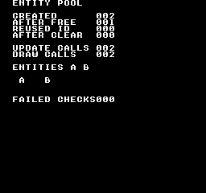
构建命令
New-Item -ItemType Directory -Force .\out | Out-Null
.\kitaqfc\kitaqfc.exe .\kitaqfc\lib\entity.c .\kitaq-docs\samples\api-examples\fc\entity_pool.c -I .\kitaqfc\lib -I .\kitaq-docs\samples -o .\out\entity_pool.nes --mapper=nrom --nes-chr=.\kitaq-docs\samples\font.chr --no-disasm实现与源码
kitaqfc/lib/entity.h:47
Release every entity and restore deterministic defaults, including the no-sprite sentinel.
kitaqfc/lib/entity.c:14
void entity_clear_all(void)
{
u8 i;
i = 0;
while (i < ENTITY_MAX) {
entity_pool[(__safe_index u8)i].active = 0;
entity_pool[(__safe_index u8)i].type = 0;
entity_pool[(__safe_index u8)i].x = 0;
entity_pool[(__safe_index u8)i].y = 0;
entity_pool[(__safe_index u8)i].vx = 0;
entity_pool[(__safe_index u8)i].vy = 0;
entity_pool[(__safe_index u8)i].state = 0;
entity_pool[(__safe_index u8)i].timer = 0;
entity_pool[(__safe_index u8)i].sprite = 0xFF;
i = (u8)(i + 1);
}
}entity_count_active
返回已占用实体槽位数，不改变其状态。
语法
u8 entity_count_active(void);返回值
active 字节非零的槽位数，范围为 0～ENTITY_MAX。表示占用数量，不是最大已分配 ID 或屏幕上的精灵数量。
使用条件与限制
池使用固定数组，不进行堆动态分配。ENTITY_MAX 默认为 16，范围为 1～255，所有编译单元必须使用相同定义。槽位 ID 从 0 开始，0xFF 专门表示失败。
使用示例
created = entity_count_active();
if (created != 2) { failures++; }这是一段调用示例。放入完整程序前，请满足所述初始化和缓冲区要求。
预期结果
完整程序用于理解可复用槽位的生命周期。请结合标签阅读数字：分配两个实体后为 CREATED 002，释放第一个后为 AFTER FREE 001，复用最小空闲 ID 时为 REUSED ID 000，清空池后为 AFTER CLEAR 000。还会检查释放后的查询为 null，以及重新分配后字段被重置。FAILED CHECKS 000 表示这些检查符合预期。
FC 遍历对两个活动实体分别调用回调，显示 UPDATE CALLS 002、DRAW CALLS 002。示例更新回调将两者向右移动一个图块，绘图回调将代表两个对象的 A 放在图块 (3,12)、B 放在 (7,12)。这些是回调绘制的背景字体图块，不是自动分配的精灵。
构建命令
New-Item -ItemType Directory -Force .\out | Out-Null
.\kitaqfc\kitaqfc.exe .\kitaqfc\lib\entity.c .\kitaq-docs\samples\api-examples\fc\entity_pool.c -I .\kitaqfc\lib -I .\kitaq-docs\samples -o .\out\entity_pool.nes --mapper=nrom --nes-chr=.\kitaq-docs\samples\font.chr --no-disasm实现与源码
kitaqfc/lib/entity.h:45
Count occupied slots without changing entity state.
kitaqfc/lib/entity.c:94
u8 entity_count_active(void)
{
u8 i;
u8 count;
i = 0;
count = 0;
while (i < ENTITY_MAX) {
if (entity_pool[(__safe_index u8)i].active != 0) count = (u8)(count + 1);
i = (u8)(i + 1);
}
return count;
}entity_create
按指定类型和位置分配实体，返回可复用的 ID；池满时返回 0xFF。
语法
u8 entity_create(u8 type, s16 x, s16 y);参数
type由游戏定义的类型编号，范围 0～255。池只保存此值，不据此选择行为或绘图函数。
x, y有符号 16 位坐标（
-32768～32767）。像素或 Q8.8 等单位由游戏决定；池不转换单位、裁剪位置或自动应用速度。
返回值
返回编号最小的空闲槽位 ID（0～ENTITY_MAX-1），无空位时返回 0xFF。成功时设 active=1，保存类型和位置，清零速度、状态、计时器，并设 sprite=0xFF。
使用条件与限制
池使用固定数组，不进行堆动态分配。ENTITY_MAX 默认为 16，范围为 1～255，所有编译单元必须使用相同定义。槽位 ID 从 0 开始，0xFF 专门表示失败。
使用示例
first = entity_create(1, 2, 12);
second = entity_create(2, 6, 12);
if (first == 0xFF || second == 0xFF) { failures++; }这是一段调用示例。放入完整程序前，请满足所述初始化和缓冲区要求。
预期结果
完整程序用于理解可复用槽位的生命周期。请结合标签阅读数字：分配两个实体后为 CREATED 002，释放第一个后为 AFTER FREE 001，复用最小空闲 ID 时为 REUSED ID 000，清空池后为 AFTER CLEAR 000。还会检查释放后的查询为 null，以及重新分配后字段被重置。FAILED CHECKS 000 表示这些检查符合预期。
FC 遍历对两个活动实体分别调用回调，显示 UPDATE CALLS 002、DRAW CALLS 002。示例更新回调将两者向右移动一个图块，绘图回调将代表两个对象的 A 放在图块 (3,12)、B 放在 (7,12)。这些是回调绘制的背景字体图块，不是自动分配的精灵。
构建命令
New-Item -ItemType Directory -Force .\out | Out-Null
.\kitaqfc\kitaqfc.exe .\kitaqfc\lib\entity.c .\kitaq-docs\samples\api-examples\fc\entity_pool.c -I .\kitaqfc\lib -I .\kitaq-docs\samples -o .\out\entity_pool.nes --mapper=nrom --nes-chr=.\kitaq-docs\samples\font.chr --no-disasm实现与源码
kitaqfc/lib/entity.h:32
Returns a reusable slot ID, or 0xFF if no slot is free.
kitaqfc/lib/entity.c:34
u8 entity_create(u8 type, s16 x, s16 y)
{
u8 i;
i = 0;
while (i < ENTITY_MAX) {
if (entity_pool[(__safe_index u8)i].active == 0) {
entity_pool[(__safe_index u8)i].active = 1;
entity_pool[(__safe_index u8)i].type = type;
entity_pool[(__safe_index u8)i].x = x;
entity_pool[(__safe_index u8)i].y = y;
entity_pool[(__safe_index u8)i].vx = 0;
entity_pool[(__safe_index u8)i].vy = 0;
entity_pool[(__safe_index u8)i].state = 0;
entity_pool[(__safe_index u8)i].timer = 0;
entity_pool[(__safe_index u8)i].sprite = 0xFF;
return i;
}
i = (u8)(i + 1);
}
return 0xFF;
}entity_destroy
释放 id 对应的实体槽位；保留的数据到重新分配时才初始化。
语法
void entity_destroy(u8 id);参数
id可复用的槽位索引，范围为 0～
ENTITY_MAX-1。范围外 ID 无效；释放无效 ID 不产生效果，查询则返回 null。
返回值
无（void）。
使用条件与限制
池使用固定数组，不进行堆动态分配。ENTITY_MAX 默认为 16，范围为 1～255，所有编译单元必须使用相同定义。槽位 ID 从 0 开始，0xFF 专门表示失败。
释放操作仅将 active 清零，不擦除其他字段，也不释放精灵或素材。之后可能将相同 ID 和地址复用于另一实体。关联资源由游戏负责清理。
使用示例
entity_destroy(first);
after_free = entity_count_active();
if (entity_get(first) != 0 || after_free != 1) { failures++; }这是一段调用示例。放入完整程序前，请满足所述初始化和缓冲区要求。
预期结果
完整程序用于理解可复用槽位的生命周期。请结合标签阅读数字：分配两个实体后为 CREATED 002，释放第一个后为 AFTER FREE 001，复用最小空闲 ID 时为 REUSED ID 000，清空池后为 AFTER CLEAR 000。还会检查释放后的查询为 null，以及重新分配后字段被重置。FAILED CHECKS 000 表示这些检查符合预期。
FC 遍历对两个活动实体分别调用回调，显示 UPDATE CALLS 002、DRAW CALLS 002。示例更新回调将两者向右移动一个图块，绘图回调将代表两个对象的 A 放在图块 (3,12)、B 放在 (7,12)。这些是回调绘制的背景字体图块，不是自动分配的精灵。
构建命令
New-Item -ItemType Directory -Force .\out | Out-Null
.\kitaqfc\kitaqfc.exe .\kitaqfc\lib\entity.c .\kitaq-docs\samples\api-examples\fc\entity_pool.c -I .\kitaqfc\lib -I .\kitaq-docs\samples -o .\out\entity_pool.nes --mapper=nrom --nes-chr=.\kitaq-docs\samples\font.chr --no-disasm实现与源码
kitaqfc/lib/entity.h:35
Release a valid slot without clearing its payload. Reallocation resets the payload; a saved pointer or ID must not be treated as a persistent entity identity.
kitaqfc/lib/entity.c:58
void entity_destroy(u8 id)
{
if (id >= ENTITY_MAX) return;
entity_pool[(__safe_index u8)id].active = 0;
}entity_draw_all
遍历活动实体，将每个 ID 传给绘图回调。遍历方式与 entity_update_all 相同；只有回调提交绘图数据时，才会绘制精灵或像素。
语法
void entity_draw_all(EntityFn fn);参数
fn签名为
void fn(u8 id)的函数指针。接收槽位 ID，可用entity_get(id)访问字段。允许 null，此时不调用。
返回值
无（void）。
使用条件与限制
池使用固定数组，不进行堆动态分配。ENTITY_MAX 默认为 16，范围为 1～255，所有编译单元必须使用相同定义。槽位 ID 从 0 开始，0xFF 专门表示失败。
遍历到槽位时才检查其活动状态。回调可停用后面的槽位使其被跳过，也可启用后面的槽位使其在本轮被访问。并非遍历开始时活动集合的快照。
请将回调放在公共 PRG 存储体 0 中，或在整个调用期间保持其存储体映射不变。函数指针只包含 16 位 CPU 地址，不会切换存储体。FC 函数的参数和局部变量使用固定内存，因此不要递归调用实体遍历，也不要从中断中重入同一遍历过程。
使用示例
void demo_draw(u8 id) {
Entity* entity;
entity = entity_get(id);
if (entity != 0) {
m_put((u8)entity->x, (u8)entity->y, (u8)('A' + entity->type - 1));
draw_calls++;
}
}
// From main(), after creating two entities:
draw_calls = 0;
entity_draw_all(demo_draw);
automatic_draws = draw_calls;
if (automatic_draws != 2) { failures++; }这是一段调用示例。放入完整程序前，请满足所述初始化和缓冲区要求。
预期结果
完整程序用于理解可复用槽位的生命周期。请结合标签阅读数字：分配两个实体后为 CREATED 002，释放第一个后为 AFTER FREE 001，复用最小空闲 ID 时为 REUSED ID 000，清空池后为 AFTER CLEAR 000。还会检查释放后的查询为 null，以及重新分配后字段被重置。FAILED CHECKS 000 表示这些检查符合预期。
FC 遍历对两个活动实体分别调用回调，显示 UPDATE CALLS 002、DRAW CALLS 002。示例更新回调将两者向右移动一个图块，绘图回调将代表两个对象的 A 放在图块 (3,12)、B 放在 (7,12)。这些是回调绘制的背景字体图块，不是自动分配的精灵。
构建命令
New-Item -ItemType Directory -Force .\out | Out-Null
.\kitaqfc\kitaqfc.exe .\kitaqfc\lib\entity.c .\kitaq-docs\samples\api-examples\fc\entity_pool.c -I .\kitaqfc\lib -I .\kitaq-docs\samples -o .\out\entity_pool.nes --mapper=nrom --nes-chr=.\kitaq-docs\samples\font.chr --no-disasm实现与源码
kitaqfc/lib/entity.h:43
Call the drawing callback for each active slot, using the same traversal rules as update. The callback submits drawing data; the pool does not allocate sprites.
kitaqfc/lib/entity.c:88
void entity_draw_all(EntityFn fn)
{
entity_update_all(fn);
}entity_get
返回有效活动实体的指针；ID 无效或未使用时返回 null。该池内存会被复用。
语法
Entity* entity_get(u8 id);参数
id可复用的槽位索引，范围为 0～
ENTITY_MAX-1。范围外 ID 无效；释放无效 ID 不产生效果，查询则返回 null。
返回值
返回可写的活动槽位指针；ID 无效或未使用时返回 null。内存归池所有，不要自行释放，也不要把指针当作跨越删除和重新分配的永久身份。
使用条件与限制
池使用固定数组，不进行堆动态分配。ENTITY_MAX 默认为 16，范围为 1～255，所有编译单元必须使用相同定义。槽位 ID 从 0 开始，0xFF 专门表示失败。
释放操作仅将 active 清零，不擦除其他字段，也不释放精灵或素材。之后可能将相同 ID 和地址复用于另一实体。关联资源由游戏负责清理。
使用示例
current_entity = entity_get(first);
if (current_entity != 0) { current_entity->vx = 5; }
else { failures++; }这是一段调用示例。放入完整程序前，请满足所述初始化和缓冲区要求。
预期结果
完整程序用于理解可复用槽位的生命周期。请结合标签阅读数字：分配两个实体后为 CREATED 002，释放第一个后为 AFTER FREE 001，复用最小空闲 ID 时为 REUSED ID 000，清空池后为 AFTER CLEAR 000。还会检查释放后的查询为 null，以及重新分配后字段被重置。FAILED CHECKS 000 表示这些检查符合预期。
FC 遍历对两个活动实体分别调用回调，显示 UPDATE CALLS 002、DRAW CALLS 002。示例更新回调将两者向右移动一个图块，绘图回调将代表两个对象的 A 放在图块 (3,12)、B 放在 (7,12)。这些是回调绘制的背景字体图块，不是自动分配的精灵。
构建命令
New-Item -ItemType Directory -Force .\out | Out-Null
.\kitaqfc\kitaqfc.exe .\kitaqfc\lib\entity.c .\kitaq-docs\samples\api-examples\fc\entity_pool.c -I .\kitaqfc\lib -I .\kitaq-docs\samples -o .\out\entity_pool.nes --mapper=nrom --nes-chr=.\kitaq-docs\samples\font.chr --no-disasm实现与源码
kitaqfc/lib/entity.h:37
Returns null for an invalid or inactive ID; the returned pointer aliases reusable pool storage.
kitaqfc/lib/entity.c:66
Entity* entity_get(u8 id)
{
if (id >= ENTITY_MAX) return 0;
if (entity_pool[(__safe_index u8)id].active == 0) return 0;
return &entity_pool[(__safe_index u8)id];
}entity_init
初始化实体池中的全部槽位。
语法
void entity_init(void);返回值
无（void）。
使用条件与限制
池使用固定数组，不进行堆动态分配。ENTITY_MAX 默认为 16，范围为 1～255，所有编译单元必须使用相同定义。槽位 ID 从 0 开始，0xFF 专门表示失败。
将所有槽位的 active,type,x,y,vx,vy,state,timer 清零，sprite 设为 0xFF。不会隐藏或释放硬件精灵，绘图资源需另行清理。
使用示例
entity_init();
if (entity_count_active() != 0) { failures++; }这是一段调用示例。放入完整程序前，请满足所述初始化和缓冲区要求。
预期结果
完整程序用于理解可复用槽位的生命周期。请结合标签阅读数字：分配两个实体后为 CREATED 002，释放第一个后为 AFTER FREE 001，复用最小空闲 ID 时为 REUSED ID 000，清空池后为 AFTER CLEAR 000。还会检查释放后的查询为 null，以及重新分配后字段被重置。FAILED CHECKS 000 表示这些检查符合预期。
FC 遍历对两个活动实体分别调用回调，显示 UPDATE CALLS 002、DRAW CALLS 002。示例更新回调将两者向右移动一个图块，绘图回调将代表两个对象的 A 放在图块 (3,12)、B 放在 (7,12)。这些是回调绘制的背景字体图块，不是自动分配的精灵。
构建命令
New-Item -ItemType Directory -Force .\out | Out-Null
.\kitaqfc\kitaqfc.exe .\kitaqfc\lib\entity.c .\kitaq-docs\samples\api-examples\fc\entity_pool.c -I .\kitaqfc\lib -I .\kitaq-docs\samples -o .\out\entity_pool.nes --mapper=nrom --nes-chr=.\kitaq-docs\samples\font.chr --no-disasm实现与源码
kitaqfc/lib/entity.h:30
Reset every slot before the game starts using the pool.
kitaqfc/lib/entity.c:8
void entity_init(void)
{
entity_clear_all();
}entity_update_all
按 ID 升序遍历活动槽位，对每个调用一次 fn(id)。移动、碰撞或计时器逻辑由回调实现，池本身不提供这些逻辑。回调为 null 时不执行任何操作。
语法
void entity_update_all(EntityFn fn);参数
fn签名为
void fn(u8 id)的函数指针。接收槽位 ID，可用entity_get(id)访问字段。允许 null，此时不调用。
返回值
无（void）。
使用条件与限制
池使用固定数组，不进行堆动态分配。ENTITY_MAX 默认为 16，范围为 1～255，所有编译单元必须使用相同定义。槽位 ID 从 0 开始，0xFF 专门表示失败。
遍历到槽位时才检查其活动状态。回调可停用后面的槽位使其被跳过，也可启用后面的槽位使其在本轮被访问。并非遍历开始时活动集合的快照。
请将回调放在公共 PRG 存储体 0 中，或在整个调用期间保持其存储体映射不变。函数指针只包含 16 位 CPU 地址，不会切换存储体。FC 函数的参数和局部变量使用固定内存，因此不要递归调用实体遍历，也不要从中断中重入同一遍历过程。
使用示例
void demo_update(u8 id) {
Entity* entity;
entity = entity_get(id);
if (entity != 0) { entity->x = entity->x + 1; update_calls++; }
}
// From main(), after creating two entities:
update_calls = 0;
entity_update_all(demo_update);
automatic_updates = update_calls;
if (automatic_updates != 2) { failures++; }这是一段调用示例。放入完整程序前，请满足所述初始化和缓冲区要求。
预期结果
完整程序用于理解可复用槽位的生命周期。请结合标签阅读数字：分配两个实体后为 CREATED 002，释放第一个后为 AFTER FREE 001，复用最小空闲 ID 时为 REUSED ID 000，清空池后为 AFTER CLEAR 000。还会检查释放后的查询为 null，以及重新分配后字段被重置。FAILED CHECKS 000 表示这些检查符合预期。
FC 遍历对两个活动实体分别调用回调，显示 UPDATE CALLS 002、DRAW CALLS 002。示例更新回调将两者向右移动一个图块，绘图回调将代表两个对象的 A 放在图块 (3,12)、B 放在 (7,12)。这些是回调绘制的背景字体图块，不是自动分配的精灵。
构建命令
New-Item -ItemType Directory -Force .\out | Out-Null
.\kitaqfc\kitaqfc.exe .\kitaqfc\lib\entity.c .\kitaq-docs\samples\api-examples\fc\entity_pool.c -I .\kitaqfc\lib -I .\kitaq-docs\samples -o .\out\entity_pool.nes --mapper=nrom --nes-chr=.\kitaq-docs\samples\font.chr --no-disasm实现与源码
kitaqfc/lib/entity.h:40
Call fn(id) for each active slot in ascending order. A null callback does nothing. Changes to later slots take effect during the same traversal. Do not reenter this traversal.
kitaqfc/lib/entity.c:75
void entity_update_all(EntityFn fn)
{
u8 i;
if (fn == 0) return;
i = 0;
while (i < ENTITY_MAX) {
if (entity_pool[(__safe_index u8)i].active != 0) fn(i);
i = (u8)(i + 1);
}
}fixed.h — Q8.8 定点运算与矩形
fix_div已找到实现
进行 Q8.8 除法。避免除数为零或数值超出表示范围。
fix8 fix_div(fix8 a, fix8 b);参数，从左到右： fix8 a, fix8 b。数组和指针需要足够空间，并在处理结束前保持有效。
返回类型： fix8。值的含义及成功、失败返回值，以原始说明和实现中的返回条件为准。
Scale the reduced-precision quotient back to 8.8 and return zero for b == 0. Callers must also ensure (b >> 4) is nonzero; the explicit check only tests b. The intermediate product must fit the compiler's integer arithmetic.
参数传递示例
fix8 example_fix_div(fix8 a, fix8 b) {
return fix_div(a, b);
}调用代码需准备对象初始化、缓冲区大小、ROM bank 与设备状态。本函数片段尚未单独执行验证。
需加入的实现： kitaqfc/lib/fixed.c:26。还须加入它调用的其他函数的实现文件。
查看当前实现
fix8 fix_div(fix8 a, fix8 b)
{
if (b == 0) return 0;
return (fix8)(((a >> 4) * 256) / (b >> 4));
}声明或标识符来源：kitaqfc/lib/fixed.h:35
fix_from_int已找到实现
将整数转换为 Q8.8；整数 1 的表示值是 256。
fix8 fix_from_int(s16 n);参数，从左到右： s16 n。数组和指针需要足够空间，并在处理结束前保持有效。
返回类型： fix8。值的含义及成功、失败返回值，以原始说明和实现中的返回条件为准。
Convert an integer to signed 8.8 fixed point by moving it into the high byte. The caller must keep the result within the representable 16-bit range.
调用示例：需要外围代码的片段
m_init();
m_text(2,3,"FIXED");
fix8 a; fix8 b; a=fix_from_int(3); b=fix_from_int(4);
m_number((u8)fix_to_int(fix_mul(a,b)));
while (1) { m_wait(); }
}来源：kitaq-docs/samples/fc_fixed.c:11
需加入的实现： kitaqfc/lib/fixed.c:5。还须加入它调用的其他函数的实现文件。
查看当前实现
fix8 fix_from_int(s16 n)
{
return (fix8)(n << 8);
}声明或标识符来源：kitaqfc/lib/fixed.h:26
fix_lerp已找到实现
执行参数指定的操作。模块：Q8.8 定点运算与矩形。确切的单位、结束标记和返回条件，请查阅下方声明、原始说明及实现。
fix8 fix_lerp(fix8 a, fix8 b, u8 t_q8);参数，从左到右： fix8 a, fix8 b, u8 t_q8。数组和指针需要足够空间，并在处理结束前保持有效。
返回类型： fix8。值的含义及成功、失败返回值，以原始说明和实现中的返回条件为准。
Interpolate toward b using a quantized Q0.8 weight. Both shifts discard low bits, so small changes may vanish and a weight of 255 need not reach b.
参数传递示例
fix8 example_fix_lerp(fix8 a, fix8 b, u8 t_q8) {
return fix_lerp(a, b, t_q8);
}调用代码需准备对象初始化、缓冲区大小、ROM bank 与设备状态。本函数片段尚未单独执行验证。
需加入的实现： kitaqfc/lib/fixed.c:34。还须加入它调用的其他函数的实现文件。
查看当前实现
fix8 fix_lerp(fix8 a, fix8 b, u8 t_q8)
{
fix8 d;
// The endpoint difference must fit s16 before the reduced-precision interpolation.
d = (fix8)(b - a);
return (fix8)(a + (fix8)((d >> 4) * (s16)(t_q8 >> 4)));
}声明或标识符来源：kitaqfc/lib/fixed.h:38
fix_mul已找到实现
相乘两个 Q8.8 值并返回 Q8.8 结果。输入必须处于支持范围内。
fix8 fix_mul(fix8 a, fix8 b);参数，从左到右： fix8 a, fix8 b。数组和指针需要足够空间，并在处理结束前保持有效。
返回类型： fix8。值的含义及成功、失败返回值，以原始说明和实现中的返回条件为准。
Approximate 8.8 multiplication by discarding four low bits from each operand before multiplying. This trades precision for a smaller intermediate product.
调用示例：需要外围代码的片段
m_text(2,3,"FIXED");
fix8 a; fix8 b; a=fix_from_int(3); b=fix_from_int(4);
m_number((u8)fix_to_int(fix_mul(a,b)));
while (1) { m_wait(); }
}来源：kitaq-docs/samples/fc_fixed.c:12
需加入的实现： kitaqfc/lib/fixed.c:18。还须加入它调用的其他函数的实现文件。
查看当前实现
fix8 fix_mul(fix8 a, fix8 b)
{
return (fix8)((a >> 4) * (b >> 4));
}声明或标识符来源：kitaqfc/lib/fixed.h:31
fix_to_int已找到实现
取 Q8.8 的整数部分；负数的舍入方式请查看实现。
s16 fix_to_int(fix8 x);参数，从左到右： fix8 x。数组和指针需要足够空间，并在处理结束前保持有效。
返回类型： s16。值的含义及成功、失败返回值，以原始说明和实现中的返回条件为准。
Discard the eight fractional bits using a signed right shift.
调用示例：需要外围代码的片段
m_text(2,3,"FIXED");
fix8 a; fix8 b; a=fix_from_int(3); b=fix_from_int(4);
m_number((u8)fix_to_int(fix_mul(a,b)));
while (1) { m_wait(); }
}来源：kitaq-docs/samples/fc_fixed.c:12
需加入的实现： kitaqfc/lib/fixed.c:11。还须加入它调用的其他函数的实现文件。
查看当前实现
s16 fix_to_int(fix8 x)
{
return (s16)(x >> 8);
}声明或标识符来源：kitaqfc/lib/fixed.h:28
kq_abs_s16已找到实现
执行参数指定的操作。模块：Q8.8 定点运算与矩形。确切的单位、结束标记和返回条件，请查阅下方声明、原始说明及实现。
s16 kq_abs_s16(s16 v);参数，从左到右： s16 v。数组和指针需要足够空间，并在处理结束前保持有效。
返回类型： s16。值的含义及成功、失败返回值，以原始说明和实现中的返回条件为准。
Return the magnitude in s16. The most-negative s16 has no positive s16 representation and must be excluded by callers needing a nonnegative result.
参数传递示例
s16 example_kq_abs_s16(s16 v) {
return kq_abs_s16(v);
}调用代码需准备对象初始化、缓冲区大小、ROM bank 与设备状态。本函数片段尚未单独执行验证。
需加入的实现： kitaqfc/lib/fixed.c:44。还须加入它调用的其他函数的实现文件。
查看当前实现
s16 kq_abs_s16(s16 v)
{
if (v < 0) return (s16)(0 - v);
return v;
}声明或标识符来源：kitaqfc/lib/fixed.h:41
kq_clamp_s16已找到实现
执行参数指定的操作。模块：Q8.8 定点运算与矩形。确切的单位、结束标记和返回条件，请查阅下方声明、原始说明及实现。
s16 kq_clamp_s16(s16 v, s16 lo, s16 hi);参数，从左到右： s16 v, s16 lo, s16 hi。数组和指针需要足够空间，并在处理结束前保持有效。
返回类型： s16。值的含义及成功、失败返回值，以原始说明和实现中的返回条件为准。
Clamp to an inclusive interval; callers must provide lo <= hi.
参数传递示例
s16 example_kq_clamp_s16(s16 v, s16 lo, s16 hi) {
return kq_clamp_s16(v, lo, hi);
}调用代码需准备对象初始化、缓冲区大小、ROM bank 与设备状态。本函数片段尚未单独执行验证。
需加入的实现： kitaqfc/lib/fixed.c:65。还须加入它调用的其他函数的实现文件。
查看当前实现
s16 kq_clamp_s16(s16 v, s16 lo, s16 hi)
{
if (v < lo) return lo;
if (v > hi) return hi;
return v;
}声明或标识符来源：kitaqfc/lib/fixed.h:47
kq_max_s16已找到实现
执行参数指定的操作。模块：Q8.8 定点运算与矩形。确切的单位、结束标记和返回条件，请查阅下方声明、原始说明及实现。
s16 kq_max_s16(s16 a, s16 b);参数，从左到右： s16 a, s16 b。数组和指针需要足够空间，并在处理结束前保持有效。
返回类型： s16。值的含义及成功、失败返回值，以原始说明和实现中的返回条件为准。
Select the larger signed value.
参数传递示例
s16 example_kq_max_s16(s16 a, s16 b) {
return kq_max_s16(a, b);
}调用代码需准备对象初始化、缓冲区大小、ROM bank 与设备状态。本函数片段尚未单独执行验证。
需加入的实现： kitaqfc/lib/fixed.c:58。还须加入它调用的其他函数的实现文件。
查看当前实现
s16 kq_max_s16(s16 a, s16 b)
{
if (a > b) return a;
return b;
}声明或标识符来源：kitaqfc/lib/fixed.h:45
kq_min_s16已找到实现
执行参数指定的操作。模块：Q8.8 定点运算与矩形。确切的单位、结束标记和返回条件，请查阅下方声明、原始说明及实现。
s16 kq_min_s16(s16 a, s16 b);参数，从左到右： s16 a, s16 b。数组和指针需要足够空间，并在处理结束前保持有效。
返回类型： s16。值的含义及成功、失败返回值，以原始说明和实现中的返回条件为准。
Select the smaller signed value.
参数传递示例
s16 example_kq_min_s16(s16 a, s16 b) {
return kq_min_s16(a, b);
}调用代码需准备对象初始化、缓冲区大小、ROM bank 与设备状态。本函数片段尚未单独执行验证。
需加入的实现： kitaqfc/lib/fixed.c:51。还须加入它调用的其他函数的实现文件。
查看当前实现
s16 kq_min_s16(s16 a, s16 b)
{
if (a < b) return a;
return b;
}声明或标识符来源：kitaqfc/lib/fixed.h:43
kq_point_in_rect已找到实现
执行参数指定的操作。模块：Q8.8 定点运算与矩形。确切的单位、结束标记和返回条件，请查阅下方声明、原始说明及实现。
u8 kq_point_in_rect(s16 x, s16 y, KQRect r);参数，从左到右： s16 x, s16 y, KQRect r。数组和指针需要足够空间，并在处理结束前保持有效。
返回类型： u8。值的含义及成功、失败返回值，以原始说明和实现中的返回条件为准。
Test a half-open rectangle: left/top edges are included, right/bottom excluded. The coordinate-plus-size sums must remain representable as s16.
参数传递示例
u8 example_kq_point_in_rect(s16 x, s16 y, KQRect r) {
return kq_point_in_rect(x, y, r);
}调用代码需准备对象初始化、缓冲区大小、ROM bank 与设备状态。本函数片段尚未单独执行验证。
需加入的实现： kitaqfc/lib/fixed.c:86。还须加入它调用的其他函数的实现文件。
查看当前实现
u8 kq_point_in_rect(s16 x, s16 y, KQRect r)
{
if (x < r.x) return 0;
if (y < r.y) return 0;
if (x >= (s16)(r.x + r.w)) return 0;
if (y >= (s16)(r.y + r.h)) return 0;
return 1;
}声明或标识符来源：kitaqfc/lib/fixed.h:54
kq_rect_intersect已找到实现
执行参数指定的操作。模块：Q8.8 定点运算与矩形。确切的单位、结束标记和返回条件，请查阅下方声明、原始说明及实现。
u8 kq_rect_intersect(KQRect a, KQRect b);参数，从左到右： KQRect a, KQRect b。数组和指针需要足够空间，并在处理结束前保持有效。
返回类型： u8。值的含义及成功、失败返回值，以原始说明和实现中的返回条件为准。
Test overlap using exclusive right/bottom edges; touching edges do not collide. Require positive dimensions and edge sums that fit s16; zero-sized rectangles are not explicitly rejected and may be reported as overlapping.
参数传递示例
u8 example_kq_rect_intersect(KQRect a, KQRect b) {
return kq_rect_intersect(a, b);
}调用代码需准备对象初始化、缓冲区大小、ROM bank 与设备状态。本函数片段尚未单独执行验证。
需加入的实现： kitaqfc/lib/fixed.c:75。还须加入它调用的其他函数的实现文件。
查看当前实现
u8 kq_rect_intersect(KQRect a, KQRect b)
{
if ((s16)(a.x + a.w) <= b.x) return 0;
if ((s16)(b.x + b.w) <= a.x) return 0;
if ((s16)(a.y + a.h) <= b.y) return 0;
if ((s16)(b.y + b.h) <= a.y) return 0;
return 1;
}声明或标识符来源：kitaqfc/lib/fixed.h:51
input.h — 按钮状态、按下、松开与重复
连续移动用 input_down，单次动作用 input_pressed，松开时停止用 input_released，菜单重复操作用 input_repeat。初始化一次，每个输入周期更新一次，然后按需查询。btn_down、btn_pressed、btn_released、btn_repeat 分别是这四个查询函数的别名。
通过 __pad_read1_safe 读取控制器 1，将 NES 位序转换为通用 BTN_* 格式，保存上次状态，并计算按下、松开和重复触发掩码。不处理控制器 2。每个输入周期调用一次。
通用掩码为 BTN_RIGHT=0x01、BTN_LEFT=0x02、BTN_UP=0x04、BTN_DOWN=0x08、BTN_A=0x10、BTN_B=0x20、BTN_SELECT=0x40、BTN_START=0x80。位为 1 表示按住。GB 和 FC 的 input_* 均使用此格式；FC 原始手柄函数的位序不同。
重复触发按更新次数计时，不是毫秒。新按下时立即触发。默认 INPUT_REPEAT_DELAY=18、INPUT_REPEAT_RATE=5 时，19 次更新后再次触发，此后每 6 次更新触发一次。各按钮独立计数。修改设置时，编译 input.c 也必须使用相同宏值；只修改调用方的头文件不会改变库的设置。
input_current
返回最近一次输入更新得到的全部按住按钮位掩码。
语法
u8 input_current(void);返回值
通用 BTN_* 格式的 8 位掩码。多个按钮可以同时置位；0 表示没有按钮。
使用条件与限制
通用掩码为 BTN_RIGHT=0x01、BTN_LEFT=0x02、BTN_UP=0x04、BTN_DOWN=0x08、BTN_A=0x10、BTN_B=0x20、BTN_SELECT=0x40、BTN_START=0x80。位为 1 表示按住。GB 和 FC 的 input_* 均使用此格式；FC 原始手柄函数的位序不同。
查询函数只读取最近一次 input_update() 保存的状态，不重新读取控制器、不消耗事件，也不推进重复计时器。同一输入周期内重复查询结果相同。按钮持续按住时若调用两次 input_update()，第二次调用会清除新按下事件。
使用示例
first_current=input_current(); // Only A held: BTN_A, or decimal 16.这是一段调用示例。放入完整程序前，请满足所述初始化和缓冲区要求。
预期结果
此程序演示持续按下、刚按下、刚松开和自动连发之间的区别。按住A达40次更新后松开。FIRST DOWN、FIRST PRESS、FIRST REPEAT为1，FIRST CURRENT为16。HELD TICKS为40，PRESS COUNT为1，REPEAT COUNT为5。松开后，RELEASE为1，LAST CURRENT为0，LAST PREVIOUS为16。FAILED CHECKS应为0。改变按住的时长会改变计数；程序会根据实际观测到的时长检查连发间隔。
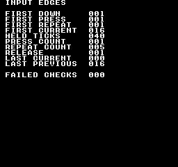
构建命令
New-Item -ItemType Directory -Force .\out | Out-Null
.\kitaqfc\kitaqfc.exe .\kitaqfc\lib\input.c .\kitaq-docs\samples\api-examples\fc\input_edges.c -I .\kitaqfc\lib -I .\kitaq-docs\samples -o .\out\input_edges.nes --mapper=nrom --nes-chr=.\kitaq-docs\samples\font.chr --no-disasm --no-cache实现与源码
kitaqfc/lib/input.h:49
Read the complete translated held-button mask.
kitaqfc/lib/input.c:93
u8 input_current(void) { return kq_input_keys; }input_down
判断 mask 选中的按钮是否至少有一个正被按住。
语法
u8 input_down(u8 mask);参数
mask一个
BTN_*掩码，或用|组合的多个掩码。任一选中按钮符合条件即为真；BTN_A | BTN_B不要求同时按住两个按钮。掩码 0 始终返回 0。若要检查全部按钮均按住，使用(input_current() & mask) == mask。
返回值
任一选中按钮符合查询条件时返回 1，否则返回 0。返回值不是按钮位掩码。
使用条件与限制
通用掩码为 BTN_RIGHT=0x01、BTN_LEFT=0x02、BTN_UP=0x04、BTN_DOWN=0x08、BTN_A=0x10、BTN_B=0x20、BTN_SELECT=0x40、BTN_START=0x80。位为 1 表示按住。GB 和 FC 的 input_* 均使用此格式；FC 原始手柄函数的位序不同。
查询函数只读取最近一次 input_update() 保存的状态，不重新读取控制器、不消耗事件，也不推进重复计时器。同一输入周期内重复查询结果相同。按钮持续按住时若调用两次 input_update()，第二次调用会清除新按下事件。
使用示例
if (input_down(BTN_A)!=0) held_ticks++;这是一段调用示例。放入完整程序前，请满足所述初始化和缓冲区要求。
预期结果
此程序演示持续按下、刚按下、刚松开和自动连发之间的区别。按住A达40次更新后松开。FIRST DOWN、FIRST PRESS、FIRST REPEAT为1，FIRST CURRENT为16。HELD TICKS为40，PRESS COUNT为1，REPEAT COUNT为5。松开后，RELEASE为1，LAST CURRENT为0，LAST PREVIOUS为16。FAILED CHECKS应为0。改变按住的时长会改变计数；程序会根据实际观测到的时长检查连发间隔。
构建命令
New-Item -ItemType Directory -Force .\out | Out-Null
.\kitaqfc\kitaqfc.exe .\kitaqfc\lib\input.c .\kitaq-docs\samples\api-examples\fc\input_edges.c -I .\kitaqfc\lib -I .\kitaq-docs\samples -o .\out\input_edges.nes --mapper=nrom --nes-chr=.\kitaq-docs\samples\font.chr --no-disasm --no-cache实现与源码
kitaqfc/lib/input.h:41
Return true when any masked logical button is held.
kitaqfc/lib/input.c:85
u8 input_down(u8 mask) { return (u8)((kq_input_keys & mask) != 0); }input_init
将当前、上次、按下、松开和重复触发掩码清零，并将八个重复计时器重置为 INPUT_REPEAT_DELAY。本函数初始化输入库，但不读取控制器。随后第一次更新时处于按住状态的按钮会被视为新按下。
语法
void input_init(void);返回值
无（void）。
使用条件与限制
通用掩码为 BTN_RIGHT=0x01、BTN_LEFT=0x02、BTN_UP=0x04、BTN_DOWN=0x08、BTN_A=0x10、BTN_B=0x20、BTN_SELECT=0x40、BTN_START=0x80。位为 1 表示按住。GB 和 FC 的 input_* 均使用此格式；FC 原始手柄函数的位序不同。
重复触发按更新次数计时，不是毫秒。新按下时立即触发。默认 INPUT_REPEAT_DELAY=18、INPUT_REPEAT_RATE=5 时，19 次更新后再次触发，此后每 6 次更新触发一次。各按钮独立计数。修改设置时，编译 input.c 也必须使用相同宏值；只修改调用方的头文件不会改变库的设置。
使用示例
input_init();
if (input_current()!=0 || input_previous()!=0) failures++;这是一段调用示例。放入完整程序前，请满足所述初始化和缓冲区要求。
预期结果
此程序演示持续按下、刚按下、刚松开和自动连发之间的区别。按住A达40次更新后松开。FIRST DOWN、FIRST PRESS、FIRST REPEAT为1，FIRST CURRENT为16。HELD TICKS为40，PRESS COUNT为1，REPEAT COUNT为5。松开后，RELEASE为1，LAST CURRENT为0，LAST PREVIOUS为16。FAILED CHECKS应为0。改变按住的时长会改变计数；程序会根据实际观测到的时长检查连发间隔。
构建命令
New-Item -ItemType Directory -Force .\out | Out-Null
.\kitaqfc\kitaqfc.exe .\kitaqfc\lib\input.c .\kitaq-docs\samples\api-examples\fc\input_edges.c -I .\kitaqfc\lib -I .\kitaq-docs\samples -o .\out\input_edges.nes --mapper=nrom --nes-chr=.\kitaq-docs\samples\font.chr --no-disasm --no-cache实现与源码
kitaqfc/lib/input.h:35
Clear held/edge/repeat masks and reset each independent repeat countdown.
kitaqfc/lib/input.c:34
void input_init(void)
{
u8 i;
kq_input_prev_keys = 0;
kq_input_keys = 0;
kq_input_press_keys = 0;
kq_input_release_keys = 0;
kq_input_repeat_keys = 0;
i = 0;
while (i < 8) {
input_repeat_timer[i] = INPUT_REPEAT_DELAY;
i = (u8)(i + 1);
}
}input_pressed
判断最近一次输入更新中，掩码选中的按钮是否从松开变为按下。
语法
u8 input_pressed(u8 mask);参数
mask一个
BTN_*掩码，或用|组合的多个掩码。任一选中按钮符合条件即为真；BTN_A | BTN_B不要求同时按住两个按钮。掩码 0 始终返回 0。若要检查全部按钮均按住，使用(input_current() & mask) == mask。
返回值
任一选中按钮符合查询条件时返回 1，否则返回 0。返回值不是按钮位掩码。
使用条件与限制
通用掩码为 BTN_RIGHT=0x01、BTN_LEFT=0x02、BTN_UP=0x04、BTN_DOWN=0x08、BTN_A=0x10、BTN_B=0x20、BTN_SELECT=0x40、BTN_START=0x80。位为 1 表示按住。GB 和 FC 的 input_* 均使用此格式；FC 原始手柄函数的位序不同。
查询函数只读取最近一次 input_update() 保存的状态，不重新读取控制器、不消耗事件，也不推进重复计时器。同一输入周期内重复查询结果相同。按钮持续按住时若调用两次 input_update()，第二次调用会清除新按下事件。
使用示例
if (input_pressed(BTN_A)!=0) {
press_count++; seen_press=1;
first_down=input_down(BTN_A); first_press=input_pressed(BTN_A);
first_repeat=input_repeat(BTN_A);
first_current=input_current(); // Only A held: BTN_A, or decimal 16.
first_previous=input_previous(); // No buttons in the preceding sample: 0.
if (first_down!=1 || first_press!=1 || first_repeat!=1) failures++;
if (first_current!=BTN_A || first_previous!=0) failures++;
if (input_down(BTN_A|BTN_B)!=1 || input_down(0)!=0) failures++;
}这是一段调用示例。放入完整程序前，请满足所述初始化和缓冲区要求。
预期结果
此程序演示持续按下、刚按下、刚松开和自动连发之间的区别。按住A达40次更新后松开。FIRST DOWN、FIRST PRESS、FIRST REPEAT为1，FIRST CURRENT为16。HELD TICKS为40，PRESS COUNT为1，REPEAT COUNT为5。松开后，RELEASE为1，LAST CURRENT为0，LAST PREVIOUS为16。FAILED CHECKS应为0。改变按住的时长会改变计数；程序会根据实际观测到的时长检查连发间隔。
构建命令
New-Item -ItemType Directory -Force .\out | Out-Null
.\kitaqfc\kitaqfc.exe .\kitaqfc\lib\input.c .\kitaq-docs\samples\api-examples\fc\input_edges.c -I .\kitaqfc\lib -I .\kitaq-docs\samples -o .\out\input_edges.nes --mapper=nrom --nes-chr=.\kitaq-docs\samples\font.chr --no-disasm --no-cache实现与源码
kitaqfc/lib/input.h:43
Return true when any masked button became pressed in the latest input update.
kitaqfc/lib/input.c:87
u8 input_pressed(u8 mask) { return (u8)((kq_input_press_keys & mask) != 0); }input_previous
返回最近一次输入更新之前保存的按住按钮位掩码。
语法
u8 input_previous(void);返回值
通用 BTN_* 格式的 8 位掩码。多个按钮可以同时置位；0 表示没有按钮。
使用条件与限制
通用掩码为 BTN_RIGHT=0x01、BTN_LEFT=0x02、BTN_UP=0x04、BTN_DOWN=0x08、BTN_A=0x10、BTN_B=0x20、BTN_SELECT=0x40、BTN_START=0x80。位为 1 表示按住。GB 和 FC 的 input_* 均使用此格式；FC 原始手柄函数的位序不同。
查询函数只读取最近一次 input_update() 保存的状态，不重新读取控制器、不消耗事件，也不推进重复计时器。同一输入周期内重复查询结果相同。按钮持续按住时若调用两次 input_update()，第二次调用会清除新按下事件。
使用示例
first_previous=input_previous(); // No buttons in the preceding sample: 0.这是一段调用示例。放入完整程序前，请满足所述初始化和缓冲区要求。
预期结果
此程序演示持续按下、刚按下、刚松开和自动连发之间的区别。按住A达40次更新后松开。FIRST DOWN、FIRST PRESS、FIRST REPEAT为1，FIRST CURRENT为16。HELD TICKS为40，PRESS COUNT为1，REPEAT COUNT为5。松开后，RELEASE为1，LAST CURRENT为0，LAST PREVIOUS为16。FAILED CHECKS应为0。改变按住的时长会改变计数；程序会根据实际观测到的时长检查连发间隔。
构建命令
New-Item -ItemType Directory -Force .\out | Out-Null
.\kitaqfc\kitaqfc.exe .\kitaqfc\lib\input.c .\kitaq-docs\samples\api-examples\fc\input_edges.c -I .\kitaqfc\lib -I .\kitaq-docs\samples -o .\out\input_edges.nes --mapper=nrom --nes-chr=.\kitaq-docs\samples\font.chr --no-disasm --no-cache实现与源码
kitaqfc/lib/input.h:51
Read the translated held-button mask from before the latest update.
kitaqfc/lib/input.c:95
u8 input_previous(void) { return kq_input_prev_keys; }input_released
判断最近一次输入更新中，掩码选中的按钮是否从按下变为松开。
语法
u8 input_released(u8 mask);参数
mask一个
BTN_*掩码，或用|组合的多个掩码。任一选中按钮符合条件即为真；BTN_A | BTN_B不要求同时按住两个按钮。掩码 0 始终返回 0。若要检查全部按钮均按住，使用(input_current() & mask) == mask。
返回值
任一选中按钮符合查询条件时返回 1，否则返回 0。返回值不是按钮位掩码。
使用条件与限制
通用掩码为 BTN_RIGHT=0x01、BTN_LEFT=0x02、BTN_UP=0x04、BTN_DOWN=0x08、BTN_A=0x10、BTN_B=0x20、BTN_SELECT=0x40、BTN_START=0x80。位为 1 表示按住。GB 和 FC 的 input_* 均使用此格式；FC 原始手柄函数的位序不同。
查询函数只读取最近一次 input_update() 保存的状态，不重新读取控制器、不消耗事件，也不推进重复计时器。同一输入周期内重复查询结果相同。按钮持续按住时若调用两次 input_update()，第二次调用会清除新按下事件。
使用示例
if (input_released(BTN_A)!=0) {
release_result=input_released(BTN_A);
last_current=input_current(); last_previous=input_previous();
if (input_down(BTN_A)!=0 || input_pressed(BTN_A)!=0 || input_repeat(BTN_A)!=0) failures++;
break;
}这是一段调用示例。放入完整程序前，请满足所述初始化和缓冲区要求。
预期结果
此程序演示持续按下、刚按下、刚松开和自动连发之间的区别。按住A达40次更新后松开。FIRST DOWN、FIRST PRESS、FIRST REPEAT为1，FIRST CURRENT为16。HELD TICKS为40，PRESS COUNT为1，REPEAT COUNT为5。松开后，RELEASE为1，LAST CURRENT为0，LAST PREVIOUS为16。FAILED CHECKS应为0。改变按住的时长会改变计数；程序会根据实际观测到的时长检查连发间隔。
构建命令
New-Item -ItemType Directory -Force .\out | Out-Null
.\kitaqfc\kitaqfc.exe .\kitaqfc\lib\input.c .\kitaq-docs\samples\api-examples\fc\input_edges.c -I .\kitaqfc\lib -I .\kitaq-docs\samples -o .\out\input_edges.nes --mapper=nrom --nes-chr=.\kitaq-docs\samples\font.chr --no-disasm --no-cache实现与源码
kitaqfc/lib/input.h:45
Return true when any masked button became released in the latest update.
kitaqfc/lib/input.c:89
u8 input_released(u8 mask) { return (u8)((kq_input_release_keys & mask) != 0); }input_repeat
判断掩码选中的按钮是否产生初次按下或定时连发脉冲。
语法
u8 input_repeat(u8 mask);参数
mask一个
BTN_*掩码，或用|组合的多个掩码。任一选中按钮符合条件即为真；BTN_A | BTN_B不要求同时按住两个按钮。掩码 0 始终返回 0。若要检查全部按钮均按住，使用(input_current() & mask) == mask。
返回值
任一选中按钮符合查询条件时返回 1，否则返回 0。返回值不是按钮位掩码。
使用条件与限制
通用掩码为 BTN_RIGHT=0x01、BTN_LEFT=0x02、BTN_UP=0x04、BTN_DOWN=0x08、BTN_A=0x10、BTN_B=0x20、BTN_SELECT=0x40、BTN_START=0x80。位为 1 表示按住。GB 和 FC 的 input_* 均使用此格式；FC 原始手柄函数的位序不同。
查询函数只读取最近一次 input_update() 保存的状态，不重新读取控制器、不消耗事件，也不推进重复计时器。同一输入周期内重复查询结果相同。按钮持续按住时若调用两次 input_update()，第二次调用会清除新按下事件。
重复触发按更新次数计时，不是毫秒。新按下时立即触发。默认 INPUT_REPEAT_DELAY=18、INPUT_REPEAT_RATE=5 时，19 次更新后再次触发，此后每 6 次更新触发一次。各按钮独立计数。修改设置时，编译 input.c 也必须使用相同宏值；只修改调用方的头文件不会改变库的设置。
使用示例
if (input_repeat(BTN_A)!=0) {
// The initial press is pulse 1. Defaults then wait 19 updates, followed by 6.
if (repeat_count==1 && held_ticks-previous_pulse!=19) failures++;
if (repeat_count>1 && held_ticks-previous_pulse!=6) failures++;
previous_pulse=held_ticks; repeat_count++;
if (input_repeat(BTN_A)!=1) failures++; // Reading again does not consume it.
}这是一段调用示例。放入完整程序前，请满足所述初始化和缓冲区要求。
预期结果
此程序演示持续按下、刚按下、刚松开和自动连发之间的区别。按住A达40次更新后松开。FIRST DOWN、FIRST PRESS、FIRST REPEAT为1，FIRST CURRENT为16。HELD TICKS为40，PRESS COUNT为1，REPEAT COUNT为5。松开后，RELEASE为1，LAST CURRENT为0，LAST PREVIOUS为16。FAILED CHECKS应为0。改变按住的时长会改变计数；程序会根据实际观测到的时长检查连发间隔。
构建命令
New-Item -ItemType Directory -Force .\out | Out-Null
.\kitaqfc\kitaqfc.exe .\kitaqfc\lib\input.c .\kitaq-docs\samples\api-examples\fc\input_edges.c -I .\kitaqfc\lib -I .\kitaq-docs\samples -o .\out\input_edges.nes --mapper=nrom --nes-chr=.\kitaq-docs\samples\font.chr --no-disasm --no-cache实现与源码
kitaqfc/lib/input.h:47
Return true for a masked initial press or scheduled repeat pulse.
kitaqfc/lib/input.c:91
u8 input_repeat(u8 mask) { return (u8)((kq_input_repeat_keys & mask) != 0); }input_update
通过 __pad_read1_safe 读取控制器 1，将 NES 位序转换为通用 BTN_* 格式，保存上次状态，并计算按下、松开和重复触发掩码。不处理控制器 2。每个输入周期调用一次。
语法
void input_update(void);返回值
无（void）。
使用条件与限制
通用掩码为 BTN_RIGHT=0x01、BTN_LEFT=0x02、BTN_UP=0x04、BTN_DOWN=0x08、BTN_A=0x10、BTN_B=0x20、BTN_SELECT=0x40、BTN_START=0x80。位为 1 表示按住。GB 和 FC 的 input_* 均使用此格式；FC 原始手柄函数的位序不同。
重复触发按更新次数计时，不是毫秒。新按下时立即触发。默认 INPUT_REPEAT_DELAY=18、INPUT_REPEAT_RATE=5 时，19 次更新后再次触发，此后每 6 次更新触发一次。各按钮独立计数。修改设置时，编译 input.c 也必须使用相同宏值；只修改调用方的头文件不会改变库的设置。
safe 版本成对读取全部按钮，直到两次掩码相同。每次读取都会选通 $4016，使两个控制器的串行读取位置回到开头。重试次数没有上限。此一致性检查并不意味着已验证所有 DMC 和外设组合。
使用示例
input_update(); // One update per input tick, followed by any number of queries.这是一段调用示例。放入完整程序前，请满足所述初始化和缓冲区要求。
预期结果
此程序演示持续按下、刚按下、刚松开和自动连发之间的区别。按住A达40次更新后松开。FIRST DOWN、FIRST PRESS、FIRST REPEAT为1，FIRST CURRENT为16。HELD TICKS为40，PRESS COUNT为1，REPEAT COUNT为5。松开后，RELEASE为1，LAST CURRENT为0，LAST PREVIOUS为16。FAILED CHECKS应为0。改变按住的时长会改变计数；程序会根据实际观测到的时长检查连发间隔。
构建命令
New-Item -ItemType Directory -Force .\out | Out-Null
.\kitaqfc\kitaqfc.exe .\kitaqfc\lib\input.c .\kitaq-docs\samples\api-examples\fc\input_edges.c -I .\kitaqfc\lib -I .\kitaq-docs\samples -o .\out\input_edges.nes --mapper=nrom --nes-chr=.\kitaq-docs\samples\font.chr --no-disasm --no-cache实现与源码
kitaqfc/lib/input.h:39
Read controller 1 through the safe intrinsic, translate its bit order and derive press/release edges. Repeat delays count calls to this function, so call it once per intended input tick.
kitaqfc/lib/input.c:52
void input_update(void)
{
u8 i;
u8 raw;
kq_input_prev_keys = kq_input_keys;
raw = __pad_read1_safe();
kq_input_keys = input_translate_pad(raw);
kq_input_press_keys = (u8)(kq_input_keys & (u8)(kq_input_keys ^ kq_input_prev_keys));
kq_input_release_keys = (u8)(kq_input_prev_keys & (u8)(kq_input_keys ^ kq_input_prev_keys));
kq_input_repeat_keys = kq_input_press_keys;
i = 0;
while (i < 8) {
u8 mask;
mask = input_mask_for_index(i);
if ((kq_input_keys & mask) != 0) {
if ((kq_input_press_keys & mask) != 0) {
input_repeat_timer[i] = INPUT_REPEAT_DELAY;
} else if (input_repeat_timer[i] != 0) {
input_repeat_timer[i] = (u8)(input_repeat_timer[i] - 1);
} else {
kq_input_repeat_keys = (u8)(kq_input_repeat_keys | mask);
input_repeat_timer[i] = INPUT_REPEAT_RATE;
}
} else {
input_repeat_timer[i] = INPUT_REPEAT_DELAY;
}
i = (u8)(i + 1);
}
}input_repeat.h — 长按重复输入
本库与 pad.c 配合，为控制器 1 的各按钮提供独立重复计数器。运行时配置等待与间隔，读取手柄后，每个输入周期推进一次重复状态。新按下、松开和按住查询使用手柄快照；只有重复查询依赖 nes_pad_repeat_step() 的结果。
初始倒计数，范围 0～255。新按下立即触发后，再经过 delay + 1 次重复更新触发下一次。单位为 nes_pad_repeat_step() 的调用次数，只有每帧恰好调用一次时才等于帧数。
后续触发之间的倒计数，范围 0～255。实际间隔为 interval + 1 次重复更新；0 表示初始等待结束后，每次按住更新都触发。八个按钮独立计数。
nes_pad_held
筛选控制器 1 最近一次的按住掩码，适合在选中按钮持续按住时连续执行动作。只读取缓存，不会再次读取硬件。
语法
unsigned char nes_pad_held(unsigned char mask);参数
mask按 NES 原始位序指定要保留的按钮，需要时用
|组合。0 表示不选任何按钮。这是位过滤掩码，不是控制器端口号。
返回值
返回缓存掩码中符合条件的位，并保留原来的位位置。结果可能不是 1；0 表示没有匹配按钮。读取不会消耗事件。
使用条件与限制
NES 原始格式为 A=0x01、B=0x02、SELECT=0x04、START=0x08、UP=0x10、DOWN=0x20、LEFT=0x40、RIGHT=0x80。位为 1 表示按下。nes_pad_* 和原始 __pad_* 结果应使用这些值，不要与 input.h 的通用 BTN_* 掩码混用。
首次读取前，将四个 nes_pad1_* 状态字节初始化为 0。之后每个输入周期读取一次。pressed = current & ~previous，released = previous & ~current，二者表示最近一次读取发生的变化。重复状态需另行调用 nes_pad_repeat_step() 更新。
使用示例
if (nes_pad_held(0x02)!=0) held_ticks++; // B is bit 1 in NES raw format.这是一段调用示例。放入完整程序前，请满足所述初始化和缓冲区要求。
预期结果
此程序演示轮询→更新连发→查询状态的顺序，并说明NES查询函数返回相应位，而不是布尔值1。使用nes_pad_repeat_config(3, 1)，按住B达40次更新后松开。FIRST HELD、FIRST TRIGGER、FIRST REPEAT为2，HELD TICKS为40，PULSE COUNT为19，RELEASE BITS为2。初次按下的脉冲之后经过4次更新产生首次连发，随后每2次更新产生一次。FAILED CHECKS应为0。改变按住的时长会改变脉冲计数。
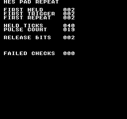
构建命令
New-Item -ItemType Directory -Force .\out | Out-Null
.\kitaqfc\kitaqfc.exe .\kitaqfc\lib\pad.c .\kitaqfc\lib\input_repeat.c .\kitaq-docs\samples\api-examples\fc\pad_repeat.c -I .\kitaqfc\lib -I .\kitaq-docs\samples -o .\out\pad_repeat.nes --mapper=nrom --nes-chr=.\kitaq-docs\samples\font.chr --no-disasm --no-cache实现与源码
kitaqfc/lib/input_repeat.h:28
Return the requested currently-held bits in the NES pad layout.
kitaqfc/lib/input_repeat.c:103
unsigned char nes_pad_held(unsigned char mask)
{
return (unsigned char)(nes_pad1_cur & mask);
}nes_pad_release
筛选控制器 1 最近一次的松开掩码，识别上次按住、这次已松开的选中按钮。继续保持松开不会在下次读取时再次产生松开事件。
语法
unsigned char nes_pad_release(unsigned char mask);参数
mask按 NES 原始位序指定要保留的按钮，需要时用
|组合。0 表示不选任何按钮。这是位过滤掩码，不是控制器端口号。
返回值
返回缓存掩码中符合条件的位，并保留原来的位位置。结果可能不是 1；0 表示没有匹配按钮。读取不会消耗事件。
使用条件与限制
NES 原始格式为 A=0x01、B=0x02、SELECT=0x04、START=0x08、UP=0x10、DOWN=0x20、LEFT=0x40、RIGHT=0x80。位为 1 表示按下。nes_pad_* 和原始 __pad_* 结果应使用这些值，不要与 input.h 的通用 BTN_* 掩码混用。
首次读取前，将四个 nes_pad1_* 状态字节初始化为 0。之后每个输入周期读取一次。pressed = current & ~previous，released = previous & ~current，二者表示最近一次读取发生的变化。重复状态需另行调用 nes_pad_repeat_step() 更新。
使用示例
if (nes_pad_release(0x02)!=0) {
release_bits=nes_pad_release(0x02); // Returns the released B bit, 2.
if (nes_pad_held(0x02)!=0 || nes_pad_trigger(0x02)!=0 || nes_pad_repeat(0x02)!=0) failures++;
break;
}这是一段调用示例。放入完整程序前，请满足所述初始化和缓冲区要求。
预期结果
此程序演示轮询→更新连发→查询状态的顺序，并说明NES查询函数返回相应位，而不是布尔值1。使用nes_pad_repeat_config(3, 1)，按住B达40次更新后松开。FIRST HELD、FIRST TRIGGER、FIRST REPEAT为2，HELD TICKS为40，PULSE COUNT为19，RELEASE BITS为2。初次按下的脉冲之后经过4次更新产生首次连发，随后每2次更新产生一次。FAILED CHECKS应为0。改变按住的时长会改变脉冲计数。
构建命令
New-Item -ItemType Directory -Force .\out | Out-Null
.\kitaqfc\kitaqfc.exe .\kitaqfc\lib\pad.c .\kitaqfc\lib\input_repeat.c .\kitaq-docs\samples\api-examples\fc\pad_repeat.c -I .\kitaqfc\lib -I .\kitaq-docs\samples -o .\out\pad_repeat.nes --mapper=nrom --nes-chr=.\kitaq-docs\samples\font.chr --no-disasm --no-cache实现与源码
kitaqfc/lib/input_repeat.h:26
Return the requested newly-released bits from the latest pad poll.
kitaqfc/lib/input_repeat.c:97
unsigned char nes_pad_release(unsigned char mask)
{
return (unsigned char)(nes_pad1_released & mask);
}nes_pad_repeat
筛选最近一次 nes_pad_repeat_step() 生成的重复触发位，既包含新按下，也包含按住后的定时重复。调用本查询函数不会推进计时。
语法
unsigned char nes_pad_repeat(unsigned char mask);参数
mask按 NES 原始位序指定要保留的按钮，需要时用
|组合。0 表示不选任何按钮。这是位过滤掩码，不是控制器端口号。
返回值
返回缓存掩码中符合条件的位，并保留原来的位位置。结果可能不是 1；0 表示没有匹配按钮。读取不会消耗事件。
使用条件与限制
NES 原始格式为 A=0x01、B=0x02、SELECT=0x04、START=0x08、UP=0x10、DOWN=0x20、LEFT=0x40、RIGHT=0x80。位为 1 表示按下。nes_pad_* 和原始 __pad_* 结果应使用这些值，不要与 input.h 的通用 BTN_* 掩码混用。
首次读取前，将四个 nes_pad1_* 状态字节初始化为 0。之后每个输入周期读取一次。pressed = current & ~previous，released = previous & ~current，二者表示最近一次读取发生的变化。重复状态需另行调用 nes_pad_repeat_step() 更新。
使用示例
if (nes_pad_repeat(0x02)!=0) {
if (pulse_count==1 && held_ticks-previous_pulse!=4) failures++;
if (pulse_count>1 && held_ticks-previous_pulse!=2) failures++;
previous_pulse=held_ticks; pulse_count++;
if (nes_pad_repeat(0x02)!=2) failures++; // Querying again preserves the pulse.
}这是一段调用示例。放入完整程序前，请满足所述初始化和缓冲区要求。
预期结果
此程序演示轮询→更新连发→查询状态的顺序，并说明NES查询函数返回相应位，而不是布尔值1。使用nes_pad_repeat_config(3, 1)，按住B达40次更新后松开。FIRST HELD、FIRST TRIGGER、FIRST REPEAT为2，HELD TICKS为40，PULSE COUNT为19，RELEASE BITS为2。初次按下的脉冲之后经过4次更新产生首次连发，随后每2次更新产生一次。FAILED CHECKS应为0。改变按住的时长会改变脉冲计数。
构建命令
New-Item -ItemType Directory -Force .\out | Out-Null
.\kitaqfc\kitaqfc.exe .\kitaqfc\lib\pad.c .\kitaqfc\lib\input_repeat.c .\kitaq-docs\samples\api-examples\fc\pad_repeat.c -I .\kitaqfc\lib -I .\kitaq-docs\samples -o .\out\pad_repeat.nes --mapper=nrom --nes-chr=.\kitaq-docs\samples\font.chr --no-disasm --no-cache实现与源码
kitaqfc/lib/input_repeat.h:24
Return the requested repeat-pulse bits from the latest repeat step.
kitaqfc/lib/input_repeat.c:91
unsigned char nes_pad_repeat(unsigned char mask)
{
return (unsigned char)(nes_pad1_repeat & mask);
}nes_pad_repeat_config
设置运行时初始等待和重复间隔，将 nes_pad1_repeat 清零，并将八个独立按钮计数器重置为 delay。不读取控制器，也不清除按住、按下或松开掩码。
语法
void nes_pad_repeat_config(unsigned char delay, unsigned char interval);参数
delay初始倒计数，范围 0～255。新按下立即触发后，再经过
delay + 1次重复更新触发下一次。单位为nes_pad_repeat_step()的调用次数，只有每帧恰好调用一次时才等于帧数。interval后续触发之间的倒计数，范围 0～255。实际间隔为
interval + 1次重复更新；0 表示初始等待结束后，每次按住更新都触发。八个按钮独立计数。
返回值
无（void）。
使用条件与限制
NES 原始格式为 A=0x01、B=0x02、SELECT=0x04、START=0x08、UP=0x10、DOWN=0x20、LEFT=0x40、RIGHT=0x80。位为 1 表示按下。nes_pad_* 和原始 __pad_* 结果应使用这些值，不要与 input.h 的通用 BTN_* 掩码混用。
使用示例
nes_pad_repeat_config(3,1); // Next pulse after 4 held updates, then every 2.这是一段调用示例。放入完整程序前，请满足所述初始化和缓冲区要求。
预期结果
此程序演示轮询→更新连发→查询状态的顺序，并说明NES查询函数返回相应位，而不是布尔值1。使用nes_pad_repeat_config(3, 1)，按住B达40次更新后松开。FIRST HELD、FIRST TRIGGER、FIRST REPEAT为2，HELD TICKS为40，PULSE COUNT为19，RELEASE BITS为2。初次按下的脉冲之后经过4次更新产生首次连发，随后每2次更新产生一次。FAILED CHECKS应为0。改变按住的时长会改变脉冲计数。
构建命令
New-Item -ItemType Directory -Force .\out | Out-Null
.\kitaqfc\kitaqfc.exe .\kitaqfc\lib\pad.c .\kitaqfc\lib\input_repeat.c .\kitaq-docs\samples\api-examples\fc\pad_repeat.c -I .\kitaqfc\lib -I .\kitaq-docs\samples -o .\out\pad_repeat.nes --mapper=nrom --nes-chr=.\kitaq-docs\samples\font.chr --no-disasm --no-cache实现与源码
kitaqfc/lib/input_repeat.h:16
Set initial/repeat countdowns and clear repeat output. Zero countdowns are allowed and cause a repeat on the next held-button step. A fresh press emits immediately. Held repeats follow after delay+1 and then interval+1 steps. These are call counts, not milliseconds; use one fresh pad poll before each step.
kitaqfc/lib/input_repeat.c:21
void nes_pad_repeat_config(unsigned char delay, unsigned char interval)
{
unsigned char i;
nes_pad_repeat_delay = delay;
nes_pad_repeat_interval = interval;
nes_pad1_repeat = 0;
i = 0;
while (i != 8)
{
nes_pad1_repeat_counter[i] = delay;
i = i + 1;
}
}nes_pad_repeat_step
根据最近读取的按住和按下掩码重建 nes_pad1_repeat，将各按钮倒计数推进一次。先调用 nes_pad_poll()，再调用本函数一次。反复使用旧的按下掩码会反复重置初始等待，并不断产生新按下事件。
语法
void nes_pad_repeat_step(void);返回值
无（void）。
使用条件与限制
NES 原始格式为 A=0x01、B=0x02、SELECT=0x04、START=0x08、UP=0x10、DOWN=0x20、LEFT=0x40、RIGHT=0x80。位为 1 表示按下。nes_pad_* 和原始 __pad_* 结果应使用这些值，不要与 input.h 的通用 BTN_* 掩码混用。
首次读取前，将四个 nes_pad1_* 状态字节初始化为 0。之后每个输入周期读取一次。pressed = current & ~previous，released = previous & ~current，二者表示最近一次读取发生的变化。重复状态需另行调用 nes_pad_repeat_step() 更新。
使用示例
nes_pad_repeat_step(); // Once after each fresh poll; getters do not advance time.这是一段调用示例。放入完整程序前，请满足所述初始化和缓冲区要求。
预期结果
此程序演示轮询→更新连发→查询状态的顺序，并说明NES查询函数返回相应位，而不是布尔值1。使用nes_pad_repeat_config(3, 1)，按住B达40次更新后松开。FIRST HELD、FIRST TRIGGER、FIRST REPEAT为2，HELD TICKS为40，PULSE COUNT为19，RELEASE BITS为2。初次按下的脉冲之后经过4次更新产生首次连发，随后每2次更新产生一次。FAILED CHECKS应为0。改变按住的时长会改变脉冲计数。
构建命令
New-Item -ItemType Directory -Force .\out | Out-Null
.\kitaqfc\kitaqfc.exe .\kitaqfc\lib\pad.c .\kitaqfc\lib\input_repeat.c .\kitaq-docs\samples\api-examples\fc\pad_repeat.c -I .\kitaqfc\lib -I .\kitaq-docs\samples -o .\out\pad_repeat.nes --mapper=nrom --nes-chr=.\kitaq-docs\samples\font.chr --no-disasm --no-cache实现与源码
kitaqfc/lib/input_repeat.h:20
Generate per-button repeat bits from the most recently polled pad state. Poll first, then call once per tick; a countdown reaching zero emits on the following step, so an interval N leaves N decrement steps between pulses.
kitaqfc/lib/input_repeat.c:40
void nes_pad_repeat_step(void)
{
unsigned char bit_index;
unsigned char mask;
unsigned char counter;
nes_pad1_repeat = 0;
bit_index = 0;
mask = 1;
while (mask != 0)
{
if ((nes_pad1_cur & mask) == 0)
{
nes_pad1_repeat_counter[bit_index] = nes_pad_repeat_delay;
}
else
{
if ((nes_pad1_pressed & mask) != 0)
{
nes_pad1_repeat = nes_pad1_repeat | mask;
nes_pad1_repeat_counter[bit_index] = nes_pad_repeat_delay;
}
else
{
counter = nes_pad1_repeat_counter[bit_index];
if (counter == 0)
{
nes_pad1_repeat = nes_pad1_repeat | mask;
nes_pad1_repeat_counter[bit_index] = nes_pad_repeat_interval;
}
else
{
nes_pad1_repeat_counter[bit_index] = counter - 1;
}
}
}
bit_index = bit_index + 1;
// Byte overflow terminates the scan after the eighth button; each button has its own countdown.
mask = mask + mask;
}
}nes_pad_trigger
用 mask 筛选控制器 1 最近一次的新按下掩码，适合在选中按钮由松开变为按下时执行一次动作。
语法
unsigned char nes_pad_trigger(unsigned char mask);参数
mask按 NES 原始位序指定要保留的按钮，需要时用
|组合。0 表示不选任何按钮。这是位过滤掩码，不是控制器端口号。
返回值
返回缓存掩码中符合条件的位，并保留原来的位位置。结果可能不是 1；0 表示没有匹配按钮。读取不会消耗事件。
使用条件与限制
NES 原始格式为 A=0x01、B=0x02、SELECT=0x04、START=0x08、UP=0x10、DOWN=0x20、LEFT=0x40、RIGHT=0x80。位为 1 表示按下。nes_pad_* 和原始 __pad_* 结果应使用这些值，不要与 input.h 的通用 BTN_* 掩码混用。
首次读取前，将四个 nes_pad1_* 状态字节初始化为 0。之后每个输入周期读取一次。pressed = current & ~previous，released = previous & ~current，二者表示最近一次读取发生的变化。重复状态需另行调用 nes_pad_repeat_step() 更新。
使用示例
if (nes_pad_trigger(0x02)!=0) {
first_trigger=nes_pad_trigger(0x02); // Returns 2, not Boolean 1.
first_held=nes_pad_held(0x02); first_repeat=nes_pad_repeat(0x02);
if (first_trigger!=2 || first_held!=2 || first_repeat!=2) failures++;
}这是一段调用示例。放入完整程序前，请满足所述初始化和缓冲区要求。
预期结果
此程序演示轮询→更新连发→查询状态的顺序，并说明NES查询函数返回相应位，而不是布尔值1。使用nes_pad_repeat_config(3, 1)，按住B达40次更新后松开。FIRST HELD、FIRST TRIGGER、FIRST REPEAT为2，HELD TICKS为40，PULSE COUNT为19，RELEASE BITS为2。初次按下的脉冲之后经过4次更新产生首次连发，随后每2次更新产生一次。FAILED CHECKS应为0。改变按住的时长会改变脉冲计数。
构建命令
New-Item -ItemType Directory -Force .\out | Out-Null
.\kitaqfc\kitaqfc.exe .\kitaqfc\lib\pad.c .\kitaqfc\lib\input_repeat.c .\kitaq-docs\samples\api-examples\fc\pad_repeat.c -I .\kitaqfc\lib -I .\kitaq-docs\samples -o .\out\pad_repeat.nes --mapper=nrom --nes-chr=.\kitaq-docs\samples\font.chr --no-disasm --no-cache实现与源码
kitaqfc/lib/input_repeat.h:22
Return the requested newly-pressed bits, not a normalized Boolean.
kitaqfc/lib/input_repeat.c:85
unsigned char nes_pad_trigger(unsigned char mask)
{
return (unsigned char)(nes_pad1_pressed & mask);
}metasprite.h — 由多个精灵组成的图像
既有 metasprite.c 中的 C 函数，也有 nes_game.h 中展开为 __metasprite_draw 的宏。两者读取相同的带结束标记的数据流，并写入相同的四字节 OAM 项。示例分别编译这两种形式。
C 版组合精灵函数需要 nes_oam_shadow[256]。runtime.c 将其定义在 0x0200，还为 VRAM 队列保留 0x0300–0x03BF，并提供 __nes_nmi。每个实现文件只应引入一次，并应与程序其他部分协调中断处理。
nes_metasprite_draw
既有 metasprite.c 中的 C 函数，也有 nes_game.h 中展开为 __metasprite_draw 的宏。两者读取相同的带结束标记的数据流，并写入相同的四字节 OAM 项。示例分别编译这两种形式。
将带终止标记的精灵部件数据流展开到第02页影子缓冲区的连续条目中。每个部件将字节大小的X/Y偏移加到基准位置，并使用自己的图块和属性。返回下一个OAM编号。
语法
unsigned char nes_metasprite_draw(unsigned char oam_index, unsigned char base_x, unsigned char base_y, unsigned char* metasprite);
// Macro from nes_game.h:
#define nes_metasprite_draw(i,x,y,data) __metasprite_draw((i),(x),(y),(data))参数
oam_index / i精灵条目编号，范围0–63，不是字节偏移。实现使用8位游标将其乘以4；越界值会按64取模，可能覆盖其他条目。不会检查条目是否已分配。
base_x / x以像素为单位的横向位置，使用无符号字节表示，不是图块坐标。
base_y / y直接写入 OAM 的 Y 字节。要把顶部放在第 1 条扫描线或更下方，应传入顶部坐标减一；239..255 位于 240 行可见区域之外。
metasprite / data指向可读四字节记录的指针，记录格式为
dx, dy, tile, attr。下一个dx位置的0xFF表示结束，其后无需其他字节。偏移按256取模相加：0xFE表示−2，dy的0xFF可表示−1，但dx的0xFF保留作终止标记，不能表示−1。指针必须在当前映射的内存中有效。
返回值
下一个OAM条目编号，即(oam_index + 已写部件数) modulo 64。返回的是游标，而不是绘制的部件数。空数据流返回oam_index modulo 64。
使用条件与限制
请明确选择头文件组合：nes_game.h 和总括头文件 fc.h 会定义宏。要使用 C 函数，请包含 runtime.h 或 metasprite.h 并链接相应实现文件，不要引入同名宏，或先用 #undef 取消宏定义。无参数 DMA 宏不能接收 C 函数的 page 参数。
C 版组合精灵函数需要 nes_oam_shadow[256]。runtime.c 将其定义在 0x0200，还为 VRAM 队列保留 0x0300–0x03BF，并提供 __nes_nmi。每个实现文件只应引入一次，并应与程序其他部分协调中断处理。
这些操作修改CPU RAM中的0x0200–0x02FF，不会立即改变硬件OAM。请准备好完整页面后再调用__oam_dma。它们不维护精灵库的分配标记、坐标数组或使用计数。应防止中断处理程序修改或传送尚未准备完毕的页面。
不检查部件数、屏幕裁剪或容量。必须添加终止标记，并将部件数限制为不超过64−oam_index。坐标按256取模；写完槽位63后会回到槽位0。空数据流不修改任何条目。此格式不同于精灵库metasprite_draw使用的、另行指定数量的MetaSpritePart数组。
使用示例
demo_next=nes_metasprite_draw(4,144,31,demo_parts); // C function: returns 6.这是一段调用示例。放入完整程序前，请满足所述初始化和缓冲区要求。
预期结果
C-RUNTIME 演示多个 C 函数的配合。PAIR 行在 (144,32) 和 (152,32) 显示两个 8×8 箭头，第二个水平翻转。y=64 的另一对被隐藏，因此 HIDE RANGE 应为空。两次绘制依次使用槽位 4–5 和 6–7，显示 NEXT 08。将第 02 页复制到第 04 页后，仅把槽位 8 从箭头图块 128 改为方块图块 129。nes_oam_dma(4) 应在 PAGE 04 旁的 (144,96) 显示绿色方块，而第 02 页仍保留图块 128。
箭头采用红色边缘、绿色箭杆和蓝色箭尖细节；方块图块 129 为绿色。验证会逐张比较 8,704 个像素的颜色、传送后的全部 256 字节 OAM 及显示标签。尚未在实体硬件上验证。
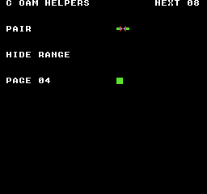
构建命令
New-Item -ItemType Directory -Force .\out | Out-Null
.\kitaqfc\kitaqfc.exe .\kitaq-docs\samples\api-examples\fc\oam_c_helpers.c -I .\kitaqfc\lib -I .\kitaq-docs\samples --nes-chr=.\kitaq-docs\samples\sprite_example.chr -o .\out\oam_c_helpers.nes --no-cache --no-disasm使用示例
fc_oam_next=nes_metasprite_draw(5,136,95,fc_oam_pair); // Returns 7 after two entries.这是一段调用示例。放入完整程序前，请满足所述初始化和缓冲区要求。
预期结果
示例按带标签的行区分各项操作。SET和MOVE在(144,16)、(144,32)显示8×8右箭头；TILE在(144,48)显示绿色方块；ATTR在(144,64)显示水平与垂直均翻转的箭头。HIDE的(144,80)和CLEAR的(144,112)必须为空。META在(136,96)、(144,96)显示一对箭头，第二个水平翻转。NEXT 07表示写完槽位5和6后的下一位置。箭头边缘为红色、箭杆为绿色，尖端细节为蓝色。验证会逐图比较8,704个像素并检查传送后的OAM字节；尚未进行实机测试。
ALIASES 程序使用 nes_game.h 中的宏准备各行，再用 nes_oam_dma() 传送第 02 页。TRANSFER 行应在 (144,128) 显示一个 8×8 箭头。此例演示无须链接 runtime.c 或 metasprite.c 的宏形式。
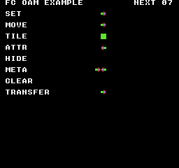
构建命令
New-Item -ItemType Directory -Force .\out | Out-Null
.\kitaqfc\kitaqfc.exe .\kitaq-docs\samples\api-examples\fc\oam_aliases.c -I .\kitaqfc\lib -I .\kitaq-docs\samples --nes-chr=.\kitaq-docs\samples\sprite_example.chr -o .\out\oam_aliases.nes --no-cache --no-disasm实现与源码
kitaqfc/lib/metasprite.h:12
Optional declarations for the phase 10 NES metasprite helper. Metasprite data layout: [dx, dy, tile, attr] repeated, terminated by dx=0xFF / Read four-byte records [dx,dy,tile,attr] until dx=0xFF, writing them to shadow OAM. Coordinates and destination offsets wrap as bytes. The caller must supply a terminator and enough unused slots; there is no capacity guard. Return the next slot index derived from the final wrapped byte offset.
kitaqfc/lib/metasprite.c:18
unsigned char nes_metasprite_draw(unsigned char oam_index, unsigned char base_x, unsigned char base_y, unsigned char* metasprite)
{
unsigned char dst;
unsigned char dx;
dst = oam_index + oam_index;
dst = dst + dst;
while (1)
{
dx = metasprite[0];
if (dx == 0xFF)
{
break;
}
// These are raw OAM Y bytes, not a corrected screen-top coordinate; no allocation bookkeeping is updated.
nes_oam_shadow[dst] = (unsigned char)(base_y + metasprite[1]);
nes_oam_shadow[(unsigned char)(dst + 1)] = metasprite[2];
nes_oam_shadow[(unsigned char)(dst + 2)] = metasprite[3];
nes_oam_shadow[(unsigned char)(dst + 3)] = (unsigned char)(base_x + dx);
dst = (unsigned char)(dst + 4);
metasprite = metasprite + 4;
}
return (unsigned char)(dst >> 2);
}nes_metasprite_hide_from
向一段连续的 OAM 影子项的 Y 字节写入 0xF8，将它们隐藏。图块、属性和 X 坐标保持不变。此 C 函数不传送 OAM，也不释放精灵库中的分配。
语法
void nes_metasprite_hide_from(unsigned char oam_index, unsigned char sprite_count);参数
oam_index精灵条目编号，范围0–63，不是字节偏移。实现使用8位游标将其乘以4；越界值会按64取模，可能覆盖其他条目。不会检查条目是否已分配。
sprite_count要隐藏的项数，范围为 0 到
64−oam_index。0 表示不做任何修改。数量过大会使字节游标回绕，可能把 OAM 开头的项也隐藏；函数不检查范围。
返回值
无（void）。
使用条件与限制
C 版组合精灵函数需要 nes_oam_shadow[256]。runtime.c 将其定义在 0x0200，还为 VRAM 队列保留 0x0300–0x03BF，并提供 __nes_nmi。每个实现文件只应引入一次，并应与程序其他部分协调中断处理。
这些操作修改CPU RAM中的0x0200–0x02FF，不会立即改变硬件OAM。请准备好完整页面后再调用__oam_dma。它们不维护精灵库的分配标记、坐标数组或使用计数。应防止中断处理程序修改或传送尚未准备完毕的页面。
使用示例
nes_metasprite_hide_from(6,2); // Hide slots 6 and 7; the pair at slots 4 and 5 remains.这是一段调用示例。放入完整程序前，请满足所述初始化和缓冲区要求。
预期结果
C-RUNTIME 演示多个 C 函数的配合。PAIR 行在 (144,32) 和 (152,32) 显示两个 8×8 箭头，第二个水平翻转。y=64 的另一对被隐藏，因此 HIDE RANGE 应为空。两次绘制依次使用槽位 4–5 和 6–7，显示 NEXT 08。将第 02 页复制到第 04 页后，仅把槽位 8 从箭头图块 128 改为方块图块 129。nes_oam_dma(4) 应在 PAGE 04 旁的 (144,96) 显示绿色方块，而第 02 页仍保留图块 128。
箭头采用红色边缘、绿色箭杆和蓝色箭尖细节；方块图块 129 为绿色。验证会逐张比较 8,704 个像素的颜色、传送后的全部 256 字节 OAM 及显示标签。尚未在实体硬件上验证。
构建命令
New-Item -ItemType Directory -Force .\out | Out-Null
.\kitaqfc\kitaqfc.exe .\kitaq-docs\samples\api-examples\fc\oam_c_helpers.c -I .\kitaqfc\lib -I .\kitaq-docs\samples --nes-chr=.\kitaq-docs\samples\sprite_example.chr -o .\out\oam_c_helpers.nes --no-cache --no-disasm实现与源码
kitaqfc/lib/metasprite.h:17
Hide consecutive shadow slots by setting Y to 0xF8. Keep the requested range within 64 slots to avoid wrapping and hiding earlier entries.
kitaqfc/lib/metasprite.c:49
void nes_metasprite_hide_from(unsigned char oam_index, unsigned char sprite_count)
{
unsigned char dst;
dst = oam_index + oam_index;
dst = dst + dst;
while (sprite_count != 0)
{
nes_oam_shadow[dst] = 0xF8;
dst = (unsigned char)(dst + 4);
sprite_count = sprite_count - 1;
}
}nametable_asset.h — 名称表素材与放置
nes_attr_apply_now已找到实现
执行参数指定的操作。模块：名称表素材与放置。确切的单位、结束标记和返回条件，请查阅下方声明、原始说明及实现。
void nes_attr_apply_now(unsigned short nt_base);参数，从左到右： unsigned short nt_base。数组和指针需要足够空间，并在处理结束前保持有效。
Upload all attribute shadow bytes immediately; the caller provides safe PPU timing.
参数传递示例
void example_nes_attr_apply_now(unsigned short nt_base) {
nes_attr_apply_now(nt_base);
}调用代码需准备对象初始化、缓冲区大小、ROM bank 与设备状态。本函数片段尚未单独执行验证。
需加入的实现： kitaqfc/lib/nametable_asset.c:90。还须加入它调用的其他函数的实现文件。
查看当前实现
void nes_attr_apply_now(unsigned short nt_base)
{
nes_ppu_stream_write(nes_attr_base_from_nt(nt_base), nes_attr_shadow, 64);
}声明或标识符来源：kitaqfc/lib/nametable_asset.h:20
nes_attr_base_from_nt已找到实现
执行参数指定的操作。模块：名称表素材与放置。确切的单位、结束标记和返回条件，请查阅下方声明、原始说明及实现。
unsigned short nes_attr_base_from_nt(unsigned short nt_base);参数，从左到右： unsigned short nt_base。数组和指针需要足够空间，并在处理结束前保持有效。
返回类型： unsigned short。值的含义及成功、失败返回值，以原始说明和实现中的返回条件为准。
Locate the 64-byte attribute table at offset 0x03C0 from a nametable base.
调用示例：需要外围代码的片段
col = (unsigned char)(col + 1);
}
ppu_addr = (unsigned short)(nes_attr_base_from_nt(nt_base) + (unsigned short)(row * 8 + qx0));
if (nes_vram_queue_try_write(ppu_addr, line, len) == 0)
{
return 0;
}来源：kitaqfc/lib/attribute.c:111
需加入的实现： kitaqfc/lib/nametable_asset.c:30。还须加入它调用的其他函数的实现文件。
查看当前实现
unsigned short nes_attr_base_from_nt(unsigned short nt_base)
{
return (unsigned short)(nt_base + 0x03C0);
}声明或标识符来源：kitaqfc/lib/nametable_asset.h:11
nes_attr_queue_all已找到实现
执行参数指定的操作。模块：名称表素材与放置。确切的单位、结束标记和返回条件，请查阅下方声明、原始说明及实现。
unsigned char nes_attr_queue_all(unsigned short nt_base);参数，从左到右： unsigned short nt_base。数组和指针需要足够空间，并在处理结束前保持有效。
返回类型： unsigned char。值的含义及成功、失败返回值，以原始说明和实现中的返回条件为准。
Copy all shadow attribute bytes into the runtime queue and return its admission result.
参数传递示例
unsigned char example_nes_attr_queue_all(unsigned short nt_base) {
return nes_attr_queue_all(nt_base);
}调用代码需准备对象初始化、缓冲区大小、ROM bank 与设备状态。本函数片段尚未单独执行验证。
需加入的实现： kitaqfc/lib/nametable_asset.c:97。还须加入它调用的其他函数的实现文件。
查看当前实现
unsigned char nes_attr_queue_all(unsigned short nt_base)
{
return nes_vram_queue_try_write(nes_attr_base_from_nt(nt_base), nes_attr_shadow, 64);
}声明或标识符来源：kitaqfc/lib/nametable_asset.h:22
nes_attr_shadow_clear已找到实现
清除内容或状态。模块：名称表素材与放置。确切的单位、结束标记和返回条件，请查阅下方声明、原始说明及实现。
void nes_attr_shadow_clear(unsigned char value);参数，从左到右： unsigned char value。数组和指针需要足够空间，并在处理结束前保持有效。
Fill all 64 shadow bytes with an already-packed attribute value.
参数传递示例
void example_nes_attr_shadow_clear(unsigned char value) {
nes_attr_shadow_clear(value);
}调用代码需准备对象初始化、缓冲区大小、ROM bank 与设备状态。本函数片段尚未单独执行验证。
需加入的实现： kitaqfc/lib/nametable_asset.c:36。还须加入它调用的其他函数的实现文件。
查看当前实现
void nes_attr_shadow_clear(unsigned char value)
{
__memset(nes_attr_shadow, value, 64);
}声明或标识符来源：kitaqfc/lib/nametable_asset.h:13
nes_attr_shadow_copy已找到实现
复制数据。模块：名称表素材与放置。确切的单位、结束标记和返回条件，请查阅下方声明、原始说明及实现。
void nes_attr_shadow_copy(unsigned char* src64);参数，从左到右： unsigned char* src64。数组和指针需要足够空间，并在处理结束前保持有效。
Copy an entire packed attribute table into shadow RAM without writing the PPU.
参数传递示例
void example_nes_attr_shadow_copy(unsigned char* src64) {
nes_attr_shadow_copy(src64);
}调用代码需准备对象初始化、缓冲区大小、ROM bank 与设备状态。本函数片段尚未单独执行验证。
需加入的实现： kitaqfc/lib/nametable_asset.c:42。还须加入它调用的其他函数的实现文件。
查看当前实现
void nes_attr_shadow_copy(unsigned char* src64)
{
__memcpy(nes_attr_shadow, src64, 64);
}声明或标识符来源：kitaqfc/lib/nametable_asset.h:15
nes_attr_shadow_set_quad已找到实现
设置数值或运行条件。模块：名称表素材与放置。确切的单位、结束标记和返回条件，请查阅下方声明、原始说明及实现。
void nes_attr_shadow_set_quad(unsigned char tile_x, unsigned char tile_y, unsigned char pal_index);参数，从左到右： unsigned char tile_x, unsigned char tile_y, unsigned char pal_index。数组和指针需要足够空间，并在处理结束前保持有效。
Replace only the chosen quadrant's palette bits, preserving its neighbors. Palette IDs are masked to two bits; tile coordinates must fit the shadow table.
调用示例：需要外围代码的片段
while (1)
{
nes_attr_shadow_set_quad((unsigned char)(qx << 1), (unsigned char)(qy << 1), pal_index);
if (qx == qx1)
{
break;
}来源：kitaqfc/lib/attribute.c:60
需加入的实现： kitaqfc/lib/nametable_asset.c:72。还须加入它调用的其他函数的实现文件。
查看当前实现
void nes_attr_shadow_set_quad(unsigned char tile_x, unsigned char tile_y, unsigned char pal_index)
{
unsigned char idx;
unsigned char shift;
unsigned char mask;
unsigned char value;
idx = nes_attr_index(tile_x, tile_y);
shift = nes_attr_shift(tile_x, tile_y);
pal_index = (unsigned char)(pal_index & 3);
value = nes_attr_shadow[idx];
mask = (unsigned char)(3 << shift);
value = (unsigned char)(value & (unsigned char)(~mask));
value = (unsigned char)(value | (unsigned char)(pal_index << shift));
nes_attr_shadow[idx] = value;
}声明或标识符来源：kitaqfc/lib/nametable_asset.h:18
nes_nametable_apply_now已找到实现
执行参数指定的操作。模块：名称表素材与放置。确切的单位、结束标记和返回条件，请查阅下方声明、原始说明及实现。
void nes_nametable_apply_now(unsigned short nt_base, unsigned char* nam960, unsigned char* attr64);参数，从左到右： unsigned short nt_base, unsigned char* nam960, unsigned char* attr64。数组和指针需要足够空间，并在处理结束前保持有效。
Upload 960 tile bytes followed by 64 attribute bytes. This bulk operation does not disable rendering or wait for VBlank on its own.
参数传递示例
void example_nes_nametable_apply_now(unsigned short nt_base, unsigned char* nam960, unsigned char* attr64) {
nes_nametable_apply_now(nt_base, nam960, attr64);
}调用代码需准备对象初始化、缓冲区大小、ROM bank 与设备状态。本函数片段尚未单独执行验证。
需加入的实现： kitaqfc/lib/nametable_asset.c:178。还须加入它调用的其他函数的实现文件。
查看当前实现
void nes_nametable_apply_now(unsigned short nt_base, unsigned char* nam960, unsigned char* attr64)
{
nes_ppu_stream_write(nt_base, nam960, 960);
nes_ppu_stream_write(nes_attr_base_from_nt(nt_base), attr64, 64);
}声明或标识符来源：kitaqfc/lib/nametable_asset.h:41
nes_nt_base_from_index已找到实现
执行参数指定的操作。模块：名称表素材与放置。确切的单位、结束标记和返回条件，请查阅下方声明、原始说明及实现。
unsigned short nes_nt_base_from_index(unsigned char index);参数，从左到右： unsigned char index。数组和指针需要足够空间，并在处理结束前保持有效。
返回类型： unsigned short。值的含义及成功、失败返回值，以原始说明和实现中的返回条件为准。
Mask the index to the four logical nametables and return its PPU base. Physical storage still depends on the cartridge's mirroring configuration.
参数传递示例
unsigned short example_nes_nt_base_from_index(unsigned char index) {
return nes_nt_base_from_index(index);
}调用代码需准备对象初始化、缓冲区大小、ROM bank 与设备状态。本函数片段尚未单独执行验证。
需加入的实现： kitaqfc/lib/nametable_asset.c:22。还须加入它调用的其他函数的实现文件。
查看当前实现
unsigned short nes_nt_base_from_index(unsigned char index)
{
index = (unsigned char)(index & 3);
return (unsigned short)(0x2000 + ((unsigned short)index << 10));
}声明或标识符来源：kitaqfc/lib/nametable_asset.h:9
nes_nt_queue_fill_rect已找到实现
填充区域。模块：名称表素材与放置。确切的单位、结束标记和返回条件，请查阅下方声明、原始说明及实现。
unsigned char nes_nt_queue_fill_rect(unsigned short nt_base, unsigned char tile_x, unsigned char tile_y, unsigned char width, unsigned char height, unsigned char value);参数，从左到右： unsigned short nt_base, unsigned char tile_x, unsigned char tile_y, unsigned char width, unsigned char height, unsigned char value。数组和指针需要足够空间，并在处理结束前保持有效。
返回类型： unsigned char。值的含义及成功、失败返回值，以原始说明和实现中的返回条件为准。
Queue one fill record per row, stopping on failure while retaining previously queued rows. The runtime fill-length and rectangle bounds requirements apply.
参数传递示例
unsigned char example_nes_nt_queue_fill_rect(unsigned short nt_base, unsigned char tile_x, unsigned char tile_y, unsigned char width, unsigned char height, unsigned char value) {
return nes_nt_queue_fill_rect(nt_base, tile_x, tile_y, width, height, value);
}调用代码需准备对象初始化、缓冲区大小、ROM bank 与设备状态。本函数片段尚未单独执行验证。
需加入的实现： kitaqfc/lib/nametable_asset.c:157。还须加入它调用的其他函数的实现文件。
查看当前实现
unsigned char nes_nt_queue_fill_rect(unsigned short nt_base, unsigned char tile_x, unsigned char tile_y, unsigned char width, unsigned char height, unsigned char value)
{
unsigned char row;
unsigned short ppu_addr;
row = 0;
while (row != height)
{
ppu_addr = (unsigned short)(nt_base + ((unsigned short)(tile_y + row) << 5) + tile_x);
if (nes_vram_queue_try_fill(ppu_addr, value, width) == 0)
{
return 0;
}
row = (unsigned char)(row + 1);
}
return 1;
}声明或标识符来源：kitaqfc/lib/nametable_asset.h:38
nes_nt_queue_rect已找到实现
执行参数指定的操作。模块：名称表素材与放置。确切的单位、结束标记和返回条件，请查阅下方声明、原始说明及实现。
unsigned char nes_nt_queue_rect(unsigned short nt_base, unsigned char tile_x, unsigned char tile_y, unsigned char width, unsigned char height, unsigned char pitch, unsigned char* src);参数，从左到右： unsigned short nt_base, unsigned char tile_x, unsigned char tile_y, unsigned char width, unsigned char height, unsigned char pitch, unsigned char* src。数组和指针需要足够空间，并在处理结束前保持有效。
返回类型： unsigned char。值的含义及成功、失败返回值，以原始说明和实现中的返回条件为准。
Copy rows into the runtime queue until complete or full. Failure leaves earlier rows queued; it does not roll back a partially admitted rectangle. Widths must respect the queue literal-record limit. Pitch is source bytes per row. Each copied literal record costs width+3 queue bytes; check total admission needs when partial updates are unacceptable.
参数传递示例
unsigned char example_nes_nt_queue_rect(unsigned short nt_base, unsigned char tile_x, unsigned char tile_y, unsigned char width, unsigned char height, unsigned char pitch, unsigned char* src) {
return nes_nt_queue_rect(nt_base, tile_x, tile_y, width, height, pitch, src);
}调用代码需准备对象初始化、缓冲区大小、ROM bank 与设备状态。本函数片段尚未单独执行验证。
需加入的实现： kitaqfc/lib/nametable_asset.c:137。还须加入它调用的其他函数的实现文件。
查看当前实现
unsigned char nes_nt_queue_rect(unsigned short nt_base, unsigned char tile_x, unsigned char tile_y, unsigned char width, unsigned char height, unsigned char pitch, unsigned char* src)
{
unsigned char row;
unsigned short ppu_addr;
row = 0;
while (row != height)
{
ppu_addr = (unsigned short)(nt_base + ((unsigned short)(tile_y + row) << 5) + tile_x);
if (nes_vram_queue_try_write(ppu_addr, src, width) == 0)
{
return 0;
}
src = src + pitch;
row = (unsigned char)(row + 1);
}
return 1;
}声明或标识符来源：kitaqfc/lib/nametable_asset.h:35
nes_nt_queue_row已找到实现
执行参数指定的操作。模块：名称表素材与放置。确切的单位、结束标记和返回条件，请查阅下方声明、原始说明及实现。
unsigned char nes_nt_queue_row(unsigned short nt_base, unsigned char row, unsigned char* src32);参数，从左到右： unsigned short nt_base, unsigned char row, unsigned char* src32。数组和指针需要足够空间，并在处理结束前保持有效。
返回类型： unsigned char。值的含义及成功、失败返回值，以原始说明和实现中的返回条件为准。
Copy one complete nametable row into the runtime queue.
参数传递示例
unsigned char example_nes_nt_queue_row(unsigned short nt_base, unsigned char row, unsigned char* src32) {
return nes_nt_queue_row(nt_base, row, src32);
}调用代码需准备对象初始化、缓冲区大小、ROM bank 与设备状态。本函数片段尚未单独执行验证。
需加入的实现： kitaqfc/lib/nametable_asset.c:111。还须加入它调用的其他函数的实现文件。
查看当前实现
unsigned char nes_nt_queue_row(unsigned short nt_base, unsigned char row, unsigned char* src32)
{
unsigned short ppu_addr;
ppu_addr = (unsigned short)(nt_base + ((unsigned short)row << 5));
return nes_vram_queue_try_write(ppu_addr, src32, 32);
}声明或标识符来源：kitaqfc/lib/nametable_asset.h:26
nes_nt_stream_rect已找到实现
执行参数指定的操作。模块：名称表素材与放置。确切的单位、结束标记和返回条件，请查阅下方声明、原始说明及实现。
void nes_nt_stream_rect(unsigned short nt_base, unsigned char tile_x, unsigned char tile_y, unsigned char width, unsigned char height, unsigned char pitch, unsigned char* src);参数，从左到右： unsigned short nt_base, unsigned char tile_x, unsigned char tile_y, unsigned char width, unsigned char height, unsigned char pitch, unsigned char* src。数组和指针需要足够空间，并在处理结束前保持有效。
Write each rectangle row immediately, advancing source by pitch rather than width. Caller-provided coordinates, storage and timing are not clipped or checked.
参数传递示例
void example_nes_nt_stream_rect(unsigned short nt_base, unsigned char tile_x, unsigned char tile_y, unsigned char width, unsigned char height, unsigned char pitch, unsigned char* src) {
nes_nt_stream_rect(nt_base, tile_x, tile_y, width, height, pitch, src);
}调用代码需准备对象初始化、缓冲区大小、ROM bank 与设备状态。本函数片段尚未单独执行验证。
需加入的实现： kitaqfc/lib/nametable_asset.c:120。还须加入它调用的其他函数的实现文件。
查看当前实现
void nes_nt_stream_rect(unsigned short nt_base, unsigned char tile_x, unsigned char tile_y, unsigned char width, unsigned char height, unsigned char pitch, unsigned char* src)
{
unsigned char row;
unsigned short ppu_addr;
row = 0;
while (row != height)
{
ppu_addr = (unsigned short)(nt_base + ((unsigned short)(tile_y + row) << 5) + tile_x);
nes_ppu_stream_write(ppu_addr, src, width);
src = src + pitch;
row = (unsigned char)(row + 1);
}
}声明或标识符来源：kitaqfc/lib/nametable_asset.h:29
nes_nt_stream_row已找到实现
执行参数指定的操作。模块：名称表素材与放置。确切的单位、结束标记和返回条件，请查阅下方声明、原始说明及实现。
void nes_nt_stream_row(unsigned short nt_base, unsigned char row, unsigned char* src32);参数，从左到右： unsigned short nt_base, unsigned char row, unsigned char* src32。数组和指针需要足够空间，并在处理结束前保持有效。
Write one complete 32-tile row directly. The caller validates the row and PPU timing.
参数传递示例
void example_nes_nt_stream_row(unsigned short nt_base, unsigned char row, unsigned char* src32) {
nes_nt_stream_row(nt_base, row, src32);
}调用代码需准备对象初始化、缓冲区大小、ROM bank 与设备状态。本函数片段尚未单独执行验证。
需加入的实现： kitaqfc/lib/nametable_asset.c:103。还须加入它调用的其他函数的实现文件。
查看当前实现
void nes_nt_stream_row(unsigned short nt_base, unsigned char row, unsigned char* src32)
{
unsigned short ppu_addr;
ppu_addr = (unsigned short)(nt_base + ((unsigned short)row << 5));
nes_ppu_stream_write(ppu_addr, src32, 32);
}声明或标识符来源：kitaqfc/lib/nametable_asset.h:24
nes_game.h — 游戏操作宏
nes_game.h 为 VRAM 队列、OAM 与组合精灵、控制器读取、映射器中断、分区滚动和 FDS 操作提供易读的宏名称。每个宏都会展开为编译器内置函数，因此诊断信息和 KUROSAKI 元数据仍能记录底层硬件操作。队列宏使用内置队列，OAM DMA 宏不接收参数。
请明确选择头文件组合：nes_game.h 和总括头文件 fc.h 会定义宏。要使用 C 函数，请包含 runtime.h 或 metasprite.h 并链接相应实现文件，不要引入同名宏，或先用 #undef 取消宏定义。无参数 DMA 宏不能接收 C 函数的 page 参数。
nes_fds_farcall宏
执行参数指定的操作。模块：游戏操作宏。确切的单位、结束标记和返回条件，请查阅下方声明、原始说明及实现。
#define nes_fds_farcall(bank, func) __fds_overlay_farcall((bank), (func))参数，从左到右： bank, func。数组和指针需要足够空间，并在处理结束前保持有效。
参数传递示例
nes_fds_farcall(bank, func);调用代码需准备对象初始化、缓冲区大小、ROM bank 与设备状态。本函数片段尚未单独执行验证。
声明或标识符来源：kitaqfc/lib/nes_game.h:41
nes_fds_load_bank宏
载入数据。模块：游戏操作宏。确切的单位、结束标记和返回条件，请查阅下方声明、原始说明及实现。
#define nes_fds_load_bank(bank) __fds_load_bank((bank))参数，从左到右： bank。数组和指针需要足够空间，并在处理结束前保持有效。
参数传递示例
nes_fds_load_bank(bank);调用代码需准备对象初始化、缓冲区大小、ROM bank 与设备状态。本函数片段尚未单独执行验证。
声明或标识符来源：kitaqfc/lib/nes_game.h:40
nes_fds_wave_load宏
载入数据。模块：游戏操作宏。确切的单位、结束标记和返回条件，请查阅下方声明、原始说明及实现。
#define nes_fds_wave_load(wave64) __fds_wave_load((wave64))参数，从左到右： wave64。数组和指针需要足够空间，并在处理结束前保持有效。
参数传递示例
nes_fds_wave_load(wave64);调用代码需准备对象初始化、缓冲区大小、ROM bank 与设备状态。本函数片段尚未单独执行验证。
声明或标识符来源：kitaqfc/lib/nes_game.h:39
nes_mapper_irq_ack宏
执行参数指定的操作。模块：游戏操作宏。确切的单位、结束标记和返回条件，请查阅下方声明、原始说明及实现。
#define nes_mapper_irq_ack() __mapper_irq_ack()参数传递示例
nes_mapper_irq_ack();调用代码需准备对象初始化、缓冲区大小、ROM bank 与设备状态。本函数片段尚未单独执行验证。
声明或标识符来源：kitaqfc/lib/nes_game.h:36
nes_mapper_irq_disable宏
关闭功能。模块：游戏操作宏。确切的单位、结束标记和返回条件，请查阅下方声明、原始说明及实现。
#define nes_mapper_irq_disable() __mapper_irq_disable()参数传递示例
nes_mapper_irq_disable();调用代码需准备对象初始化、缓冲区大小、ROM bank 与设备状态。本函数片段尚未单独执行验证。
声明或标识符来源：kitaqfc/lib/nes_game.h:35
nes_mapper_irq_enable宏
启用功能。模块：游戏操作宏。确切的单位、结束标记和返回条件，请查阅下方声明、原始说明及实现。
#define nes_mapper_irq_enable() __mapper_irq_enable()参数传递示例
nes_mapper_irq_enable();调用代码需准备对象初始化、缓冲区大小、ROM bank 与设备状态。本函数片段尚未单独执行验证。
声明或标识符来源：kitaqfc/lib/nes_game.h:34
nes_mapper_irq_set宏
设置数值或运行条件。模块：游戏操作宏。确切的单位、结束标记和返回条件，请查阅下方声明、原始说明及实现。
#define nes_mapper_irq_set(scanline) __mapper_irq_set((scanline))参数，从左到右： scanline。数组和指针需要足够空间，并在处理结束前保持有效。
参数传递示例
nes_mapper_irq_set(scanline);调用代码需准备对象初始化、缓冲区大小、ROM bank 与设备状态。本函数片段尚未单独执行验证。
声明或标识符来源：kitaqfc/lib/nes_game.h:33
nes_oam_clear
这是 nes_game.h 中的宏，会展开为语法栏所示的内置函数。包含此头文件即可使用，无须为此操作添加 C 实现文件。
将第02页影子缓冲区中全部64个精灵的Y设为0xF0，使其隐藏。图块编号、属性和X坐标保持不变。
语法
#define nes_oam_clear() __oam_clear()返回值
无（void）。
使用条件与限制
这些操作修改CPU RAM中的0x0200–0x02FF，不会立即改变硬件OAM。请准备好完整页面后再调用__oam_dma。它们不维护精灵库的分配标记、坐标数组或使用计数。应防止中断处理程序修改或传送尚未准备完毕的页面。
使用示例
nes_sprite_set(63,144,111,128,0); // Seed the CLEAR row with a visible entry.
nes_oam_clear(); // Set every Y byte to 240; tile, attributes and X are retained.这是一段调用示例。放入完整程序前，请满足所述初始化和缓冲区要求。
预期结果
示例按带标签的行区分各项操作。SET和MOVE在(144,16)、(144,32)显示8×8右箭头；TILE在(144,48)显示绿色方块；ATTR在(144,64)显示水平与垂直均翻转的箭头。HIDE的(144,80)和CLEAR的(144,112)必须为空。META在(136,96)、(144,96)显示一对箭头，第二个水平翻转。NEXT 07表示写完槽位5和6后的下一位置。箭头边缘为红色、箭杆为绿色，尖端细节为蓝色。验证会逐图比较8,704个像素并检查传送后的OAM字节；尚未进行实机测试。
ALIASES 程序使用 nes_game.h 中的宏准备各行，再用 nes_oam_dma() 传送第 02 页。TRANSFER 行应在 (144,128) 显示一个 8×8 箭头。此例演示无须链接 runtime.c 或 metasprite.c 的宏形式。
构建命令
New-Item -ItemType Directory -Force .\out | Out-Null
.\kitaqfc\kitaqfc.exe .\kitaq-docs\samples\api-examples\fc\oam_aliases.c -I .\kitaqfc\lib -I .\kitaq-docs\samples --nes-chr=.\kitaq-docs\samples\sprite_example.chr -o .\out\oam_aliases.nes --no-cache --no-disasm实现与源码
kitaqfc/lib/nes_game.h:21
#define nes_oam_clear() __oam_clear()nes_oam_dma
此名称有两种形式。无参数宏 nes_oam_dma() 通过 __oam_dma() 传送第 02 页；C 函数 nes_oam_dma(page) 传送指定的 256 字节 CPU 内存页。两者都会将 OAMADDR 归零并传送整页，且不修改源数据。
语法
#define nes_oam_dma() __oam_dma()
// C function declared in runtime.h:
void nes_oam_dma(unsigned char page);参数
page (C)源CPU地址的高字节：传送
0x0400–0x04FF时应传入4，而不是0x0400。请提供完整的256字节可读页面，并保持所需存储体已映射。避免使用含I/O寄存器的页面，因为读取可能产生副作用。函数不检查源地址。
返回值
无（void）。
使用条件与限制
请明确选择头文件组合：nes_game.h 和总括头文件 fc.h 会定义宏。要使用 C 函数，请包含 runtime.h 或 metasprite.h 并链接相应实现文件，不要引入同名宏，或先用 #undef 取消宏定义。无参数 DMA 宏不能接收 C 函数的 page 参数。
C 版组合精灵函数需要 nes_oam_shadow[256]。runtime.c 将其定义在 0x0200，还为 VRAM 队列保留 0x0300–0x03BF，并提供 __nes_nmi。每个实现文件只应引入一次，并应与程序其他部分协调中断处理。
请在 VBlank 期间或关闭渲染后调用 DMA。两种形式都不会等待 VBlank。应先准备好整个源页面再传送，避免中断在准备过程中修改该页面。
使用示例
m_wait();nes_oam_dma(); // Expand to the page-02 compiler intrinsic.这是一段调用示例。放入完整程序前，请满足所述初始化和缓冲区要求。
预期结果
示例按带标签的行区分各项操作。SET和MOVE在(144,16)、(144,32)显示8×8右箭头；TILE在(144,48)显示绿色方块；ATTR在(144,64)显示水平与垂直均翻转的箭头。HIDE的(144,80)和CLEAR的(144,112)必须为空。META在(136,96)、(144,96)显示一对箭头，第二个水平翻转。NEXT 07表示写完槽位5和6后的下一位置。箭头边缘为红色、箭杆为绿色，尖端细节为蓝色。验证会逐图比较8,704个像素并检查传送后的OAM字节；尚未进行实机测试。
ALIASES 程序使用 nes_game.h 中的宏准备各行，再用 nes_oam_dma() 传送第 02 页。TRANSFER 行应在 (144,128) 显示一个 8×8 箭头。此例演示无须链接 runtime.c 或 metasprite.c 的宏形式。
构建命令
New-Item -ItemType Directory -Force .\out | Out-Null
.\kitaqfc\kitaqfc.exe .\kitaq-docs\samples\api-examples\fc\oam_aliases.c -I .\kitaqfc\lib -I .\kitaq-docs\samples --nes-chr=.\kitaq-docs\samples\sprite_example.chr -o .\out\oam_aliases.nes --no-cache --no-disasm使用示例
m_wait();nes_oam_dma(4); // C function: source address high byte, 0x0400 -> 4.这是一段调用示例。放入完整程序前，请满足所述初始化和缓冲区要求。
预期结果
C-RUNTIME 演示多个 C 函数的配合。PAIR 行在 (144,32) 和 (152,32) 显示两个 8×8 箭头，第二个水平翻转。y=64 的另一对被隐藏，因此 HIDE RANGE 应为空。两次绘制依次使用槽位 4–5 和 6–7，显示 NEXT 08。将第 02 页复制到第 04 页后，仅把槽位 8 从箭头图块 128 改为方块图块 129。nes_oam_dma(4) 应在 PAGE 04 旁的 (144,96) 显示绿色方块，而第 02 页仍保留图块 128。
箭头采用红色边缘、绿色箭杆和蓝色箭尖细节；方块图块 129 为绿色。验证会逐张比较 8,704 个像素的颜色、传送后的全部 256 字节 OAM 及显示标签。尚未在实体硬件上验证。
构建命令
New-Item -ItemType Directory -Force .\out | Out-Null
.\kitaqfc\kitaqfc.exe .\kitaq-docs\samples\api-examples\fc\oam_c_helpers.c -I .\kitaqfc\lib -I .\kitaq-docs\samples --nes-chr=.\kitaq-docs\samples\sprite_example.chr -o .\out\oam_c_helpers.nes --no-cache --no-disasm实现与源码
kitaqfc/lib/nes_game.h:23
kitaqfc/lib/runtime.c:245
void nes_oam_dma(unsigned char page)
{
OAMADDR = 0;
OAMDMA = page;
}nes_pad1
展开为 __pad_read1_safe() 的函数式宏。读取控制器 1 并返回 NES 原始掩码，不是查询缓存状态的 input_current() 的别名。
语法
#define nes_pad1() __pad_read1_safe()返回值
NES 原始位序的 8 位按住掩码。置位的每一位代表一个按下按钮，0 表示没有按钮。不是归一化的布尔值。
使用条件与限制
NES 原始格式为 A=0x01、B=0x02、SELECT=0x04、START=0x08、UP=0x10、DOWN=0x20、LEFT=0x40、RIGHT=0x80。位为 1 表示按下。nes_pad_* 和原始 __pad_* 结果应使用这些值，不要与 input.h 的通用 BTN_* 掩码混用。
此调用重新读取硬件状态，不更新 input_* 或 nes_pad1_* 的缓存，也不生成按下、松开或重复事件。需要检测变化时，请保存读取结果，并与自己保存的上次掩码比较。
safe 版本成对读取全部按钮，直到两次掩码相同。每次读取都会选通 $4016，使两个控制器的串行读取位置回到开头。重试次数没有上限。此一致性检查并不意味着已验证所有 DMC 和外设组合。
使用示例
alias1=nes_pad1(); // Macro for __pad_read1_safe(), using NES raw bits.这是一段调用示例。放入完整程序前，请满足所述初始化和缓冲区要求。
预期结果
此程序比较两个控制器端口、普通读取与一致性检查读取、掩码筛选和简写宏。在控制器1上同时按A和右，在控制器2上同时按B和左。RAW P1、SAFE P1、ALIAS P1为129；P2的三个数值为66。BUTTONS P1为1，DIRS P1为128：筛选方向位时保留其高位位置。FAILED CHECKS应为0。采集到的数值会保留在屏幕上。

构建命令
New-Item -ItemType Directory -Force .\out | Out-Null
.\kitaqfc\kitaqfc.exe .\kitaq-docs\samples\api-examples\fc\input_raw.c -I .\kitaqfc\lib -I .\kitaq-docs\samples -o .\out\input_raw.nes --mapper=nrom --nes-chr=.\kitaq-docs\samples\font.chr --no-disasm --no-cache实现与源码
kitaqfc/lib/nes_game.h:30
nes_pad2
展开为 __pad_read2_safe() 的函数式宏。读取控制器 2 并返回 NES 原始掩码，不是查询缓存状态的 input_current() 的别名。
语法
#define nes_pad2() __pad_read2_safe()返回值
NES 原始位序的 8 位按住掩码。置位的每一位代表一个按下按钮，0 表示没有按钮。不是归一化的布尔值。
使用条件与限制
NES 原始格式为 A=0x01、B=0x02、SELECT=0x04、START=0x08、UP=0x10、DOWN=0x20、LEFT=0x40、RIGHT=0x80。位为 1 表示按下。nes_pad_* 和原始 __pad_* 结果应使用这些值，不要与 input.h 的通用 BTN_* 掩码混用。
此调用重新读取硬件状态，不更新 input_* 或 nes_pad1_* 的缓存，也不生成按下、松开或重复事件。需要检测变化时，请保存读取结果，并与自己保存的上次掩码比较。
safe 版本成对读取全部按钮，直到两次掩码相同。每次读取都会选通 $4016，使两个控制器的串行读取位置回到开头。重试次数没有上限。此一致性检查并不意味着已验证所有 DMC 和外设组合。
使用示例
alias2=nes_pad2(); // Macro for __pad_read2_safe(), using NES raw bits.这是一段调用示例。放入完整程序前，请满足所述初始化和缓冲区要求。
预期结果
此程序比较两个控制器端口、普通读取与一致性检查读取、掩码筛选和简写宏。在控制器1上同时按A和右，在控制器2上同时按B和左。RAW P1、SAFE P1、ALIAS P1为129；P2的三个数值为66。BUTTONS P1为1，DIRS P1为128：筛选方向位时保留其高位位置。FAILED CHECKS应为0。采集到的数值会保留在屏幕上。
构建命令
New-Item -ItemType Directory -Force .\out | Out-Null
.\kitaqfc\kitaqfc.exe .\kitaq-docs\samples\api-examples\fc\input_raw.c -I .\kitaqfc\lib -I .\kitaq-docs\samples -o .\out\input_raw.nes --mapper=nrom --nes-chr=.\kitaq-docs\samples\font.chr --no-disasm --no-cache实现与源码
kitaqfc/lib/nes_game.h:31
nes_split_scroll_sprite0宏
执行参数指定的操作。模块：游戏操作宏。确切的单位、结束标记和返回条件，请查阅下方声明、原始说明及实现。
#define nes_split_scroll_sprite0(x,y) __split_scroll_sprite0((x),(y))参数，从左到右： x,y。数组和指针需要足够空间，并在处理结束前保持有效。
参数传递示例
nes_split_scroll_sprite0(x, y);调用代码需准备对象初始化、缓冲区大小、ROM bank 与设备状态。本函数片段尚未单独执行验证。
声明或标识符来源：kitaqfc/lib/nes_game.h:37
nes_sprite_hide
这是 nes_game.h 中的宏，会展开为语法栏所示的内置函数。包含此头文件即可使用，无须为此操作添加 C 实现文件。
将一个影子精灵的Y设为0xF0以隐藏它。X、图块和属性会保留以供复用。此函数不会释放分配的槽位，也不会改变精灵库的使用计数。
语法
#define nes_sprite_hide(i) __sprite_hide((i))参数
i精灵条目编号，范围0–63，不是字节偏移。实现使用8位游标将其乘以4；越界值会按64取模，可能覆盖其他条目。不会检查条目是否已分配。
返回值
无（void）。
使用条件与限制
这些操作修改CPU RAM中的0x0200–0x02FF，不会立即改变硬件OAM。请准备好完整页面后再调用__oam_dma。它们不维护精灵库的分配标记、坐标数组或使用计数。应防止中断处理程序修改或传送尚未准备完毕的页面。
使用示例
nes_sprite_hide(4); // The HIDE row remains empty after DMA.这是一段调用示例。放入完整程序前，请满足所述初始化和缓冲区要求。
预期结果
示例按带标签的行区分各项操作。SET和MOVE在(144,16)、(144,32)显示8×8右箭头；TILE在(144,48)显示绿色方块；ATTR在(144,64)显示水平与垂直均翻转的箭头。HIDE的(144,80)和CLEAR的(144,112)必须为空。META在(136,96)、(144,96)显示一对箭头，第二个水平翻转。NEXT 07表示写完槽位5和6后的下一位置。箭头边缘为红色、箭杆为绿色，尖端细节为蓝色。验证会逐图比较8,704个像素并检查传送后的OAM字节；尚未进行实机测试。
ALIASES 程序使用 nes_game.h 中的宏准备各行，再用 nes_oam_dma() 传送第 02 页。TRANSFER 行应在 (144,128) 显示一个 8×8 箭头。此例演示无须链接 runtime.c 或 metasprite.c 的宏形式。
构建命令
New-Item -ItemType Directory -Force .\out | Out-Null
.\kitaqfc\kitaqfc.exe .\kitaq-docs\samples\api-examples\fc\oam_aliases.c -I .\kitaqfc\lib -I .\kitaq-docs\samples --nes-chr=.\kitaq-docs\samples\sprite_example.chr -o .\out\oam_aliases.nes --no-cache --no-disasm实现与源码
kitaqfc/lib/nes_game.h:26
#define nes_sprite_hide(i) __sprite_hide((i))nes_sprite_move
这是 nes_game.h 中的宏，会展开为语法栏所示的内置函数。包含此头文件即可使用，无须为此操作添加 C 实现文件。
只修改一个影子精灵的X和Y字节，保留图块编号与属性。因此可在不改变调色板或翻转状态的情况下移动同一图形。
语法
#define nes_sprite_move(i,x,y) __sprite_move((i),(x),(y))参数
i精灵条目编号，范围0–63，不是字节偏移。实现使用8位游标将其乘以4；越界值会按64取模，可能覆盖其他条目。不会检查条目是否已分配。
x以像素为单位的横向位置，使用无符号字节表示，不是图块坐标。
y直接写入 OAM 的 Y 字节。要把顶部放在第 1 条扫描线或更下方，应传入顶部坐标减一；239..255 位于 240 行可见区域之外。
返回值
无（void）。
使用条件与限制
这些操作修改CPU RAM中的0x0200–0x02FF，不会立即改变硬件OAM。请准备好完整页面后再调用__oam_dma。它们不维护精灵库的分配标记、坐标数组或使用计数。应防止中断处理程序修改或传送尚未准备完毕的页面。
使用示例
nes_sprite_move(1,144,31); // Move to (144,32), retaining tile 128 and attributes 0.这是一段调用示例。放入完整程序前，请满足所述初始化和缓冲区要求。
预期结果
示例按带标签的行区分各项操作。SET和MOVE在(144,16)、(144,32)显示8×8右箭头；TILE在(144,48)显示绿色方块；ATTR在(144,64)显示水平与垂直均翻转的箭头。HIDE的(144,80)和CLEAR的(144,112)必须为空。META在(136,96)、(144,96)显示一对箭头，第二个水平翻转。NEXT 07表示写完槽位5和6后的下一位置。箭头边缘为红色、箭杆为绿色，尖端细节为蓝色。验证会逐图比较8,704个像素并检查传送后的OAM字节；尚未进行实机测试。
ALIASES 程序使用 nes_game.h 中的宏准备各行，再用 nes_oam_dma() 传送第 02 页。TRANSFER 行应在 (144,128) 显示一个 8×8 箭头。此例演示无须链接 runtime.c 或 metasprite.c 的宏形式。
构建命令
New-Item -ItemType Directory -Force .\out | Out-Null
.\kitaqfc\kitaqfc.exe .\kitaq-docs\samples\api-examples\fc\oam_aliases.c -I .\kitaqfc\lib -I .\kitaq-docs\samples --nes-chr=.\kitaq-docs\samples\sprite_example.chr -o .\out\oam_aliases.nes --no-cache --no-disasm实现与源码
kitaqfc/lib/nes_game.h:25
#define nes_sprite_move(i,x,y) __sprite_move((i),(x),(y))nes_sprite_set
这是 nes_game.h 中的宏，会展开为语法栏所示的内置函数。包含此头文件即可使用，无须为此操作添加 C 实现文件。
将一个精灵的全部四个字段写入第02页影子缓冲区。参数顺序为编号、X、Y、图块、属性，实际存储顺序为Y、图块、属性、X。
语法
#define nes_sprite_set(i,x,y,t,a) __sprite_set((i),(x),(y),(t),(a))参数
i精灵条目编号，范围0–63，不是字节偏移。实现使用8位游标将其乘以4；越界值会按64取模，可能覆盖其他条目。不会检查条目是否已分配。
x以像素为单位的横向位置，使用无符号字节表示，不是图块坐标。
y直接写入 OAM 的 Y 字节。要把顶部放在第 1 条扫描线或更下方，应传入顶部坐标减一；239..255 位于 240 行可见区域之外。
t8 位图块编号。须先加载图形。8×16 精灵仍遵循硬件规则，函数不会自动调整成成对图块编号。
a完整属性字节：位0–1选择精灵调色板0–3；位5使不透明精灵像素位于不透明背景像素之后；位6和7分别控制水平与垂直翻转。位2–4应为0。可用按位OR组合标志；传入字节会替换全部原有属性。
返回值
无（void）。
使用条件与限制
这些操作修改CPU RAM中的0x0200–0x02FF，不会立即改变硬件OAM。请准备好完整页面后再调用__oam_dma。它们不维护精灵库的分配标记、坐标数组或使用计数。应防止中断处理程序修改或传送尚未准备完毕的页面。
使用示例
nes_sprite_set(0,144,15,128,0); // An 8x8 arrow at visible position (144,16).这是一段调用示例。放入完整程序前，请满足所述初始化和缓冲区要求。
预期结果
示例按带标签的行区分各项操作。SET和MOVE在(144,16)、(144,32)显示8×8右箭头；TILE在(144,48)显示绿色方块；ATTR在(144,64)显示水平与垂直均翻转的箭头。HIDE的(144,80)和CLEAR的(144,112)必须为空。META在(136,96)、(144,96)显示一对箭头，第二个水平翻转。NEXT 07表示写完槽位5和6后的下一位置。箭头边缘为红色、箭杆为绿色，尖端细节为蓝色。验证会逐图比较8,704个像素并检查传送后的OAM字节；尚未进行实机测试。
ALIASES 程序使用 nes_game.h 中的宏准备各行，再用 nes_oam_dma() 传送第 02 页。TRANSFER 行应在 (144,128) 显示一个 8×8 箭头。此例演示无须链接 runtime.c 或 metasprite.c 的宏形式。
构建命令
New-Item -ItemType Directory -Force .\out | Out-Null
.\kitaqfc\kitaqfc.exe .\kitaq-docs\samples\api-examples\fc\oam_aliases.c -I .\kitaqfc\lib -I .\kitaq-docs\samples --nes-chr=.\kitaq-docs\samples\sprite_example.chr -o .\out\oam_aliases.nes --no-cache --no-disasm实现与源码
kitaqfc/lib/nes_game.h:24
#define nes_sprite_set(i,x,y,t,a) __sprite_set((i),(x),(y),(t),(a))nes_vram_clear_queue
这是 nes_game.h 中的宏，会展开为语法栏所示的内置函数。包含此头文件即可使用，无须为此操作添加 C 实现文件。
丢弃内置队列的全部待处理记录，并将长度和就绪标志置0。不写入VRAM，也不清除溢出标志；清除该标志需要另外调用__vramq_clear_overflow。
语法
#define nes_vram_clear_queue() __vramq_clear()返回值
无（void）。
使用条件与限制
FC以固定128字节内置缓冲区中的编码命令字节数计量。单图块写入占4字节，填充记录占5字节，指针复制记录占6字节，均含元数据。就绪队列可能由NMI执行，应在提交前检查和构建，并协调生产与执行阶段。
这些宏操作编译器的内置命令队列，lib/vram.c 也使用同一队列。它们不会选择 C 运行时的 nes_vram_queue_* 缓冲区。用 __vramq_len() 查询待处理命令的编码字节数，用 __vramq_overflow() 检查容量不足，再用 __vramq_clear_overflow() 清除失败标志。
应协调队列构建与执行阶段。不要在中断执行队列时追加、直接修改管理变量或意外覆盖保留的源数据。这些API不提供锁或双缓冲。容量指命令缓冲区，不是硬件VRAM空闲字节数。
使用示例
nes_vram_clear_queue();
if (__vramq_len()!=0 || __vramq_overflow()!=1) failures++;
// Clearing queued work deliberately leaves the overflow latch set.这是一段调用示例。放入完整程序前，请满足所述初始化和缓冲区要求。
预期结果
完整示例使用 nes_game.h 中的宏完成单字节入队、复制、填充、提交和清空队列，并使用 __vramq_* 查询及执行内置函数检查效果。画面标题为 VRAM QUEUE MACROS。大批量传送在关闭渲染时执行；提交操作本身并不能保证大批量传送在 VBlank 内完成。
完整程序演示队列容量、保留的指针、两种独立重置，以及直接执行与NMI执行的区别。预期显示CAPACITY 128、ENCODED BYTES 030、AFTER EXEC 000、OVERFLOW SEEN 001和FAILED CHECKS 000。6条记录占30字节，却执行512次字节写入。OVERFLOW SEEN保留之前故意触发拒绝时的值，不表示最终溢出标志仍置位。
蓝色复制区域从像素(0,16)开始，绿色填充区域从(0,88)开始。每块包含7个完整的256像素宽图块行，以及第8行的248像素，共255个图块。最后一个8×8单元保持黑色。复制重复实心、左半填充和三角形的8×8图案；因入队后修改了源数据，首图块应为三角形。填充在调用方变量改变后仍保持实心。测试同时检查形状和颜色。
在y=160处，x=16应为红色实心正方形，x=224为红色左半图块，x=240为红色实心正方形。第一个验证零长度复制和填充不会改写；中间验证默认NMI执行；最后验证单次写入。已取消的(248,160)单元必须保持黑色。长传输在关闭渲染和NMI时执行，只有最后的小写入使用NMI。这是NROM模拟器证据，不是实机测试。
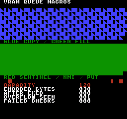
构建命令
New-Item -ItemType Directory -Force .\out | Out-Null
.\kitaqfc\kitaqfc.exe .\kitaq-docs\samples\api-examples\fc\vram_queue_macros.c -I .\kitaqfc\lib -I .\kitaq-docs\samples -o .\out\vram_queue_macros.nes --mapper=nrom --nes-chr=.\kitaq-docs\samples\api-examples\fc\vram_shapes.chr --no-cache --no-disasm实现与源码
kitaqfc/lib/nes_game.h:19
#define nes_vram_clear_queue() __vramq_clear()nes_vram_commit
这是 nes_game.h 中的宏，会展开为语法栏所示的内置函数。包含此头文件即可使用，无须为此操作添加 C 实现文件。
将队列就绪标志设为1，允许执行器处理。不复制传输数据、不执行PPU写入，也不等待NMI。提交后应保持队列和保留的源数据稳定，直到执行完成。NMI开启时，默认处理程序可能异步执行队列。
语法
#define nes_vram_commit() __vramq_commit()返回值
无（void）。
使用条件与限制
FC以固定128字节内置缓冲区中的编码命令字节数计量。单图块写入占4字节，填充记录占5字节，指针复制记录占6字节，均含元数据。就绪队列可能由NMI执行，应在提交前检查和构建，并协调生产与执行阶段。
这些宏操作编译器的内置命令队列，lib/vram.c 也使用同一队列。它们不会选择 C 运行时的 nes_vram_queue_* 缓冲区。用 __vramq_len() 查询待处理命令的编码字节数，用 __vramq_overflow() 检查容量不足，再用 __vramq_clear_overflow() 清除失败标志。
应协调队列构建与执行阶段。不要在中断执行队列时追加、直接修改管理变量或意外覆盖保留的源数据。这些API不提供锁或双缓冲。容量指命令缓冲区，不是硬件VRAM空闲字节数。
使用示例
nes_vram_commit(); // NMI is disabled here: this only marks the queue ready.
if (__vramq_len()!=30) failures++;这是一段调用示例。放入完整程序前，请满足所述初始化和缓冲区要求。
预期结果
完整示例使用 nes_game.h 中的宏完成单字节入队、复制、填充、提交和清空队列，并使用 __vramq_* 查询及执行内置函数检查效果。画面标题为 VRAM QUEUE MACROS。大批量传送在关闭渲染时执行；提交操作本身并不能保证大批量传送在 VBlank 内完成。
完整程序演示队列容量、保留的指针、两种独立重置，以及直接执行与NMI执行的区别。预期显示CAPACITY 128、ENCODED BYTES 030、AFTER EXEC 000、OVERFLOW SEEN 001和FAILED CHECKS 000。6条记录占30字节，却执行512次字节写入。OVERFLOW SEEN保留之前故意触发拒绝时的值，不表示最终溢出标志仍置位。
蓝色复制区域从像素(0,16)开始，绿色填充区域从(0,88)开始。每块包含7个完整的256像素宽图块行，以及第8行的248像素，共255个图块。最后一个8×8单元保持黑色。复制重复实心、左半填充和三角形的8×8图案；因入队后修改了源数据，首图块应为三角形。填充在调用方变量改变后仍保持实心。测试同时检查形状和颜色。
在y=160处，x=16应为红色实心正方形，x=224为红色左半图块，x=240为红色实心正方形。第一个验证零长度复制和填充不会改写；中间验证默认NMI执行；最后验证单次写入。已取消的(248,160)单元必须保持黑色。长传输在关闭渲染和NMI时执行，只有最后的小写入使用NMI。这是NROM模拟器证据，不是实机测试。
构建命令
New-Item -ItemType Directory -Force .\out | Out-Null
.\kitaqfc\kitaqfc.exe .\kitaq-docs\samples\api-examples\fc\vram_queue_macros.c -I .\kitaqfc\lib -I .\kitaq-docs\samples -o .\out\vram_queue_macros.nes --mapper=nrom --nes-chr=.\kitaq-docs\samples\api-examples\fc\vram_shapes.chr --no-cache --no-disasm实现与源码
kitaqfc/lib/nes_game.h:18
#define nes_vram_commit() __vramq_commit()nes_vram_copy
这是 nes_game.h 中的宏，会展开为语法栏所示的内置函数。包含此头文件即可使用，无须为此操作添加 C 实现文件。
追加一条6字节记录，在执行时将src的len字节复制到ppu_addr。队列保留源指针而非数据本身。即使复制255字节，也只占6字节命令缓冲区。源数据按地址递增顺序读取；目标连续写入需选择PPU增量1。
语法
#define nes_vram_copy(addr, src, len) __vramq_copy((addr), (src), (len))参数
addrPPU字节地址（
0x0000–0x3FFF），不是CPU指针。目标必须可写；改写图案需要CHR RAM，不能写入CHR ROM。PPU映射与镜像规则照常适用。连续复制和填充应将PPUCTRL地址增量设为1。在安全的PPU写入时段执行，然后恢复所需的滚动状态；执行器会写入PPUADDR和PPUDATA，不会恢复滚动设置。src指向可读字节的近指针，保留到执行时。整个执行期间必须保持数据有效且其内存或ROM银行可访问；不保存银行号或数据副本。非空传输需要有效源数据，不可使用生命周期已结束的局部数组。
len字节数，范围0至255。一条记录处理全部长度，不拆成127字节的块。0仍占用复制或填充记录；执行时会设置PPU地址，但不向PPUDATA写入字节。256超出此参数范围。
返回值
无（void）。
使用条件与限制
追加函数不返回成功值。完整记录放不下时，将__vramq_overflow()置1，保留原有记录和长度。空间恰好足够时可以加入。旧溢出标志不会阻止能放下的新记录，因此判断新批次前应先处理或清除标志。连续多次追加不构成事务。
FC以固定128字节内置缓冲区中的编码命令字节数计量。单图块写入占4字节，填充记录占5字节，指针复制记录占6字节，均含元数据。就绪队列可能由NMI执行，应在提交前检查和构建，并协调生产与执行阶段。
这些宏操作编译器的内置命令队列，lib/vram.c 也使用同一队列。它们不会选择 C 运行时的 nes_vram_queue_* 缓冲区。用 __vramq_len() 查询待处理命令的编码字节数，用 __vramq_overflow() 检查容量不足，再用 __vramq_clear_overflow() 清除失败标志。
应协调队列构建与执行阶段。不要在中断执行队列时追加、直接修改管理变量或意外覆盖保留的源数据。这些API不提供锁或双缓冲。容量指命令缓冲区，不是硬件VRAM空闲字节数。
使用示例
nes_vram_copy(0x2040,source_bytes,255);
source_bytes[0]=3; // The executor must see this change through its retained pointer.这是一段调用示例。放入完整程序前，请满足所述初始化和缓冲区要求。
预期结果
完整示例使用 nes_game.h 中的宏完成单字节入队、复制、填充、提交和清空队列，并使用 __vramq_* 查询及执行内置函数检查效果。画面标题为 VRAM QUEUE MACROS。大批量传送在关闭渲染时执行；提交操作本身并不能保证大批量传送在 VBlank 内完成。
完整程序演示队列容量、保留的指针、两种独立重置，以及直接执行与NMI执行的区别。预期显示CAPACITY 128、ENCODED BYTES 030、AFTER EXEC 000、OVERFLOW SEEN 001和FAILED CHECKS 000。6条记录占30字节，却执行512次字节写入。OVERFLOW SEEN保留之前故意触发拒绝时的值，不表示最终溢出标志仍置位。
蓝色复制区域从像素(0,16)开始，绿色填充区域从(0,88)开始。每块包含7个完整的256像素宽图块行，以及第8行的248像素，共255个图块。最后一个8×8单元保持黑色。复制重复实心、左半填充和三角形的8×8图案；因入队后修改了源数据，首图块应为三角形。填充在调用方变量改变后仍保持实心。测试同时检查形状和颜色。
在y=160处，x=16应为红色实心正方形，x=224为红色左半图块，x=240为红色实心正方形。第一个验证零长度复制和填充不会改写；中间验证默认NMI执行；最后验证单次写入。已取消的(248,160)单元必须保持黑色。长传输在关闭渲染和NMI时执行，只有最后的小写入使用NMI。这是NROM模拟器证据，不是实机测试。
构建命令
New-Item -ItemType Directory -Force .\out | Out-Null
.\kitaqfc\kitaqfc.exe .\kitaq-docs\samples\api-examples\fc\vram_queue_macros.c -I .\kitaqfc\lib -I .\kitaq-docs\samples -o .\out\vram_queue_macros.nes --mapper=nrom --nes-chr=.\kitaq-docs\samples\api-examples\fc\vram_shapes.chr --no-cache --no-disasm实现与源码
kitaqfc/lib/nes_game.h:16
#define nes_vram_copy(addr, src, len) __vramq_copy((addr), (src), (len))nes_vram_fill
这是 nes_game.h 中的宏，会展开为语法栏所示的内置函数。包含此头文件即可使用，无须为此操作添加 C 实现文件。
追加一条5字节记录，将单字节value向PPU重复写入len次。值存储在记录中，之后修改调用方变量不会改变已入队的填充值。重复的是单字节，不是多字节图块图案。
语法
#define nes_vram_fill(addr, value, len) __vramq_fill((addr), (value), (len))参数
addrPPU字节地址（
0x0000–0x3FFF），不是CPU指针。目标必须可写；改写图案需要CHR RAM，不能写入CHR ROM。PPU映射与镜像规则照常适用。连续复制和填充应将PPUCTRL地址增量设为1。在安全的PPU写入时段执行，然后恢复所需的滚动状态；执行器会写入PPUADDR和PPUDATA，不会恢复滚动设置。value重复写入0至255的单字节。显示含义取决于目标是图块索引、像素位平面还是其他字节结构。
len字节数，范围0至255。一条记录处理全部长度，不拆成127字节的块。0仍占用复制或填充记录；执行时会设置PPU地址，但不向PPUDATA写入字节。256超出此参数范围。
返回值
无（void）。
使用条件与限制
追加函数不返回成功值。完整记录放不下时，将__vramq_overflow()置1，保留原有记录和长度。空间恰好足够时可以加入。旧溢出标志不会阻止能放下的新记录，因此判断新批次前应先处理或清除标志。连续多次追加不构成事务。
FC以固定128字节内置缓冲区中的编码命令字节数计量。单图块写入占4字节，填充记录占5字节，指针复制记录占6字节，均含元数据。就绪队列可能由NMI执行，应在提交前检查和构建，并协调生产与执行阶段。
这些宏操作编译器的内置命令队列，lib/vram.c 也使用同一队列。它们不会选择 C 运行时的 nes_vram_queue_* 缓冲区。用 __vramq_len() 查询待处理命令的编码字节数，用 __vramq_overflow() 检查容量不足，再用 __vramq_clear_overflow() 清除失败标志。
应协调队列构建与执行阶段。不要在中断执行队列时追加、直接修改管理变量或意外覆盖保留的源数据。这些API不提供锁或双缓冲。容量指命令缓冲区，不是硬件VRAM空闲字节数。
使用示例
nes_vram_fill(0x2160,fill_value,255); // Seven complete rows and 31 tiles in the eighth.
fill_value=3; // The queued value stays 1, so the green block remains solid.这是一段调用示例。放入完整程序前，请满足所述初始化和缓冲区要求。
预期结果
完整示例使用 nes_game.h 中的宏完成单字节入队、复制、填充、提交和清空队列，并使用 __vramq_* 查询及执行内置函数检查效果。画面标题为 VRAM QUEUE MACROS。大批量传送在关闭渲染时执行；提交操作本身并不能保证大批量传送在 VBlank 内完成。
完整程序演示队列容量、保留的指针、两种独立重置，以及直接执行与NMI执行的区别。预期显示CAPACITY 128、ENCODED BYTES 030、AFTER EXEC 000、OVERFLOW SEEN 001和FAILED CHECKS 000。6条记录占30字节，却执行512次字节写入。OVERFLOW SEEN保留之前故意触发拒绝时的值，不表示最终溢出标志仍置位。
蓝色复制区域从像素(0,16)开始，绿色填充区域从(0,88)开始。每块包含7个完整的256像素宽图块行，以及第8行的248像素，共255个图块。最后一个8×8单元保持黑色。复制重复实心、左半填充和三角形的8×8图案；因入队后修改了源数据，首图块应为三角形。填充在调用方变量改变后仍保持实心。测试同时检查形状和颜色。
在y=160处，x=16应为红色实心正方形，x=224为红色左半图块，x=240为红色实心正方形。第一个验证零长度复制和填充不会改写；中间验证默认NMI执行；最后验证单次写入。已取消的(248,160)单元必须保持黑色。长传输在关闭渲染和NMI时执行，只有最后的小写入使用NMI。这是NROM模拟器证据，不是实机测试。
构建命令
New-Item -ItemType Directory -Force .\out | Out-Null
.\kitaqfc\kitaqfc.exe .\kitaq-docs\samples\api-examples\fc\vram_queue_macros.c -I .\kitaqfc\lib -I .\kitaq-docs\samples -o .\out\vram_queue_macros.nes --mapper=nrom --nes-chr=.\kitaq-docs\samples\api-examples\fc\vram_shapes.chr --no-cache --no-disasm实现与源码
kitaqfc/lib/nes_game.h:17
#define nes_vram_fill(addr, value, len) __vramq_fill((addr), (value), (len))nes_vram_put
这是 nes_game.h 中的宏，会展开为语法栏所示的内置函数。包含此头文件即可使用，无须为此操作添加 C 实现文件。
将一个PPU地址和单字节值追加为4字节记录。值立即复制进队列，执行时才写入PPU。可用于更新名称表中的一个图块，也可指定其他可写的PPU字节。
语法
#define nes_vram_put(addr, value) __vramq_put((addr), (value))参数
addrPPU字节地址（
0x0000–0x3FFF），不是CPU指针。目标必须可写；改写图案需要CHR RAM，不能写入CHR ROM。PPU映射与镜像规则照常适用。连续复制和填充应将PPUCTRL地址增量设为1。在安全的PPU写入时段执行，然后恢复所需的滚动状态；执行器会写入PPUADDR和PPUDATA，不会恢复滚动设置。value重复写入0至255的单字节。显示含义取决于目标是图块索引、像素位平面还是其他字节结构。
返回值
无（void）。
使用条件与限制
追加函数不返回成功值。完整记录放不下时，将__vramq_overflow()置1，保留原有记录和长度。空间恰好足够时可以加入。旧溢出标志不会阻止能放下的新记录，因此判断新批次前应先处理或清除标志。连续多次追加不构成事务。
FC以固定128字节内置缓冲区中的编码命令字节数计量。单图块写入占4字节，填充记录占5字节，指针复制记录占6字节，均含元数据。就绪队列可能由NMI执行，应在提交前检查和构建，并协调生产与执行阶段。
这些宏操作编译器的内置命令队列，lib/vram.c 也使用同一队列。它们不会选择 C 运行时的 nes_vram_queue_* 缓冲区。用 __vramq_len() 查询待处理命令的编码字节数，用 __vramq_overflow() 检查容量不足，再用 __vramq_clear_overflow() 清除失败标志。
应协调队列构建与执行阶段。不要在中断执行队列时追加、直接修改管理变量或意外覆盖保留的源数据。这些API不提供锁或双缓冲。容量指命令缓冲区，不是硬件VRAM空闲字节数。
使用示例
nes_vram_put(0x2282,1); // Red 8x8 sentinel at pixel (16,160).这是一段调用示例。放入完整程序前，请满足所述初始化和缓冲区要求。
预期结果
完整示例使用 nes_game.h 中的宏完成单字节入队、复制、填充、提交和清空队列，并使用 __vramq_* 查询及执行内置函数检查效果。画面标题为 VRAM QUEUE MACROS。大批量传送在关闭渲染时执行；提交操作本身并不能保证大批量传送在 VBlank 内完成。
完整程序演示队列容量、保留的指针、两种独立重置，以及直接执行与NMI执行的区别。预期显示CAPACITY 128、ENCODED BYTES 030、AFTER EXEC 000、OVERFLOW SEEN 001和FAILED CHECKS 000。6条记录占30字节，却执行512次字节写入。OVERFLOW SEEN保留之前故意触发拒绝时的值，不表示最终溢出标志仍置位。
蓝色复制区域从像素(0,16)开始，绿色填充区域从(0,88)开始。每块包含7个完整的256像素宽图块行，以及第8行的248像素，共255个图块。最后一个8×8单元保持黑色。复制重复实心、左半填充和三角形的8×8图案；因入队后修改了源数据，首图块应为三角形。填充在调用方变量改变后仍保持实心。测试同时检查形状和颜色。
在y=160处，x=16应为红色实心正方形，x=224为红色左半图块，x=240为红色实心正方形。第一个验证零长度复制和填充不会改写；中间验证默认NMI执行；最后验证单次写入。已取消的(248,160)单元必须保持黑色。长传输在关闭渲染和NMI时执行，只有最后的小写入使用NMI。这是NROM模拟器证据，不是实机测试。
构建命令
New-Item -ItemType Directory -Force .\out | Out-Null
.\kitaqfc\kitaqfc.exe .\kitaq-docs\samples\api-examples\fc\vram_queue_macros.c -I .\kitaqfc\lib -I .\kitaq-docs\samples -o .\out\vram_queue_macros.nes --mapper=nrom --nes-chr=.\kitaq-docs\samples\api-examples\fc\vram_shapes.chr --no-cache --no-disasm实现与源码
kitaqfc/lib/nes_game.h:15
#define nes_vram_put(addr, value) __vramq_put((addr), (value))oam_fair.h — 保留优先级的精灵轮换
将 64 项软件池中的有效项追加到 OAM 影子缓冲区。每次调用都会先将扫描起点加 13，再对 64 取模。重复调用可轮换 OAM 优先顺序、分散精灵闪烁，但不会提高硬件精灵数量上限。
由调用方定义 X、Y、active、shadow 数组及 used 游标，并在固定 PRG 存储体中仅引入一次 oam_fair_impl.h。在 8×8 精灵模式下从主循环调用。坐标对 256 取模，不做裁剪。此例程不传送 OAM，请对 shadow 缓冲区所在页执行 DMA。硬件仍只支持 64 个 OAM 精灵，且每条扫描线最多 8 个。
OAM_FairDraw
将 64 项软件池中的有效项追加到 OAM 影子缓冲区。每次调用都会先将扫描起点加 13，再对 64 取模。重复调用可轮换 OAM 优先顺序、分散精灵闪烁，但不会提高硬件精灵数量上限。
语法
void OAM_FairDraw(void);返回值
没有 C 返回值。oam_fair_drawn 保存本次追加的项数，oam_fair_used 保存更新后的字节游标，oam_fair_phase 保存本次扫描的起始索引。即使没有绘制任何项，phase 也会推进，此时 oam_fair_drawn 为零。
使用条件与限制
函数没有参数，请通过共享变量配置。oam_fair_x[64] 和 oam_fair_y[64] 保存 8×8 精灵的像素中心坐标；写入 OAM 的原始 X 为中心 X−4，原始 Y 为中心 Y−5。oam_fair_active[64] 中非零的项会被选中，所有输出项共用 oam_fair_tile 和 oam_fair_attr 提供的图块及属性字节。
将 oam_fair_used 设为 oam_fair_shadow[256] 中下一个空闲字节偏移，并保持四字节对齐。oam_fair_limit 限制本次调用可追加的项数。最多扫描 64 个池项，在字节偏移 252 处停止写入，保留槽位 63 不用。游标之前的项保持不变；末尾未使用的项须另行隐藏。
由调用方定义 X、Y、active、shadow 数组及 used 游标，并在固定 PRG 存储体中仅引入一次 oam_fair_impl.h。在 8×8 精灵模式下从主循环调用。坐标对 256 取模，不做裁剪。此例程不传送 OAM，请对 shadow 缓冲区所在页执行 DMA。硬件仍只支持 64 个 OAM 精灵，且每条扫描线最多 8 个。
使用示例
oam_fair_used=4; // Byte cursor: reserve the already prepared slot 0.
OAM_FairDraw(); // Phase becomes 13; append pool entries 13, 14 and 15.这是一段调用示例。放入完整程序前，请满足所述初始化和缓冲区要求。
预期结果
FAIR-POOL 保留槽位 0 中位于 (144,32) 的绿色 8×8 方块，并追加中心位于 (148,68)、(164,68)、(180,68) 的三个箭头。它们在屏幕上的左上角应分别为 (144,64)、(160,64)、(176,64)。从 phase=0、used=4 开始调用，应显示 PHASE 13、DRAWN 03、BYTES 16。此静态图验证位置及已有项的保留；另行执行的 64 次调用状态测试验证每个池项都恰好成为一次起点。
箭头采用红色边缘、绿色箭杆和蓝色箭尖细节；方块图块 129 为绿色。验证会逐张比较 8,704 个像素的颜色、传送后的全部 256 字节 OAM 及显示标签。尚未在实体硬件上验证。
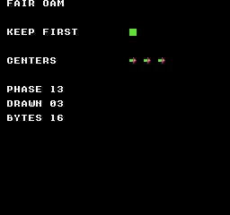
构建命令
New-Item -ItemType Directory -Force .\out | Out-Null
.\kitaqfc\kitaqfc.exe .\kitaq-docs\samples\api-examples\fc\oam_fair.c -I .\kitaqfc\lib -I .\kitaq-docs\samples --nes-chr=.\kitaq-docs\samples\sprite_example.chr -o .\out\oam_fair.nes --no-cache --no-disasm实现与源码
kitaqfc/lib/oam_fair.h:24
Append active pool entries using the configured common tile/attributes. The emitter stops at byte cursor 252, leaving slot 63 unused to avoid cursor wrap. Hide unused trailing OAM entries separately before DMA.
kitaqfc/lib/oam_fair_impl.h:12
void OAM_FairDraw(void) {
__asm {
LDA oam_fair_phase
CLC
ADC #13
AND #63
STA oam_fair_phase
TAX
LDY oam_fair_used
LDA #0
STA oam_fair_drawn
STA oam_fair_scanned
// Visit each pool entry at most once, preserving already-written OAM entries
// and sharing the configured tile/attribute values across emitted sprites.
kq_fair_loop:
LDA oam_fair_active,X
BEQ kq_fair_next
LDA oam_fair_drawn
CMP oam_fair_limit
BCS kq_fair_done
// Reserve the final four-byte slot so advancing this byte cursor cannot wrap to zero.
CPY #252
BCS kq_fair_done
// Convert the 8x8 center to raw OAM coordinates; Y also needs the hardware minus-one bias.
LDA oam_fair_y,X
SEC
SBC #5
STA oam_fair_shadow,Y
LDA oam_fair_tile
STA oam_fair_shadow+1,Y
LDA oam_fair_attr
STA oam_fair_shadow+2,Y
LDA oam_fair_x,X
SEC
SBC #4
STA oam_fair_shadow+3,Y
INY
INY
INY
INY
INC oam_fair_drawn
// Advance cyclically and stop after returning to this frame's starting entry.
kq_fair_next:
TXA
CLC
ADC #1
AND #63
TAX
CPX oam_fair_phase
BNE kq_fair_loop
// Publish the updated byte cursor for later OAM writers and the VBlank DMA path.
kq_fair_done:
STY oam_fair_used
}
}pad.h — NES 手柄输入
pad.h 和 pad.c 按 NES 位序保存控制器 1 的状态。读取时计算上次、按住、新按下和松开掩码，但不生成重复触发。需要可配置的独立按钮重复时，还应链接 input_repeat.c。控制器 2 使用端口 2 的内置函数读取，上次状态由游戏保存。
NES 原始格式为 A=0x01、B=0x02、SELECT=0x04、START=0x08、UP=0x10、DOWN=0x20、LEFT=0x40、RIGHT=0x80。位为 1 表示按下。nes_pad_* 和原始 __pad_* 结果应使用这些值，不要与 input.h 的通用 BTN_* 掩码混用。
首次读取前，将四个 nes_pad1_* 状态字节初始化为 0。之后每个输入周期读取一次。pressed = current & ~previous，released = previous & ~current，二者表示最近一次读取发生的变化。重复状态需另行调用 nes_pad_repeat_step() 更新。
nes_pad_poll
选通 $4016，从控制器 1 的 D0 串行读取八位，更新 nes_pad1_prev、nes_pad1_cur、nes_pad1_pressed 和 nes_pad1_released。只读取一遍，不执行 safe 内置函数的匹配重试。末尾会读取 $4017，但不保存控制器 2 的状态。
语法
void nes_pad_poll(void);返回值
无（void）。
使用条件与限制
NES 原始格式为 A=0x01、B=0x02、SELECT=0x04、START=0x08、UP=0x10、DOWN=0x20、LEFT=0x40、RIGHT=0x80。位为 1 表示按下。nes_pad_* 和原始 __pad_* 结果应使用这些值，不要与 input.h 的通用 BTN_* 掩码混用。
首次读取前，将四个 nes_pad1_* 状态字节初始化为 0。之后每个输入周期读取一次。pressed = current & ~previous，released = previous & ~current，二者表示最近一次读取发生的变化。重复状态需另行调用 nes_pad_repeat_step() 更新。
使用示例
nes_pad_poll(); // Read controller 1 and update its held/pressed/released snapshots.这是一段调用示例。放入完整程序前，请满足所述初始化和缓冲区要求。
预期结果
此程序演示轮询→更新连发→查询状态的顺序，并说明NES查询函数返回相应位，而不是布尔值1。使用nes_pad_repeat_config(3, 1)，按住B达40次更新后松开。FIRST HELD、FIRST TRIGGER、FIRST REPEAT为2，HELD TICKS为40，PULSE COUNT为19，RELEASE BITS为2。初次按下的脉冲之后经过4次更新产生首次连发，随后每2次更新产生一次。FAILED CHECKS应为0。改变按住的时长会改变脉冲计数。
构建命令
New-Item -ItemType Directory -Force .\out | Out-Null
.\kitaqfc\kitaqfc.exe .\kitaqfc\lib\pad.c .\kitaqfc\lib\input_repeat.c .\kitaq-docs\samples\api-examples\fc\pad_repeat.c -I .\kitaqfc\lib -I .\kitaq-docs\samples -o .\out\pad_repeat.nes --mapper=nrom --nes-chr=.\kitaq-docs\samples\font.chr --no-disasm --no-cache实现与源码
kitaqfc/lib/pad.h:16
Latch controller input with a 1-to-0 strobe and shift eight controller-1 bits into held/pressed/released masks. This direct path does not perform repeated reads for DMC interference; the final JOY2 read does not populate player-2 state.
kitaqfc/lib/pad.c:21
void nes_pad_poll(void)
{
unsigned char state;
unsigned char mask;
unsigned char sample;
nes_pad1_prev = nes_pad1_cur;
JOY1 = 1;
JOY1 = 0;
state = 0;
mask = 1;
while (mask != 0)
{
sample = JOY1;
if ((sample & 1) != 0)
{
state = state | mask;
}
mask = mask + mask;
}
nes_pad1_cur = state;
nes_pad1_pressed = (unsigned char)(state & (unsigned char)(state ^ nes_pad1_prev));
nes_pad1_released = (unsigned char)(nes_pad1_prev & (unsigned char)(state ^ nes_pad1_prev));
sample = JOY2;
sample = sample;
}palette.h — NES 调色板
nes_palette_apply_now已找到实现
执行参数指定的操作。模块：NES 调色板。确切的单位、结束标记和返回条件，请查阅下方声明、原始说明及实现。
void nes_palette_apply_now(unsigned char* src32);参数，从左到右： unsigned char* src32。数组和指针需要足够空间，并在处理结束前保持有效。
Replace shadow palette data and upload all 32 bytes immediately. The caller provides a safe PPU access period; this helper does not wait for VBlank.
参数传递示例
void example_nes_palette_apply_now(unsigned char* src32) {
nes_palette_apply_now(src32);
}调用代码需准备对象初始化、缓冲区大小、ROM bank 与设备状态。本函数片段尚未单独执行验证。
需加入的实现： kitaqfc/lib/palette.c:28。还须加入它调用的其他函数的实现文件。
查看当前实现
void nes_palette_apply_now(unsigned char* src32)
{
nes_palette_copy(src32);
nes_ppu_stream_write(0x3F00, nes_palette_shadow, 32);
}声明或标识符来源：kitaqfc/lib/palette.h:11
nes_palette_apply_shadow_now已找到实现
执行参数指定的操作。模块：NES 调色板。确切的单位、结束标记和返回条件，请查阅下方声明、原始说明及实现。
void nes_palette_apply_shadow_now(void);Upload the current palette shadow directly, with timing controlled by the caller.
参数传递示例
nes_palette_apply_shadow_now();调用代码需准备对象初始化、缓冲区大小、ROM bank 与设备状态。本函数片段尚未单独执行验证。
需加入的实现： kitaqfc/lib/palette.c:35。还须加入它调用的其他函数的实现文件。
查看当前实现
void nes_palette_apply_shadow_now(void)
{
nes_ppu_stream_write(0x3F00, nes_palette_shadow, 32);
}声明或标识符来源：kitaqfc/lib/palette.h:13
nes_palette_copy已找到实现
复制数据。模块：NES 调色板。确切的单位、结束标记和返回条件，请查阅下方声明、原始说明及实现。
void nes_palette_copy(unsigned char* src32);参数，从左到右： unsigned char* src32。数组和指针需要足够空间，并在处理结束前保持有效。
Copy exactly 32 palette bytes to the fixed shadow buffer without writing the PPU.
调用示例：需要外围代码的片段
void nes_palette_apply_now(unsigned char* src32)
{
nes_palette_copy(src32);
nes_ppu_stream_write(0x3F00, nes_palette_shadow, 32);
}
// Upload the current palette shadow directly, with timing controlled by the caller.来源：kitaqfc/lib/palette.c:30
需加入的实现： kitaqfc/lib/palette.c:19。还须加入它调用的其他函数的实现文件。
查看当前实现
void nes_palette_copy(unsigned char* src32)
{
__memcpy(nes_palette_shadow, src32, 32);
}声明或标识符来源：kitaqfc/lib/palette.h:8
nes_palette_queue_all已找到实现
执行参数指定的操作。模块：NES 调色板。确切的单位、结束标记和返回条件，请查阅下方声明、原始说明及实现。
unsigned char nes_palette_queue_all(unsigned char* src32);参数，从左到右： unsigned char* src32。数组和指针需要足够空间，并在处理结束前保持有效。
返回类型： unsigned char。值的含义及成功、失败返回值，以原始说明和实现中的返回条件为准。
Update the shadow and copy all colors into the runtime queue. A queue failure leaves the new shadow contents in place. Return one if the runtime queue accepted the copied payload, zero if it was full. Admission does not mean the NMI consumer has already updated the PPU.
参数传递示例
unsigned char example_nes_palette_queue_all(unsigned char* src32) {
return nes_palette_queue_all(src32);
}调用代码需准备对象初始化、缓冲区大小、ROM bank 与设备状态。本函数片段尚未单独执行验证。
需加入的实现： kitaqfc/lib/palette.c:42。还须加入它调用的其他函数的实现文件。
查看当前实现
unsigned char nes_palette_queue_all(unsigned char* src32)
{
nes_palette_copy(src32);
return nes_vram_queue_try_write(0x3F00, nes_palette_shadow, 32);
}声明或标识符来源：kitaqfc/lib/palette.h:18
nes_palette_queue_bg4已找到实现
执行参数指定的操作。模块：NES 调色板。确切的单位、结束标记和返回条件，请查阅下方声明、原始说明及实现。
unsigned char nes_palette_queue_bg4(unsigned char pal_index, unsigned char* src4);参数，从左到右： unsigned char pal_index, unsigned char* src4。数组和指针需要足够空间，并在处理结束前保持有效。
返回类型： unsigned char。值的含义及成功、失败返回值，以原始说明和实现中的返回条件为准。
Update and queue four background palette bytes. pal_index must be 0..3; there is no range check before writing the shadow.
参数传递示例
unsigned char example_nes_palette_queue_bg4(unsigned char pal_index, unsigned char* src4) {
return nes_palette_queue_bg4(pal_index, src4);
}调用代码需准备对象初始化、缓冲区大小、ROM bank 与设备状态。本函数片段尚未单独执行验证。
需加入的实现： kitaqfc/lib/palette.c:50。还须加入它调用的其他函数的实现文件。
查看当前实现
unsigned char nes_palette_queue_bg4(unsigned char pal_index, unsigned char* src4)
{
unsigned char dst;
dst = pal_index + pal_index;
dst = dst + dst;
__memcpy(nes_palette_shadow + dst, src4, 4);
return nes_vram_queue_try_write((unsigned short)(0x3F00 + dst), nes_palette_shadow + dst, 4);
}声明或标识符来源：kitaqfc/lib/palette.h:21
nes_palette_queue_sprite4已找到实现
执行参数指定的操作。模块：NES 调色板。确切的单位、结束标记和返回条件，请查阅下方声明、原始说明及实现。
unsigned char nes_palette_queue_sprite4(unsigned char pal_index, unsigned char* src4);参数，从左到右： unsigned char pal_index, unsigned char* src4。数组和指针需要足够空间，并在处理结束前保持有效。
返回类型： unsigned char。值的含义及成功、失败返回值，以原始说明和实现中的返回条件为准。
Update and queue four sprite palette bytes at the 0x3F10 region. The caller supplies pal_index 0..3; NES palette mirroring still applies.
参数传递示例
unsigned char example_nes_palette_queue_sprite4(unsigned char pal_index, unsigned char* src4) {
return nes_palette_queue_sprite4(pal_index, src4);
}调用代码需准备对象初始化、缓冲区大小、ROM bank 与设备状态。本函数片段尚未单独执行验证。
需加入的实现： kitaqfc/lib/palette.c:61。还须加入它调用的其他函数的实现文件。
查看当前实现
unsigned char nes_palette_queue_sprite4(unsigned char pal_index, unsigned char* src4)
{
unsigned char dst;
dst = pal_index + pal_index;
dst = dst + dst;
__memcpy(nes_palette_shadow + (unsigned char)(0x10 + dst), src4, 4);
return nes_vram_queue_try_write((unsigned short)(0x3F10 + dst), nes_palette_shadow + (unsigned char)(0x10 + dst), 4);
}声明或标识符来源：kitaqfc/lib/palette.h:24
ppu.h / ppu.c
仅引入或编译一次 ppu.c，不要同时使用 runtime.c。调用其高、低地址字节函数前，请用 __ppu_read_status() 复位共享锁存器。ppu.h 没有声明这些函数；其中四个屏幕、调色板及名称表函数的声明在此发行包中没有实现。这里展示的函数由 ppu.c 提供，仅包含 ppu.h 无法使用。
nes_ppu_fill
用 hi 和 lo 设置地址，再将 value 向 PPUDATA 写入 count 次。此 ppu.c 函数使用八位计数立即填充，调用方须先复位锁存器。不会按行或矩形边界裁剪。
语法
void nes_ppu_fill(unsigned char hi, unsigned char lo, unsigned char value, unsigned char count);参数
hi / lohi和lo是 PPU 地址的高、低字节，例如0x23, 0x42表示0x2342。它们是地址字节，不是图块坐标。适用正常的 PPU 地址掩码与镜像规则。value重复写入0至255的单字节。显示含义取决于目标是图块索引、像素位平面还是其他字节结构。
count无符号八位字节数，范围为
0..255。0 只设置地址，不写入数据。即使为 0，函数也不会复位共享锁存器，请在调用前准备好锁存器。
返回值
无（void）。
使用条件与限制
仅引入或编译一次 ppu.c，不要同时使用 runtime.c。调用其高、低地址字节函数前，请用 __ppu_read_status() 复位共享锁存器。ppu.h 没有声明这些函数；其中四个屏幕、调色板及名称表函数的声明在此发行包中没有实现。这里展示的函数由 ppu.c 提供，仅包含 ppu.h 无法使用。
直接访问 PPU 时，必须关闭渲染，或确保整个操作处于安全的 VBlank 时间内。这些函数不等待、不排队、不屏蔽 NMI，也不恢复滚动。调用期间应防止中断改变共享锁存器或地址。PPUCTRL 第 2 位决定每个数据字节使目标地址增加 1 还是 32。镜像和地址回绕由 PPU 处理；CHR-ROM 不可写。访问结束后、开始渲染前，请设置所需的滚动状态。
使用示例
__ppu_read_status();nes_ppu_fill(0x21,0x80,1,255);这是一段调用示例。放入完整程序前，请满足所述初始化和缓冲区要求。
预期结果
独立的高、低地址示例用于学习显式准备锁存器和八位传输计数。蓝色与绿色区域各使用 255 字节，因此最后一个 8×8 单元 (248,72) 和 (248,152) 保持黑色。红色地址设置及零长度标记的位置和形状与运行时示例相同。FAILED CHECKS 为 0；此程序不测试运行时等待函数。
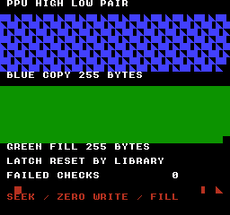
构建命令
New-Item -ItemType Directory -Force .\out | Out-Null
.\kitaqfc\kitaqfc.exe .\kitaq-docs\samples\api-examples\fc\ppu_address_pair.c -I .\kitaqfc\lib -I .\kitaq-docs\samples -o .\out\ppu_address_pair.nes --mapper=nrom --nes-chr=.\kitaq-docs\samples\api-examples\fc\vram_shapes.chr --no-cache --no-disasm实现与源码
kitaqfc/lib/ppu.c:25
Set the address and issue count identical PPUDATA writes without waiting for VBlank.
kitaqfc/lib/ppu.c:25
void nes_ppu_fill(unsigned char hi, unsigned char lo, unsigned char value, unsigned char count)
{
unsigned char i;
nes_ppu_seek(hi, lo);
for (i = 0; i != count; ++i)
PPUDATA = value;
}nes_ppu_write_bytes
用 hi 和 lo 设置地址后，将源数据中连续的 count 字节直接写入 PPUDATA。此 ppu.c 函数接受八位计数，地址锁存器由调用方复位。不使用队列，返回前完成传输。
语法
void nes_ppu_write_bytes(unsigned char hi, unsigned char lo, const unsigned char* src, unsigned char count);参数
hi / lohi和lo是 PPU 地址的高、低字节，例如0x23, 0x42表示0x2342。它们是地址字节，不是图块坐标。适用正常的 PPU 地址掩码与镜像规则。srcCPU 指针，必须能读取至少指定数量的字节。同步传输返回前，请保持源数据映射和内容稳定。函数不会切换存储体、在队列中保留指针或检查源长度；计数为 0 时不会解引用指针。
count无符号八位字节数，范围为
0..255。0 只设置地址，不写入数据。即使为 0，函数也不会复位共享锁存器，请在调用前准备好锁存器。
返回值
无（void）。
使用条件与限制
仅引入或编译一次 ppu.c，不要同时使用 runtime.c。调用其高、低地址字节函数前，请用 __ppu_read_status() 复位共享锁存器。ppu.h 没有声明这些函数；其中四个屏幕、调色板及名称表函数的声明在此发行包中没有实现。这里展示的函数由 ppu.c 提供，仅包含 ppu.h 无法使用。
直接访问 PPU 时，必须关闭渲染，或确保整个操作处于安全的 VBlank 时间内。这些函数不等待、不排队、不屏蔽 NMI，也不恢复滚动。调用期间应防止中断改变共享锁存器或地址。PPUCTRL 第 2 位决定每个数据字节使目标地址增加 1 还是 32。镜像和地址回绕由 PPU 处理；CHR-ROM 不可写。访问结束后、开始渲染前，请设置所需的滚动状态。
使用示例
__ppu_read_status();nes_ppu_write_bytes(0x20,0x40,source_bytes,255);
source_bytes[0]=3; // The completed transfer retains tile 1.这是一段调用示例。放入完整程序前，请满足所述初始化和缓冲区要求。
预期结果
独立的高、低地址示例用于学习显式准备锁存器和八位传输计数。蓝色与绿色区域各使用 255 字节，因此最后一个 8×8 单元 (248,72) 和 (248,152) 保持黑色。红色地址设置及零长度标记的位置和形状与运行时示例相同。FAILED CHECKS 为 0；此程序不测试运行时等待函数。
构建命令
New-Item -ItemType Directory -Force .\out | Out-Null
.\kitaqfc\kitaqfc.exe .\kitaq-docs\samples\api-examples\fc\ppu_address_pair.c -I .\kitaqfc\lib -I .\kitaq-docs\samples -o .\out\ppu_address_pair.nes --mapper=nrom --nes-chr=.\kitaq-docs\samples\api-examples\fc\vram_shapes.chr --no-cache --no-disasm实现与源码
kitaqfc/lib/ppu.c:16
Set the address and write count bytes directly through PPUDATA. The current PPUCTRL increment mode determines how the destination advances. count is 0..255; zero still changes PPU address/latch state. No bank switch or payload copy is performed.
kitaqfc/lib/ppu.c:16
void nes_ppu_write_bytes(unsigned char hi, unsigned char lo, const unsigned char* src, unsigned char count)
{
unsigned char i;
nes_ppu_seek(hi, lo);
for (i = 0; i != count; ++i)
PPUDATA = src[i];
}nes_ppu_clear_nt
此发行包没有实现 nes_ppu_clear_nt(nt_base, tile, attr)。可运行示例分两步清空名称表 0：__nametable_rect_nt(0,0,0,32,30,0) 写入 960 个图块单元，__vram_fill(0x23C0,0,64) 清空 64 个打包属性字节。两步都在关闭渲染、地址增量为 1 时进行。逻辑名称表可能因卡带镜像而共享存储空间。
语法
void nes_ppu_clear_nt(unsigned short nt_base, unsigned char tile, unsigned char attr);参数
nt_base / tile / attr原型将
nt_base声明为无符号 16 位，tile和attr声明为无符号八位。没有函数体实现这些参数的地址选择、填充或校验。替代方案明确选择逻辑名称表 0，并分别提供图块和打包属性值。
返回值
声明的返回类型为 void。没有可链接的实现，因此此名称没有可执行的返回行为。
使用条件与限制
示例展示的是已经实现的替代方案，不是成功调用这些声明。验证包含每个缺失名称触发未解析符号的预期构建结果，以及对替代方案的独立模拟器检查。若要调用声明中的名称，请自行提供匹配实现；仅包含另一个头文件不会添加函数体。
使用示例
__nametable_rect_nt(0,0,0,32,30,0); // All 960 tile cells of nametable zero.
__vram_fill(0x23C0,0,64); // Its 64 packed attribute bytes are separate.
// Nametable reads are buffered: discard one read, then inspect all 1024 bytes.
__ppu_addr(0x2000);discarded_read=sample_ppudata;
for(i=0;i<1024;i++)if(sample_ppudata!=0)failures=1;这是一段调用示例。放入完整程序前，请满足所述初始化和缓冲区要求。
预期结果
可运行替代方案先关闭渲染，设置调色板并清空图块和属性，再绘制此测试图像。蓝色实心图块、左半竖条与三角形的重复图案从 (0,16) 开始，绿色实心区域从 (0,96) 开始。每块区域为 256×64 像素，但只传输 255 个图块字节，因此最后的 8×8 单元 (248,72) 和 (248,152) 保持黑色。y=208 处的红色图形分别是 x=16 的 8×8 正方形、x=224 的左半 4×8 竖条、x=240 的八行三角形。FAILED CHECKS 为 0。独立状态测试还确认两个控制寄存器、32 字节调色板传输，以及名称表全部 1,024 字节的清空。直接调用四个声明时，预期结果是链接失败。
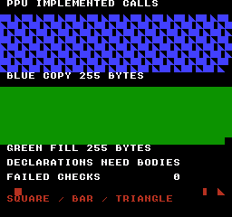
构建命令
New-Item -ItemType Directory -Force .\out | Out-Null
.\kitaqfc\kitaqfc.exe .\kitaq-docs\samples\api-examples\fc\ppu_implemented.c -I .\kitaqfc\lib -I .\kitaq-docs\samples -o .\out\ppu_implemented.nes --mapper=nrom --nes-chr=.\kitaq-docs\samples\api-examples\fc\vram_shapes.chr --no-cache --no-disasm实现与源码
kitaqfc/lib/ppu.h:9
nes_ppu_load_palette
nes_ppu_load_palette(pal32) 只有声明，没有对应的调色板传输实现。可运行示例在关闭渲染、地址增量为 1 时，使用 __palette_bg_load 传输 16 个背景字节，使用 __palette_sp_load 传输 16 个精灵字节。硬件调色板地址别名仍然有效，写入精灵调色板也可能改变背景颜色项。
语法
void nes_ppu_load_palette(unsigned char* pal32);参数
pal32pal32声明为无符号字节指针，名称并不代表已经实现了 32 字节传输。使用可运行替代方案时，为每个调色板内置函数提供 16 个可读字节，并在返回前保持源存储体映射。
返回值
声明的返回类型为 void。没有可链接的实现，因此此名称没有可执行的返回行为。
使用条件与限制
示例展示的是已经实现的替代方案，不是成功调用这些声明。验证包含每个缺失名称触发未解析符号的预期构建结果，以及对替代方案的独立模拟器检查。若要调用声明中的名称，请自行提供匹配实现；仅包含另一个头文件不会添加函数体。
使用示例
__palette_bg_load(stream_palette); // Sixteen background palette bytes.
__palette_sp_load(stream_palette); // Sixteen sprite palette bytes.
// Palette reads are immediate; both halves use the same original sample palette.
__ppu_addr(0x3F00);
for(i=0;i<32;i++)if(sample_ppudata!=stream_palette[(u8)(i&15)])failures=1;这是一段调用示例。放入完整程序前，请满足所述初始化和缓冲区要求。
预期结果
可运行替代方案先关闭渲染，设置调色板并清空图块和属性，再绘制此测试图像。蓝色实心图块、左半竖条与三角形的重复图案从 (0,16) 开始，绿色实心区域从 (0,96) 开始。每块区域为 256×64 像素，但只传输 255 个图块字节，因此最后的 8×8 单元 (248,72) 和 (248,152) 保持黑色。y=208 处的红色图形分别是 x=16 的 8×8 正方形、x=224 的左半 4×8 竖条、x=240 的八行三角形。FAILED CHECKS 为 0。独立状态测试还确认两个控制寄存器、32 字节调色板传输，以及名称表全部 1,024 字节的清空。直接调用四个声明时，预期结果是链接失败。
构建命令
New-Item -ItemType Directory -Force .\out | Out-Null
.\kitaqfc\kitaqfc.exe .\kitaq-docs\samples\api-examples\fc\ppu_implemented.c -I .\kitaqfc\lib -I .\kitaq-docs\samples -o .\out\ppu_implemented.nes --mapper=nrom --nes-chr=.\kitaq-docs\samples\api-examples\fc\vram_shapes.chr --no-cache --no-disasm实现与源码
kitaqfc/lib/ppu.h:8
nes_ppu_screen_off
nes_ppu_screen_off 在 ppu.h 中有声明，但此发行包没有函数体，直接调用无法链接。可运行示例使用 __ppu_off() 停止渲染，将 PPUMASK 及其软件保存值置零。它不会禁用 NMI；示例为批量准备画面而另外向 PPUCTRL 写入零。
语法
void nes_ppu_screen_off(void);返回值
声明的返回类型为 void。没有可链接的实现，因此此名称没有可执行的返回行为。
使用条件与限制
示例展示的是已经实现的替代方案，不是成功调用这些声明。验证包含每个缺失名称触发未解析符号的预期构建结果，以及对替代方案的独立模拟器检查。若要调用声明中的名称，请自行提供匹配实现；仅包含另一个头文件不会添加函数体。
使用示例
// Use the implemented intrinsic; nes_ppu_screen_off has no function body.
__ppu_off();__ppu_ctrl_set(0); // Also disable NMI for this bulk preparation.这是一段调用示例。放入完整程序前，请满足所述初始化和缓冲区要求。
预期结果
可运行替代方案先关闭渲染，设置调色板并清空图块和属性，再绘制此测试图像。蓝色实心图块、左半竖条与三角形的重复图案从 (0,16) 开始，绿色实心区域从 (0,96) 开始。每块区域为 256×64 像素，但只传输 255 个图块字节，因此最后的 8×8 单元 (248,72) 和 (248,152) 保持黑色。y=208 处的红色图形分别是 x=16 的 8×8 正方形、x=224 的左半 4×8 竖条、x=240 的八行三角形。FAILED CHECKS 为 0。独立状态测试还确认两个控制寄存器、32 字节调色板传输，以及名称表全部 1,024 字节的清空。直接调用四个声明时，预期结果是链接失败。
构建命令
New-Item -ItemType Directory -Force .\out | Out-Null
.\kitaqfc\kitaqfc.exe .\kitaq-docs\samples\api-examples\fc\ppu_implemented.c -I .\kitaqfc\lib -I .\kitaq-docs\samples -o .\out\ppu_implemented.nes --mapper=nrom --nes-chr=.\kitaq-docs\samples\api-examples\fc\vram_shapes.chr --no-cache --no-disasm实现与源码
kitaqfc/lib/ppu.h:6
Declarations only: the published library/compiler contains no definitions for these four names. Supply matching application implementations, or use the implemented intrinsics/runtime APIs instead.
nes_ppu_screen_on
nes_ppu_screen_on(ctrl, mask) 只是没有实现的声明，调用此名称无法启用画面。可运行示例先设置滚动，再调用 __ppu_ctrl_set(0x80) 和 __ppu_mask_set(0x0A)。这样会启用 NMI 与背景渲染，包括最左侧八个像素，但不启用精灵渲染。请根据游戏选择寄存器值。
语法
void nes_ppu_screen_on(unsigned char ctrl, unsigned char mask);参数
ctrl / mask声明中的
ctrl和mask为无符号八位类型，没有函数体定义其运行时行为。可运行替代方案通过两个内置函数写入所需的 PPUCTRL 和 PPUMASK 值。
返回值
声明的返回类型为 void。没有可链接的实现，因此此名称没有可执行的返回行为。
使用条件与限制
示例展示的是已经实现的替代方案，不是成功调用这些声明。验证包含每个缺失名称触发未解析符号的预期构建结果，以及对替代方案的独立模拟器检查。若要调用声明中的名称，请自行提供匹配实现；仅包含另一个头文件不会添加函数体。
使用示例
__scroll_set(0,0);__ppu_ctrl_set(0x80);__ppu_mask_set(0x0A);
// NMI and background rendering are now enabled, with left-edge background visible.这是一段调用示例。放入完整程序前，请满足所述初始化和缓冲区要求。
预期结果
可运行替代方案先关闭渲染，设置调色板并清空图块和属性，再绘制此测试图像。蓝色实心图块、左半竖条与三角形的重复图案从 (0,16) 开始，绿色实心区域从 (0,96) 开始。每块区域为 256×64 像素，但只传输 255 个图块字节，因此最后的 8×8 单元 (248,72) 和 (248,152) 保持黑色。y=208 处的红色图形分别是 x=16 的 8×8 正方形、x=224 的左半 4×8 竖条、x=240 的八行三角形。FAILED CHECKS 为 0。独立状态测试还确认两个控制寄存器、32 字节调色板传输，以及名称表全部 1,024 字节的清空。直接调用四个声明时，预期结果是链接失败。
构建命令
New-Item -ItemType Directory -Force .\out | Out-Null
.\kitaqfc\kitaqfc.exe .\kitaq-docs\samples\api-examples\fc\ppu_implemented.c -I .\kitaqfc\lib -I .\kitaq-docs\samples -o .\out\ppu_implemented.nes --mapper=nrom --nes-chr=.\kitaq-docs\samples\api-examples\fc\vram_shapes.chr --no-cache --no-disasm实现与源码
kitaqfc/lib/ppu.h:7
runtime.h — NMI、OAM 与 PPU 传输的 C 辅助函数
使用 runtime.h 中的声明，并仅引入或编译一次 runtime.c。除了此队列，该文件还提供 __nes_nmi、运行时帧计数器、直接 PPU 操作函数以及第 02 页的 OAM 存储。请与程序的 NMI 处理协调；仅声明函数并不会链接实现。
这是 runtime.c 在 CPU 地址 0x0300–0x03BF 使用的独立 192 字节队列。数据记录占 3+len 字节，填充记录占四字节。nes_vram_queue_used 表示编码后的记录字节数，不是待执行的 PPU 写入次数或剩余 VRAM。__vramq_* 内置队列使用不同格式，这些函数不会清空、查询或执行它。
请把构建批次和执行批次分为两个阶段；这里没有锁或双缓冲。要确保准备过程稳定，应在追加记录时禁用 NMI，然后在关闭渲染时执行，或准备好能在 VBlank 内完成的批次后再启用 NMI。runtime.c 会从 __nes_nmi 自动执行非空队列，无须提交调用。执行过程不设时间预算，不拆分任务，也不恢复滚动状态。队列能装下并不意味着 VBlank 时间足够。
nes_ppu_seek
设置后续 PPUDATA 访问使用的 PPU 地址。runtime.c 的 nes_ppu_seek(ppu_addr) 先读取 PPUSTATUS，复位共享写入锁存器，再写入地址高、低字节。ppu.c 另行提供 nes_ppu_seek(hi, lo)，不会复位锁存器。两者同名但参数与行为不同，请选择一种实现，不要同时链接。
语法
void nes_ppu_seek(unsigned short ppu_addr);
// Separate implementation in ppu.c:
void nes_ppu_seek(unsigned char hi, unsigned char lo);参数
ppu_addrPPU字节地址（
0x0000–0x3FFF），不是CPU指针。目标必须可写；改写图案需要CHR RAM，不能写入CHR ROM。PPU映射与镜像规则照常适用。连续复制和填充应将PPUCTRL地址增量设为1。在安全的PPU写入时段执行，然后恢复所需的滚动状态；执行器会写入PPUADDR和PPUDATA，不会恢复滚动设置。hi / lohi和lo是 PPU 地址的高、低字节，例如0x23, 0x42表示0x2342。它们是地址字节，不是图块坐标。适用正常的 PPU 地址掩码与镜像规则。
返回值
无（void）。
使用条件与限制
使用 runtime.h 中的声明，并仅引入或编译一次 runtime.c。除了此队列，该文件还提供 __nes_nmi、运行时帧计数器、直接 PPU 操作函数以及第 02 页的 OAM 存储。请与程序的 NMI 处理协调；仅声明函数并不会链接实现。
仅引入或编译一次 ppu.c，不要同时使用 runtime.c。调用其高、低地址字节函数前，请用 __ppu_read_status() 复位共享锁存器。ppu.h 没有声明这些函数；其中四个屏幕、调色板及名称表函数的声明在此发行包中没有实现。这里展示的函数由 ppu.c 提供，仅包含 ppu.h 无法使用。
直接访问 PPU 时，必须关闭渲染，或确保整个操作处于安全的 VBlank 时间内。这些函数不等待、不排队、不屏蔽 NMI，也不恢复滚动。调用期间应防止中断改变共享锁存器或地址。PPUCTRL 第 2 位决定每个数据字节使目标地址增加 1 还是 32。镜像和地址回绕由 PPU 处理；CHR-ROM 不可写。访问结束后、开始渲染前，请设置所需的滚动状态。
使用示例
PPUADDR=0x21; // Deliberately leave the shared address latch half-written.
nes_ppu_seek(0x2342); // This runtime function resets the latch itself.
PPUDATA=1; // Red 8x8 marker at pixel (16,208).这是一段调用示例。放入完整程序前，请满足所述初始化和缓冲区要求。
预期结果
运行时示例用于学习直接传输和两种等待方式。(0,16) 显示蓝色实心图块、左半竖条与三角形的重复图案；(0,96) 显示绿色实心区域。每块区域为 256×64 像素，来自 256 个图块字节。修改源数据后，第一个蓝色图块仍为实心。y=208 的 x=16、224、240 处分别用红色 8×8 正方形、左半 4×8 竖条和八行三角形表示地址设置、零长度写入和零长度填充。两项等待指示均为 1，FAILED CHECKS 为 0。
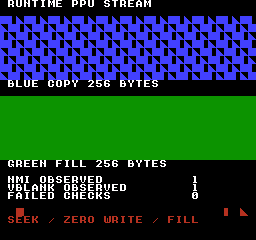
构建命令
New-Item -ItemType Directory -Force .\out | Out-Null
.\kitaqfc\kitaqfc.exe .\kitaq-docs\samples\api-examples\fc\runtime_ppu.c -I .\kitaqfc\lib -I .\kitaq-docs\samples -o .\out\runtime_ppu.nes --mapper=nrom --nes-chr=.\kitaq-docs\samples\api-examples\fc\vram_shapes.chr --no-cache --no-disasm使用示例
__ppu_read_status(); // Reset the shared latch before the high/low pair.
nes_ppu_seek(0x23,0x42);
PPUDATA=1; // Red 8x8 marker at pixel (16,208).这是一段调用示例。放入完整程序前，请满足所述初始化和缓冲区要求。
预期结果
独立的高、低地址示例用于学习显式准备锁存器和八位传输计数。蓝色与绿色区域各使用 255 字节，因此最后一个 8×8 单元 (248,72) 和 (248,152) 保持黑色。红色地址设置及零长度标记的位置和形状与运行时示例相同。FAILED CHECKS 为 0；此程序不测试运行时等待函数。
构建命令
New-Item -ItemType Directory -Force .\out | Out-Null
.\kitaqfc\kitaqfc.exe .\kitaq-docs\samples\api-examples\fc\ppu_address_pair.c -I .\kitaqfc\lib -I .\kitaq-docs\samples -o .\out\ppu_address_pair.nes --mapper=nrom --nes-chr=.\kitaq-docs\samples\api-examples\fc\vram_shapes.chr --no-cache --no-disasm实现与源码
kitaqfc/lib/runtime.h:28
Reset the PPU address latch with a status read, then write the high/low address bytes.
kitaqfc/lib/runtime.c:207
void nes_ppu_seek(unsigned short ppu_addr)
{
unsigned char latch;
latch = PPUSTATUS;
PPUADDR = (unsigned char)(ppu_addr >> 8);
PPUADDR = (unsigned char)ppu_addr;
latch = latch;
}kitaqfc/lib/ppu.c:7
void nes_ppu_seek(unsigned char hi, unsigned char lo)
{
PPUADDR = hi;
PPUADDR = lo;
}nes_ppu_stream_fill
设置 ppu_addr 后，将同一个字节值 value 向 PPUDATA 写入 len 次。这是返回前完成的直接填充操作，不会解释图块尺寸、属性或矩形边界。
语法
void nes_ppu_stream_fill(unsigned short ppu_addr, unsigned char value, unsigned short len);参数
ppu_addrPPU字节地址（
0x0000–0x3FFF），不是CPU指针。目标必须可写；改写图案需要CHR RAM，不能写入CHR ROM。PPU映射与镜像规则照常适用。连续复制和填充应将PPUCTRL地址增量设为1。在安全的PPU写入时段执行，然后恢复所需的滚动状态；执行器会写入PPUADDR和PPUDATA，不会恢复滚动设置。value重复写入0至255的单字节。显示含义取决于目标是图块索引、像素位平面还是其他字节结构。
len字节数，范围为
0..65535，使用无符号 16 位值。即使为 0，也会设置 PPU 地址并复位锁存器，但不写入 PPUDATA。没有目标容量检查或分段传输；较大的计数可能绕回 PPU 地址空间。
返回值
无（void）。
使用条件与限制
使用 runtime.h 中的声明，并仅引入或编译一次 runtime.c。除了此队列，该文件还提供 __nes_nmi、运行时帧计数器、直接 PPU 操作函数以及第 02 页的 OAM 存储。请与程序的 NMI 处理协调；仅声明函数并不会链接实现。
直接访问 PPU 时，必须关闭渲染，或确保整个操作处于安全的 VBlank 时间内。这些函数不等待、不排队、不屏蔽 NMI，也不恢复滚动。调用期间应防止中断改变共享锁存器或地址。PPUCTRL 第 2 位决定每个数据字节使目标地址增加 1 还是 32。镜像和地址回绕由 PPU 处理；CHR-ROM 不可写。访问结束后、开始渲染前，请设置所需的滚动状态。
使用示例
nes_ppu_stream_fill(0x2180,1,256); // Eight complete rows of solid green tiles.这是一段调用示例。放入完整程序前，请满足所述初始化和缓冲区要求。
预期结果
运行时示例用于学习直接传输和两种等待方式。(0,16) 显示蓝色实心图块、左半竖条与三角形的重复图案；(0,96) 显示绿色实心区域。每块区域为 256×64 像素，来自 256 个图块字节。修改源数据后，第一个蓝色图块仍为实心。y=208 的 x=16、224、240 处分别用红色 8×8 正方形、左半 4×8 竖条和八行三角形表示地址设置、零长度写入和零长度填充。两项等待指示均为 1，FAILED CHECKS 为 0。
构建命令
New-Item -ItemType Directory -Force .\out | Out-Null
.\kitaqfc\kitaqfc.exe .\kitaq-docs\samples\api-examples\fc\runtime_ppu.c -I .\kitaqfc\lib -I .\kitaq-docs\samples -o .\out\runtime_ppu.nes --mapper=nrom --nes-chr=.\kitaq-docs\samples\api-examples\fc\vram_shapes.chr --no-cache --no-disasm实现与源码
kitaqfc/lib/runtime.h:34
Write value repeatedly through PPUDATA, using the current PPU address increment mode. This routine does not wait for VBlank or disable rendering.
kitaqfc/lib/runtime.c:232
void nes_ppu_stream_fill(unsigned short ppu_addr, unsigned char value, unsigned short len)
{
nes_ppu_seek(ppu_addr);
while (len != 0)
{
PPUDATA = value;
len = len - 1;
}
}nes_ppu_stream_write
从 ppu_addr 开始，将源数据中连续的 len 字节直接写入 PPUDATA。函数先设置一次地址，每次写入后推进内部源指针。返回前传输已经完成，之后修改源数据不会改变 VRAM；调用方的指针变量也不会改变。
语法
void nes_ppu_stream_write(unsigned short ppu_addr, unsigned char* src, unsigned short len);参数
ppu_addrPPU字节地址（
0x0000–0x3FFF），不是CPU指针。目标必须可写；改写图案需要CHR RAM，不能写入CHR ROM。PPU映射与镜像规则照常适用。连续复制和填充应将PPUCTRL地址增量设为1。在安全的PPU写入时段执行，然后恢复所需的滚动状态；执行器会写入PPUADDR和PPUDATA，不会恢复滚动设置。srcCPU 指针，必须能读取至少指定数量的字节。同步传输返回前，请保持源数据映射和内容稳定。函数不会切换存储体、在队列中保留指针或检查源长度；计数为 0 时不会解引用指针。
len字节数，范围为
0..65535，使用无符号 16 位值。即使为 0，也会设置 PPU 地址并复位锁存器，但不写入 PPUDATA。没有目标容量检查或分段传输；较大的计数可能绕回 PPU 地址空间。
返回值
无（void）。
使用条件与限制
使用 runtime.h 中的声明，并仅引入或编译一次 runtime.c。除了此队列，该文件还提供 __nes_nmi、运行时帧计数器、直接 PPU 操作函数以及第 02 页的 OAM 存储。请与程序的 NMI 处理协调；仅声明函数并不会链接实现。
直接访问 PPU 时，必须关闭渲染，或确保整个操作处于安全的 VBlank 时间内。这些函数不等待、不排队、不屏蔽 NMI，也不恢复滚动。调用期间应防止中断改变共享锁存器或地址。PPUCTRL 第 2 位决定每个数据字节使目标地址增加 1 还是 32。镜像和地址回绕由 PPU 处理；CHR-ROM 不可写。访问结束后、开始渲染前，请设置所需的滚动状态。
使用示例
// Rendering/NMI are off; PPUCTRL increment is 1. Transfer 256 bytes now.
nes_ppu_stream_write(0x2040,source_bytes,256);
source_bytes[0]=3; // VRAM already holds tile 1 at the first blue cell.这是一段调用示例。放入完整程序前，请满足所述初始化和缓冲区要求。
预期结果
运行时示例用于学习直接传输和两种等待方式。(0,16) 显示蓝色实心图块、左半竖条与三角形的重复图案；(0,96) 显示绿色实心区域。每块区域为 256×64 像素，来自 256 个图块字节。修改源数据后，第一个蓝色图块仍为实心。y=208 的 x=16、224、240 处分别用红色 8×8 正方形、左半 4×8 竖条和八行三角形表示地址设置、零长度写入和零长度填充。两项等待指示均为 1，FAILED CHECKS 为 0。
构建命令
New-Item -ItemType Directory -Force .\out | Out-Null
.\kitaqfc\kitaqfc.exe .\kitaq-docs\samples\api-examples\fc\runtime_ppu.c -I .\kitaqfc\lib -I .\kitaq-docs\samples -o .\out\runtime_ppu.nes --mapper=nrom --nes-chr=.\kitaq-docs\samples\api-examples\fc\vram_shapes.chr --no-cache --no-disasm实现与源码
kitaqfc/lib/runtime.h:31
Write len source bytes directly through PPUDATA. Call only during an appropriate PPU access period; the address increment mode comes from the current PPUCTRL.
kitaqfc/lib/runtime.c:219
void nes_ppu_stream_write(unsigned short ppu_addr, unsigned char* src, unsigned short len)
{
nes_ppu_seek(ppu_addr);
while (len != 0)
{
PPUDATA = *src;
src = src + 1;
len = len - 1;
}
}nes_vblank_wait
轮询 PPUSTATUS 的第 7 位，先消耗已置位的通知，再等待新的 VBlank 通知。NMI 禁用时也能工作，但不会执行队列或更新运行时 NMI 计数器。每次读取状态都会清除 VBlank 标志，并复位滚动与地址共用的写入锁存器。状态读取可能影响 NMI 时序，请将此轮询方式与 NMI 驱动的调度分开使用。它没有超时，也不传输数据或恢复滚动。
语法
void nes_vblank_wait(void);返回值
无（void）。
使用条件与限制
使用 runtime.h 中的声明，并仅引入或编译一次 runtime.c。除了此队列，该文件还提供 __nes_nmi、运行时帧计数器、直接 PPU 操作函数以及第 02 页的 OAM 存储。请与程序的 NMI 处理协调；仅声明函数并不会链接实现。
使用示例
// With NMI disabled, poll a new PPU VBlank flag. No queued work is flushed.
nes_vblank_wait();blank_seen=1;
if((PPUSTATUS&0x80)!=0)failures++; // The wait's status read cleared the flag.这是一段调用示例。放入完整程序前，请满足所述初始化和缓冲区要求。
预期结果
运行时示例用于学习直接传输和两种等待方式。(0,16) 显示蓝色实心图块、左半竖条与三角形的重复图案；(0,96) 显示绿色实心区域。每块区域为 256×64 像素，来自 256 个图块字节。修改源数据后，第一个蓝色图块仍为实心。y=208 的 x=16、224、240 处分别用红色 8×8 正方形、左半 4×8 竖条和八行三角形表示地址设置、零长度写入和零长度填充。两项等待指示均为 1，FAILED CHECKS 为 0。
构建命令
New-Item -ItemType Directory -Force .\out | Out-Null
.\kitaqfc\kitaqfc.exe .\kitaq-docs\samples\api-examples\fc\runtime_ppu.c -I .\kitaqfc\lib -I .\kitaq-docs\samples -o .\out\runtime_ppu.nes --mapper=nrom --nes-chr=.\kitaq-docs\samples\api-examples\fc\vram_shapes.chr --no-cache --no-disasm实现与源码
kitaqfc/lib/runtime.h:26
Wait for the current VBlank to end, then for the next one to begin. Each PPUSTATUS read has hardware side effects, including clearing the VBlank flag.
kitaqfc/lib/runtime.c:196
void nes_vblank_wait(void)
{
while ((PPUSTATUS & 0x80) != 0)
{
}
while ((PPUSTATUS & 0x80) == 0)
{
}
}nes_vram_queue_clear
丢弃 C 运行时队列中的所有待处理记录，将 nes_vram_queue_used 和 nes_vram_queue_overflow 都清零。不写入 PPU，也不擦除缓冲区内原有的数据字节。编译器的内置队列不受影响。
语法
void nes_vram_queue_clear(void);返回值
无（void）。
使用条件与限制
这是 runtime.c 在 CPU 地址 0x0300–0x03BF 使用的独立 192 字节队列。数据记录占 3+len 字节，填充记录占四字节。nes_vram_queue_used 表示编码后的记录字节数，不是待执行的 PPU 写入次数或剩余 VRAM。__vramq_* 内置队列使用不同格式，这些函数不会清空、查询或执行它。
使用 runtime.h 中的声明，并仅引入或编译一次 runtime.c。除了此队列，该文件还提供 __nes_nmi、运行时帧计数器、直接 PPU 操作函数以及第 02 页的 OAM 存储。请与程序的 NMI 处理协调；仅声明函数并不会链接实现。
请把构建批次和执行批次分为两个阶段；这里没有锁或双缓冲。要确保准备过程稳定，应在追加记录时禁用 NMI，然后在关闭渲染时执行，或准备好能在 VBlank 内完成的批次后再启用 NMI。runtime.c 会从 __nes_nmi 自动执行非空队列，无须提交调用。执行过程不设时间预算，不拆分任务，也不恢复滚动状态。队列能装下并不意味着 VBlank 时间足够。
使用示例
nes_vram_queue_clear(); // Discard all records AND clear the overflow latch.
if(nes_vram_queue_used!=0 || nes_vram_queue_overflow!=0)failures++;这是一段调用示例。放入完整程序前，请满足所述初始化和缓冲区要求。
预期结果
示例先填满全部 192 个队列字节，并有意让下一条记录被拒绝。清空该批次后，确认长度 128 被拒绝，再用五条记录占用 145 字节，安排 255 次 PPU 写入。应显示 CAPACITY 192、ENCODED BYTES 145、AFTER FLUSH 000、REJECTED LENGTH 001、OVERFLOW SEEN 001、FAILED CHECKS 000。拒绝相关数字保存的是程序先前步骤中观察到的结果，不代表最终的标志状态。
蓝色复制图块从 (0,16) 开始，绿色填充图块从 (0,64) 开始。每区共 127 个图块：三整行，加上第四行的 31 个，最后一个 8×8 单元保持黑色。蓝色序列重复实心、半宽、三角图块；即使源数据改变，第一个仍为实心。在 y=112，x=16 的红色方块在零长度记录后仍保留，x=224 的红色半宽图块验证 NMI 自动执行，被取消的 x=248 单元保持黑色。验证比较 18,432 个像素，并确认活动渲染期间没有 VRAM 写入。尚未在实体硬件上验证。
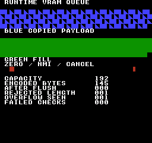
构建命令
New-Item -ItemType Directory -Force .\out | Out-Null
.\kitaqfc\kitaqfc.exe .\kitaq-docs\samples\api-examples\fc\runtime_queue.c -I .\kitaqfc\lib -I .\kitaq-docs\samples -o .\out\runtime_queue.nes --mapper=nrom --nes-chr=.\kitaq-docs\samples\api-examples\fc\vram_shapes.chr --no-cache --no-disasm实现与源码
kitaqfc/lib/runtime.h:40
Discard pending VRAM commands and clear the overflow latch; no PPU writes occur.
kitaqfc/lib/runtime.c:31
void nes_vram_queue_clear(void)
{
nes_vram_queue_used = 0;
nes_vram_queue_overflow = 0;
}nes_vram_queue_nmi_flush
按顺序执行 C 运行时队列中的全部待处理记录，无须提交标志。为每条记录设置 PPU 地址，再传送已保存的数据或重复写入填充值。完成后将 nes_vram_queue_used 清零，但保留溢出标志。空队列不会访问 PPU。
语法
void nes_vram_queue_nmi_flush(void);返回值
无（void）。
使用条件与限制
这是 runtime.c 在 CPU 地址 0x0300–0x03BF 使用的独立 192 字节队列。数据记录占 3+len 字节，填充记录占四字节。nes_vram_queue_used 表示编码后的记录字节数，不是待执行的 PPU 写入次数或剩余 VRAM。__vramq_* 内置队列使用不同格式，这些函数不会清空、查询或执行它。
使用 runtime.h 中的声明，并仅引入或编译一次 runtime.c。除了此队列，该文件还提供 __nes_nmi、运行时帧计数器、直接 PPU 操作函数以及第 02 页的 OAM 存储。请与程序的 NMI 处理协调；仅声明函数并不会链接实现。
请把构建批次和执行批次分为两个阶段；这里没有锁或双缓冲。要确保准备过程稳定，应在追加记录时禁用 NMI，然后在关闭渲染时执行，或准备好能在 VBlank 内完成的批次后再启用 NMI。runtime.c 会从 __nes_nmi 自动执行非空队列，无须提交调用。执行过程不设时间预算，不拆分任务，也不恢复滚动状态。队列能装下并不意味着 VBlank 时间足够。
PPU字节地址（0x0000–0x3FFF），不是CPU指针。目标必须可写；改写图案需要CHR RAM，不能写入CHR ROM。PPU映射与镜像规则照常适用。连续复制和填充应将PPUCTRL地址增量设为1。在安全的PPU写入时段执行，然后恢复所需的滚动状态；执行器会写入PPUADDR和PPUDATA，不会恢复滚动设置。
使用示例
// Rendering and NMI are disabled; PPUCTRL selects increment 1.
nes_vram_queue_nmi_flush(); // No commit flag: consume all queued records now.
after_flush=nes_vram_queue_used;
if(after_flush!=0)failures++;这是一段调用示例。放入完整程序前，请满足所述初始化和缓冲区要求。
预期结果
示例先填满全部 192 个队列字节，并有意让下一条记录被拒绝。清空该批次后，确认长度 128 被拒绝，再用五条记录占用 145 字节，安排 255 次 PPU 写入。应显示 CAPACITY 192、ENCODED BYTES 145、AFTER FLUSH 000、REJECTED LENGTH 001、OVERFLOW SEEN 001、FAILED CHECKS 000。拒绝相关数字保存的是程序先前步骤中观察到的结果，不代表最终的标志状态。
蓝色复制图块从 (0,16) 开始，绿色填充图块从 (0,64) 开始。每区共 127 个图块：三整行，加上第四行的 31 个，最后一个 8×8 单元保持黑色。蓝色序列重复实心、半宽、三角图块；即使源数据改变，第一个仍为实心。在 y=112，x=16 的红色方块在零长度记录后仍保留，x=224 的红色半宽图块验证 NMI 自动执行，被取消的 x=248 单元保持黑色。验证比较 18,432 个像素，并确认活动渲染期间没有 VRAM 写入。尚未在实体硬件上验证。
构建命令
New-Item -ItemType Directory -Force .\out | Out-Null
.\kitaqfc\kitaqfc.exe .\kitaq-docs\samples\api-examples\fc\runtime_queue.c -I .\kitaqfc\lib -I .\kitaq-docs\samples -o .\out\runtime_queue.nes --mapper=nrom --nes-chr=.\kitaq-docs\samples\api-examples\fc\vram_shapes.chr --no-cache --no-disasm实现与源码
kitaqfc/lib/runtime.h:51
Consume complete records in order during a safe PPU access period. Reading PPUSTATUS resets the shared address latch before each address pair. The caller is responsible for ensuring the transfer fits its NMI/VBlank time budget.
kitaqfc/lib/runtime.c:127
void nes_vram_queue_nmi_flush(void)
{
unsigned char i;
unsigned char cmd;
unsigned char len;
unsigned char data_index;
unsigned char latch;
i = 0;
while (i != nes_vram_queue_used)
{
latch = PPUSTATUS;
PPUADDR = nes_vram_queue_data[i];
PPUADDR = nes_vram_queue_data[(unsigned char)(i + 1)];
cmd = nes_vram_queue_data[(unsigned char)(i + 2)];
if ((cmd & 0x80) != 0)
{
len = (unsigned char)(cmd & 0x7F);
data_index = nes_vram_queue_data[(unsigned char)(i + 3)];
while (len != 0)
{
PPUDATA = data_index;
len = len - 1;
}
i = (unsigned char)(i + 4);
}
else
{
len = cmd;
data_index = (unsigned char)(i + 3);
while (len != 0)
{
PPUDATA = nes_vram_queue_data[data_index];
data_index = data_index + 1;
len = len - 1;
}
i = data_index;
}
latch = latch;
}
nes_vram_queue_used = 0;
}nes_vram_queue_try_fill
向 C 运行时队列追加四字节填充记录。执行时向 PPUDATA 写入 value，共 len 次。字节值会立即保存在记录中，之后修改调用方变量不会影响填充结果。它重复的是单个字节，而不是图块图案。
语法
unsigned char nes_vram_queue_try_fill(unsigned short ppu_addr, unsigned char value, unsigned char len);参数
ppu_addrPPU字节地址（
0x0000–0x3FFF），不是CPU指针。目标必须可写；改写图案需要CHR RAM，不能写入CHR ROM。PPU映射与镜像规则照常适用。连续复制和填充应将PPUCTRL地址增量设为1。在安全的PPU写入时段执行，然后恢复所需的滚动状态；执行器会写入PPUADDR和PPUDATA，不会恢复滚动设置。value重复写入0至255的单字节。显示含义取决于目标是图块索引、像素位平面还是其他字节结构。
len写入 PPU 的字节数，范围为 0–127。记录使用长度字节的第 7 位区分填充，因此拒绝 128–255。零长度 write 仍占三个队列字节，零长度 fill 占四个。两者在执行时都会设置 PPU 地址，但不写入 PPUDATA。
返回值
完整记录入队成功返回 1；长度无效或空间不足返回 0。拒绝时将 nes_vram_queue_overflow 设为 1，已有记录和已用长度保持不变。错误标志会保留到清除为止，但不会阻止后续能放入的记录。请检查每次调用的返回值。
使用条件与限制
这是 runtime.c 在 CPU 地址 0x0300–0x03BF 使用的独立 192 字节队列。数据记录占 3+len 字节，填充记录占四字节。nes_vram_queue_used 表示编码后的记录字节数，不是待执行的 PPU 写入次数或剩余 VRAM。__vramq_* 内置队列使用不同格式，这些函数不会清空、查询或执行它。
使用 runtime.h 中的声明，并仅引入或编译一次 runtime.c。除了此队列，该文件还提供 __nes_nmi、运行时帧计数器、直接 PPU 操作函数以及第 02 页的 OAM 存储。请与程序的 NMI 处理协调；仅声明函数并不会链接实现。
请把构建批次和执行批次分为两个阶段；这里没有锁或双缓冲。要确保准备过程稳定，应在追加记录时禁用 NMI，然后在关闭渲染时执行，或准备好能在 VBlank 内完成的批次后再启用 NMI。runtime.c 会从 __nes_nmi 自动执行非空队列，无须提交调用。执行过程不设时间预算，不拆分任务，也不恢复滚动状态。队列能装下并不意味着 VBlank 时间足够。
使用示例
if(nes_vram_queue_try_fill(0x2100,fill_value,127)!=1)failures++;
fill_value=3; // The queued fill remains the solid tile 1.这是一段调用示例。放入完整程序前，请满足所述初始化和缓冲区要求。
预期结果
示例先填满全部 192 个队列字节，并有意让下一条记录被拒绝。清空该批次后，确认长度 128 被拒绝，再用五条记录占用 145 字节，安排 255 次 PPU 写入。应显示 CAPACITY 192、ENCODED BYTES 145、AFTER FLUSH 000、REJECTED LENGTH 001、OVERFLOW SEEN 001、FAILED CHECKS 000。拒绝相关数字保存的是程序先前步骤中观察到的结果，不代表最终的标志状态。
蓝色复制图块从 (0,16) 开始，绿色填充图块从 (0,64) 开始。每区共 127 个图块：三整行，加上第四行的 31 个，最后一个 8×8 单元保持黑色。蓝色序列重复实心、半宽、三角图块；即使源数据改变，第一个仍为实心。在 y=112，x=16 的红色方块在零长度记录后仍保留，x=224 的红色半宽图块验证 NMI 自动执行，被取消的 x=248 单元保持黑色。验证比较 18,432 个像素，并确认活动渲染期间没有 VRAM 写入。尚未在实体硬件上验证。
构建命令
New-Item -ItemType Directory -Force .\out | Out-Null
.\kitaqfc\kitaqfc.exe .\kitaq-docs\samples\api-examples\fc\runtime_queue.c -I .\kitaqfc\lib -I .\kitaq-docs\samples -o .\out\runtime_queue.nes --mapper=nrom --nes-chr=.\kitaq-docs\samples\api-examples\fc\vram_shapes.chr --no-cache --no-disasm实现与源码
kitaqfc/lib/runtime.h:47
Queue a four-byte fill record: address high/low, length with bit 7 set, value. Reject lengths above 127 and latch overflow on any capacity/format failure.
kitaqfc/lib/runtime.c:90
unsigned char nes_vram_queue_try_fill(unsigned short ppu_addr, unsigned char value, unsigned char len)
{
unsigned char used;
unsigned char need;
used = nes_vram_queue_used;
need = 4;
if ((unsigned char)(used + need) < used)
{
nes_vram_queue_overflow = 1;
return 0;
}
if ((unsigned char)(used + need) > 192)
{
nes_vram_queue_overflow = 1;
return 0;
}
if ((len & 0x80) != 0)
{
nes_vram_queue_overflow = 1;
return 0;
}
nes_vram_queue_data[used] = (unsigned char)(ppu_addr >> 8);
nes_vram_queue_data[(unsigned char)(used + 1)] = (unsigned char)ppu_addr;
nes_vram_queue_data[(unsigned char)(used + 2)] = (unsigned char)(len | 0x80);
nes_vram_queue_data[(unsigned char)(used + 3)] = value;
nes_vram_queue_used = (unsigned char)(used + need);
return 1;
}nes_vram_queue_try_write
向 C 运行时队列追加携带实际数据的记录。在此次调用中将源数据的 len 个字节复制进队列，最后更新已用长度。PPU 传送在执行队列时发生。调用成功后修改或复用源缓冲区，不会改变已经入队的数据。
语法
unsigned char nes_vram_queue_try_write(unsigned short ppu_addr, unsigned char* src, unsigned char len);参数
ppu_addrPPU字节地址（
0x0000–0x3FFF），不是CPU指针。目标必须可写；改写图案需要CHR RAM，不能写入CHR ROM。PPU映射与镜像规则照常适用。连续复制和填充应将PPUCTRL地址增量设为1。在安全的PPU写入时段执行，然后恢复所需的滚动状态；执行器会写入PPUADDR和PPUDATA，不会恢复滚动设置。src指向当前已映射内存中至少
len个可读字节。源区域只需在此次调用期间保持有效；函数会复制数据，不会写入源区域。长度为零时不读取源字节。len写入 PPU 的字节数，范围为 0–127。记录使用长度字节的第 7 位区分填充，因此拒绝 128–255。零长度 write 仍占三个队列字节，零长度 fill 占四个。两者在执行时都会设置 PPU 地址，但不写入 PPUDATA。
返回值
完整记录入队成功返回 1；长度无效或空间不足返回 0。拒绝时将 nes_vram_queue_overflow 设为 1，已有记录和已用长度保持不变。错误标志会保留到清除为止，但不会阻止后续能放入的记录。请检查每次调用的返回值。
使用条件与限制
这是 runtime.c 在 CPU 地址 0x0300–0x03BF 使用的独立 192 字节队列。数据记录占 3+len 字节，填充记录占四字节。nes_vram_queue_used 表示编码后的记录字节数，不是待执行的 PPU 写入次数或剩余 VRAM。__vramq_* 内置队列使用不同格式，这些函数不会清空、查询或执行它。
使用 runtime.h 中的声明，并仅引入或编译一次 runtime.c。除了此队列，该文件还提供 __nes_nmi、运行时帧计数器、直接 PPU 操作函数以及第 02 页的 OAM 存储。请与程序的 NMI 处理协调；仅声明函数并不会链接实现。
请把构建批次和执行批次分为两个阶段；这里没有锁或双缓冲。要确保准备过程稳定，应在追加记录时禁用 NMI，然后在关闭渲染时执行，或准备好能在 VBlank 内完成的批次后再启用 NMI。runtime.c 会从 __nes_nmi 自动执行非空队列，无须提交调用。执行过程不设时间预算，不拆分任务，也不恢复滚动状态。队列能装下并不意味着 VBlank 时间足够。
使用示例
if(nes_vram_queue_try_write(0x2040,source_bytes,127)!=1)failures++;
source_bytes[0]=3; // The queued first tile stays 1: payload was copied immediately.这是一段调用示例。放入完整程序前，请满足所述初始化和缓冲区要求。
预期结果
示例先填满全部 192 个队列字节，并有意让下一条记录被拒绝。清空该批次后，确认长度 128 被拒绝，再用五条记录占用 145 字节，安排 255 次 PPU 写入。应显示 CAPACITY 192、ENCODED BYTES 145、AFTER FLUSH 000、REJECTED LENGTH 001、OVERFLOW SEEN 001、FAILED CHECKS 000。拒绝相关数字保存的是程序先前步骤中观察到的结果，不代表最终的标志状态。
蓝色复制图块从 (0,16) 开始，绿色填充图块从 (0,64) 开始。每区共 127 个图块：三整行，加上第四行的 31 个，最后一个 8×8 单元保持黑色。蓝色序列重复实心、半宽、三角图块；即使源数据改变，第一个仍为实心。在 y=112，x=16 的红色方块在零长度记录后仍保留，x=224 的红色半宽图块验证 NMI 自动执行，被取消的 x=248 单元保持黑色。验证比较 18,432 个像素，并确认活动渲染期间没有 VRAM 写入。尚未在实体硬件上验证。
构建命令
New-Item -ItemType Directory -Force .\out | Out-Null
.\kitaqfc\kitaqfc.exe .\kitaq-docs\samples\api-examples\fc\runtime_queue.c -I .\kitaqfc\lib -I .\kitaq-docs\samples -o .\out\runtime_queue.nes --mapper=nrom --nes-chr=.\kitaq-docs\samples\api-examples\fc\vram_shapes.chr --no-cache --no-disasm实现与源码
kitaqfc/lib/runtime.h:44
Copy a literal payload into the queue and publish its new used length last. Accept lengths 0..127; reject larger lengths and latch overflow without changing the queue. The caller must ensure queue production cannot race its NMI consumer.
kitaqfc/lib/runtime.c:40
unsigned char nes_vram_queue_try_write(unsigned short ppu_addr, unsigned char* src, unsigned char len)
{
unsigned char used;
unsigned char need;
unsigned char i;
unsigned char dst_index;
// Bit 7 selects a fill record; accepting it here would misdecode a literal
// and lengths 253..255 would also wrap the byte-sized allocation cost.
if ((len & 0x80) != 0)
{
nes_vram_queue_overflow = 1;
return 0;
}
used = nes_vram_queue_used;
// Each literal record costs three header bytes plus len payload bytes.
need = (unsigned char)(len + 3);
if ((unsigned char)(used + need) < used)
{
nes_vram_queue_overflow = 1;
return 0;
}
if ((unsigned char)(used + need) > 192)
{
nes_vram_queue_overflow = 1;
return 0;
}
nes_vram_queue_data[used] = (unsigned char)(ppu_addr >> 8);
nes_vram_queue_data[(unsigned char)(used + 1)] = (unsigned char)ppu_addr;
nes_vram_queue_data[(unsigned char)(used + 2)] = len;
i = 0;
dst_index = (unsigned char)(used + 3);
while (i != len)
{
nes_vram_queue_data[dst_index] = src[i];
dst_index = dst_index + 1;
i = i + 1;
}
nes_vram_queue_used = (unsigned char)(used + need);
return 1;
}nes_wait_nmi
等待 nes_nmi_counter 与进入函数时记录的值不同。runtime.c 的 __nes_nmi 在处理待执行队列后递增这个八位计数器；采用不等比较，因此也能处理从 255 回到 0 的情况。请启用 NMI，并使用该处理函数或等效的计数器更新机制。此轮询没有超时，不会启用 NMI、恢复滚动，也不保证恰好经过一整帧。
语法
void nes_wait_nmi(void);返回值
无（void）。
使用条件与限制
使用 runtime.h 中的声明，并仅引入或编译一次 runtime.c。除了此队列，该文件还提供 __nes_nmi、运行时帧计数器、直接 PPU 操作函数以及第 02 页的 OAM 存储。请与程序的 NMI 处理协调；仅声明函数并不会链接实现。
使用示例
__scroll_set(0,0);start_counter=nes_nmi_counter;
__ppu_ctrl_set(0x80); // Enable runtime.c's NMI handler before waiting.
nes_wait_nmi(); // Returns after the runtime completion counter changes.
nmi_seen=(u8)(nes_nmi_counter!=start_counter);
if(nmi_seen!=1)failures++;这是一段调用示例。放入完整程序前，请满足所述初始化和缓冲区要求。
预期结果
运行时示例用于学习直接传输和两种等待方式。(0,16) 显示蓝色实心图块、左半竖条与三角形的重复图案；(0,96) 显示绿色实心区域。每块区域为 256×64 像素，来自 256 个图块字节。修改源数据后，第一个蓝色图块仍为实心。y=208 的 x=16、224、240 处分别用红色 8×8 正方形、左半 4×8 竖条和八行三角形表示地址设置、零长度写入和零长度填充。两项等待指示均为 1，FAILED CHECKS 为 0。
构建命令
New-Item -ItemType Directory -Force .\out | Out-Null
.\kitaqfc\kitaqfc.exe .\kitaq-docs\samples\api-examples\fc\runtime_ppu.c -I .\kitaqfc\lib -I .\kitaq-docs\samples -o .\out\runtime_ppu.nes --mapper=nrom --nes-chr=.\kitaq-docs\samples\api-examples\fc\vram_shapes.chr --no-cache --no-disasm实现与源码
kitaqfc/lib/runtime.h:23
Wait until the NMI handler advances its counter. NMI must already be enabled and able to execute; this polling loop has no timeout.
kitaqfc/lib/runtime.c:185
void nes_wait_nmi(void)
{
unsigned char start;
start = nes_nmi_counter;
while (nes_nmi_counter == start)
{
}
}scene.h — 场景注册、切换与更新
nes_scene_stream_begin已找到实现
执行参数指定的操作。模块：场景注册、切换与更新。确切的单位、结束标记和返回条件，请查阅下方声明、原始说明及实现。
void nes_scene_stream_begin(unsigned short ppu_addr, unsigned char* src, unsigned short len, unsigned char chunk);参数，从左到右： unsigned short ppu_addr, unsigned char* src, unsigned short len, unsigned char chunk。数组和指针需要足够空间，并在处理结束前保持有效。
Replace the single active transfer and retain its source pointer. Keep the source storage and any required ROM bank readable until all bytes are queued.
调用示例：需要外围代码的片段
void nes_scene_stream_begin_nametable(unsigned short nt_base, unsigned char* src960)
{
nes_scene_stream_begin(nt_base, src960, 960, 32);
}
// Prepare the 64-byte attribute table at nametable base + 0x03C0.
void nes_scene_stream_begin_attr(unsigned short nt_base, unsigned char* src64)来源：kitaqfc/lib/scene.c:86
需加入的实现： kitaqfc/lib/scene.c:74。还须加入它调用的其他函数的实现文件。
查看当前实现
void nes_scene_stream_begin(unsigned short ppu_addr, unsigned char* src, unsigned short len, unsigned char chunk)
{
nes_scene_stream_state.ppu_addr = ppu_addr;
nes_scene_stream_state.src = src;
nes_scene_stream_state.remaining = len;
nes_scene_stream_state.chunk = chunk;
nes_scene_stream_state.active = 1;
}声明或标识符来源：kitaqfc/lib/scene.h:45
nes_scene_stream_begin_attr已找到实现
执行参数指定的操作。模块：场景注册、切换与更新。确切的单位、结束标记和返回条件，请查阅下方声明、原始说明及实现。
void nes_scene_stream_begin_attr(unsigned short nt_base, unsigned char* src64);参数，从左到右： unsigned short nt_base, unsigned char* src64。数组和指针需要足够空间，并在处理结束前保持有效。
Prepare the 64-byte attribute table at nametable base + 0x03C0.
参数传递示例
void example_nes_scene_stream_begin_attr(unsigned short nt_base, unsigned char* src64) {
nes_scene_stream_begin_attr(nt_base, src64);
}调用代码需准备对象初始化、缓冲区大小、ROM bank 与设备状态。本函数片段尚未单独执行验证。
需加入的实现： kitaqfc/lib/scene.c:90。还须加入它调用的其他函数的实现文件。
查看当前实现
void nes_scene_stream_begin_attr(unsigned short nt_base, unsigned char* src64)
{
nes_scene_stream_begin((unsigned short)(nt_base + 0x03C0), src64, 64, 16);
}声明或标识符来源：kitaqfc/lib/scene.h:49
nes_scene_stream_begin_nametable已找到实现
执行参数指定的操作。模块：场景注册、切换与更新。确切的单位、结束标记和返回条件，请查阅下方声明、原始说明及实现。
void nes_scene_stream_begin_nametable(unsigned short nt_base, unsigned char* src960);参数，从左到右： unsigned short nt_base, unsigned char* src960。数组和指针需要足够空间，并在处理结束前保持有效。
Prepare the 960-byte tile portion of a nametable using 32-byte queue records.
参数传递示例
void example_nes_scene_stream_begin_nametable(unsigned short nt_base, unsigned char* src960) {
nes_scene_stream_begin_nametable(nt_base, src960);
}调用代码需准备对象初始化、缓冲区大小、ROM bank 与设备状态。本函数片段尚未单独执行验证。
需加入的实现： kitaqfc/lib/scene.c:84。还须加入它调用的其他函数的实现文件。
查看当前实现
void nes_scene_stream_begin_nametable(unsigned short nt_base, unsigned char* src960)
{
nes_scene_stream_begin(nt_base, src960, 960, 32);
}声明或标识符来源：kitaqfc/lib/scene.h:47
nes_scene_stream_begin_palette已找到实现
执行参数指定的操作。模块：场景注册、切换与更新。确切的单位、结束标记和返回条件，请查阅下方声明、原始说明及实现。
void nes_scene_stream_begin_palette(unsigned char* src32);参数，从左到右： unsigned char* src32。数组和指针需要足够空间，并在处理结束前保持有效。
Prepare a 32-byte palette transfer to PPU address 0x3F00.
参数传递示例
void example_nes_scene_stream_begin_palette(unsigned char* src32) {
nes_scene_stream_begin_palette(src32);
}调用代码需准备对象初始化、缓冲区大小、ROM bank 与设备状态。本函数片段尚未单独执行验证。
需加入的实现： kitaqfc/lib/scene.c:96。还须加入它调用的其他函数的实现文件。
查看当前实现
void nes_scene_stream_begin_palette(unsigned char* src32)
{
nes_scene_stream_begin(0x3F00, src32, 32, 16);
}声明或标识符来源：kitaqfc/lib/scene.h:51
nes_scene_stream_step已找到实现
推进一个处理步骤。模块：场景注册、切换与更新。确切的单位、结束标记和返回条件，请查阅下方声明、原始说明及实现。
unsigned char nes_scene_stream_step(void);返回类型： unsigned char。值的含义及成功、失败返回值，以原始说明和实现中的返回条件为准。
Queue as many chunks as available capacity allows, capped at 127 bytes each. Return one when queue exhaustion requires a later retry, zero when all data has been queued. Zero does not mean the NMI consumer has already written the PPU.
参数传递示例
nes_scene_stream_step();调用代码需准备对象初始化、缓冲区大小、ROM bank 与设备状态。本函数片段尚未单独执行验证。
需加入的实现： kitaqfc/lib/scene.c:104。还须加入它调用的其他函数的实现文件。
查看当前实现
unsigned char nes_scene_stream_step(void)
{
unsigned char chunk;
while (nes_scene_stream_state.active != 0)
{
if (nes_scene_stream_state.remaining == 0)
{
nes_scene_stream_state.active = 0;
return 0;
}
// A step may enqueue several chunks; chunk limits record size, not the total bytes or time per frame.
chunk = nes_scene_stream_state.chunk;
if (chunk == 0)
{
chunk = 32;
}
if ((unsigned short)chunk > nes_scene_stream_state.remaining)
{
chunk = (unsigned char)nes_scene_stream_state.remaining;
}
if (chunk > 127)
{
chunk = 127;
}
// A failed enqueue leaves this chunk pending so a later step can retry after the queue drains.
if (nes_vram_queue_try_write(nes_scene_stream_state.ppu_addr, nes_scene_stream_state.src, chunk) == 0)
{
return 1;
}
nes_scene_stream_state.ppu_addr = (unsigned short)(nes_scene_stream_state.ppu_addr + chunk);
nes_scene_stream_state.src = nes_scene_stream_state.src + chunk;
nes_scene_stream_state.remaining = (unsigned short)(nes_scene_stream_state.remaining - chunk);
}
return 0;
}声明或标识符来源：kitaqfc/lib/scene.h:55
scene_change已找到实现
执行参数指定的操作。模块：场景注册、切换与更新。确切的单位、结束标记和返回条件，请查阅下方声明、原始说明及实现。
void scene_change(u8 scene_id);参数，从左到右： u8 scene_id。数组和指针需要足够空间，并在处理结束前保持有效。
Accept a different valid scene ID and latch the change flag; no callbacks run.
调用示例：需要外围代码的片段
m_init();
m_text(2,3,"SCENE");
scene_init(manual_scenes,2); scene_change(1);
m_number(scene_get_current());
while (1) { m_wait(); }
}来源：kitaq-docs/samples/fc_scene.c:13
需加入的实现： kitaqfc/lib/scene.c:41。还须加入它调用的其他函数的实现文件。
查看当前实现
void scene_change(u8 scene_id)
{
if (scene_id >= kq_scene_count) return;
if (scene_id == kq_scene_current) return;
kq_scene_current = scene_id;
kq_scene_changed = 1;
}声明或标识符来源：kitaqfc/lib/scene.h:33
scene_draw已找到实现
生成绘图数据。模块：场景注册、切换与更新。确切的单位、结束标记和返回条件，请查阅下方声明、原始说明及实现。
void scene_draw(void);Compatibility placeholder: this function performs no rendering or callback dispatch.
参数传递示例
scene_draw();调用代码需准备对象初始化、缓冲区大小、ROM bank 与设备状态。本函数片段尚未单独执行验证。
需加入的实现： kitaqfc/lib/scene.c:56。还须加入它调用的其他函数的实现文件。
查看当前实现
void scene_draw(void)
{
}声明或标识符来源：kitaqfc/lib/scene.h:37
scene_get_current已找到实现
取得数值或状态。模块：场景注册、切换与更新。确切的单位、结束标记和返回条件，请查阅下方声明、原始说明及实现。
u8 scene_get_current(void);返回类型： u8。值的含义及成功、失败返回值，以原始说明和实现中的返回条件为准。
Read the stored scene ID; callers must ensure a nonempty table before indexing it.
调用示例：需要外围代码的片段
m_text(2,3,"SCENE");
scene_init(manual_scenes,2); scene_change(1);
m_number(scene_get_current());
while (1) { m_wait(); }
}来源：kitaq-docs/samples/fc_scene.c:14
需加入的实现： kitaqfc/lib/scene.c:61。还须加入它调用的其他函数的实现文件。
查看当前实现
u8 scene_get_current(void)
{
return kq_scene_current;
}声明或标识符来源：kitaqfc/lib/scene.h:39
scene_init已找到实现
准备初始状态。模块：场景注册、切换与更新。确切的单位、结束标记和返回条件，请查阅下方声明、原始说明及实现。
void scene_init(const SceneDef* scenes, u8 count);参数，从左到右： const SceneDef* scenes, u8 count。数组和指针需要足够空间，并在处理结束前保持有效。
Attach the scene table, select ID zero and mark the state changed. The FC scene API currently tracks IDs only and does not invoke SceneDef callbacks.
调用示例：需要外围代码的片段
m_init();
m_text(2,3,"SCENE");
scene_init(manual_scenes,2); scene_change(1);
m_number(scene_get_current());
while (1) { m_wait(); }
}来源：kitaq-docs/samples/fc_scene.c:13
需加入的实现： kitaqfc/lib/scene.c:23。还须加入它调用的其他函数的实现文件。
查看当前实现
void scene_init(const SceneDef* scenes, u8 count)
{
kq_scene_table = scenes;
kq_scene_count = count;
kq_scene_current = 0;
kq_scene_changed = 1;
}声明或标识符来源：kitaqfc/lib/scene.h:29
scene_set_table已找到实现
设置数值或运行条件。模块：场景注册、切换与更新。确切的单位、结束标记和返回条件，请查阅下方声明、原始说明及实现。
void scene_set_table(const SceneDef* scenes, u8 count);参数，从左到右： const SceneDef* scenes, u8 count。数组和指针需要足够空间，并在处理结束前保持有效。
Replace the table, clamp an invalid current ID to zero and set the change flag.
参数传递示例
void example_scene_set_table(const SceneDef* scenes, u8 count) {
scene_set_table(scenes, count);
}调用代码需准备对象初始化、缓冲区大小、ROM bank 与设备状态。本函数片段尚未单独执行验证。
需加入的实现： kitaqfc/lib/scene.c:32。还须加入它调用的其他函数的实现文件。
查看当前实现
void scene_set_table(const SceneDef* scenes, u8 count)
{
kq_scene_table = scenes;
kq_scene_count = count;
if (kq_scene_current >= kq_scene_count) kq_scene_current = 0;
kq_scene_changed = 1;
}声明或标识符来源：kitaqfc/lib/scene.h:31
scene_update已找到实现
更新状态。模块：场景注册、切换与更新。确切的单位、结束标记和返回条件，请查阅下方声明、原始说明及实现。
void scene_update(void);Clear the change flag. Game-specific update callbacks must be called by the application.
参数传递示例
scene_update();调用代码需准备对象初始化、缓冲区大小、ROM bank 与设备状态。本函数片段尚未单独执行验证。
需加入的实现： kitaqfc/lib/scene.c:50。还须加入它调用的其他函数的实现文件。
查看当前实现
void scene_update(void)
{
kq_scene_changed = 0;
}声明或标识符来源：kitaqfc/lib/scene.h:35
scene_was_changed已找到实现
执行参数指定的操作。模块：场景注册、切换与更新。确切的单位、结束标记和返回条件，请查阅下方声明、原始说明及实现。
u8 scene_was_changed(void);返回类型： u8。值的含义及成功、失败返回值，以原始说明和实现中的返回条件为准。
Read the change flag, which remains set until scene_update clears it.
参数传递示例
scene_was_changed();调用代码需准备对象初始化、缓冲区大小、ROM bank 与设备状态。本函数片段尚未单独执行验证。
需加入的实现： kitaqfc/lib/scene.c:67。还须加入它调用的其他函数的实现文件。
查看当前实现
u8 scene_was_changed(void)
{
return kq_scene_changed;
}声明或标识符来源：kitaqfc/lib/scene.h:41
scroll.h — 背景、窗口与分屏滚动
nes_camera_follow_center已找到实现
执行参数指定的操作。模块：背景、窗口与分屏滚动。确切的单位、结束标记和返回条件，请查阅下方声明、原始说明及实现。
void nes_camera_follow_center(unsigned short target_x, unsigned short target_y, unsigned char center_x, unsigned char center_y);参数，从左到右： unsigned short target_x, unsigned short target_y, unsigned char center_x, unsigned char center_y。数组和指针需要足够空间，并在处理结束前保持有效。
Subtract the screen anchor from the world point into unsigned camera coordinates. Underflow wraps; world-edge clamping belongs to the game.
参数传递示例
void example_nes_camera_follow_center(unsigned short target_x, unsigned short target_y, unsigned char center_x, unsigned char center_y) {
nes_camera_follow_center(target_x, target_y, center_x, center_y);
}调用代码需准备对象初始化、缓冲区大小、ROM bank 与设备状态。本函数片段尚未单独执行验证。
需加入的实现： kitaqfc/lib/scroll.c:56。还须加入它调用的其他函数的实现文件。
查看当前实现
void nes_camera_follow_center(unsigned short target_x, unsigned short target_y, unsigned char center_x, unsigned char center_y)
{
nes_scroll_camera_x = target_x - center_x;
nes_scroll_camera_y = target_y - center_y;
}声明或标识符来源：kitaqfc/lib/scroll.h:21
nes_scroll_apply已找到实现
执行参数指定的操作。模块：背景、窗口与分屏滚动。确切的单位、结束标记和返回条件，请查阅下方声明、原始说明及实现。
void nes_scroll_apply(void);Combine bit 8 of each camera coordinate with base PPUCTRL, reset the latch by reading PPUSTATUS, and write low-byte X/Y scroll. This uses 256-unit wrapping on both axes rather than normalizing Y to a 240-pixel nametable height. Initialize base control to the intended PPUCTRL value, including NMI enable, before applying. Only coordinate bits 0..8 are used; arrange safe PPU timing in the caller.
参数传递示例
nes_scroll_apply();调用代码需准备对象初始化、缓冲区大小、ROM bank 与设备状态。本函数片段尚未单独执行验证。
需加入的实现： kitaqfc/lib/scroll.c:34。还须加入它调用的其他函数的实现文件。
查看当前实现
void nes_scroll_apply(void)
{
unsigned char ctrl;
unsigned char x_hi;
unsigned char y_hi;
unsigned char latch;
x_hi = (unsigned char)((nes_scroll_camera_x >> 8) & 1);
y_hi = (unsigned char)((nes_scroll_camera_y >> 8) & 1);
ctrl = (unsigned char)(nes_scroll_ctrl_base | x_hi | (unsigned char)(y_hi << 1));
// Replace the whole control register, so the saved base also determines NMI and increment mode.
PPUCTRL = ctrl;
latch = PPUSTATUS;
PPUSCROLL = (unsigned char)nes_scroll_camera_x;
PPUSCROLL = (unsigned char)nes_scroll_camera_y;
latch = latch;
}声明或标识符来源：kitaqfc/lib/scroll.h:18
nes_scroll_set已找到实现
设置数值或运行条件。模块：背景、窗口与分屏滚动。确切的单位、结束标记和返回条件，请查阅下方声明、原始说明及实现。
void nes_scroll_set(unsigned short camera_x, unsigned short camera_y);参数，从左到右： unsigned short camera_x, unsigned short camera_y。数组和指针需要足够空间，并在处理结束前保持有效。
Store camera coordinates without touching hardware registers.
参数传递示例
void example_nes_scroll_set(unsigned short camera_x, unsigned short camera_y) {
nes_scroll_set(camera_x, camera_y);
}调用代码需准备对象初始化、缓冲区大小、ROM bank 与设备状态。本函数片段尚未单独执行验证。
需加入的实现： kitaqfc/lib/scroll.c:25。还须加入它调用的其他函数的实现文件。
查看当前实现
void nes_scroll_set(unsigned short camera_x, unsigned short camera_y)
{
nes_scroll_camera_x = camera_x;
nes_scroll_camera_y = camera_y;
}声明或标识符来源：kitaqfc/lib/scroll.h:12
nes_scroll_set_base_ctrl已找到实现
设置数值或运行条件。模块：背景、窗口与分屏滚动。确切的单位、结束标记和返回条件，请查阅下方声明、原始说明及实现。
void nes_scroll_set_base_ctrl(unsigned char ctrl);参数，从左到右： unsigned char ctrl。数组和指针需要足够空间，并在处理结束前保持有效。
Store PPUCTRL bits other than the two nametable-selection bits for later application.
参数传递示例
void example_nes_scroll_set_base_ctrl(unsigned char ctrl) {
nes_scroll_set_base_ctrl(ctrl);
}调用代码需准备对象初始化、缓冲区大小、ROM bank 与设备状态。本函数片段尚未单独执行验证。
需加入的实现： kitaqfc/lib/scroll.c:19。还须加入它调用的其他函数的实现文件。
查看当前实现
void nes_scroll_set_base_ctrl(unsigned char ctrl)
{
nes_scroll_ctrl_base = (unsigned char)(ctrl & 0xFC);
}声明或标识符来源：kitaqfc/lib/scroll.h:10
sprite.h — OBJ 分配、定位、组合精灵与动画
精灵是可移动的硬件图形，通常为 8×8 或 8×16 像素，由对象属性存储器 OAM 的条目描述。先分配槽位，在工作副本中设置位置、图块和属性，再进行传输。元精灵将多个槽位组合成一个对象。GB 有 40 个槽位，每条扫描线最多 10 个；FC 有 64 个，每条扫描线最多 8 个。
FC 属性：位 0..1 选择四种精灵调色板之一；位 5 将精灵放在非零背景色编号之后；位 6/7 控制 X/Y 翻转。未使用的位 2..4 应为零。GB 与 FC 的标志值不同，请使用对应平台的常量。
anim_update
推进 SpriteAnim 计时器并返回选中的图块编号。每调用 ticks_per_frame 次就切换到下一个连续图块，经过 frame_count 帧后回到首帧。调用方通过 sprite_set_tile 应用返回值。
语法
u8 anim_update(SpriteAnim* anim);参数
anim可写的 SpriteAnim 状态，包含 first_tile、frame_count、frame、ticks 和 ticks_per_frame。计数非零时，frame 应小于 frame_count，ticks 应小于 ticks_per_frame。
返回值
选中的 8 位图块编号；状态指针为空时返回 0。函数不写入 OAM。
使用条件与限制
frame_count 为零时不推进，直接返回 first_tile；ticks_per_frame 为零时冻结当前帧。计时器按调用次数而非视频帧推进。图块编号在 256 处回绕，8×16 模式下也不会隔一个编号递增。
使用示例
sprite_example_animation.first_tile=128;sprite_example_animation.frame_count=2;
sprite_example_animation.frame=0;sprite_example_animation.ticks=0;
sprite_example_animation.ticks_per_frame=2;
sprite_example_expect(anim_update(&sprite_example_animation)==128);
tile=anim_update(&sprite_example_animation);
sprite_example_expect(tile==129);sprite_set_tile(5,tile);这是一段调用示例。放入完整程序前，请满足所述初始化和缓冲区要求。
预期结果
设置 first_tile=128、两帧、每帧两次调用后，第一次更新返回箭头图块 128，第二次返回正方形图块 129。ANIMATION 旁的正方形证明返回值已应用到 OAM。
本程序演示精灵分配、定位、翻转、复合对象、重叠、动画和扫描线上限。右上角两位数字应为 00，表示程序内的检查全部通过。每个箭头和正方形均占一个 8×8 图块。
NORMAL 在 (88,16) 显示向右箭头；FLIP X 在 (88,32) 向左；FLIP Y 在 (88,48) 上下翻转。META 在 (88,64) 和 (96,64) 放置两个箭头。OVERLAP 中，(88,80) 的箭头位于 (92,80) 的正方形之前，箭头的透明像素会露出正方形。ANIMATION 在 (88,96) 显示正方形。(120,16) 和 (120,32) 的槽位分别隐藏和释放后，应保持空白。
CGB 和 FC 的箭头采用绿色箭杆、红色轮廓和蓝色尖端细节，正方形为绿色。透明部分露出 GB 的白色背景或 FC 的黑色背景。DMG 用浅灰、深灰和黑色分别代替红、绿、蓝。
SCAN LIMIT 下方一行从 (8,128) 开始。程序在同一行提交 11 个 GB 精灵或 9 个 FC 精灵，故意超过一个。GB 应显示 10 个箭头，FC 应显示 8 个，最后提交的箭头不出现。软件峰值与警告检查仍应分别得到 11/9 和 1。
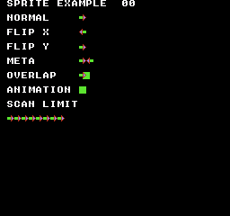
构建命令
New-Item -ItemType Directory -Force .\out | Out-Null
.\kitaqfc\kitaqfc.exe .\kitaq-docs\samples\api-examples\fc\sprite_shapes.c -I .\kitaqfc\lib -I .\kitaq-docs\samples -o .\out\sprite_shapes.nes --nes-chr=.\kitaq-docs\samples\sprite_example.chr --no-cache --no-disasm实现与源码
kitaqfc/lib/sprite.h:74
Advance animation ticks and wrap the frame index, returning the selected tile. Zero ticks-per-frame freezes advancement; null state returns zero.
kitaqfc/lib/sprite.c:174
u8 anim_update(SpriteAnim* anim)
{
if (anim == 0) return 0;
if (anim->frame_count == 0) return anim->first_tile;
if (anim->ticks_per_frame == 0) return (u8)(anim->first_tile + anim->frame);
anim->ticks = (u8)(anim->ticks + 1);
if (anim->ticks >= anim->ticks_per_frame) {
anim->ticks = 0;
anim->frame = (u8)(anim->frame + 1);
if (anim->frame >= anim->frame_count) anim->frame = 0;
}
return (u8)(anim->first_tile + anim->frame);
}metasprite_draw
把指定数量的精灵部件放入连续槽位。每个部件包含有符号偏移、图块和属性。函数激活空闲槽位、覆盖已激活槽位，并在槽位上限处停止。
语法
u8 metasprite_draw(u8 first_id, u8 x, u8 y, const MetaSpritePart* parts, u8 count);参数
first_id槽位编号，范围为 0..SPRITE_MAX-1；默认 GB 为 0..39，FC 为 0..63。越界编号会被忽略。
x以像素为单位的横向位置，使用无符号字节表示，不是图块坐标。
y直接写入 OAM 的 Y 字节。要把顶部放在第 1 条扫描线或更下方，应传入顶部坐标减一；239..255 位于 240 行可见区域之外。
parts至少含有 count 个可读 MetaSpritePart 的数组。每个 4 字节记录依次为有符号 dx/dy、图块和属性，没有终止标记。
count部件数量，以无符号字节表示。为零时不写入；连续槽位达到 SPRITE_MAX 时，只写入此前能容纳的部件。
返回值
返回实际写入的部件数，范围为 0..count。通过该值判断是否因槽位上限而截断。
使用条件与限制
位置、图块、属性和隐藏操作只修改工作副本，不会分配槽位，也不立即更新硬件 OAM。完成一帧的修改后，用 sprite_flush_oam 传输。
将有符号字节偏移加到基准坐标后，结果按 8 位回绕。整个调用期间部件数组必须可读。已激活的槽位也会被覆盖，函数不会保护其他对象使用的槽位。
使用示例
sprite_example_expect(metasprite_draw(10,88,SPRITE_EXAMPLE_Y(64),sprite_example_pair,2)==2);
sprite_example_expect(sprite_count_used()==9); // Sparse IDs count actual active slots.这是一段调用示例。放入完整程序前，请满足所述初始化和缓冲区要求。
预期结果
初始化后分配数为零。八次分配返回编号 0..7。隐藏槽位 6 后仍为 8；两次释放槽位 7 后为 7；在 10 和 11 放置两个部件后增至 9。
本程序演示精灵分配、定位、翻转、复合对象、重叠、动画和扫描线上限。右上角两位数字应为 00，表示程序内的检查全部通过。每个箭头和正方形均占一个 8×8 图块。
NORMAL 在 (88,16) 显示向右箭头；FLIP X 在 (88,32) 向左；FLIP Y 在 (88,48) 上下翻转。META 在 (88,64) 和 (96,64) 放置两个箭头。OVERLAP 中，(88,80) 的箭头位于 (92,80) 的正方形之前，箭头的透明像素会露出正方形。ANIMATION 在 (88,96) 显示正方形。(120,16) 和 (120,32) 的槽位分别隐藏和释放后，应保持空白。
CGB 和 FC 的箭头采用绿色箭杆、红色轮廓和蓝色尖端细节，正方形为绿色。透明部分露出 GB 的白色背景或 FC 的黑色背景。DMG 用浅灰、深灰和黑色分别代替红、绿、蓝。
SCAN LIMIT 下方一行从 (8,128) 开始。程序在同一行提交 11 个 GB 精灵或 9 个 FC 精灵，故意超过一个。GB 应显示 10 个箭头，FC 应显示 8 个，最后提交的箭头不出现。软件峰值与警告检查仍应分别得到 11/9 和 1。
构建命令
New-Item -ItemType Directory -Force .\out | Out-Null
.\kitaqfc\kitaqfc.exe .\kitaq-docs\samples\api-examples\fc\sprite_shapes.c -I .\kitaqfc\lib -I .\kitaq-docs\samples -o .\out\sprite_shapes.nes --nes-chr=.\kitaq-docs\samples\sprite_example.chr --no-cache --no-disasm实现与源码
kitaqfc/lib/sprite.h:71
Place consecutive parts, counting each newly activated slot once. Existing active slots are overwritten without increasing the allocation count. Return the number written; an invalid first slot or zero count writes nothing.
kitaqfc/lib/sprite.c:152
u8 metasprite_draw(u8 first_id, u8 x, u8 y, const MetaSpritePart* parts, u8 count)
{
u8 i;
i = 0;
while (i < count) {
u8 id;
id = (u8)(first_id + i);
if (id >= SPRITE_MAX) return i;
if (kq_sprite_active[id] == 0) {
kq_sprite_active[id] = 1;
kq_sprite_used = (u8)(kq_sprite_used + 1);
}
__sprite_set(id, (u8)(x + parts[i].dx), (u8)(y + parts[i].dy), parts[i].tile, parts[i].flags);
kq_sprite_x[id] = (u8)(x + parts[i].dx);
kq_sprite_y[id] = (u8)(y + parts[i].dy);
i = (u8)(i + 1);
}
return count;
}sprite_alloc
分配第一个空闲精灵槽位，并先将其隐藏。隐藏不会解除分配；显示前请设置位置、图块和属性。
语法
u8 sprite_alloc(void);返回值
返回分配的槽位编号；全部已用时返回 0xFF。
使用条件与限制
位置、图块、属性和隐藏操作只修改工作副本，不会分配槽位，也不立即更新硬件 OAM。完成一帧的修改后，用 sprite_flush_oam 传输。
使用示例
for(i=0;i<8;i++) sprite_example_expect(sprite_alloc()==i);
sprite_example_expect(sprite_count_used()==8);这是一段调用示例。放入完整程序前，请满足所述初始化和缓冲区要求。
预期结果
初始化后分配数为零。八次分配返回编号 0..7。隐藏槽位 6 后仍为 8；两次释放槽位 7 后为 7；在 10 和 11 放置两个部件后增至 9。
本程序演示精灵分配、定位、翻转、复合对象、重叠、动画和扫描线上限。右上角两位数字应为 00，表示程序内的检查全部通过。每个箭头和正方形均占一个 8×8 图块。
NORMAL 在 (88,16) 显示向右箭头；FLIP X 在 (88,32) 向左；FLIP Y 在 (88,48) 上下翻转。META 在 (88,64) 和 (96,64) 放置两个箭头。OVERLAP 中，(88,80) 的箭头位于 (92,80) 的正方形之前，箭头的透明像素会露出正方形。ANIMATION 在 (88,96) 显示正方形。(120,16) 和 (120,32) 的槽位分别隐藏和释放后，应保持空白。
CGB 和 FC 的箭头采用绿色箭杆、红色轮廓和蓝色尖端细节，正方形为绿色。透明部分露出 GB 的白色背景或 FC 的黑色背景。DMG 用浅灰、深灰和黑色分别代替红、绿、蓝。
SCAN LIMIT 下方一行从 (8,128) 开始。程序在同一行提交 11 个 GB 精灵或 9 个 FC 精灵，故意超过一个。GB 应显示 10 个箭头，FC 应显示 8 个，最后提交的箭头不出现。软件峰值与警告检查仍应分别得到 11/9 和 1。
构建命令
New-Item -ItemType Directory -Force .\out | Out-Null
.\kitaqfc\kitaqfc.exe .\kitaq-docs\samples\api-examples\fc\sprite_shapes.c -I .\kitaqfc\lib -I .\kitaq-docs\samples -o .\out\sprite_shapes.nes --nes-chr=.\kitaq-docs\samples\sprite_example.chr --no-cache --no-disasm实现与源码
kitaqfc/lib/sprite.h:45
Claim and hide the first free slot, or return 0xFF if all slots are active.
kitaqfc/lib/sprite.c:35
u8 sprite_alloc(void)
{
u8 i;
i = 0;
while (i < SPRITE_MAX) {
if (kq_sprite_active[i] == 0) {
kq_sprite_active[i] = 1;
kq_sprite_used = (u8)(kq_sprite_used + 1);
sprite_hide(i);
return i;
}
i = (u8)(i + 1);
}
return 0xFF;
}sprite_count_used
返回已分配槽位数，包括隐藏精灵和由 metasprite_draw 激活的槽位。这是分配数量，不是屏幕上的可见数量。
语法
u8 sprite_count_used(void);返回值
0 到 SPRITE_MAX 之间的无符号字节。
使用示例
sprite_example_expect(sprite_count_used()==9); // After hiding, freeing and drawing the pair.这是一段调用示例。放入完整程序前，请满足所述初始化和缓冲区要求。
预期结果
初始化后分配数为零。八次分配返回编号 0..7。隐藏槽位 6 后仍为 8；两次释放槽位 7 后为 7；在 10 和 11 放置两个部件后增至 9。
本程序演示精灵分配、定位、翻转、复合对象、重叠、动画和扫描线上限。右上角两位数字应为 00，表示程序内的检查全部通过。每个箭头和正方形均占一个 8×8 图块。
NORMAL 在 (88,16) 显示向右箭头；FLIP X 在 (88,32) 向左；FLIP Y 在 (88,48) 上下翻转。META 在 (88,64) 和 (96,64) 放置两个箭头。OVERLAP 中，(88,80) 的箭头位于 (92,80) 的正方形之前，箭头的透明像素会露出正方形。ANIMATION 在 (88,96) 显示正方形。(120,16) 和 (120,32) 的槽位分别隐藏和释放后，应保持空白。
CGB 和 FC 的箭头采用绿色箭杆、红色轮廓和蓝色尖端细节，正方形为绿色。透明部分露出 GB 的白色背景或 FC 的黑色背景。DMG 用浅灰、深灰和黑色分别代替红、绿、蓝。
SCAN LIMIT 下方一行从 (8,128) 开始。程序在同一行提交 11 个 GB 精灵或 9 个 FC 精灵，故意超过一个。GB 应显示 10 个箭头，FC 应显示 8 个，最后提交的箭头不出现。软件峰值与警告检查仍应分别得到 11/9 和 1。
构建命令
New-Item -ItemType Directory -Force .\out | Out-Null
.\kitaqfc\kitaqfc.exe .\kitaq-docs\samples\api-examples\fc\sprite_shapes.c -I .\kitaqfc\lib -I .\kitaq-docs\samples -o .\out\sprite_shapes.nes --nes-chr=.\kitaq-docs\samples\sprite_example.chr --no-cache --no-disasm实现与源码
kitaqfc/lib/sprite.h:62
Return the number of active slots, including slots activated by metasprite_draw. Hidden allocated slots remain active until sprite_free releases them.
kitaqfc/lib/sprite.c:108
u8 sprite_count_used(void)
{
return kq_sprite_used;
}sprite_flush_oam
等待 NMI 帧计数器递增，然后传输 256 字节的 OAM 工作页。必须启用 NMI，且处理程序需要更新该计数器。
语法
void sprite_flush_oam(void);返回值
无（void）。
使用条件与限制
FC 例程把 OAMADDR 设为零，从 CPU 页 $02（$0200–$02FF）启动 DMA。应在 VBlank 或关闭渲染时使用，并避免与中断同时修改同一工作页。
使用示例
while(1) { sprite_flush_oam(); } // Transfer prepared sprites at the next frame boundary.这是一段调用示例。放入完整程序前，请满足所述初始化和缓冲区要求。
预期结果
NORMAL 在 (88,16) 显示向右箭头；FLIP X 在 (88,32) 向左；FLIP Y 在 (88,48) 上下翻转。META 在 (88,64) 和 (96,64) 放置两个箭头。OVERLAP 中，(88,80) 的箭头位于 (92,80) 的正方形之前，箭头的透明像素会露出正方形。ANIMATION 在 (88,96) 显示正方形。(120,16) 和 (120,32) 的槽位分别隐藏和释放后，应保持空白。
本程序演示精灵分配、定位、翻转、复合对象、重叠、动画和扫描线上限。右上角两位数字应为 00，表示程序内的检查全部通过。每个箭头和正方形均占一个 8×8 图块。
CGB 和 FC 的箭头采用绿色箭杆、红色轮廓和蓝色尖端细节，正方形为绿色。透明部分露出 GB 的白色背景或 FC 的黑色背景。DMG 用浅灰、深灰和黑色分别代替红、绿、蓝。
SCAN LIMIT 下方一行从 (8,128) 开始。程序在同一行提交 11 个 GB 精灵或 9 个 FC 精灵，故意超过一个。GB 应显示 10 个箭头，FC 应显示 8 个，最后提交的箭头不出现。软件峰值与警告检查仍应分别得到 11/9 和 1。
构建命令
New-Item -ItemType Directory -Force .\out | Out-Null
.\kitaqfc\kitaqfc.exe .\kitaq-docs\samples\api-examples\fc\sprite_shapes.c -I .\kitaqfc\lib -I .\kitaq-docs\samples -o .\out\sprite_shapes.nes --nes-chr=.\kitaq-docs\samples\sprite_example.chr --no-cache --no-disasm实现与源码
kitaqfc/lib/sprite.h:59
Wait for NMI before requesting OAM DMA.
kitaqfc/lib/sprite.c:100
void sprite_flush_oam(void)
{
__nmi_wait();
__oam_dma();
}sprite_flush_oam_now
立即把 OAM 工作副本传输到硬件。函数不等待安全的显示时段，调用方需要安排执行时机。
语法
void sprite_flush_oam_now(void);返回值
无（void）。
使用条件与限制
FC 例程把 OAMADDR 设为零，从 CPU 页 $02（$0200–$02FF）启动 DMA。应在 VBlank 或关闭渲染时使用，并避免与中断同时修改同一工作页。
使用示例
// Rendering is disabled here; all shadow entries have been prepared.
sprite_flush_oam_now();这是一段调用示例。放入完整程序前，请满足所述初始化和缓冲区要求。
预期结果
NORMAL 在 (88,16) 显示向右箭头；FLIP X 在 (88,32) 向左；FLIP Y 在 (88,48) 上下翻转。META 在 (88,64) 和 (96,64) 放置两个箭头。OVERLAP 中，(88,80) 的箭头位于 (92,80) 的正方形之前，箭头的透明像素会露出正方形。ANIMATION 在 (88,96) 显示正方形。(120,16) 和 (120,32) 的槽位分别隐藏和释放后，应保持空白。
本程序演示精灵分配、定位、翻转、复合对象、重叠、动画和扫描线上限。右上角两位数字应为 00，表示程序内的检查全部通过。每个箭头和正方形均占一个 8×8 图块。
CGB 和 FC 的箭头采用绿色箭杆、红色轮廓和蓝色尖端细节，正方形为绿色。透明部分露出 GB 的白色背景或 FC 的黑色背景。DMG 用浅灰、深灰和黑色分别代替红、绿、蓝。
SCAN LIMIT 下方一行从 (8,128) 开始。程序在同一行提交 11 个 GB 精灵或 9 个 FC 精灵，故意超过一个。GB 应显示 10 个箭头，FC 应显示 8 个，最后提交的箭头不出现。软件峰值与警告检查仍应分别得到 11/9 和 1。
构建命令
New-Item -ItemType Directory -Force .\out | Out-Null
.\kitaqfc\kitaqfc.exe .\kitaq-docs\samples\api-examples\fc\sprite_shapes.c -I .\kitaqfc\lib -I .\kitaq-docs\samples -o .\out\sprite_shapes.nes --nes-chr=.\kitaq-docs\samples\sprite_example.chr --no-cache --no-disasm实现与源码
kitaqfc/lib/sprite.h:57
Transfer intrinsic shadow OAM immediately; this wrapper does not wait for VBlank.
kitaqfc/lib/sprite.c:94
void sprite_flush_oam_now(void)
{
__oam_dma();
}sprite_free
释放已分配的槽位，将其隐藏，并把使用数减一。编号越界或槽位已经空闲时不执行操作。
语法
void sprite_free(u8 id);参数
id槽位编号，范围为 0..SPRITE_MAX-1；默认 GB 为 0..39，FC 为 0..63。越界编号会被忽略。
返回值
无（void）。
使用条件与限制
位置、图块、属性和隐藏操作只修改工作副本，不会分配槽位，也不立即更新硬件 OAM。完成一帧的修改后，用 sprite_flush_oam 传输。
使用示例
sprite_free(7);sprite_free(7);
sprite_example_expect(sprite_count_used()==7); // Repeated release is ignored.这是一段调用示例。放入完整程序前，请满足所述初始化和缓冲区要求。
预期结果
初始化后分配数为零。八次分配返回编号 0..7。隐藏槽位 6 后仍为 8；两次释放槽位 7 后为 7；在 10 和 11 放置两个部件后增至 9。
本程序演示精灵分配、定位、翻转、复合对象、重叠、动画和扫描线上限。右上角两位数字应为 00，表示程序内的检查全部通过。每个箭头和正方形均占一个 8×8 图块。
NORMAL 在 (88,16) 显示向右箭头；FLIP X 在 (88,32) 向左；FLIP Y 在 (88,48) 上下翻转。META 在 (88,64) 和 (96,64) 放置两个箭头。OVERLAP 中，(88,80) 的箭头位于 (92,80) 的正方形之前，箭头的透明像素会露出正方形。ANIMATION 在 (88,96) 显示正方形。(120,16) 和 (120,32) 的槽位分别隐藏和释放后，应保持空白。
CGB 和 FC 的箭头采用绿色箭杆、红色轮廓和蓝色尖端细节，正方形为绿色。透明部分露出 GB 的白色背景或 FC 的黑色背景。DMG 用浅灰、深灰和黑色分别代替红、绿、蓝。
SCAN LIMIT 下方一行从 (8,128) 开始。程序在同一行提交 11 个 GB 精灵或 9 个 FC 精灵，故意超过一个。GB 应显示 10 个箭头，FC 应显示 8 个，最后提交的箭头不出现。软件峰值与警告检查仍应分别得到 11/9 和 1。
构建命令
New-Item -ItemType Directory -Force .\out | Out-Null
.\kitaqfc\kitaqfc.exe .\kitaq-docs\samples\api-examples\fc\sprite_shapes.c -I .\kitaqfc\lib -I .\kitaq-docs\samples -o .\out\sprite_shapes.nes --nes-chr=.\kitaq-docs\samples\sprite_example.chr --no-cache --no-disasm实现与源码
kitaqfc/lib/sprite.h:47
Release an active valid slot and hide it; invalid/repeated frees are ignored.
kitaqfc/lib/sprite.c:52
void sprite_free(u8 id)
{
if (sprite_valid(id) == 0) return;
if (kq_sprite_active[id] == 0) return;
kq_sprite_active[id] = 0;
if (kq_sprite_used != 0) kq_sprite_used = (u8)(kq_sprite_used - 1);
sprite_hide(id);
}sprite_hide
通过修改工作副本中的位置来隐藏精灵。分配状态、图块和属性保持不变，因此重新设置可见位置即可显示，无须再次分配。
语法
void sprite_hide(u8 id);参数
id槽位编号，范围为 0..SPRITE_MAX-1；默认 GB 为 0..39，FC 为 0..63。越界编号会被忽略。
返回值
无（void）。
使用条件与限制
位置、图块、属性和隐藏操作只修改工作副本，不会分配槽位，也不立即更新硬件 OAM。完成一帧的修改后，用 sprite_flush_oam 传输。
使用示例
sprite_hide(6);
sprite_example_expect(sprite_count_used()==8); // Hiding retains allocation.这是一段调用示例。放入完整程序前，请满足所述初始化和缓冲区要求。
预期结果
初始化后分配数为零。八次分配返回编号 0..7。隐藏槽位 6 后仍为 8；两次释放槽位 7 后为 7；在 10 和 11 放置两个部件后增至 9。
本程序演示精灵分配、定位、翻转、复合对象、重叠、动画和扫描线上限。右上角两位数字应为 00，表示程序内的检查全部通过。每个箭头和正方形均占一个 8×8 图块。
NORMAL 在 (88,16) 显示向右箭头；FLIP X 在 (88,32) 向左；FLIP Y 在 (88,48) 上下翻转。META 在 (88,64) 和 (96,64) 放置两个箭头。OVERLAP 中，(88,80) 的箭头位于 (92,80) 的正方形之前，箭头的透明像素会露出正方形。ANIMATION 在 (88,96) 显示正方形。(120,16) 和 (120,32) 的槽位分别隐藏和释放后，应保持空白。
CGB 和 FC 的箭头采用绿色箭杆、红色轮廓和蓝色尖端细节，正方形为绿色。透明部分露出 GB 的白色背景或 FC 的黑色背景。DMG 用浅灰、深灰和黑色分别代替红、绿、蓝。
SCAN LIMIT 下方一行从 (8,128) 开始。程序在同一行提交 11 个 GB 精灵或 9 个 FC 精灵，故意超过一个。GB 应显示 10 个箭头，FC 应显示 8 个，最后提交的箭头不出现。软件峰值与警告检查仍应分别得到 11/9 和 1。
构建命令
New-Item -ItemType Directory -Force .\out | Out-Null
.\kitaqfc\kitaqfc.exe .\kitaq-docs\samples\api-examples\fc\sprite_shapes.c -I .\kitaqfc\lib -I .\kitaq-docs\samples -o .\out\sprite_shapes.nes --nes-chr=.\kitaq-docs\samples\sprite_example.chr --no-cache --no-disasm实现与源码
kitaqfc/lib/sprite.h:55
Mark the software position off screen and hide its OAM entry without freeing it.
kitaqfc/lib/sprite.c:85
void sprite_hide(u8 id)
{
if (sprite_valid(id) == 0) return;
kq_sprite_x[id] = 0;
kq_sprite_y[id] = 0xF0;
__sprite_hide(id);
}sprite_init
重置精灵分配状态，并在 OAM 工作副本中隐藏所有槽位。软件记录的高度设为 8 像素；硬件精灵尺寸和 OAM 传输需要另行设置。
语法
void sprite_init(void);返回值
无（void）。
使用条件与限制
FC 初始化重置分配状态和软件坐标，但隐藏 OAM 条目时会保留图块与属性字节。SPRITE_MAX 必须在 1..64 内。
使用示例
sprite_init();
sprite_example_expect(sprite_count_used()==0);这是一段调用示例。放入完整程序前，请满足所述初始化和缓冲区要求。
预期结果
初始化后分配数为零。八次分配返回编号 0..7。隐藏槽位 6 后仍为 8；两次释放槽位 7 后为 7；在 10 和 11 放置两个部件后增至 9。
本程序演示精灵分配、定位、翻转、复合对象、重叠、动画和扫描线上限。右上角两位数字应为 00，表示程序内的检查全部通过。每个箭头和正方形均占一个 8×8 图块。
NORMAL 在 (88,16) 显示向右箭头；FLIP X 在 (88,32) 向左；FLIP Y 在 (88,48) 上下翻转。META 在 (88,64) 和 (96,64) 放置两个箭头。OVERLAP 中，(88,80) 的箭头位于 (92,80) 的正方形之前，箭头的透明像素会露出正方形。ANIMATION 在 (88,96) 显示正方形。(120,16) 和 (120,32) 的槽位分别隐藏和释放后，应保持空白。
CGB 和 FC 的箭头采用绿色箭杆、红色轮廓和蓝色尖端细节，正方形为绿色。透明部分露出 GB 的白色背景或 FC 的黑色背景。DMG 用浅灰、深灰和黑色分别代替红、绿、蓝。
SCAN LIMIT 下方一行从 (8,128) 开始。程序在同一行提交 11 个 GB 精灵或 9 个 FC 精灵，故意超过一个。GB 应显示 10 个箭头，FC 应显示 8 个，最后提交的箭头不出现。软件峰值与警告检查仍应分别得到 11/9 和 1。
构建命令
New-Item -ItemType Directory -Force .\out | Out-Null
.\kitaqfc\kitaqfc.exe .\kitaq-docs\samples\api-examples\fc\sprite_shapes.c -I .\kitaqfc\lib -I .\kitaq-docs\samples -o .\out\sprite_shapes.nes --nes-chr=.\kitaq-docs\samples\sprite_example.chr --no-cache --no-disasm实现与源码
kitaqfc/lib/sprite.h:43
Reset allocation/position state and hide each OAM slot through the intrinsic. The software height defaults to eight; hardware sprite size is configured elsewhere.
kitaqfc/lib/sprite.c:19
void sprite_init(void)
{
u8 i;
kq_sprite_used = 0;
kq_sprite_height = 8;
i = 0;
while (i < SPRITE_MAX) {
kq_sprite_active[i] = 0;
kq_sprite_x[i] = 0;
kq_sprite_y[i] = 0;
__sprite_hide(i);
i = (u8)(i + 1);
}
}sprite_max_scanline_count
根据记录的纵向位置和 kq_sprite_height，估算可见范围内同一扫描线上最多重叠多少个已激活精灵。
语法
u8 sprite_max_scanline_count(void);返回值
0 到 SPRITE_MAX 之间的无符号字节。
使用条件与限制
将 kq_sprite_height 设为硬件高度 8 或 16。估算不考虑透明像素、横向可见范围或硬件优先级。FC 读取库记录的坐标，因此直接用 OAM 内置函数改动的位置不会反映在估算中。
使用示例
sprite_example_expect(sprite_max_scanline_count()==SPRITE_EXAMPLE_LINE_COUNT);这是一段调用示例。放入完整程序前，请满足所述初始化和缓冲区要求。
预期结果
SCAN LIMIT 下方一行从 (8,128) 开始。程序在同一行提交 11 个 GB 精灵或 9 个 FC 精灵，故意超过一个。GB 应显示 10 个箭头，FC 应显示 8 个，最后提交的箭头不出现。软件峰值与警告检查仍应分别得到 11/9 和 1。
本程序演示精灵分配、定位、翻转、复合对象、重叠、动画和扫描线上限。右上角两位数字应为 00，表示程序内的检查全部通过。每个箭头和正方形均占一个 8×8 图块。
NORMAL 在 (88,16) 显示向右箭头；FLIP X 在 (88,32) 向左；FLIP Y 在 (88,48) 上下翻转。META 在 (88,64) 和 (96,64) 放置两个箭头。OVERLAP 中，(88,80) 的箭头位于 (92,80) 的正方形之前，箭头的透明像素会露出正方形。ANIMATION 在 (88,96) 显示正方形。(120,16) 和 (120,32) 的槽位分别隐藏和释放后，应保持空白。
CGB 和 FC 的箭头采用绿色箭杆、红色轮廓和蓝色尖端细节，正方形为绿色。透明部分露出 GB 的白色背景或 FC 的黑色背景。DMG 用浅灰、深灰和黑色分别代替红、绿、蓝。
构建命令
New-Item -ItemType Directory -Force .\out | Out-Null
.\kitaqfc\kitaqfc.exe .\kitaq-docs\samples\api-examples\fc\sprite_shapes.c -I .\kitaqfc\lib -I .\kitaq-docs\samples -o .\out\sprite_shapes.nes --nes-chr=.\kitaq-docs\samples\sprite_example.chr --no-cache --no-disasm实现与源码
kitaqfc/lib/sprite.h:67
Estimate peak overlap across 240 lines from software Y/height values. This does not model pixel transparency, OAM priority or every hardware overflow quirk.
kitaqfc/lib/sprite.c:117
u8 sprite_max_scanline_count(void)
{
u8 line;
u8 best;
line = 0;
best = 0;
while (line < 240) {
u8 i;
u8 count;
i = 0;
count = 0;
while (i < SPRITE_MAX) {
if (kq_sprite_active[i] != 0) {
if (line > kq_sprite_y[i] && (u8)(line - kq_sprite_y[i]) <= kq_sprite_height) {
count = (u8)(count + 1);
}
}
i = (u8)(i + 1);
}
if (count > best) best = count;
line = (u8)(line + 1);
}
return best;
}sprite_set_flags
替换整个精灵属性字节。组合对应平台的标志常量来选择翻转、调色板和背景优先级；未指定的位会清零。
语法
void sprite_set_flags(u8 id, u8 flags);参数
id槽位编号，范围为 0..SPRITE_MAX-1；默认 GB 为 0..39，FC 为 0..63。越界编号会被忽略。
flags使用本平台 SPRITE_FLAG_* 常量组成的完整属性字节。多个标志通过按位或（|）组合。
返回值
无（void）。
使用条件与限制
位置、图块、属性和隐藏操作只修改工作副本，不会分配槽位，也不立即更新硬件 OAM。完成一帧的修改后，用 sprite_flush_oam 传输。
FC 属性：位 0..1 选择四种精灵调色板之一；位 5 将精灵放在非零背景色编号之后；位 6/7 控制 X/Y 翻转。未使用的位 2..4 应为零。GB 与 FC 的标志值不同，请使用对应平台的常量。
使用示例
sprite_set_flags(1,SPRITE_FLAG_XFLIP);
sprite_set_flags(2,SPRITE_FLAG_YFLIP);这是一段调用示例。放入完整程序前，请满足所述初始化和缓冲区要求。
预期结果
NORMAL 在 (88,16) 显示向右箭头；FLIP X 在 (88,32) 向左；FLIP Y 在 (88,48) 上下翻转。META 在 (88,64) 和 (96,64) 放置两个箭头。OVERLAP 中，(88,80) 的箭头位于 (92,80) 的正方形之前，箭头的透明像素会露出正方形。ANIMATION 在 (88,96) 显示正方形。(120,16) 和 (120,32) 的槽位分别隐藏和释放后，应保持空白。
本程序演示精灵分配、定位、翻转、复合对象、重叠、动画和扫描线上限。右上角两位数字应为 00，表示程序内的检查全部通过。每个箭头和正方形均占一个 8×8 图块。
CGB 和 FC 的箭头采用绿色箭杆、红色轮廓和蓝色尖端细节，正方形为绿色。透明部分露出 GB 的白色背景或 FC 的黑色背景。DMG 用浅灰、深灰和黑色分别代替红、绿、蓝。
SCAN LIMIT 下方一行从 (8,128) 开始。程序在同一行提交 11 个 GB 精灵或 9 个 FC 精灵，故意超过一个。GB 应显示 10 个箭头，FC 应显示 8 个，最后提交的箭头不出现。软件峰值与警告检查仍应分别得到 11/9 和 1。
构建命令
New-Item -ItemType Directory -Force .\out | Out-Null
.\kitaqfc\kitaqfc.exe .\kitaq-docs\samples\api-examples\fc\sprite_shapes.c -I .\kitaqfc\lib -I .\kitaq-docs\samples -o .\out\sprite_shapes.nes --nes-chr=.\kitaq-docs\samples\sprite_example.chr --no-cache --no-disasm实现与源码
kitaqfc/lib/sprite.h:53
Replace the hardware attribute byte of a valid OAM slot.
kitaqfc/lib/sprite.c:78
void sprite_set_flags(u8 id, u8 flags)
{
if (sprite_valid(id) == 0) return;
__sprite_attr(id, flags);
}sprite_set_pos
更新 FC 精灵的软件坐标和 OAM 工作副本。X 是屏幕位置；Y 是直接写入 OAM 的字节，因此要让精灵顶部位于像素 32，应传入 Y=31。
语法
void sprite_set_pos(u8 id, u8 x, u8 y);参数
id槽位编号，范围为 0..SPRITE_MAX-1；默认 GB 为 0..39，FC 为 0..63。越界编号会被忽略。
x以像素为单位的横向位置，使用无符号字节表示，不是图块坐标。
y直接写入 OAM 的 Y 字节。要把顶部放在第 1 条扫描线或更下方，应传入顶部坐标减一；239..255 位于 240 行可见区域之外。
返回值
无（void）。
使用条件与限制
位置、图块、属性和隐藏操作只修改工作副本，不会分配槽位，也不立即更新硬件 OAM。完成一帧的修改后，用 sprite_flush_oam 传输。
坐标加法采用 8 位运算，超过后按 256 回绕，不进行屏幕裁剪。只要槽位编号有效，即使未分配也能修改。
使用示例
sprite_set_pos(0,88,SPRITE_EXAMPLE_Y(16)); // Visible top-left: (88,16).这是一段调用示例。放入完整程序前，请满足所述初始化和缓冲区要求。
预期结果
NORMAL 在 (88,16) 显示向右箭头；FLIP X 在 (88,32) 向左；FLIP Y 在 (88,48) 上下翻转。META 在 (88,64) 和 (96,64) 放置两个箭头。OVERLAP 中，(88,80) 的箭头位于 (92,80) 的正方形之前，箭头的透明像素会露出正方形。ANIMATION 在 (88,96) 显示正方形。(120,16) 和 (120,32) 的槽位分别隐藏和释放后，应保持空白。
本程序演示精灵分配、定位、翻转、复合对象、重叠、动画和扫描线上限。右上角两位数字应为 00，表示程序内的检查全部通过。每个箭头和正方形均占一个 8×8 图块。
CGB 和 FC 的箭头采用绿色箭杆、红色轮廓和蓝色尖端细节，正方形为绿色。透明部分露出 GB 的白色背景或 FC 的黑色背景。DMG 用浅灰、深灰和黑色分别代替红、绿、蓝。
SCAN LIMIT 下方一行从 (8,128) 开始。程序在同一行提交 11 个 GB 精灵或 9 个 FC 精灵，故意超过一个。GB 应显示 10 个箭头，FC 应显示 8 个，最后提交的箭头不出现。软件峰值与警告检查仍应分别得到 11/9 和 1。
构建命令
New-Item -ItemType Directory -Force .\out | Out-Null
.\kitaqfc\kitaqfc.exe .\kitaq-docs\samples\api-examples\fc\sprite_shapes.c -I .\kitaqfc\lib -I .\kitaq-docs\samples -o .\out\sprite_shapes.nes --nes-chr=.\kitaq-docs\samples\sprite_example.chr --no-cache --no-disasm实现与源码
kitaqfc/lib/sprite.h:49
Update software coordinates and the intrinsic OAM position for a valid slot.
kitaqfc/lib/sprite.c:62
void sprite_set_pos(u8 id, u8 x, u8 y)
{
if (sprite_valid(id) == 0) return;
kq_sprite_x[id] = x;
kq_sprite_y[id] = y;
__sprite_move(id, x, y);
}sprite_set_tile
替换一个 OAM 工作副本条目的图块编号。它只选择图块存储器中已有的图形，不上传图形，也不分配精灵。
语法
void sprite_set_tile(u8 id, u8 tile);参数
id槽位编号，范围为 0..SPRITE_MAX-1；默认 GB 为 0..39，FC 为 0..63。越界编号会被忽略。
tile8 位图块编号。须先加载图形。8×16 精灵仍遵循硬件规则，函数不会自动调整成成对图块编号。
返回值
无（void）。
使用条件与限制
位置、图块、属性和隐藏操作只修改工作副本，不会分配槽位，也不立即更新硬件 OAM。完成一帧的修改后，用 sprite_flush_oam 传输。
使用示例
sprite_set_tile(5,129); // Select the green square beside ANIMATION.这是一段调用示例。放入完整程序前，请满足所述初始化和缓冲区要求。
预期结果
设置 first_tile=128、两帧、每帧两次调用后，第一次更新返回箭头图块 128，第二次返回正方形图块 129。ANIMATION 旁的正方形证明返回值已应用到 OAM。
本程序演示精灵分配、定位、翻转、复合对象、重叠、动画和扫描线上限。右上角两位数字应为 00，表示程序内的检查全部通过。每个箭头和正方形均占一个 8×8 图块。
NORMAL 在 (88,16) 显示向右箭头；FLIP X 在 (88,32) 向左；FLIP Y 在 (88,48) 上下翻转。META 在 (88,64) 和 (96,64) 放置两个箭头。OVERLAP 中，(88,80) 的箭头位于 (92,80) 的正方形之前，箭头的透明像素会露出正方形。ANIMATION 在 (88,96) 显示正方形。(120,16) 和 (120,32) 的槽位分别隐藏和释放后，应保持空白。
CGB 和 FC 的箭头采用绿色箭杆、红色轮廓和蓝色尖端细节，正方形为绿色。透明部分露出 GB 的白色背景或 FC 的黑色背景。DMG 用浅灰、深灰和黑色分别代替红、绿、蓝。
SCAN LIMIT 下方一行从 (8,128) 开始。程序在同一行提交 11 个 GB 精灵或 9 个 FC 精灵，故意超过一个。GB 应显示 10 个箭头，FC 应显示 8 个，最后提交的箭头不出现。软件峰值与警告检查仍应分别得到 11/9 和 1。
构建命令
New-Item -ItemType Directory -Force .\out | Out-Null
.\kitaqfc\kitaqfc.exe .\kitaq-docs\samples\api-examples\fc\sprite_shapes.c -I .\kitaqfc\lib -I .\kitaq-docs\samples -o .\out\sprite_shapes.nes --nes-chr=.\kitaq-docs\samples\sprite_example.chr --no-cache --no-disasm实现与源码
kitaqfc/lib/sprite.h:51
Replace the tile byte of a valid OAM slot without changing allocation state.
kitaqfc/lib/sprite.c:71
void sprite_set_tile(u8 id, u8 tile)
{
if (sprite_valid(id) == 0) return;
__sprite_tile(id, tile);
}sprite_warn_scanline_overflow
将 sprite_max_scanline_count 与每条扫描线的精灵上限比较：GB 为 10，FC 为 8。它报告软件估算结果，不读取硬件溢出标志。
语法
u8 sprite_warn_scanline_overflow(void);返回值
估算值超过每条扫描线的上限时为 1，否则为 0。
使用条件与限制
将 kq_sprite_height 设为硬件高度 8 或 16。估算不考虑透明像素、横向可见范围或硬件优先级。FC 读取库记录的坐标，因此直接用 OAM 内置函数改动的位置不会反映在估算中。
使用示例
sprite_example_expect(sprite_warn_scanline_overflow()==1);这是一段调用示例。放入完整程序前，请满足所述初始化和缓冲区要求。
预期结果
SCAN LIMIT 下方一行从 (8,128) 开始。程序在同一行提交 11 个 GB 精灵或 9 个 FC 精灵，故意超过一个。GB 应显示 10 个箭头，FC 应显示 8 个，最后提交的箭头不出现。软件峰值与警告检查仍应分别得到 11/9 和 1。
本程序演示精灵分配、定位、翻转、复合对象、重叠、动画和扫描线上限。右上角两位数字应为 00，表示程序内的检查全部通过。每个箭头和正方形均占一个 8×8 图块。
NORMAL 在 (88,16) 显示向右箭头；FLIP X 在 (88,32) 向左；FLIP Y 在 (88,48) 上下翻转。META 在 (88,64) 和 (96,64) 放置两个箭头。OVERLAP 中，(88,80) 的箭头位于 (92,80) 的正方形之前，箭头的透明像素会露出正方形。ANIMATION 在 (88,96) 显示正方形。(120,16) 和 (120,32) 的槽位分别隐藏和释放后，应保持空白。
CGB 和 FC 的箭头采用绿色箭杆、红色轮廓和蓝色尖端细节，正方形为绿色。透明部分露出 GB 的白色背景或 FC 的黑色背景。DMG 用浅灰、深灰和黑色分别代替红、绿、蓝。
构建命令
New-Item -ItemType Directory -Force .\out | Out-Null
.\kitaqfc\kitaqfc.exe .\kitaq-docs\samples\api-examples\fc\sprite_shapes.c -I .\kitaqfc\lib -I .\kitaq-docs\samples -o .\out\sprite_shapes.nes --nes-chr=.\kitaq-docs\samples\sprite_example.chr --no-cache --no-disasm实现与源码
kitaqfc/lib/sprite.h:64
Flag software overlap estimates above eight sprites on one scanline.
kitaqfc/lib/sprite.c:143
u8 sprite_warn_scanline_overflow(void)
{
return (u8)(sprite_max_scanline_count() > 8);
}system.h — 启动、帧计数、等待与中断
system_disable_interrupts已找到实现
关闭功能。模块：启动、帧计数、等待与中断。确切的单位、结束标记和返回条件，请查阅下方声明、原始说明及实现。
void system_disable_interrupts(void);Disable maskable CPU IRQs; this does not disable the PPU's NMI source.
参数传递示例
system_disable_interrupts();调用代码需准备对象初始化、缓冲区大小、ROM bank 与设备状态。本函数片段尚未单独执行验证。
需加入的实现： kitaqfc/lib/system.c:49。还须加入它调用的其他函数的实现文件。
查看当前实现
void system_disable_interrupts(void)
{
__irq_disable();
}声明或标识符来源：kitaqfc/lib/system.h:27
system_enable_interrupts已找到实现
启用功能。模块：启动、帧计数、等待与中断。确切的单位、结束标记和返回条件，请查阅下方声明、原始说明及实现。
void system_enable_interrupts(void);Enable maskable CPU IRQs through the intrinsic; NMI is controlled separately.
参数传递示例
system_enable_interrupts();调用代码需准备对象初始化、缓冲区大小、ROM bank 与设备状态。本函数片段尚未单独执行验证。
需加入的实现： kitaqfc/lib/system.c:43。还须加入它调用的其他函数的实现文件。
查看当前实现
void system_enable_interrupts(void)
{
__irq_enable();
}声明或标识符来源：kitaqfc/lib/system.h:25
system_get_frame已找到实现
取得数值或状态。模块：启动、帧计数、等待与中断。确切的单位、结束标记和返回条件，请查阅下方声明、原始说明及实现。
u16 system_get_frame(void);返回类型： u16。值的含义及成功、失败返回值，以原始说明和实现中的返回条件为准。
Return the wrapping 16-bit count of completed waits through this wrapper.
参数传递示例
system_get_frame();调用代码需准备对象初始化、缓冲区大小、ROM bank 与设备状态。本函数片段尚未单独执行验证。
需加入的实现： kitaqfc/lib/system.c:31。还须加入它调用的其他函数的实现文件。
查看当前实现
u16 system_get_frame(void)
{
return kq_system_frame;
}声明或标识符来源：kitaqfc/lib/system.h:21
system_get_frame8已找到实现
取得数值或状态。模块：启动、帧计数、等待与中断。确切的单位、结束标记和返回条件，请查阅下方声明、原始说明及实现。
u8 system_get_frame8(void);返回类型： u8。值的含义及成功、失败返回值，以原始说明和实现中的返回条件为准。
Return the low byte of the software frame counter.
调用示例：需要外围代码的片段
m_text(2,3,"SYSTEM");
system_init(); system_wait_vblank(); system_wait_vblank();
m_number(system_get_frame8());
while (1) { m_wait(); }
}来源：kitaq-docs/samples/fc_system.c:12
需加入的实现： kitaqfc/lib/system.c:37。还须加入它调用的其他函数的实现文件。
查看当前实现
u8 system_get_frame8(void)
{
return (u8)kq_system_frame;
}声明或标识符来源：kitaqfc/lib/system.h:23
system_init已找到实现
准备初始状态。模块：启动、帧计数、等待与中断。确切的单位、结束标记和返回条件，请查阅下方声明、原始说明及实现。
void system_init(void);Reset the software frame counter and callback storage, then enable NMI.
调用示例：需要外围代码的片段
m_init();
m_text(2,3,"SYSTEM");
system_init(); system_wait_vblank(); system_wait_vblank();
m_number(system_get_frame8());
while (1) { m_wait(); }
}来源：kitaq-docs/samples/fc_system.c:11
需加入的实现： kitaqfc/lib/system.c:7。还须加入它调用的其他函数的实现文件。
查看当前实现
void system_init(void)
{
kq_system_frame = 0;
system_vblank_callback = 0;
// NMI waits require a running PPU and its enabled NMI source, independently of the CPU IRQ mask.
__nmi_enable();
}声明或标识符来源：kitaqfc/lib/system.h:13
system_set_vblank_callback已找到实现
GB 的等待函数会协作调用此回调。当前 FC 实现只保存它，不会自动调用。
void system_set_vblank_callback(SystemCallback callback);参数，从左到右： SystemCallback callback。数组和指针需要足够空间，并在处理结束前保持有效。
Store the callback for API compatibility. No function in this implementation invokes it; applications must call their per-frame work explicitly.
参数传递示例
void example_system_set_vblank_callback(SystemCallback callback) {
system_set_vblank_callback(callback);
}调用代码需准备对象初始化、缓冲区大小、ROM bank 与设备状态。本函数片段尚未单独执行验证。
需加入的实现： kitaqfc/lib/system.c:25。还须加入它调用的其他函数的实现文件。
查看当前实现
void system_set_vblank_callback(SystemCallback callback)
{
system_vblank_callback = callback;
}声明或标识符来源：kitaqfc/lib/system.h:19
system_wait_vblank已找到实现
等待条件满足。模块：启动、帧计数、等待与中断。确切的单位、结束标记和返回条件，请查阅下方声明、原始说明及实现。
void system_wait_vblank(void);Wait for NMI and count the completed wait. Unlike the GB implementation, this FC wrapper does not invoke the callback stored by system_set_vblank_callback.
调用示例：需要外围代码的片段
m_init();
m_text(2,3,"SYSTEM");
system_init(); system_wait_vblank(); system_wait_vblank();
m_number(system_get_frame8());
while (1) { m_wait(); }
}来源：kitaq-docs/samples/fc_system.c:11
需加入的实现： kitaqfc/lib/system.c:17。还须加入它调用的其他函数的实现文件。
查看当前实现
void system_wait_vblank(void)
{
__nmi_wait();
kq_system_frame = (u16)(kq_system_frame + 1);
}声明或标识符来源：kitaqfc/lib/system.h:16
tilemap.h — 矩形图块地图操作
nes_tilemap_get已找到实现
取得数值或状态。模块：矩形图块地图操作。确切的单位、结束标记和返回条件，请查阅下方声明、原始说明及实现。
unsigned char nes_tilemap_get(struct NesTilemap* map, unsigned char tx, unsigned char ty);参数，从左到右： struct NesTilemap* map, unsigned char tx, unsigned char ty。数组和指针需要足够空间，并在处理结束前保持有效。
返回类型： unsigned char。值的含义及成功、失败返回值，以原始说明和实现中的返回条件为准。
Return a tile byte, or 0xFF when coordinates exceed map dimensions. The map/storage pointers must be valid; 0xFF may also be an actual stored tile.
调用示例：需要外围代码的片段
unsigned char tile;
tile = nes_tilemap_get(map, tx, ty);
if (tile == 0xFF)
{
return 1;
}来源：kitaqfc/lib/tilemap.c:51
需加入的实现： kitaqfc/lib/tilemap.c:32。还须加入它调用的其他函数的实现文件。
查看当前实现
unsigned char nes_tilemap_get(struct NesTilemap* map, unsigned char tx, unsigned char ty)
{
if (tx >= map->width)
{
return 0xFF;
}
if (ty >= map->height)
{
return 0xFF;
}
return map->tiles[nes_tilemap_index(map, tx, ty)];
}声明或标识符来源：kitaqfc/lib/tilemap.h:19
nes_tilemap_index已找到实现
执行参数指定的操作。模块：矩形图块地图操作。确切的单位、结束标记和返回条件，请查阅下方声明、原始说明及实现。
unsigned short nes_tilemap_index(struct NesTilemap* map, unsigned char tx, unsigned char ty);参数，从左到右： struct NesTilemap* map, unsigned char tx, unsigned char ty。数组和指针需要足够空间，并在处理结束前保持有效。
返回类型： unsigned short。值的含义及成功、失败返回值，以原始说明和实现中的返回条件为准。
Compute a row-major byte offset by adding the row stride ty times. This internal arithmetic helper does not validate coordinates.
调用示例：需要外围代码的片段
return 0xFF;
}
return map->tiles[nes_tilemap_index(map, tx, ty)];
}
// Treat out-of-bounds/0xFF tiles as solid, then compare other tile IDs with
// the map's solid_from threshold.来源：kitaqfc/lib/tilemap.c:42
需加入的实现： kitaqfc/lib/tilemap.c:14。还须加入它调用的其他函数的实现文件。
查看当前实现
unsigned short nes_tilemap_index(struct NesTilemap* map, unsigned char tx, unsigned char ty)
{
unsigned short index;
unsigned char y;
index = tx;
y = 0;
while (y != ty)
{
index = (unsigned short)(index + map->width);
y = y + 1;
}
return index;
}声明或标识符来源：kitaqfc/lib/tilemap.h:16
nes_tilemap_point_solid已找到实现
执行参数指定的操作。模块：矩形图块地图操作。确切的单位、结束标记和返回条件，请查阅下方声明、原始说明及实现。
unsigned char nes_tilemap_point_solid(struct NesTilemap* map, unsigned char tx, unsigned char ty);参数，从左到右： struct NesTilemap* map, unsigned char tx, unsigned char ty。数组和指针需要足够空间，并在处理结束前保持有效。
返回类型： unsigned char。值的含义及成功、失败返回值，以原始说明和实现中的返回条件为准。
Treat out-of-bounds/0xFF tiles as solid, then compare other tile IDs with the map's solid_from threshold.
调用示例：需要外围代码的片段
unsigned char nes_tilemap_world_point_solid(struct NesTilemap* map, unsigned short world_x, unsigned short world_y)
{
return nes_tilemap_point_solid(map, nes_world_to_tile8_x(world_x), nes_world_to_tile8_y(world_y));
}
// Test only the four corners of a nonempty world box. Interior/edge tiles
// between the corners are not scanned, so large boxes can miss obstacles.来源：kitaqfc/lib/tilemap.c:79
需加入的实现： kitaqfc/lib/tilemap.c:47。还须加入它调用的其他函数的实现文件。
查看当前实现
unsigned char nes_tilemap_point_solid(struct NesTilemap* map, unsigned char tx, unsigned char ty)
{
unsigned char tile;
tile = nes_tilemap_get(map, tx, ty);
if (tile == 0xFF)
{
return 1;
}
if (tile >= map->solid_from)
{
return 1;
}
return 0;
}声明或标识符来源：kitaqfc/lib/tilemap.h:22
nes_tilemap_world_box_solid已找到实现
执行参数指定的操作。模块：矩形图块地图操作。确切的单位、结束标记和返回条件，请查阅下方声明、原始说明及实现。
unsigned char nes_tilemap_world_box_solid(struct NesTilemap* map, unsigned short world_x, unsigned short world_y, unsigned char width, unsigned char height);参数，从左到右： struct NesTilemap* map, unsigned short world_x, unsigned short world_y, unsigned char width, unsigned char height。数组和指针需要足够空间，并在处理结束前保持有效。
返回类型： unsigned char。值的含义及成功、失败返回值，以原始说明和实现中的返回条件为准。
Test only the four corners of a nonempty world box. Interior/edge tiles between the corners are not scanned, so large boxes can miss obstacles. Width/height must be nonzero and endpoint arithmetic must not overflow.
参数传递示例
unsigned char example_nes_tilemap_world_box_solid(struct NesTilemap* map, unsigned short world_x, unsigned short world_y, unsigned char width, unsigned char height) {
return nes_tilemap_world_box_solid(map, world_x, world_y, width, height);
}调用代码需准备对象初始化、缓冲区大小、ROM bank 与设备状态。本函数片段尚未单独执行验证。
需加入的实现： kitaqfc/lib/tilemap.c:86。还须加入它调用的其他函数的实现文件。
查看当前实现
unsigned char nes_tilemap_world_box_solid(struct NesTilemap* map, unsigned short world_x, unsigned short world_y, unsigned char width, unsigned char height)
{
unsigned short x2;
unsigned short y2;
x2 = (unsigned short)(world_x + width - 1);
y2 = (unsigned short)(world_y + height - 1);
if (nes_tilemap_world_point_solid(map, world_x, world_y) != 0)
{
return 1;
}
if (nes_tilemap_world_point_solid(map, x2, world_y) != 0)
{
return 1;
}
if (nes_tilemap_world_point_solid(map, world_x, y2) != 0)
{
return 1;
}
if (nes_tilemap_world_point_solid(map, x2, y2) != 0)
{
return 1;
}
return 0;
}声明或标识符来源：kitaqfc/lib/tilemap.h:33
nes_tilemap_world_point_solid已找到实现
执行参数指定的操作。模块：矩形图块地图操作。确切的单位、结束标记和返回条件，请查阅下方声明、原始说明及实现。
unsigned char nes_tilemap_world_point_solid(struct NesTilemap* map, unsigned short world_x, unsigned short world_y);参数，从左到右： struct NesTilemap* map, unsigned short world_x, unsigned short world_y。数组和指针需要足够空间，并在处理结束前保持有效。
返回类型： unsigned char。值的含义及成功、失败返回值，以原始说明和实现中的返回条件为准。
Convert a world point to tile coordinates and apply the tile solidity rule.
调用示例：需要外围代码的片段
y2 = (unsigned short)(world_y + height - 1);
if (nes_tilemap_world_point_solid(map, world_x, world_y) != 0)
{
return 1;
}
if (nes_tilemap_world_point_solid(map, x2, world_y) != 0)来源：kitaqfc/lib/tilemap.c:94
需加入的实现： kitaqfc/lib/tilemap.c:77。还须加入它调用的其他函数的实现文件。
查看当前实现
unsigned char nes_tilemap_world_point_solid(struct NesTilemap* map, unsigned short world_x, unsigned short world_y)
{
return nes_tilemap_point_solid(map, nes_world_to_tile8_x(world_x), nes_world_to_tile8_y(world_y));
}声明或标识符来源：kitaqfc/lib/tilemap.h:29
nes_world_to_tile8_x已找到实现
执行参数指定的操作。模块：矩形图块地图操作。确切的单位、结束标记和返回条件，请查阅下方声明、原始说明及实现。
unsigned char nes_world_to_tile8_x(unsigned short world_x);参数，从左到右： unsigned short world_x。数组和指针需要足够空间，并在处理结束前保持有效。
返回类型： unsigned char。值的含义及成功、失败返回值，以原始说明和实现中的返回条件为准。
Convert pixels to eight-pixel tile X and narrow to a byte. Keep world X below 2048 when wraparound is not intended.
调用示例：需要外围代码的片段
unsigned char nes_tilemap_world_point_solid(struct NesTilemap* map, unsigned short world_x, unsigned short world_y)
{
return nes_tilemap_point_solid(map, nes_world_to_tile8_x(world_x), nes_world_to_tile8_y(world_y));
}
// Test only the four corners of a nonempty world box. Interior/edge tiles
// between the corners are not scanned, so large boxes can miss obstacles.来源：kitaqfc/lib/tilemap.c:79
需加入的实现： kitaqfc/lib/tilemap.c:65。还须加入它调用的其他函数的实现文件。
查看当前实现
unsigned char nes_world_to_tile8_x(unsigned short world_x)
{
return (unsigned char)(world_x >> 3);
}声明或标识符来源：kitaqfc/lib/tilemap.h:25
nes_world_to_tile8_y已找到实现
执行参数指定的操作。模块：矩形图块地图操作。确切的单位、结束标记和返回条件，请查阅下方声明、原始说明及实现。
unsigned char nes_world_to_tile8_y(unsigned short world_y);参数，从左到右： unsigned short world_y。数组和指针需要足够空间，并在处理结束前保持有效。
返回类型： unsigned char。值的含义及成功、失败返回值，以原始说明和实现中的返回条件为准。
Convert pixels to eight-pixel tile Y with the same byte-coordinate limit.
调用示例：需要外围代码的片段
unsigned char nes_tilemap_world_point_solid(struct NesTilemap* map, unsigned short world_x, unsigned short world_y)
{
return nes_tilemap_point_solid(map, nes_world_to_tile8_x(world_x), nes_world_to_tile8_y(world_y));
}
// Test only the four corners of a nonempty world box. Interior/edge tiles
// between the corners are not scanned, so large boxes can miss obstacles.来源：kitaqfc/lib/tilemap.c:79
需加入的实现： kitaqfc/lib/tilemap.c:71。还须加入它调用的其他函数的实现文件。
查看当前实现
unsigned char nes_world_to_tile8_y(unsigned short world_y)
{
return (unsigned char)(world_y >> 3);
}声明或标识符来源：kitaqfc/lib/tilemap.h:27
vram.h — VRAM 队列更新与传输
将延后执行的VRAM写入命令队列初始化为空，并清除溢出标志。不会清屏、上传图块图形或分配硬件VRAM。
FC以固定128字节内置缓冲区中的编码命令字节数计量。单图块写入占4字节，填充记录占5字节，指针复制记录占6字节，均含元数据。就绪队列可能由NMI执行，应在提交前检查和构建，并协调生产与执行阶段。
用__vramq_commit提交内置队列，再用__nmi_wait等待NMI处理。默认处理程序会消耗就绪队列。应保持NMI及其处理程序有效；此调用不会把大传输拆分到多个VBlank中。
应协调队列构建与执行阶段。不要在中断执行队列时追加、直接修改管理变量或意外覆盖保留的源数据。这些API不提供锁或双缓冲。容量指命令缓冲区，不是硬件VRAM空闲字节数。
vram_clear_queue
丢弃待执行的 VRAM 命令并清除溢出标志，不执行这些写入。
语法
void vram_clear_queue(void);返回值
无（void）。
使用条件与限制
FC以固定128字节内置缓冲区中的编码命令字节数计量。单图块写入占4字节，填充记录占5字节，指针复制记录占6字节，均含元数据。就绪队列可能由NMI执行，应在提交前检查和构建，并协调生产与执行阶段。
应协调队列构建与执行阶段。不要在中断执行队列时追加、直接修改管理变量或意外覆盖保留的源数据。这些API不提供锁或双缓冲。容量指命令缓冲区，不是硬件VRAM空闲字节数。
使用示例
vram_clear_queue();
if (vram_get_queue_used()!=0 || vram_get_overflowed()!=0) failures++;这是一段调用示例。放入完整程序前，请满足所述初始化和缓冲区要求。
预期结果
完整程序演示延迟写入、队列容量管理和溢出恢复。7次绘制入队在GB上使用32个槽中的7个，在FC上使用128字节中的52字节。CAPACITY/USED/FREE分别显示032/007/025或128/052/076。AFTER FLUSH和FAILED CHECKS应为000，OVERFLOW SEEN应为001。程序故意向满队列追加以检查溢出标志；读取或执行不会清除该标志，清空队列才会。FC还检查未提交时直接执行不会改变待处理队列。
图像坐标以左上角为原点，单位为像素。应在(16,16)和(32,16)看到8×8实心正方形，在(16,32)看到32×24实心矩形，在(80,64)看到40×8横条。最后一次VBlank写入在(144,80)添加8×8正方形。被取消的写入位置(144,24)必须保持空白。DMG为白底黑图形，CGB为白底红、蓝、绿图形，FC为黑底红、蓝、绿图形。这些模拟器图像不代表实机验证。
使用三种自制8×8图案区分复制操作：图块1全部填满，2只填左侧四列，3为左对齐的三角形，从顶部1像素逐行加宽至底部8像素。(80,32)处的3×2图块块应为[1,2,3] / [3,0,2]，0表示空白。源数据首字节在入队后修改，因此左上角出现实心图块可证明保留的是源指针。(16,64)的复制显示[1,2,3]，(48,64)的tiles别名显示[2,3]。三者大小依次为24×16、24×8和16×8像素。
在 FC 上，上方两个正方形、三图案复制和最后通过 VBlank 写入的正方形为红色；32×24 矩形和双图案复制为蓝色；3×2 图块块和 40×8 横条为绿色。背景为黑色，测试会检查每个绘制像素的位置和颜色。
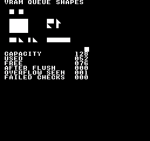
构建命令
New-Item -ItemType Directory -Force .\out | Out-Null
.\kitaqfc\kitaqfc.exe .\kitaqfc\lib\vram.c .\kitaq-docs\samples\api-examples\fc\vram_queue_shapes.c -I .\kitaqfc\lib -I .\kitaq-docs\samples -o .\out\vram_queue_shapes.nes --mapper=nrom --nes-chr=.\kitaq-docs\samples\api-examples\fc\vram_shapes.chr --no-cache --no-disasm实现与源码
kitaqfc/lib/vram.h:15
Discard queued commands and explicitly reset the overflow latch.
kitaqfc/lib/vram.c:17
void vram_clear_queue(void)
{
__vramq_clear();
__vramq_clear_overflow();
}vram_flush
用__vramq_commit提交内置队列，再用__nmi_wait等待NMI处理。默认处理程序会消耗就绪队列。应保持NMI及其处理程序有效；此调用不会把大传输拆分到多个VBlank中。
语法
void vram_flush(void);返回值
无（void）。
使用条件与限制
FC以固定128字节内置缓冲区中的编码命令字节数计量。单图块写入占4字节，填充记录占5字节，指针复制记录占6字节，均含元数据。就绪队列可能由NMI执行，应在提交前检查和构建，并协调生产与执行阶段。
应协调队列构建与执行阶段。不要在中断执行队列时追加、直接修改管理变量或意外覆盖保留的源数据。这些API不提供锁或双缓冲。容量指命令缓冲区，不是硬件VRAM空闲字节数。
PPU字节地址（0x0000–0x3FFF），不是CPU指针。目标必须可写；改写图案需要CHR RAM，不能写入CHR ROM。PPU映射与镜像规则照常适用。连续复制和填充应将PPUCTRL地址增量设为1。在安全的PPU写入时段执行，然后恢复所需的滚动状态；执行器会写入PPUADDR和PPUDATA，不会恢复滚动设置。
使用示例
vram_flush(); // One small write through the VBlank/NMI path.
__scroll_set(0,0);
if (vram_get_queue_used()!=0) failures++;这是一段调用示例。放入完整程序前，请满足所述初始化和缓冲区要求。
预期结果
完整程序演示延迟写入、队列容量管理和溢出恢复。7次绘制入队在GB上使用32个槽中的7个，在FC上使用128字节中的52字节。CAPACITY/USED/FREE分别显示032/007/025或128/052/076。AFTER FLUSH和FAILED CHECKS应为000，OVERFLOW SEEN应为001。程序故意向满队列追加以检查溢出标志；读取或执行不会清除该标志，清空队列才会。FC还检查未提交时直接执行不会改变待处理队列。
图像坐标以左上角为原点，单位为像素。应在(16,16)和(32,16)看到8×8实心正方形，在(16,32)看到32×24实心矩形，在(80,64)看到40×8横条。最后一次VBlank写入在(144,80)添加8×8正方形。被取消的写入位置(144,24)必须保持空白。DMG为白底黑图形，CGB为白底红、蓝、绿图形，FC为黑底红、蓝、绿图形。这些模拟器图像不代表实机验证。
使用三种自制8×8图案区分复制操作：图块1全部填满，2只填左侧四列，3为左对齐的三角形，从顶部1像素逐行加宽至底部8像素。(80,32)处的3×2图块块应为[1,2,3] / [3,0,2]，0表示空白。源数据首字节在入队后修改，因此左上角出现实心图块可证明保留的是源指针。(16,64)的复制显示[1,2,3]，(48,64)的tiles别名显示[2,3]。三者大小依次为24×16、24×8和16×8像素。
在 FC 上，上方两个正方形、三图案复制和最后通过 VBlank 写入的正方形为红色；32×24 矩形和双图案复制为蓝色；3×2 图块块和 40×8 横条为绿色。背景为黑色，测试会检查每个绘制像素的位置和颜色。
构建命令
New-Item -ItemType Directory -Force .\out | Out-Null
.\kitaqfc\kitaqfc.exe .\kitaqfc\lib\vram.c .\kitaq-docs\samples\api-examples\fc\vram_queue_shapes.c -I .\kitaqfc\lib -I .\kitaq-docs\samples -o .\out\vram_queue_shapes.nes --mapper=nrom --nes-chr=.\kitaq-docs\samples\api-examples\fc\vram_shapes.chr --no-cache --no-disasm实现与源码
kitaqfc/lib/vram.h:41
Commit queued records for consumption and wait for the NMI path.
kitaqfc/lib/vram.c:115
void vram_flush(void)
{
__vramq_commit();
__nmi_wait();
}vram_flush_now
立即调用__vramq_exec。只有__vramq_commit设置了就绪标志才会执行，未提交的队列保持不变。执行完成后清除长度与就绪标志，但保留溢出标志。此函数既不提交队列，也不等待安全的PPU写入时机。
语法
void vram_flush_now(void);返回值
无（void）。
使用条件与限制
FC以固定128字节内置缓冲区中的编码命令字节数计量。单图块写入占4字节，填充记录占5字节，指针复制记录占6字节，均含元数据。就绪队列可能由NMI执行，应在提交前检查和构建，并协调生产与执行阶段。
应协调队列构建与执行阶段。不要在中断执行队列时追加、直接修改管理变量或意外覆盖保留的源数据。这些API不提供锁或双缓冲。容量指命令缓冲区，不是硬件VRAM空闲字节数。
PPU字节地址（0x0000–0x3FFF），不是CPU指针。目标必须可写；改写图案需要CHR RAM，不能写入CHR ROM。PPU映射与镜像规则照常适用。连续复制和填充应将PPUCTRL地址增量设为1。在安全的PPU写入时段执行，然后恢复所需的滚动状态；执行器会写入PPUADDR和PPUDATA，不会恢复滚动设置。
使用示例
// Rendering is stopped here. On FC, commit readiness before direct execution.
__vramq_commit();
vram_flush_now();
after_flush=vram_get_queue_used();
if (after_flush!=0) failures++;这是一段调用示例。放入完整程序前，请满足所述初始化和缓冲区要求。
预期结果
完整程序演示延迟写入、队列容量管理和溢出恢复。7次绘制入队在GB上使用32个槽中的7个，在FC上使用128字节中的52字节。CAPACITY/USED/FREE分别显示032/007/025或128/052/076。AFTER FLUSH和FAILED CHECKS应为000，OVERFLOW SEEN应为001。程序故意向满队列追加以检查溢出标志；读取或执行不会清除该标志，清空队列才会。FC还检查未提交时直接执行不会改变待处理队列。
图像坐标以左上角为原点，单位为像素。应在(16,16)和(32,16)看到8×8实心正方形，在(16,32)看到32×24实心矩形，在(80,64)看到40×8横条。最后一次VBlank写入在(144,80)添加8×8正方形。被取消的写入位置(144,24)必须保持空白。DMG为白底黑图形，CGB为白底红、蓝、绿图形，FC为黑底红、蓝、绿图形。这些模拟器图像不代表实机验证。
使用三种自制8×8图案区分复制操作：图块1全部填满，2只填左侧四列，3为左对齐的三角形，从顶部1像素逐行加宽至底部8像素。(80,32)处的3×2图块块应为[1,2,3] / [3,0,2]，0表示空白。源数据首字节在入队后修改，因此左上角出现实心图块可证明保留的是源指针。(16,64)的复制显示[1,2,3]，(48,64)的tiles别名显示[2,3]。三者大小依次为24×16、24×8和16×8像素。
在 FC 上，上方两个正方形、三图案复制和最后通过 VBlank 写入的正方形为红色；32×24 矩形和双图案复制为蓝色；3×2 图块块和 40×8 横条为绿色。背景为黑色，测试会检查每个绘制像素的位置和颜色。
构建命令
New-Item -ItemType Directory -Force .\out | Out-Null
.\kitaqfc\kitaqfc.exe .\kitaqfc\lib\vram.c .\kitaq-docs\samples\api-examples\fc\vram_queue_shapes.c -I .\kitaqfc\lib -I .\kitaq-docs\samples -o .\out\vram_queue_shapes.nes --mapper=nrom --nes-chr=.\kitaq-docs\samples\api-examples\fc\vram_shapes.chr --no-cache --no-disasm实现与源码
kitaqfc/lib/vram.h:39
Invoke the queue executor directly. Its ready flag must already be set by commit, and the caller supplies appropriate PPU timing.
kitaqfc/lib/vram.c:109
void vram_flush_now(void)
{
__vramq_exec();
}vram_get_overflowed
读取队列溢出标志但不清除；它可能仍记录着较早的失败。
语法
u8 vram_get_overflowed(void);返回值
未记录溢出时为0；追加被拒绝后为1，直到显式重置。执行队列不会清除此标志。
使用条件与限制
FC以固定128字节内置缓冲区中的编码命令字节数计量。单图块写入占4字节，填充记录占5字节，指针复制记录占6字节，均含元数据。就绪队列可能由NMI执行，应在提交前检查和构建，并协调生产与执行阶段。
应协调队列构建与执行阶段。不要在中断执行队列时追加、直接修改管理变量或意外覆盖保留的源数据。这些API不提供锁或双缓冲。容量指命令缓冲区，不是硬件VRAM空闲字节数。
使用示例
overflow_seen=vram_get_overflowed();
if (overflow_seen!=1) failures++;
// Reading the latch again does not clear it.
if (vram_get_overflowed()!=1) failures++;这是一段调用示例。放入完整程序前，请满足所述初始化和缓冲区要求。
预期结果
完整程序演示延迟写入、队列容量管理和溢出恢复。7次绘制入队在GB上使用32个槽中的7个，在FC上使用128字节中的52字节。CAPACITY/USED/FREE分别显示032/007/025或128/052/076。AFTER FLUSH和FAILED CHECKS应为000，OVERFLOW SEEN应为001。程序故意向满队列追加以检查溢出标志；读取或执行不会清除该标志，清空队列才会。FC还检查未提交时直接执行不会改变待处理队列。
图像坐标以左上角为原点，单位为像素。应在(16,16)和(32,16)看到8×8实心正方形，在(16,32)看到32×24实心矩形，在(80,64)看到40×8横条。最后一次VBlank写入在(144,80)添加8×8正方形。被取消的写入位置(144,24)必须保持空白。DMG为白底黑图形，CGB为白底红、蓝、绿图形，FC为黑底红、蓝、绿图形。这些模拟器图像不代表实机验证。
使用三种自制8×8图案区分复制操作：图块1全部填满，2只填左侧四列，3为左对齐的三角形，从顶部1像素逐行加宽至底部8像素。(80,32)处的3×2图块块应为[1,2,3] / [3,0,2]，0表示空白。源数据首字节在入队后修改，因此左上角出现实心图块可证明保留的是源指针。(16,64)的复制显示[1,2,3]，(48,64)的tiles别名显示[2,3]。三者大小依次为24×16、24×8和16×8像素。
在 FC 上，上方两个正方形、三图案复制和最后通过 VBlank 写入的正方形为红色；32×24 矩形和双图案复制为蓝色；3×2 图块块和 40×8 横条为绿色。背景为黑色，测试会检查每个绘制像素的位置和颜色。
构建命令
New-Item -ItemType Directory -Force .\out | Out-Null
.\kitaqfc\kitaqfc.exe .\kitaqfc\lib\vram.c .\kitaq-docs\samples\api-examples\fc\vram_queue_shapes.c -I .\kitaqfc\lib -I .\kitaq-docs\samples -o .\out\vram_queue_shapes.nes --mapper=nrom --nes-chr=.\kitaq-docs\samples\api-examples\fc\vram_shapes.chr --no-cache --no-disasm实现与源码
kitaqfc/lib/vram.h:52
Read the overflow latch without clearing it.
kitaqfc/lib/vram.c:144
u8 vram_get_overflowed(void)
{
return __vramq_overflow();
}vram_get_queue_capacity
返回命令缓冲区的总容量，与当前使用量无关。
语法
u8 vram_get_queue_capacity(void);返回值
以此处说明的平台单位表示的无符号八位值。读取不会修改或执行队列。
使用条件与限制
FC以固定128字节内置缓冲区中的编码命令字节数计量。单图块写入占4字节，填充记录占5字节，指针复制记录占6字节，均含元数据。就绪队列可能由NMI执行，应在提交前检查和构建，并协调生产与执行阶段。
应协调队列构建与执行阶段。不要在中断执行队列时追加、直接修改管理变量或意外覆盖保留的源数据。这些API不提供锁或双缓冲。容量指命令缓冲区，不是硬件VRAM空闲字节数。
使用示例
capacity=vram_get_queue_capacity();这是一段调用示例。放入完整程序前，请满足所述初始化和缓冲区要求。
预期结果
完整程序演示延迟写入、队列容量管理和溢出恢复。7次绘制入队在GB上使用32个槽中的7个，在FC上使用128字节中的52字节。CAPACITY/USED/FREE分别显示032/007/025或128/052/076。AFTER FLUSH和FAILED CHECKS应为000，OVERFLOW SEEN应为001。程序故意向满队列追加以检查溢出标志；读取或执行不会清除该标志，清空队列才会。FC还检查未提交时直接执行不会改变待处理队列。
图像坐标以左上角为原点，单位为像素。应在(16,16)和(32,16)看到8×8实心正方形，在(16,32)看到32×24实心矩形，在(80,64)看到40×8横条。最后一次VBlank写入在(144,80)添加8×8正方形。被取消的写入位置(144,24)必须保持空白。DMG为白底黑图形，CGB为白底红、蓝、绿图形，FC为黑底红、蓝、绿图形。这些模拟器图像不代表实机验证。
使用三种自制8×8图案区分复制操作：图块1全部填满，2只填左侧四列，3为左对齐的三角形，从顶部1像素逐行加宽至底部8像素。(80,32)处的3×2图块块应为[1,2,3] / [3,0,2]，0表示空白。源数据首字节在入队后修改，因此左上角出现实心图块可证明保留的是源指针。(16,64)的复制显示[1,2,3]，(48,64)的tiles别名显示[2,3]。三者大小依次为24×16、24×8和16×8像素。
在 FC 上，上方两个正方形、三图案复制和最后通过 VBlank 写入的正方形为红色；32×24 矩形和双图案复制为蓝色；3×2 图块块和 40×8 横条为绿色。背景为黑色，测试会检查每个绘制像素的位置和颜色。
构建命令
New-Item -ItemType Directory -Force .\out | Out-Null
.\kitaqfc\kitaqfc.exe .\kitaqfc\lib\vram.c .\kitaq-docs\samples\api-examples\fc\vram_queue_shapes.c -I .\kitaqfc\lib -I .\kitaq-docs\samples -o .\out\vram_queue_shapes.nes --mapper=nrom --nes-chr=.\kitaq-docs\samples\api-examples\fc\vram_shapes.chr --no-cache --no-disasm实现与源码
kitaqfc/lib/vram.h:50
Return the queue's total capacity in bytes, independent of its current usage. This describes the command buffer, not free space in PPU VRAM.
kitaqfc/lib/vram.c:138
u8 vram_get_queue_capacity(void)
{
return __vramq_capacity();
}vram_get_queue_free
返回命令缓冲区总容量减去当前用量。追加前应确认下一条完整记录或整个批次能否放下；此查询不会预留空间。
语法
u8 vram_get_queue_free(void);返回值
以此处说明的平台单位表示的无符号八位值。读取不会修改或执行队列。
使用条件与限制
FC以固定128字节内置缓冲区中的编码命令字节数计量。单图块写入占4字节，填充记录占5字节，指针复制记录占6字节，均含元数据。就绪队列可能由NMI执行，应在提交前检查和构建，并协调生产与执行阶段。
应协调队列构建与执行阶段。不要在中断执行队列时追加、直接修改管理变量或意外覆盖保留的源数据。这些API不提供锁或双缓冲。容量指命令缓冲区，不是硬件VRAM空闲字节数。
使用示例
available=vram_get_queue_free();
if (used+available!=capacity) failures++;这是一段调用示例。放入完整程序前，请满足所述初始化和缓冲区要求。
预期结果
完整程序演示延迟写入、队列容量管理和溢出恢复。7次绘制入队在GB上使用32个槽中的7个，在FC上使用128字节中的52字节。CAPACITY/USED/FREE分别显示032/007/025或128/052/076。AFTER FLUSH和FAILED CHECKS应为000，OVERFLOW SEEN应为001。程序故意向满队列追加以检查溢出标志；读取或执行不会清除该标志，清空队列才会。FC还检查未提交时直接执行不会改变待处理队列。
图像坐标以左上角为原点，单位为像素。应在(16,16)和(32,16)看到8×8实心正方形，在(16,32)看到32×24实心矩形，在(80,64)看到40×8横条。最后一次VBlank写入在(144,80)添加8×8正方形。被取消的写入位置(144,24)必须保持空白。DMG为白底黑图形，CGB为白底红、蓝、绿图形，FC为黑底红、蓝、绿图形。这些模拟器图像不代表实机验证。
使用三种自制8×8图案区分复制操作：图块1全部填满，2只填左侧四列，3为左对齐的三角形，从顶部1像素逐行加宽至底部8像素。(80,32)处的3×2图块块应为[1,2,3] / [3,0,2]，0表示空白。源数据首字节在入队后修改，因此左上角出现实心图块可证明保留的是源指针。(16,64)的复制显示[1,2,3]，(48,64)的tiles别名显示[2,3]。三者大小依次为24×16、24×8和16×8像素。
在 FC 上，上方两个正方形、三图案复制和最后通过 VBlank 写入的正方形为红色；32×24 矩形和双图案复制为蓝色；3×2 图块块和 40×8 横条为绿色。背景为黑色，测试会检查每个绘制像素的位置和颜色。
构建命令
New-Item -ItemType Directory -Force .\out | Out-Null
.\kitaqfc\kitaqfc.exe .\kitaqfc\lib\vram.c .\kitaq-docs\samples\api-examples\fc\vram_queue_shapes.c -I .\kitaqfc\lib -I .\kitaq-docs\samples -o .\out\vram_queue_shapes.nes --mapper=nrom --nes-chr=.\kitaq-docs\samples\api-examples\fc\vram_shapes.chr --no-cache --no-disasm实现与源码
kitaqfc/lib/vram.h:47
Return the remaining command-buffer capacity in bytes. A command requires space for its complete encoded record, including its address and metadata. Read before committing: NMI may consume a committed queue asynchronously.
kitaqfc/lib/vram.c:131
u8 vram_get_queue_free(void)
{
return (u8)(__vramq_capacity() - __vramq_len());
}vram_get_queue_used
返回待执行命令当前占用的命令缓冲区用量，不是将写入显存的数据字节数。
语法
u8 vram_get_queue_used(void);返回值
以此处说明的平台单位表示的无符号八位值。读取不会修改或执行队列。
使用条件与限制
FC以固定128字节内置缓冲区中的编码命令字节数计量。单图块写入占4字节，填充记录占5字节，指针复制记录占6字节，均含元数据。就绪队列可能由NMI执行，应在提交前检查和构建，并协调生产与执行阶段。
应协调队列构建与执行阶段。不要在中断执行队列时追加、直接修改管理变量或意外覆盖保留的源数据。这些API不提供锁或双缓冲。容量指命令缓冲区，不是硬件VRAM空闲字节数。
使用示例
used=vram_get_queue_used();这是一段调用示例。放入完整程序前，请满足所述初始化和缓冲区要求。
预期结果
完整程序演示延迟写入、队列容量管理和溢出恢复。7次绘制入队在GB上使用32个槽中的7个，在FC上使用128字节中的52字节。CAPACITY/USED/FREE分别显示032/007/025或128/052/076。AFTER FLUSH和FAILED CHECKS应为000，OVERFLOW SEEN应为001。程序故意向满队列追加以检查溢出标志；读取或执行不会清除该标志，清空队列才会。FC还检查未提交时直接执行不会改变待处理队列。
图像坐标以左上角为原点，单位为像素。应在(16,16)和(32,16)看到8×8实心正方形，在(16,32)看到32×24实心矩形，在(80,64)看到40×8横条。最后一次VBlank写入在(144,80)添加8×8正方形。被取消的写入位置(144,24)必须保持空白。DMG为白底黑图形，CGB为白底红、蓝、绿图形，FC为黑底红、蓝、绿图形。这些模拟器图像不代表实机验证。
使用三种自制8×8图案区分复制操作：图块1全部填满，2只填左侧四列，3为左对齐的三角形，从顶部1像素逐行加宽至底部8像素。(80,32)处的3×2图块块应为[1,2,3] / [3,0,2]，0表示空白。源数据首字节在入队后修改，因此左上角出现实心图块可证明保留的是源指针。(16,64)的复制显示[1,2,3]，(48,64)的tiles别名显示[2,3]。三者大小依次为24×16、24×8和16×8像素。
在 FC 上，上方两个正方形、三图案复制和最后通过 VBlank 写入的正方形为红色；32×24 矩形和双图案复制为蓝色；3×2 图块块和 40×8 横条为绿色。背景为黑色，测试会检查每个绘制像素的位置和颜色。
构建命令
New-Item -ItemType Directory -Force .\out | Out-Null
.\kitaqfc\kitaqfc.exe .\kitaqfc\lib\vram.c .\kitaq-docs\samples\api-examples\fc\vram_queue_shapes.c -I .\kitaqfc\lib -I .\kitaq-docs\samples -o .\out\vram_queue_shapes.nes --mapper=nrom --nes-chr=.\kitaq-docs\samples\api-examples\fc\vram_shapes.chr --no-cache --no-disasm实现与源码
kitaqfc/lib/vram.h:43
Return the encoded queue length in bytes, not the number of commands.
kitaqfc/lib/vram.c:122
u8 vram_get_queue_used(void)
{
return __vramq_len();
}vram_init
将延后执行的VRAM写入命令队列初始化为空，并清除溢出标志。不会清屏、上传图块图形或分配硬件VRAM。
语法
void vram_init(void);返回值
无（void）。
使用条件与限制
FC以固定128字节内置缓冲区中的编码命令字节数计量。单图块写入占4字节，填充记录占5字节，指针复制记录占6字节，均含元数据。就绪队列可能由NMI执行，应在提交前检查和构建，并协调生产与执行阶段。
应协调队列构建与执行阶段。不要在中断执行队列时追加、直接修改管理变量或意外覆盖保留的源数据。这些API不提供锁或双缓冲。容量指命令缓冲区，不是硬件VRAM空闲字节数。
使用示例
vram_init();
if (vram_get_queue_used()!=0 || vram_get_overflowed()!=0) failures++;这是一段调用示例。放入完整程序前，请满足所述初始化和缓冲区要求。
预期结果
完整程序演示延迟写入、队列容量管理和溢出恢复。7次绘制入队在GB上使用32个槽中的7个，在FC上使用128字节中的52字节。CAPACITY/USED/FREE分别显示032/007/025或128/052/076。AFTER FLUSH和FAILED CHECKS应为000，OVERFLOW SEEN应为001。程序故意向满队列追加以检查溢出标志；读取或执行不会清除该标志，清空队列才会。FC还检查未提交时直接执行不会改变待处理队列。
图像坐标以左上角为原点，单位为像素。应在(16,16)和(32,16)看到8×8实心正方形，在(16,32)看到32×24实心矩形，在(80,64)看到40×8横条。最后一次VBlank写入在(144,80)添加8×8正方形。被取消的写入位置(144,24)必须保持空白。DMG为白底黑图形，CGB为白底红、蓝、绿图形，FC为黑底红、蓝、绿图形。这些模拟器图像不代表实机验证。
使用三种自制8×8图案区分复制操作：图块1全部填满，2只填左侧四列，3为左对齐的三角形，从顶部1像素逐行加宽至底部8像素。(80,32)处的3×2图块块应为[1,2,3] / [3,0,2]，0表示空白。源数据首字节在入队后修改，因此左上角出现实心图块可证明保留的是源指针。(16,64)的复制显示[1,2,3]，(48,64)的tiles别名显示[2,3]。三者大小依次为24×16、24×8和16×8像素。
在 FC 上，上方两个正方形、三图案复制和最后通过 VBlank 写入的正方形为红色；32×24 矩形和双图案复制为蓝色；3×2 图块块和 40×8 横条为绿色。背景为黑色，测试会检查每个绘制像素的位置和颜色。
构建命令
New-Item -ItemType Directory -Force .\out | Out-Null
.\kitaqfc\kitaqfc.exe .\kitaqfc\lib\vram.c .\kitaq-docs\samples\api-examples\fc\vram_queue_shapes.c -I .\kitaqfc\lib -I .\kitaq-docs\samples -o .\out\vram_queue_shapes.nes --mapper=nrom --nes-chr=.\kitaq-docs\samples\api-examples\fc\vram_shapes.chr --no-cache --no-disasm实现与源码
kitaqfc/lib/vram.h:13
Clear the intrinsic queue and its overflow latch.
kitaqfc/lib/vram.c:10
void vram_init(void)
{
__vramq_clear();
__vramq_clear_overflow();
}vram_queue_bg_block
将从src读取w × h个图块编号并写入base地图矩形的操作加入队列。源数据每行紧密排列w字节，目标行相隔32字节。命令保留源指针，因此执行前修改源数据会改变最终显示的块。
语法
u8 vram_queue_bg_block(u16 base, u8 x, u8 y, u8 w, u8 h, const u8* src);参数
base单图块和矩形命令使用编译时的
VRAM_NT_BASE，默认值为0x2000。块传输使用指定的名称表基址（0x2000、0x2400、0x2800或0x2C00），仍受名称表镜像影响。地址在入队时按每行32字节计算；应限制在32×30图块区域内，以免覆盖属性字节。x, y以8×8图块为单位的左上角坐标，不是像素坐标。不执行裁剪。应满足
x + w <= 32；GB的y + h <= 32，FC名称表图块区域的y + h <= 30。单个图块按宽高均为1计算。w, h以无符号八位值指定图块宽高。源块按行排列，共
w * h字节。零尺寸不产生可见写入，但队列存储用量遵循平台的记录规则。src指向可读字节的近指针，保留到执行时。整个执行期间必须保持数据有效且其内存或ROM银行可访问；不保存银行号或数据副本。非空传输需要有效源数据，不可使用生命周期已结束的局部数组。
返回值
尝试操作后溢出标志未设置则返回1，否则返回0。即使当前记录能放下，也可能因之前的溢出返回0。多记录操作可能只加入一部分且不回滚。零长度操作也可能因已有标志返回0。
使用条件与限制
FC以固定128字节内置缓冲区中的编码命令字节数计量。单图块写入占4字节，填充记录占5字节，指针复制记录占6字节，均含元数据。就绪队列可能由NMI执行，应在提交前检查和构建，并协调生产与执行阶段。
完整加入本次操作需要6 * h字节的命令缓冲区。公式计算的是包含管理信息的编码记录，不是传输数据量。多记录操作前应确认空闲容量足够。
单图块和矩形命令使用编译时的VRAM_NT_BASE，默认值为0x2000。块传输使用指定的名称表基址（0x2000、0x2400、0x2800或0x2C00），仍受名称表镜像影响。地址在入队时按每行32字节计算；应限制在32×30图块区域内，以免覆盖属性字节。
每行使用一条记录。高度0不添加记录；宽度0仍为每行添加记录，但不写入字节。行坐标转换为u8，因此y + row到256会回绕。不提供裁剪或部分入队回滚。
应协调队列构建与执行阶段。不要在中断执行队列时追加、直接修改管理变量或意外覆盖保留的源数据。这些API不提供锁或双缓冲。容量指命令缓冲区，不是硬件VRAM空闲字节数。
使用示例
check_result=vram_queue_bg_block(MAP_BASE,10,4,3,2,block);
block[0]=1; // The queued pointer sees this change when the queue executes.
if (check_result!=1) failures++;这是一段调用示例。放入完整程序前，请满足所述初始化和缓冲区要求。
预期结果
完整程序演示延迟写入、队列容量管理和溢出恢复。7次绘制入队在GB上使用32个槽中的7个，在FC上使用128字节中的52字节。CAPACITY/USED/FREE分别显示032/007/025或128/052/076。AFTER FLUSH和FAILED CHECKS应为000，OVERFLOW SEEN应为001。程序故意向满队列追加以检查溢出标志；读取或执行不会清除该标志，清空队列才会。FC还检查未提交时直接执行不会改变待处理队列。
图像坐标以左上角为原点，单位为像素。应在(16,16)和(32,16)看到8×8实心正方形，在(16,32)看到32×24实心矩形，在(80,64)看到40×8横条。最后一次VBlank写入在(144,80)添加8×8正方形。被取消的写入位置(144,24)必须保持空白。DMG为白底黑图形，CGB为白底红、蓝、绿图形，FC为黑底红、蓝、绿图形。这些模拟器图像不代表实机验证。
使用三种自制8×8图案区分复制操作：图块1全部填满，2只填左侧四列，3为左对齐的三角形，从顶部1像素逐行加宽至底部8像素。(80,32)处的3×2图块块应为[1,2,3] / [3,0,2]，0表示空白。源数据首字节在入队后修改，因此左上角出现实心图块可证明保留的是源指针。(16,64)的复制显示[1,2,3]，(48,64)的tiles别名显示[2,3]。三者大小依次为24×16、24×8和16×8像素。
在 FC 上，上方两个正方形、三图案复制和最后通过 VBlank 写入的正方形为红色；32×24 矩形和双图案复制为蓝色；3×2 图块块和 40×8 横条为绿色。背景为黑色，测试会检查每个绘制像素的位置和颜色。
构建命令
New-Item -ItemType Directory -Force .\out | Out-Null
.\kitaqfc\kitaqfc.exe .\kitaqfc\lib\vram.c .\kitaq-docs\samples\api-examples\fc\vram_queue_shapes.c -I .\kitaqfc\lib -I .\kitaq-docs\samples -o .\out\vram_queue_shapes.nes --mapper=nrom --nes-chr=.\kitaq-docs\samples\api-examples\fc\vram_shapes.chr --no-cache --no-disasm实现与源码
kitaqfc/lib/vram.h:27
Queue each tightly packed source row as a pointer-based copy record. Keep source storage and its ROM bank accessible until queue execution finishes; partial queuing remains possible on overflow.
kitaqfc/lib/vram.c:54
u8 vram_queue_bg_block(u16 base, u8 x, u8 y, u8 w, u8 h, const u8* src)
{
u8 row;
row = 0;
while (row < h) {
__vramq_copy(vram_xy_addr(base, x, (u8)(y + row)), src, w);
src = src + w;
row = (u8)(row + 1);
}
return (u8)(__vramq_overflow() == 0);
}vram_queue_bg_rect
将使用同一图块编号填充背景地图矩形的操作加入队列。左上角图块坐标为(x, y)，大小为w × h个图块。纯色图块会形成实心矩形，有图案的图块则会在每个格子重复图案。
语法
u8 vram_queue_bg_rect(u8 x, u8 y, u8 w, u8 h, u8 tile);参数
x, y以8×8图块为单位的左上角坐标，不是像素坐标。不执行裁剪。应满足
x + w <= 32；GB的y + h <= 32，FC名称表图块区域的y + h <= 30。单个图块按宽高均为1计算。w, h以无符号八位值指定图块宽高。源块按行排列，共
w * h字节。零尺寸不产生可见写入，但队列存储用量遵循平台的记录规则。tile0至255的图块地图字节。应另行加载对应图形并选择合适的图案表或寻址模式。图块编号不是指针或颜色值。
返回值
尝试操作后溢出标志未设置则返回1，否则返回0。即使当前记录能放下，也可能因之前的溢出返回0。多记录操作可能只加入一部分且不回滚。零长度操作也可能因已有标志返回0。
使用条件与限制
FC以固定128字节内置缓冲区中的编码命令字节数计量。单图块写入占4字节，填充记录占5字节，指针复制记录占6字节，均含元数据。就绪队列可能由NMI执行，应在提交前检查和构建，并协调生产与执行阶段。
完整加入本次操作需要5 * h字节的命令缓冲区。公式计算的是包含管理信息的编码记录，不是传输数据量。多记录操作前应确认空闲容量足够。
单图块和矩形命令使用编译时的VRAM_NT_BASE，默认值为0x2000。块传输使用指定的名称表基址（0x2000、0x2400、0x2800或0x2C00），仍受名称表镜像影响。地址在入队时按每行32字节计算；应限制在32×30图块区域内，以免覆盖属性字节。
每行使用一条记录。高度0不添加记录；宽度0仍为每行添加记录，但不写入字节。行坐标转换为u8，因此y + row到256会回绕。不提供裁剪或部分入队回滚。
应协调队列构建与执行阶段。不要在中断执行队列时追加、直接修改管理变量或意外覆盖保留的源数据。这些API不提供锁或双缓冲。容量指命令缓冲区，不是硬件VRAM空闲字节数。
使用示例
check_result=vram_queue_bg_rect(2,4,4,3,1); // A filled 32x24 rectangle at (16,32).
if (check_result!=1) failures++;这是一段调用示例。放入完整程序前，请满足所述初始化和缓冲区要求。
预期结果
完整程序演示延迟写入、队列容量管理和溢出恢复。7次绘制入队在GB上使用32个槽中的7个，在FC上使用128字节中的52字节。CAPACITY/USED/FREE分别显示032/007/025或128/052/076。AFTER FLUSH和FAILED CHECKS应为000，OVERFLOW SEEN应为001。程序故意向满队列追加以检查溢出标志；读取或执行不会清除该标志，清空队列才会。FC还检查未提交时直接执行不会改变待处理队列。
图像坐标以左上角为原点，单位为像素。应在(16,16)和(32,16)看到8×8实心正方形，在(16,32)看到32×24实心矩形，在(80,64)看到40×8横条。最后一次VBlank写入在(144,80)添加8×8正方形。被取消的写入位置(144,24)必须保持空白。DMG为白底黑图形，CGB为白底红、蓝、绿图形，FC为黑底红、蓝、绿图形。这些模拟器图像不代表实机验证。
使用三种自制8×8图案区分复制操作：图块1全部填满，2只填左侧四列，3为左对齐的三角形，从顶部1像素逐行加宽至底部8像素。(80,32)处的3×2图块块应为[1,2,3] / [3,0,2]，0表示空白。源数据首字节在入队后修改，因此左上角出现实心图块可证明保留的是源指针。(16,64)的复制显示[1,2,3]，(48,64)的tiles别名显示[2,3]。三者大小依次为24×16、24×8和16×8像素。
在 FC 上，上方两个正方形、三图案复制和最后通过 VBlank 写入的正方形为红色；32×24 矩形和双图案复制为蓝色；3×2 图块块和 40×8 横条为绿色。背景为黑色，测试会检查每个绘制像素的位置和颜色。
构建命令
New-Item -ItemType Directory -Force .\out | Out-Null
.\kitaqfc\kitaqfc.exe .\kitaqfc\lib\vram.c .\kitaq-docs\samples\api-examples\fc\vram_queue_shapes.c -I .\kitaqfc\lib -I .\kitaq-docs\samples -o .\out\vram_queue_shapes.nes --mapper=nrom --nes-chr=.\kitaq-docs\samples\api-examples\fc\vram_shapes.chr --no-cache --no-disasm实现与源码
kitaqfc/lib/vram.h:23
Queue one fill per row. This is not transactional: capacity exhaustion can leave earlier rows queued, and the loop continues attempting later rows.
kitaqfc/lib/vram.c:40
u8 vram_queue_bg_rect(u8 x, u8 y, u8 w, u8 h, u8 tile)
{
u8 row;
row = 0;
while (row < h) {
__vramq_fill(vram_xy_addr(VRAM_NT_BASE, x, (u8)(y + row)), tile, w);
row = (u8)(row + 1);
}
return (u8)(__vramq_overflow() == 0);
}vram_queue_bg_tile
将一个向背景(x, y)写入图块编号的命令加入队列。可见图块在队列执行时才改变。此命令写入地图项，不上传图块像素数据，也不改变调色板属性。
语法
u8 vram_queue_bg_tile(u8 x, u8 y, u8 tile);参数
x, y以8×8图块为单位的左上角坐标，不是像素坐标。不执行裁剪。应满足
x + w <= 32；GB的y + h <= 32，FC名称表图块区域的y + h <= 30。单个图块按宽高均为1计算。tile0至255的图块地图字节。应另行加载对应图形并选择合适的图案表或寻址模式。图块编号不是指针或颜色值。
返回值
尝试操作后溢出标志未设置则返回1，否则返回0。即使当前记录能放下，也可能因之前的溢出返回0。多记录操作可能只加入一部分且不回滚。零长度操作也可能因已有标志返回0。
使用条件与限制
FC以固定128字节内置缓冲区中的编码命令字节数计量。单图块写入占4字节，填充记录占5字节，指针复制记录占6字节，均含元数据。就绪队列可能由NMI执行，应在提交前检查和构建，并协调生产与执行阶段。
完整加入本次操作需要4字节的命令缓冲区。公式计算的是包含管理信息的编码记录，不是传输数据量。多记录操作前应确认空闲容量足够。
单图块和矩形命令使用编译时的VRAM_NT_BASE，默认值为0x2000。块传输使用指定的名称表基址（0x2000、0x2400、0x2800或0x2C00），仍受名称表镜像影响。地址在入队时按每行32字节计算；应限制在32×30图块区域内，以免覆盖属性字节。
应协调队列构建与执行阶段。不要在中断执行队列时追加、直接修改管理变量或意外覆盖保留的源数据。这些API不提供锁或双缓冲。容量指命令缓冲区，不是硬件VRAM空闲字节数。
使用示例
check_result=vram_queue_bg_tile(2,2,1); // A solid 8x8 tile at pixel (16,16).
if (check_result!=1) failures++;这是一段调用示例。放入完整程序前，请满足所述初始化和缓冲区要求。
预期结果
完整程序演示延迟写入、队列容量管理和溢出恢复。7次绘制入队在GB上使用32个槽中的7个，在FC上使用128字节中的52字节。CAPACITY/USED/FREE分别显示032/007/025或128/052/076。AFTER FLUSH和FAILED CHECKS应为000，OVERFLOW SEEN应为001。程序故意向满队列追加以检查溢出标志；读取或执行不会清除该标志，清空队列才会。FC还检查未提交时直接执行不会改变待处理队列。
图像坐标以左上角为原点，单位为像素。应在(16,16)和(32,16)看到8×8实心正方形，在(16,32)看到32×24实心矩形，在(80,64)看到40×8横条。最后一次VBlank写入在(144,80)添加8×8正方形。被取消的写入位置(144,24)必须保持空白。DMG为白底黑图形，CGB为白底红、蓝、绿图形，FC为黑底红、蓝、绿图形。这些模拟器图像不代表实机验证。
使用三种自制8×8图案区分复制操作：图块1全部填满，2只填左侧四列，3为左对齐的三角形，从顶部1像素逐行加宽至底部8像素。(80,32)处的3×2图块块应为[1,2,3] / [3,0,2]，0表示空白。源数据首字节在入队后修改，因此左上角出现实心图块可证明保留的是源指针。(16,64)的复制显示[1,2,3]，(48,64)的tiles别名显示[2,3]。三者大小依次为24×16、24×8和16×8像素。
在 FC 上，上方两个正方形、三图案复制和最后通过 VBlank 写入的正方形为红色；32×24 矩形和双图案复制为蓝色；3×2 图块块和 40×8 横条为绿色。背景为黑色，测试会检查每个绘制像素的位置和颜色。
构建命令
New-Item -ItemType Directory -Force .\out | Out-Null
.\kitaqfc\kitaqfc.exe .\kitaqfc\lib\vram.c .\kitaq-docs\samples\api-examples\fc\vram_queue_shapes.c -I .\kitaqfc\lib -I .\kitaq-docs\samples -o .\out\vram_queue_shapes.nes --mapper=nrom --nes-chr=.\kitaq-docs\samples\api-examples\fc\vram_shapes.chr --no-cache --no-disasm实现与源码
kitaqfc/lib/vram.h:18
Queue one tile at the default nametable base. Return the current overflow status, which may include a failure from an earlier operation.
kitaqfc/lib/vram.c:25
u8 vram_queue_bg_tile(u8 x, u8 y, u8 tile)
{
__vramq_put(vram_xy_addr(VRAM_NT_BASE, x, y), tile);
return (u8)(__vramq_overflow() == 0);
}vram_queue_memcpy
将从src向dst复制连续len字节的操作加入队列。源和目标均逐字节递增，不使用图块行跨度。可传输地图字节或可写图块图案字节，但不会转换格式或推算每个图块的字节数。
语法
u8 vram_queue_memcpy(u16 dst, const void* src, u16 len);参数
dstPPU字节地址（
0x0000–0x3FFF），不是CPU指针。目标必须可写；改写图案需要CHR RAM，不能写入CHR ROM。PPU映射与镜像规则照常适用。连续复制和填充应将PPUCTRL地址增量设为1。在安全的PPU写入时段执行，然后恢复所需的滚动状态；执行器会写入PPUADDR和PPUDATA，不会恢复滚动设置。src指向可读字节的近指针，保留到执行时。整个执行期间必须保持数据有效且其内存或ROM银行可访问；不保存银行号或数据副本。非空传输需要有效源数据，不可使用生命周期已结束的局部数组。
len连续字节数，范围0至65535，不是图块数。整个范围应位于有效源数据和可写目标区域内；API不检查边界，也不防止十六位地址回绕。
返回值
尝试操作后溢出标志未设置则返回1，否则返回0。即使当前记录能放下，也可能因之前的溢出返回0。多记录操作可能只加入一部分且不回滚。零长度操作也可能因已有标志返回0。
使用条件与限制
FC以固定128字节内置缓冲区中的编码命令字节数计量。单图块写入占4字节，填充记录占5字节，指针复制记录占6字节，均含元数据。就绪队列可能由NMI执行，应在提交前检查和构建，并协调生产与执行阶段。
完整加入本次操作需要6 * ceil(len / 127)字节的命令缓冲区。公式计算的是包含管理信息的编码记录，不是传输数据量。多记录操作前应确认空闲容量足够。
将len拆成最多127字节一段；ceil表示向上取整。len=0不添加记录。127字节分段是本库包装函数的处理，下层内置函数接受无符号8位计数。溢出后仍继续尝试添加，不撤销此前记录。
应协调队列构建与执行阶段。不要在中断执行队列时追加、直接修改管理变量或意外覆盖保留的源数据。这些API不提供锁或双缓冲。容量指命令缓冲区，不是硬件VRAM空闲字节数。
使用示例
check_result=vram_queue_memcpy(MAP_BASE+8*32+2,strip,3);
if (check_result!=1) failures++; // Copy three map bytes, not three tile patterns.这是一段调用示例。放入完整程序前，请满足所述初始化和缓冲区要求。
预期结果
完整程序演示延迟写入、队列容量管理和溢出恢复。7次绘制入队在GB上使用32个槽中的7个，在FC上使用128字节中的52字节。CAPACITY/USED/FREE分别显示032/007/025或128/052/076。AFTER FLUSH和FAILED CHECKS应为000，OVERFLOW SEEN应为001。程序故意向满队列追加以检查溢出标志；读取或执行不会清除该标志，清空队列才会。FC还检查未提交时直接执行不会改变待处理队列。
图像坐标以左上角为原点，单位为像素。应在(16,16)和(32,16)看到8×8实心正方形，在(16,32)看到32×24实心矩形，在(80,64)看到40×8横条。最后一次VBlank写入在(144,80)添加8×8正方形。被取消的写入位置(144,24)必须保持空白。DMG为白底黑图形，CGB为白底红、蓝、绿图形，FC为黑底红、蓝、绿图形。这些模拟器图像不代表实机验证。
使用三种自制8×8图案区分复制操作：图块1全部填满，2只填左侧四列，3为左对齐的三角形，从顶部1像素逐行加宽至底部8像素。(80,32)处的3×2图块块应为[1,2,3] / [3,0,2]，0表示空白。源数据首字节在入队后修改，因此左上角出现实心图块可证明保留的是源指针。(16,64)的复制显示[1,2,3]，(48,64)的tiles别名显示[2,3]。三者大小依次为24×16、24×8和16×8像素。
在 FC 上，上方两个正方形、三图案复制和最后通过 VBlank 写入的正方形为红色；32×24 矩形和双图案复制为蓝色；3×2 图块块和 40×8 横条为绿色。背景为黑色，测试会检查每个绘制像素的位置和颜色。
构建命令
New-Item -ItemType Directory -Force .\out | Out-Null
.\kitaqfc\kitaqfc.exe .\kitaqfc\lib\vram.c .\kitaq-docs\samples\api-examples\fc\vram_queue_shapes.c -I .\kitaqfc\lib -I .\kitaq-docs\samples -o .\out\vram_queue_shapes.nes --mapper=nrom --nes-chr=.\kitaq-docs\samples\api-examples\fc\vram_shapes.chr --no-cache --no-disasm实现与源码
kitaqfc/lib/vram.h:31
Split a byte transfer into copy records of at most 127 bytes. The runtime retains source pointers rather than copying payloads into the queue. Return the overflow latch state after all records have been attempted.
kitaqfc/lib/vram.c:70
u8 vram_queue_memcpy(u16 dst, const void* src, u16 len)
{
const u8* p;
u8 chunk;
p = (const u8*)src;
while (len != 0) {
if (len > 127) chunk = 127;
else chunk = (u8)len;
__vramq_copy(dst, p, chunk);
dst = (u16)(dst + chunk);
p = p + chunk;
len = (u16)(len - chunk);
}
return (u8)(__vramq_overflow() == 0);
}vram_queue_memset
将从dst开始的连续len字节填为单字节value的操作加入队列。重复的是一个字节，不是多字节图块图案，也不会自动插入32字节的地图行跨度。
语法
u8 vram_queue_memset(u16 dst, u8 value, u16 len);参数
dstPPU字节地址（
0x0000–0x3FFF），不是CPU指针。目标必须可写；改写图案需要CHR RAM，不能写入CHR ROM。PPU映射与镜像规则照常适用。连续复制和填充应将PPUCTRL地址增量设为1。在安全的PPU写入时段执行，然后恢复所需的滚动状态；执行器会写入PPUADDR和PPUDATA，不会恢复滚动设置。value重复写入0至255的单字节。显示含义取决于目标是图块索引、像素位平面还是其他字节结构。
len连续字节数，范围0至65535，不是图块数。整个范围应位于有效源数据和可写目标区域内；API不检查边界，也不防止十六位地址回绕。
返回值
尝试操作后溢出标志未设置则返回1，否则返回0。即使当前记录能放下，也可能因之前的溢出返回0。多记录操作可能只加入一部分且不回滚。零长度操作也可能因已有标志返回0。
使用条件与限制
FC以固定128字节内置缓冲区中的编码命令字节数计量。单图块写入占4字节，填充记录占5字节，指针复制记录占6字节，均含元数据。就绪队列可能由NMI执行，应在提交前检查和构建，并协调生产与执行阶段。
完整加入本次操作需要5 * ceil(len / 127)字节的命令缓冲区。公式计算的是包含管理信息的编码记录，不是传输数据量。多记录操作前应确认空闲容量足够。
将len拆成最多127字节一段；ceil表示向上取整。len=0不添加记录。127字节分段是本库包装函数的处理，下层内置函数接受无符号8位计数。溢出后仍继续尝试添加，不撤销此前记录。
应协调队列构建与执行阶段。不要在中断执行队列时追加、直接修改管理变量或意外覆盖保留的源数据。这些API不提供锁或双缓冲。容量指命令缓冲区，不是硬件VRAM空闲字节数。
使用示例
check_result=vram_queue_memset(MAP_BASE+8*32+10,1,5);
if (check_result!=1) failures++; // Five solid tiles form a 40x8 horizontal bar.这是一段调用示例。放入完整程序前，请满足所述初始化和缓冲区要求。
预期结果
完整程序演示延迟写入、队列容量管理和溢出恢复。7次绘制入队在GB上使用32个槽中的7个，在FC上使用128字节中的52字节。CAPACITY/USED/FREE分别显示032/007/025或128/052/076。AFTER FLUSH和FAILED CHECKS应为000，OVERFLOW SEEN应为001。程序故意向满队列追加以检查溢出标志；读取或执行不会清除该标志，清空队列才会。FC还检查未提交时直接执行不会改变待处理队列。
图像坐标以左上角为原点，单位为像素。应在(16,16)和(32,16)看到8×8实心正方形，在(16,32)看到32×24实心矩形，在(80,64)看到40×8横条。最后一次VBlank写入在(144,80)添加8×8正方形。被取消的写入位置(144,24)必须保持空白。DMG为白底黑图形，CGB为白底红、蓝、绿图形，FC为黑底红、蓝、绿图形。这些模拟器图像不代表实机验证。
使用三种自制8×8图案区分复制操作：图块1全部填满，2只填左侧四列，3为左对齐的三角形，从顶部1像素逐行加宽至底部8像素。(80,32)处的3×2图块块应为[1,2,3] / [3,0,2]，0表示空白。源数据首字节在入队后修改，因此左上角出现实心图块可证明保留的是源指针。(16,64)的复制显示[1,2,3]，(48,64)的tiles别名显示[2,3]。三者大小依次为24×16、24×8和16×8像素。
在 FC 上，上方两个正方形、三图案复制和最后通过 VBlank 写入的正方形为红色；32×24 矩形和双图案复制为蓝色；3×2 图块块和 40×8 横条为绿色。背景为黑色，测试会检查每个绘制像素的位置和颜色。
构建命令
New-Item -ItemType Directory -Force .\out | Out-Null
.\kitaqfc\kitaqfc.exe .\kitaqfc\lib\vram.c .\kitaq-docs\samples\api-examples\fc\vram_queue_shapes.c -I .\kitaqfc\lib -I .\kitaq-docs\samples -o .\out\vram_queue_shapes.nes --mapper=nrom --nes-chr=.\kitaq-docs\samples\api-examples\fc\vram_shapes.chr --no-cache --no-disasm实现与源码
kitaqfc/lib/vram.h:36
Queue fills of at most 127 bytes each. Overflow can leave a partially queued transfer; no rollback is performed.
kitaqfc/lib/vram.c:94
u8 vram_queue_memset(u16 dst, u8 value, u16 len)
{
u8 chunk;
while (len != 0) {
if (len > 127) chunk = 127;
else chunk = (u8)len;
__vramq_fill(dst, value, chunk);
dst = (u16)(dst + chunk);
len = (u16)(len - chunk);
}
return (u8)(__vramq_overflow() == 0);
}vram_queue_tile
vram_queue_tile用相同参数直接调用vram_queue_bg_tile并返回相同结果。这是写入单个背景地图项的简写名称，不是精灵操作或图块图形上传。
语法
u8 vram_queue_tile(u8 x, u8 y, u8 tile);参数
x, y以8×8图块为单位的左上角坐标，不是像素坐标。不执行裁剪。应满足
x + w <= 32；GB的y + h <= 32，FC名称表图块区域的y + h <= 30。单个图块按宽高均为1计算。tile0至255的图块地图字节。应另行加载对应图形并选择合适的图案表或寻址模式。图块编号不是指针或颜色值。
返回值
尝试操作后溢出标志未设置则返回1，否则返回0。即使当前记录能放下，也可能因之前的溢出返回0。多记录操作可能只加入一部分且不回滚。零长度操作也可能因已有标志返回0。
使用条件与限制
FC以固定128字节内置缓冲区中的编码命令字节数计量。单图块写入占4字节，填充记录占5字节，指针复制记录占6字节，均含元数据。就绪队列可能由NMI执行，应在提交前检查和构建，并协调生产与执行阶段。
完整加入本次操作需要4字节的命令缓冲区。公式计算的是包含管理信息的编码记录，不是传输数据量。多记录操作前应确认空闲容量足够。
单图块和矩形命令使用编译时的VRAM_NT_BASE，默认值为0x2000。块传输使用指定的名称表基址（0x2000、0x2400、0x2800或0x2C00），仍受名称表镜像影响。地址在入队时按每行32字节计算；应限制在32×30图块区域内，以免覆盖属性字节。
应协调队列构建与执行阶段。不要在中断执行队列时追加、直接修改管理变量或意外覆盖保留的源数据。这些API不提供锁或双缓冲。容量指命令缓冲区，不是硬件VRAM空闲字节数。
使用示例
check_result=vram_queue_tile(4,2,1); // The short alias draws at pixel (32,16).
if (check_result!=1) failures++;这是一段调用示例。放入完整程序前，请满足所述初始化和缓冲区要求。
预期结果
完整程序演示延迟写入、队列容量管理和溢出恢复。7次绘制入队在GB上使用32个槽中的7个，在FC上使用128字节中的52字节。CAPACITY/USED/FREE分别显示032/007/025或128/052/076。AFTER FLUSH和FAILED CHECKS应为000，OVERFLOW SEEN应为001。程序故意向满队列追加以检查溢出标志；读取或执行不会清除该标志，清空队列才会。FC还检查未提交时直接执行不会改变待处理队列。
图像坐标以左上角为原点，单位为像素。应在(16,16)和(32,16)看到8×8实心正方形，在(16,32)看到32×24实心矩形，在(80,64)看到40×8横条。最后一次VBlank写入在(144,80)添加8×8正方形。被取消的写入位置(144,24)必须保持空白。DMG为白底黑图形，CGB为白底红、蓝、绿图形，FC为黑底红、蓝、绿图形。这些模拟器图像不代表实机验证。
使用三种自制8×8图案区分复制操作：图块1全部填满，2只填左侧四列，3为左对齐的三角形，从顶部1像素逐行加宽至底部8像素。(80,32)处的3×2图块块应为[1,2,3] / [3,0,2]，0表示空白。源数据首字节在入队后修改，因此左上角出现实心图块可证明保留的是源指针。(16,64)的复制显示[1,2,3]，(48,64)的tiles别名显示[2,3]。三者大小依次为24×16、24×8和16×8像素。
在 FC 上，上方两个正方形、三图案复制和最后通过 VBlank 写入的正方形为红色；32×24 矩形和双图案复制为蓝色；3×2 图块块和 40×8 横条为绿色。背景为黑色，测试会检查每个绘制像素的位置和颜色。
构建命令
New-Item -ItemType Directory -Force .\out | Out-Null
.\kitaqfc\kitaqfc.exe .\kitaqfc\lib\vram.c .\kitaq-docs\samples\api-examples\fc\vram_queue_shapes.c -I .\kitaqfc\lib -I .\kitaq-docs\samples -o .\out\vram_queue_shapes.nes --mapper=nrom --nes-chr=.\kitaq-docs\samples\api-examples\fc\vram_shapes.chr --no-cache --no-disasm实现与源码
kitaqfc/lib/vram.h:20
Alias the queued background-tile operation.
kitaqfc/lib/vram.c:32
u8 vram_queue_tile(u8 x, u8 y, u8 tile)
{
return vram_queue_bg_tile(x, y, tile);
}vram_queue_tiles
vram_queue_tiles直接调用vram_queue_memcpy。len仍是字节数，不是图块数。保留的源指针、队列记录、返回值和执行时机均相同。
语法
u8 vram_queue_tiles(u16 dst, const void* src, u16 len);参数
dstPPU字节地址（
0x0000–0x3FFF），不是CPU指针。目标必须可写；改写图案需要CHR RAM，不能写入CHR ROM。PPU映射与镜像规则照常适用。连续复制和填充应将PPUCTRL地址增量设为1。在安全的PPU写入时段执行，然后恢复所需的滚动状态；执行器会写入PPUADDR和PPUDATA，不会恢复滚动设置。src指向可读字节的近指针，保留到执行时。整个执行期间必须保持数据有效且其内存或ROM银行可访问；不保存银行号或数据副本。非空传输需要有效源数据，不可使用生命周期已结束的局部数组。
len连续字节数，范围0至65535，不是图块数。整个范围应位于有效源数据和可写目标区域内；API不检查边界，也不防止十六位地址回绕。
返回值
尝试操作后溢出标志未设置则返回1，否则返回0。即使当前记录能放下，也可能因之前的溢出返回0。多记录操作可能只加入一部分且不回滚。零长度操作也可能因已有标志返回0。
使用条件与限制
FC以固定128字节内置缓冲区中的编码命令字节数计量。单图块写入占4字节，填充记录占5字节，指针复制记录占6字节，均含元数据。就绪队列可能由NMI执行，应在提交前检查和构建，并协调生产与执行阶段。
完整加入本次操作需要6 * ceil(len / 127)字节的命令缓冲区。公式计算的是包含管理信息的编码记录，不是传输数据量。多记录操作前应确认空闲容量足够。
将len拆成最多127字节一段；ceil表示向上取整。len=0不添加记录。127字节分段是本库包装函数的处理，下层内置函数接受无符号8位计数。溢出后仍继续尝试添加，不撤销此前记录。
应协调队列构建与执行阶段。不要在中断执行队列时追加、直接修改管理变量或意外覆盖保留的源数据。这些API不提供锁或双缓冲。容量指命令缓冲区，不是硬件VRAM空闲字节数。
使用示例
check_result=vram_queue_tiles(MAP_BASE+8*32+6,strip+1,2);
if (check_result!=1) failures++; // This alias also measures length in bytes.这是一段调用示例。放入完整程序前，请满足所述初始化和缓冲区要求。
预期结果
完整程序演示延迟写入、队列容量管理和溢出恢复。7次绘制入队在GB上使用32个槽中的7个，在FC上使用128字节中的52字节。CAPACITY/USED/FREE分别显示032/007/025或128/052/076。AFTER FLUSH和FAILED CHECKS应为000，OVERFLOW SEEN应为001。程序故意向满队列追加以检查溢出标志；读取或执行不会清除该标志，清空队列才会。FC还检查未提交时直接执行不会改变待处理队列。
图像坐标以左上角为原点，单位为像素。应在(16,16)和(32,16)看到8×8实心正方形，在(16,32)看到32×24实心矩形，在(80,64)看到40×8横条。最后一次VBlank写入在(144,80)添加8×8正方形。被取消的写入位置(144,24)必须保持空白。DMG为白底黑图形，CGB为白底红、蓝、绿图形，FC为黑底红、蓝、绿图形。这些模拟器图像不代表实机验证。
使用三种自制8×8图案区分复制操作：图块1全部填满，2只填左侧四列，3为左对齐的三角形，从顶部1像素逐行加宽至底部8像素。(80,32)处的3×2图块块应为[1,2,3] / [3,0,2]，0表示空白。源数据首字节在入队后修改，因此左上角出现实心图块可证明保留的是源指针。(16,64)的复制显示[1,2,3]，(48,64)的tiles别名显示[2,3]。三者大小依次为24×16、24×8和16×8像素。
在 FC 上，上方两个正方形、三图案复制和最后通过 VBlank 写入的正方形为红色；32×24 矩形和双图案复制为蓝色；3×2 图块块和 40×8 横条为绿色。背景为黑色，测试会检查每个绘制像素的位置和颜色。
构建命令
New-Item -ItemType Directory -Force .\out | Out-Null
.\kitaqfc\kitaqfc.exe .\kitaqfc\lib\vram.c .\kitaq-docs\samples\api-examples\fc\vram_queue_shapes.c -I .\kitaqfc\lib -I .\kitaq-docs\samples -o .\out\vram_queue_shapes.nes --mapper=nrom --nes-chr=.\kitaq-docs\samples\api-examples\fc\vram_shapes.chr --no-cache --no-disasm实现与源码
kitaqfc/lib/vram.h:33
Alias the byte-copy queue helper; len remains a byte count, not a tile count.
kitaqfc/lib/vram.c:87
u8 vram_queue_tiles(u16 dst, const void* src, u16 len)
{
return vram_queue_memcpy(dst, src, len);
}vrc6_sound.h — VRC6 扩展音源
nes_vrc6_pulse1_off已找到实现
执行参数指定的操作。模块：VRC6 扩展音源。确切的单位、结束标记和返回条件，请查阅下方声明、原始说明及实现。
void nes_vrc6_pulse1_off(void);Disable pulse 1 by clearing its high timer/enable register.
参数传递示例
nes_vrc6_pulse1_off();调用代码需准备对象初始化、缓冲区大小、ROM bank 与设备状态。本函数片段尚未单独执行验证。
需加入的实现： kitaqfc/lib/vrc6_sound.c:43。还须加入它调用的其他函数的实现文件。
查看当前实现
void nes_vrc6_pulse1_off(void)
{
VRC6_P1_HI = 0x00;
}声明或标识符来源：kitaqfc/lib/vrc6_sound.h:22
nes_vrc6_pulse1_set已找到实现
设置数值或运行条件。模块：VRC6 扩展音源。确切的单位、结束标记和返回条件，请查阅下方声明、原始说明及实现。
void nes_vrc6_pulse1_set(u8 control, u16 period);参数，从左到右： u8 control, u16 period。数组和指针需要足够空间，并在处理结束前保持有效。
Write pulse-1 control and the low 12 timer bits, then enable the channel.
参数传递示例
void example_nes_vrc6_pulse1_set(u8 control, u16 period) {
nes_vrc6_pulse1_set(control, period);
}调用代码需准备对象初始化、缓冲区大小、ROM bank 与设备状态。本函数片段尚未单独执行验证。
需加入的实现： kitaqfc/lib/vrc6_sound.c:27。还须加入它调用的其他函数的实现文件。
查看当前实现
void nes_vrc6_pulse1_set(u8 control, u16 period)
{
VRC6_P1_CTRL = control;
VRC6_P1_LO = (u8)period;
VRC6_P1_HI = (u8)(0x80 | ((period >> 8) & 0x0F));
}声明或标识符来源：kitaqfc/lib/vrc6_sound.h:18
nes_vrc6_pulse2_off已找到实现
执行参数指定的操作。模块：VRC6 扩展音源。确切的单位、结束标记和返回条件，请查阅下方声明、原始说明及实现。
void nes_vrc6_pulse2_off(void);Disable pulse 2 by clearing its high timer/enable register.
参数传递示例
nes_vrc6_pulse2_off();调用代码需准备对象初始化、缓冲区大小、ROM bank 与设备状态。本函数片段尚未单独执行验证。
需加入的实现： kitaqfc/lib/vrc6_sound.c:49。还须加入它调用的其他函数的实现文件。
查看当前实现
void nes_vrc6_pulse2_off(void)
{
VRC6_P2_HI = 0x00;
}声明或标识符来源：kitaqfc/lib/vrc6_sound.h:24
nes_vrc6_pulse2_set已找到实现
设置数值或运行条件。模块：VRC6 扩展音源。确切的单位、结束标记和返回条件，请查阅下方声明、原始说明及实现。
void nes_vrc6_pulse2_set(u8 control, u16 period);参数，从左到右： u8 control, u16 period。数组和指针需要足够空间，并在处理结束前保持有效。
Write pulse-2 control and the low 12 timer bits, then enable the channel.
参数传递示例
void example_nes_vrc6_pulse2_set(u8 control, u16 period) {
nes_vrc6_pulse2_set(control, period);
}调用代码需准备对象初始化、缓冲区大小、ROM bank 与设备状态。本函数片段尚未单独执行验证。
需加入的实现： kitaqfc/lib/vrc6_sound.c:35。还须加入它调用的其他函数的实现文件。
查看当前实现
void nes_vrc6_pulse2_set(u8 control, u16 period)
{
VRC6_P2_CTRL = control;
VRC6_P2_LO = (u8)period;
VRC6_P2_HI = (u8)(0x80 | ((period >> 8) & 0x0F));
}声明或标识符来源：kitaqfc/lib/vrc6_sound.h:20
nes_vrc6_saw_off已找到实现
执行参数指定的操作。模块：VRC6 扩展音源。确切的单位、结束标记和返回条件，请查阅下方声明、原始说明及实现。
void nes_vrc6_saw_off(void);Disable the saw channel by clearing its high timer/enable register.
参数传递示例
nes_vrc6_saw_off();调用代码需准备对象初始化、缓冲区大小、ROM bank 与设备状态。本函数片段尚未单独执行验证。
需加入的实现： kitaqfc/lib/vrc6_sound.c:63。还须加入它调用的其他函数的实现文件。
查看当前实现
void nes_vrc6_saw_off(void)
{
VRC6_SAW_HI = 0x00;
}声明或标识符来源：kitaqfc/lib/vrc6_sound.h:28
nes_vrc6_saw_set已找到实现
设置数值或运行条件。模块：VRC6 扩展音源。确切的单位、结束标记和返回条件，请查阅下方声明、原始说明及实现。
void nes_vrc6_saw_set(u8 rate, u16 period);参数，从左到右： u8 rate, u16 period。数组和指针需要足够空间，并在处理结束前保持有效。
Mask the saw accumulation rate to six bits, load a 12-bit timer and enable output.
参数传递示例
void example_nes_vrc6_saw_set(u8 rate, u16 period) {
nes_vrc6_saw_set(rate, period);
}调用代码需准备对象初始化、缓冲区大小、ROM bank 与设备状态。本函数片段尚未单独执行验证。
需加入的实现： kitaqfc/lib/vrc6_sound.c:55。还须加入它调用的其他函数的实现文件。
查看当前实现
void nes_vrc6_saw_set(u8 rate, u16 period)
{
VRC6_SAW_RATE = (u8)(rate & 0x3F);
VRC6_SAW_LO = (u8)period;
VRC6_SAW_HI = (u8)(0x80 | ((period >> 8) & 0x0F));
}声明或标识符来源：kitaqfc/lib/vrc6_sound.h:26
nes_vrc6_silence_all已找到实现
执行参数指定的操作。模块：VRC6 扩展音源。确切的单位、结束标记和返回条件，请查阅下方声明、原始说明及实现。
void nes_vrc6_silence_all(void);Clear channel-enable/high-timer registers and output controls for all VRC6 voices. Requires the VRC6 register layout used by this module. No mapper setup or global frequency-control write is included.
参数传递示例
nes_vrc6_silence_all();调用代码需准备对象初始化、缓冲区大小、ROM bank 与设备状态。本函数片段尚未单独执行验证。
需加入的实现： kitaqfc/lib/vrc6_sound.c:16。还须加入它调用的其他函数的实现文件。
查看当前实现
void nes_vrc6_silence_all(void)
{
VRC6_P1_HI = 0x00;
VRC6_P2_HI = 0x00;
VRC6_SAW_HI = 0x00;
VRC6_P1_CTRL = 0x00;
VRC6_P2_CTRL = 0x00;
VRC6_SAW_RATE = 0x00;
}声明或标识符来源：kitaqfc/lib/vrc6_sound.h:16
vrc7_sound.h — VRC7 FM 音源
nes_vrc7_channel_set已找到实现
设置数值或运行条件。模块：VRC7 FM 音源。确切的单位、结束标记和返回条件，请查阅下方声明、原始说明及实现。
void nes_vrc7_channel_set(u8 channel, u8 instrument, u8 volume, u16 fnum, u8 block, u8 key_flags);参数，从左到右： u8 channel, u8 instrument, u8 volume, u16 fnum, u8 block, u8 key_flags。数组和指针需要足够空间，并在处理结束前保持有效。
Validate channel 0..5, then pack a 9-bit frequency, 3-bit block, key flags, instrument and volume nibbles into its registers. Volume is the raw hardware attenuation field, not a linear loudness value.
参数传递示例
void example_nes_vrc7_channel_set(u8 channel, u8 instrument, u8 volume, u16 fnum, u8 block, u8 key_flags) {
nes_vrc7_channel_set(channel, instrument, volume, fnum, block, key_flags);
}调用代码需准备对象初始化、缓冲区大小、ROM bank 与设备状态。本函数片段尚未单独执行验证。
需加入的实现： kitaqfc/lib/vrc7_sound.c:32。还须加入它调用的其他函数的实现文件。
查看当前实现
void nes_vrc7_channel_set(u8 channel, u8 instrument, u8 volume, u16 fnum, u8 block, u8 key_flags)
{
u8 reg;
u8 hi;
if (channel >= 6) return;
reg = channel;
hi = (u8)(((fnum >> 8) & 0x01) | ((block & 0x07) << 1) | (key_flags & 0x30));
nes_vrc7_write((u8)(0x10 + reg), (u8)fnum);
// Key/frequency-high is written before instrument/attenuation; this sequence is not an atomic note update.
nes_vrc7_write((u8)(0x20 + reg), hi);
nes_vrc7_write((u8)(0x30 + reg), (u8)(((instrument & 0x0F) << 4) | (volume & 0x0F)));
}声明或标识符来源：kitaqfc/lib/vrc7_sound.h:18
nes_vrc7_key_off已找到实现
执行参数指定的操作。模块：VRC7 FM 音源。确切的单位、结束标记和返回条件，请查阅下方声明、原始说明及实现。
void nes_vrc7_key_off(u8 channel);参数，从左到右： u8 channel。数组和指针需要足够空间，并在处理结束前保持有效。
Clear the channel's entire frequency-high/block/key register, not just the key-on bit. A later note must restore frequency and block settings.
调用示例：需要外围代码的片段
i = 0;
while (i < 6) {
nes_vrc7_key_off(i);
nes_vrc7_write((u8)(0x30 + i), 0x0F);
i = (u8)(i + 1);
}
}来源：kitaqfc/lib/vrc7_sound.c:59
需加入的实现： kitaqfc/lib/vrc7_sound.c:47。还须加入它调用的其他函数的实现文件。
查看当前实现
void nes_vrc7_key_off(u8 channel)
{
if (channel >= 6) return;
nes_vrc7_write((u8)(0x20 + channel), 0x00);
}声明或标识符来源：kitaqfc/lib/vrc7_sound.h:21
nes_vrc7_set_user_patch已找到实现
设置数值或运行条件。模块：VRC7 FM 音源。确切的单位、结束标记和返回条件，请查阅下方声明、原始说明及实现。
void nes_vrc7_set_user_patch(const u8* patch8);参数，从左到右： const u8* patch8。数组和指针需要足够空间，并在处理结束前保持有效。
Copy eight caller-supplied patch bytes into user-instrument registers 0..7.
参数传递示例
void example_nes_vrc7_set_user_patch(const u8* patch8) {
nes_vrc7_set_user_patch(patch8);
}调用代码需准备对象初始化、缓冲区大小、ROM bank 与设备状态。本函数片段尚未单独执行验证。
需加入的实现： kitaqfc/lib/vrc7_sound.c:16。还须加入它调用的其他函数的实现文件。
查看当前实现
void nes_vrc7_set_user_patch(const u8* patch8)
{
const u8* p;
u8 i;
p = patch8;
i = 0;
while (i < 8) {
nes_vrc7_write(i, *p);
p = p + 1;
i = (u8)(i + 1);
}
}声明或标识符来源：kitaqfc/lib/vrc7_sound.h:14
nes_vrc7_silence_all已找到实现
执行参数指定的操作。模块：VRC7 FM 音源。确切的单位、结束标记和返回条件，请查阅下方声明、原始说明及实现。
void nes_vrc7_silence_all(void);Key off all six voices and set instrument zero with maximum attenuation.
参数传递示例
nes_vrc7_silence_all();调用代码需准备对象初始化、缓冲区大小、ROM bank 与设备状态。本函数片段尚未单独执行验证。
需加入的实现： kitaqfc/lib/vrc7_sound.c:54。还须加入它调用的其他函数的实现文件。
查看当前实现
void nes_vrc7_silence_all(void)
{
u8 i;
i = 0;
while (i < 6) {
nes_vrc7_key_off(i);
nes_vrc7_write((u8)(0x30 + i), 0x0F);
i = (u8)(i + 1);
}
}声明或标识符来源：kitaqfc/lib/vrc7_sound.h:23
nes_vrc7_write已找到实现
写入数值。模块：VRC7 FM 音源。确切的单位、结束标记和返回条件，请查阅下方声明、原始说明及实现。
void nes_vrc7_write(u8 reg, u8 value);参数，从左到右： u8 reg, u8 value。数组和指针需要足够空间，并在处理结束前保持有效。
Write register selection followed immediately by data. No explicit device settling delay or cartridge detection is inserted by this wrapper. The caller must arrange device timing and serialize register/data pairs against interrupt writers.
调用示例：需要外围代码的片段
i = 0;
while (i < 8) {
nes_vrc7_write(i, *p);
p = p + 1;
i = (u8)(i + 1);
}
}来源：kitaqfc/lib/vrc7_sound.c:23
需加入的实现： kitaqfc/lib/vrc7_sound.c:8。还须加入它调用的其他函数的实现文件。
查看当前实现
void nes_vrc7_write(u8 reg, u8 value)
{
VRC7_ADDR = reg;
VRC7_DATA = value;
}声明或标识符来源：kitaqfc/lib/vrc7_sound.h:12
结构体、常量与完整头文件
非函数宏、结构体、数组上限、枚举和别名请查看这些头文件。内容按收集的源码原样呈现，包含原始注释。
actor.h — 游戏 actor 数组
/*
* Optional declarations for the phase 11 actor helper.
*/
// Callers initialize size and metadata and pass non-null actors.
// attr/flags are retained fields; this helper does not interpret or apply them.
struct NesActor {
unsigned short world_x;
unsigned short world_y;
unsigned char width;
unsigned char height;
unsigned char screen_x;
unsigned char screen_y;
unsigned char attr;
unsigned char flags;
};
// Set the actor's 16-bit world position without updating cached screen coordinates.
void nes_actor_set_world(struct NesActor* actor, unsigned short x, unsigned short y);
// Subtract the camera and retain only the low coordinate bytes. This performs
// wrapping projection, not clipping; callers must hide actors outside the viewport.
void nes_actor_update_screen(struct NesActor* actor, unsigned short camera_x, unsigned short camera_y);
// Draw the byte-stream metasprite at cached screen coordinates and return its
// next OAM index. Actor attr/flags are not applied by this wrapper.
unsigned char nes_actor_draw_metasprite(struct NesActor* actor, unsigned char oam_index, unsigned char* metasprite);
// Test overlap in world coordinates with exclusive right/bottom edges. Keep
// position-plus-size sums within u16; touching edges are not collisions.
// Require positive widths and heights; zero extents are not rejected before the edge tests.
unsigned char nes_actor_collide(struct NesActor* a, struct NesActor* b);kitaqfc/lib/actor.h
asset.h — 素材 ID 与数据描述符
#ifndef ASSET_H
#define ASSET_H
#include "core.h"
#include "bank.h"
#define ASSET_TYPE_RAW ((u8)0)
#define ASSET_TYPE_TILES ((u8)1)
#define ASSET_TYPE_MAP ((u8)2)
#define ASSET_TYPE_SONG ((u8)3)
// The descriptor table bank and each payload bank are independent.
// ptr is a CPU-visible address and len counts bytes; type is a tag, not a decoder selection.
typedef __packed struct AssetDesc {
u8 type;
u8 bank;
const u8* ptr;
u16 len;
} AssetDesc;
// Retain a bank-qualified descriptor table; the caller keeps its storage valid.
void asset_set_table(u8 bank, const AssetDesc* table, u8 count);
// Copy a descriptor from its ROM bank into caller storage. Null output or an
// out-of-range ID returns zero without reading the table.
u8 asset_get(u8 asset_id, AssetDesc* out_desc);
// Copy the smaller of the asset length and max_len using a bank-aware transfer.
// Return one for a valid ID even when the payload is truncated.
u8 asset_load_raw(u8 asset_id, void* dst, u16 max_len);
// Switch to the asset bank, upload tile/raw data in chunks of at most 128 bytes,
// then restore the bank recorded by this library. The caller supplies safe PPU timing.
u8 asset_load_tiles(u8 asset_id, u16 vram_dst);
// Return the asset bank or zero on lookup failure; bank zero may also be valid.
u8 asset_get_bank(u8 asset_id);
// Return the stored address without switching banks. Pair it with the descriptor
// bank before reading banked ROM; a failed lookup returns null.
const u8* asset_get_ptr(u8 asset_id);
// Return the descriptor byte length, or zero for an invalid ID.
u16 asset_get_len(u8 asset_id);
#endifkitaqfc/lib/asset.h
attribute.h — 名称表属性
/*
* KITAQFC phase15 attribute patch helpers.
*/
// Copy 64 already-packed attribute bytes into shadow storage. This does not
// convert one palette ID per tile into NES attribute bitfields.
// The source must expose all 64 packed bytes and stay readable for the duration of this copy.
void nes_attr_shadow_build_from_palette_map(unsigned char* src64);
// Apply a palette to every two-by-two tile quadrant touched by the rectangle.
// Width/height must be nonzero and the rectangle must stay within the nametable;
// there is no clipping before the byte-sized endpoint arithmetic.
void nes_attr_shadow_fill_rect(unsigned char tile_x, unsigned char tile_y, unsigned char width, unsigned char height, unsigned char pal_index);
// Queue shadow-byte rows using the half-tile coordinates computed below.
// These indices are used directly as byte indices, unlike the four-tile byte
// indexing in nes_attr_shadow_set_quad; this is not a general tile-to-attribute
// rectangle conversion. Keep each row within the eight-byte local buffer and
// all indices within the 64-byte shadow. Failure may leave earlier rows queued.
unsigned char nes_attr_queue_rect(unsigned short nt_base, unsigned char tile_x, unsigned char tile_y, unsigned char width, unsigned char height);kitaqfc/lib/attribute.h
audio.h — 音乐、音效与音频控制
#ifndef AUDIO_H
#define AUDIO_H
#include "core.h"
// Channel bits form a complete replacement mask for nes_apu_channel_enable.
#define NES_APU_ENABLE_PULSE1 0x01
#define NES_APU_ENABLE_PULSE2 0x02
#define NES_APU_ENABLE_TRIANGLE 0x04
#define NES_APU_ENABLE_NOISE 0x08
#define NES_APU_ENABLE_DMC 0x10
// Disable frame IRQs, enable the four tonal/noise channels and install quiet
// control defaults. DMC remains disabled.
void nes_apu_init(void);
// Replace all five channel-enable bits in APU_STATUS; this is not an additive enable.
void nes_apu_channel_enable(u8 mask);
// Disable every channel and clear volume/DMC output settings used by this helper.
void nes_apu_silence_all(void);
// Enable only pulse 1, disable its sweep and load control, 11-bit timer and
// length-table index. Starting this effect disables the other APU channels.
void nes_sfx_square1(u8 duty_volume, u16 period, u8 length_index);
// Enable only pulse 2 and load its control/timer/length fields, disabling other channels.
void nes_sfx_square2(u8 duty_volume, u16 period, u8 length_index);
// Enable only triangle and load linear-counter, timer and length fields.
void nes_sfx_triangle(u8 linear, u16 period, u8 length_index);
// Enable only noise and load envelope/control, period/mode and length fields.
void nes_sfx_noise(u8 volume, u8 period_mode, u8 length_index);
// Trigger the predefined pulse-1 tick effect; it inherits the exclusive-channel behavior.
void nes_sfx_tick_blip(void);
// Trigger the predefined pulse-1 movement effect.
void nes_sfx_move_blip(void);
// Convert a CPU sample address and byte length to DMC register units. Supply
// an address in 0xC000-0xFFC0 aligned to 64 bytes and a representable length
// 16*n+1 in 1..4081; inputs are narrowed without validation or bank management.
void nes_dmc_config(u8 flags_rate, u8 output_level, u16 sample_addr, u16 sample_len);
// Enable DMC together with all four other channels by replacing the status mask.
void nes_dmc_start(void);
// Disable DMC while leaving all four other channel-enable bits set.
void nes_dmc_stop(void);
// Install sample parameters, then start DMC using the full-channel enable mask.
void nes_dmc_play(u8 flags_rate, u8 output_level, u16 sample_addr, u16 sample_len);
#endifkitaqfc/lib/audio.h
bank.h — 考虑 bank 的代码与数据访问
#ifndef BANK_H
#define BANK_H
#include "core.h"
#include "intrinsics.h"
// Pair a bank selector with its CPU-window address; a near pointer alone cannot select the bank.
typedef __packed struct BankPtr {
u8 bank;
const u8* ptr;
} BankPtr;
extern u8 kq_bank_current;
// Record the bank in the library shadow and invoke the mapper-aware compiler intrinsic.
void bank_switch(u8 bank);
// Read this wrapper's bank shadow; arbitrary mapper writes do not update it.
u8 bank_get_current(void);
// Read one byte from an explicit ROM bank and 16-bit CPU address.
u8 far_data_read8(u8 bank, const void* addr);
// Read a 16-bit value through the bank-aware compiler intrinsic.
u16 far_data_read16(u8 bank, const void* addr);
// Copy len bytes from banked ROM to caller-owned writable storage.
void far_data_read(u8 bank, const void* addr, void* dst, u16 len);
// Store a bank/address pair without reading memory; null output is ignored.
void farptr_make(BankPtr* out, u8 bank, const u8* ptr);
// Read one byte using both the bank and address of the supplied far pointer.
u8 farptr_read8(BankPtr ptr);
// Read a 16-bit value using both components of the far pointer.
u16 farptr_read16(BankPtr ptr);
// Copy len bytes from a far pointer; the caller provides a sufficiently large destination.
void farptr_read(BankPtr ptr, void* dst, u16 len);
// Route a compiler-recognized function target through the far-call intrinsic; this is not a general
// callback-pointer dispatcher. Mapper support and fixed-bank call-site rules still apply.
#define far_call(bank, func) __farcall((bank), func)
#endifkitaqfc/lib/bank.h
chain.h — 位置历史环形缓冲
#ifndef CHAIN_H
#define CHAIN_H
#include "core.h"
typedef __packed struct ChainPoint {
s16 x;
s16 y;
} ChainPoint;
// head identifies the newest point; count grows to capacity, then old points are overwritten.
// Capacity at most 128 keeps every head + age sum within a byte for this implementation.
typedef __packed struct Chain {
ChainPoint* points;
u8 capacity;
u8 count;
u8 head;
} Chain;
// Attach caller-owned ring storage and start with no recorded points.
// The storage must remain valid for the lifetime of the chain.
void chain_init(Chain* chain, ChainPoint* storage, u8 capacity);
// Forget the recorded points without clearing or freeing the backing storage.
void chain_clear(Chain* chain);
// Move the ring head backward and store the newest point. Once full, each push
// replaces the oldest point; zero capacity is a no-op.
void chain_push_head(Chain* chain, s16 x, s16 y);
// Read a point by age, with index zero denoting the newest point. Return zero
// for an invalid request and clear a non-null output first. Keep head + index
// within the 8-bit range: addition is narrowed before the capacity wrap.
u8 chain_get_segment(const Chain* chain, u8 index, ChainPoint* out);
// Return the number of stored points, or zero for a null chain.
u8 chain_get_count(const Chain* chain);
#endifkitaqfc/lib/chain.h
collision.h — 矩形及其他碰撞测试
/*
* Optional declarations for the phase 11 collision helper.
*/
struct NesBox16 {
unsigned short x;
unsigned short y;
unsigned char w;
unsigned char h;
};
// Test two axis-aligned world boxes using exclusive right/bottom edges.
// Coordinate-plus-size sums must fit u16; touching edges return false.
// Both boxes must have positive dimensions; the overlap test has no separate empty-box guard.
unsigned char nes_box16_intersects(struct NesBox16* a, struct NesBox16* b);
// Test a half-open box: left/top edges are included and right/bottom edges
// excluded. Callers provide valid pointers and non-overflowing edge coordinates.
unsigned char nes_box16_contains_point(struct NesBox16* box, unsigned short px, unsigned short py);kitaqfc/lib/collision.h
core.h — 基本整数类型
#ifndef CORE_H
#define CORE_H
// Public scalar aliases for the compiler's byte and 16-bit integer types.
typedef unsigned char u8;
typedef unsigned short u16;
typedef signed char s8;
typedef signed short s16;
// Boolean convenience values; API functions returning bit masks need not normalize to TRUE.
#define TRUE 1
#define FALSE 0
#endifkitaqfc/lib/core.h
debug.h — RAM 记录与断言
#ifndef DEBUG_H
#define DEBUG_H
#include "core.h"
// Choose 1..255 consistently across units; the valid-entry count is a byte.
#ifndef DEBUG_TRACE_MAX
#define DEBUG_TRACE_MAX 32
#endif
// Names are retained pointers, not copied strings; keep their storage and ROM mapping readable.
typedef __packed struct DebugTraceEntry {
const u8* name;
u16 value;
u16 frame;
} DebugTraceEntry;
extern DebugTraceEntry kq_debug_trace_log[DEBUG_TRACE_MAX];
extern u8 kq_debug_trace_count;
extern u16 kq_debug_frame;
extern u16 kq_debug_last_assert;
// Build the RAM-resident ASSERT label and reset log length, frame tag and last
// assertion code. Old log storage bytes are not erased.
void debug_init(void);
// Choose the frame tag stored in subsequent debug entries.
void debug_set_frame(u16 frame);
// Append a named marker with the reserved marker value 0xFFFF.
void debug_mark_frame(const u8* label);
// Widen a byte value into the trace entry's 16-bit value field.
void debug_trace_u8(const u8* name, u8 value);
// Append a 16-bit value with the current frame tag.
void debug_trace_u16(const u8* name, u16 value);
// Store the assertion code even if the log is full, then attempt an ASSERT
// entry. The helper records failure but does not stop execution.
void debug_assert_fail(u16 code);
// Read the number of valid entries in the fixed trace buffer.
u8 debug_get_trace_count(void);
// Borrow the internal trace array; bound inspection by debug_get_trace_count.
const DebugTraceEntry* debug_get_trace_log(void);
// Read the latest assertion code, initially zero after debug_init.
u16 debug_get_last_assert(void);
#define KITAQGB_TRACE_U8(name, value) debug_trace_u8((const u8*)(name), (u8)(value))
#define KITAQGB_TRACE_U16(name, value) debug_trace_u16((const u8*)(name), (u16)(value))
#define KITAQGB_TRACE(name, value) debug_trace_u16((const u8*)(name), (u16)(value))
#define KITAQGB_MARK_FRAME(label) debug_mark_frame((const u8*)(label))
#define KITAQGB_ASSERT(cond) do { if (!(cond)) debug_assert_fail((u16)1); } while (0)
#define KITAQGB_ASSERT_CODE(cond, code) do { if (!(cond)) debug_assert_fail((u16)(code)); } while (0)
#endifkitaqfc/lib/debug.h
entity.h — 固定数组对象池
#ifndef ENTITY_H
#define ENTITY_H
#include "core.h"
// Choose capacity 1..255 consistently across units; counters are bytes and FF is the failure sentinel.
#ifndef ENTITY_MAX
#define ENTITY_MAX ((u8)16)
#endif
// Coordinates, velocities, state and timer have game-defined units.
// The sprite byte is bookkeeping only; releasing a slot does not hide or free its sprite.
typedef __packed struct Entity {
u8 active;
u8 type;
s16 x;
s16 y;
s16 vx;
s16 vy;
u8 state;
u8 timer;
u8 sprite;
} Entity;
// An entity callback receives a slot ID, not a persistent object handle.
// The FC update/draw entry points are currently placeholders and do not call it.
typedef void (*EntityFn)(u8 id);
// Reset every slot before the game starts using the pool.
void entity_init(void);
// Returns a reusable slot ID, or 0xFF if no slot is free.
u8 entity_create(u8 type, s16 x, s16 y);
// Release a valid slot without clearing its payload. Reallocation resets the payload;
// a saved pointer or ID must not be treated as a persistent entity identity.
void entity_destroy(u8 id);
// Returns null for an invalid or inactive ID; the returned pointer aliases reusable pool storage.
Entity* entity_get(u8 id);
// Compatibility placeholder: this implementation does not invoke callbacks.
// The game must iterate active IDs and call its update routines explicitly.
void entity_update_all(EntityFn fn);
// Compatibility placeholder: this implementation does not draw or invoke callbacks.
// The game must iterate active IDs and submit its own sprite data.
void entity_draw_all(EntityFn fn);
// Count occupied slots without changing entity state.
u8 entity_count_active(void);
// Release every entity and restore deterministic defaults, including the no-sprite sentinel.
void entity_clear_all(void);
#endifkitaqfc/lib/entity.h
fc.h — 库汇总头文件
#ifndef FC_H
#define FC_H
// Convenience header collecting FC interfaces. Inclusion provides declarations
// and aliases, not every implementation; link only the source modules required
// by the selected runtime, avoiding alternative helpers with conflicting symbols.
#include "core.h"
#include "intrinsics.h"
#include "system.h"
#include "input.h"
#include "runtime.h"
#include "ppu.h"
#include "ppu_direct.h"
#include "vram_queue.h"
#include "vram.h"
#include "oam.h"
#include "sprite.h"
#include "pad.h"
#include "input_repeat.h"
#include "palette.h"
#include "scroll.h"
#include "tilemap.h"
#include "nametable_asset.h"
#include "attribute.h"
#include "scene.h"
#include "metasprite.h"
#include "actor.h"
#include "entity.h"
#include "collision.h"
#include "fixed.h"
#include "physics2d.h"
#include "bank.h"
#include "asset.h"
#include "debug.h"
#include "chain.h"
#include "audio.h"
#include "fds_sound.h"
#include "vrc6_sound.h"
#include "vrc7_sound.h"
#include "mapper.h"
// This final include adds function-like macros, including zero-argument nes_oam_dma.
// Use selective headers when calling the page-argument runtime API with the same name.
#include "nes_game.h"
#endifkitaqfc/lib/fc.h
fds.h — FDS 磁盘操作
#ifndef FDS_H
#define FDS_H
#include "intrinsics.h"
// Return the compile-time FDS mapper selection as 0 or 1; this is not a hardware probe.
u8 __fds_available(void);
// Return the inverted disk-absent bit from 4032 as 0 or 1; this checks presence, not transfer completion.
u8 __fds_disk_ready(void);
// Return raw status mask 4032 & 04, either 0 or 4. This is not a numbered disk-side identifier.
u8 __fds_side(void);
// Read the entire 4030 status register; this is not a stored BIOS error code.
u8 __fds_error(void);
// Poll disk presence until the absent bit clears. There is no timeout or cancellation path.
void __fds_wait_ready(void);
// Alias the same disk-presence wait as __fds_wait_ready; the call can block indefinitely.
void __fds_wait_insert(void);
#endifkitaqfc/lib/fds.h
fds_file.h — 载入 FDS 文件
#ifndef FDS_FILE_H
#define FDS_FILE_H
#include "intrinsics.h"
// Call BIOS LoadFiles for id and return its error byte (zero on success).
// The disk header determines the load address; the current helper does not use dst.
u8 __fds_load_file(u8 id, u8* dst);
// Call BIOS WriteFile with a RAM source and byte length, returning its error byte.
// The generated PRG descriptor uses id as file number and the fixed name KQFCFILE.
u8 __fds_save_file(u8 id, const u8* src, u16 len);
// Query the compiled --fds-meta/--fds-manifest table, not the inserted disk; return 0 or 1.
u8 __fds_file_exists(u8 id);
// Return the compiled metadata size, or zero if id is absent. No disk directory is read.
u16 __fds_file_size(u8 id);
#endifkitaqfc/lib/fds_file.h
fds_overlay.h — FDS 覆盖模块代码
#ifndef FDS_OVERLAY_H
#define FDS_OVERLAY_H
#include "intrinsics.h"
// Load the disk file id through BIOS and return its error byte; this alone does not update bank residency.
u8 __fds_load_overlay(u8 id);
// Map bank >=2 to overlay-start-id+(bank-2), load it and update residency on success.
// Return FF for bank 0 or 1; an enabled residency guard may skip an already-resident load.
u8 __fds_load_bank(u8 bank);
// Return zero when the software residency record matches, otherwise call __fds_load_bank.
u8 __fds_require_bank(u8 bank);
// Return the software resident-bank byte; it is not a checksum of overlay memory.
u8 __fds_current_bank(void);
// Compare bank with the software resident-bank byte and return 0 or 1.
u8 __fds_is_bank_resident(u8 bank);
// Read the emitted overlay-function table count; the current helper emits an initial zero entry.
u8 __fds_overlay_function_count(void);
// Use a direct call with a function name as the second argument; arbitrary numeric pointers are rejected.
u8 __fds_overlay_farcall(u8 bank, u16 func);
// Alternate direct-call spelling for FDS overlay calls; supply a function symbol, not a runtime pointer.
u8 __fds_farcall(u8 bank, u16 func);
#endifkitaqfc/lib/fds_overlay.h
fds_save.h — FDS 保存功能声明
#ifndef FDS_SAVE_H
#define FDS_SAVE_H
// Compatibility include for FDS file/save declarations; this header adds no storage or implementation.
#include "fds_file.h"
#endifkitaqfc/lib/fds_save.h
fds_sound.h — FDS 波表音源
#ifndef FDS_SOUND_H
#define FDS_SOUND_H
#include "intrinsics.h"
// Write 83 to 4023 and zero to 4089/408A to initialize disk/sound register gates.
void __fds_sound_enable(void);
// Copy exactly 64 readable bytes to wave RAM with wave writes enabled, then set 4089 to zero.
void __fds_wave_load(const u8* wave64);
// Stream 32 readable bytes to 4088; the caller prepares modulation state and write conditions.
void __fds_mod_load(const u8* mod32);
// Write a 12-bit frequency to 4082/4083; upper control bits in 4083 are cleared.
void __fds_freq_set(u16 freq);
// Write (volume & 3F) | 80 to 4080 for direct volume control; masking wraps, rather than clamps.
void __fds_volume_set(u8 vol);
// Write the three raw arguments to 4080, 4084 and 408A in that order.
// The legacy parameter names do not describe three independently packed envelope fields.
void __fds_env_set(u8 speed, u8 gain, u8 mode);
#endifkitaqfc/lib/fds_sound.h
fixed.h — Q8.8 定点运算与矩形
#ifndef FIXED_H
#define FIXED_H
#include "core.h"
// Signed Q8.8 spans -128 to 127 + 255/256; one integer unit is represented by 256.
typedef s16 fix8;
#define FIX_ONE ((fix8)256)
#define FIX_HALF ((fix8)128)
typedef __packed struct Vec2 {
fix8 x;
fix8 y;
} Vec2;
typedef __packed struct KQRect {
s16 x;
s16 y;
s16 w;
s16 h;
} KQRect;
// Convert an integer to signed 8.8 fixed point by moving it into the high byte.
// The caller must keep the result within the representable 16-bit range.
fix8 fix_from_int(s16 n);
// Discard the eight fractional bits using a signed right shift.
s16 fix_to_int(fix8 x);
// Approximate 8.8 multiplication by discarding four low bits from each operand
// before multiplying. This trades precision for a smaller intermediate product.
fix8 fix_mul(fix8 a, fix8 b);
// Scale the reduced-precision quotient back to 8.8 and return zero for b == 0.
// Callers must also ensure (b >> 4) is nonzero; the explicit check only tests b.
// The intermediate product must fit the compiler's integer arithmetic.
fix8 fix_div(fix8 a, fix8 b);
// Interpolate toward b using a quantized Q0.8 weight. Both shifts discard low
// bits, so small changes may vanish and a weight of 255 need not reach b.
fix8 fix_lerp(fix8 a, fix8 b, u8 t_q8);
// Return the magnitude in s16. The most-negative s16 has no positive s16
// representation and must be excluded by callers needing a nonnegative result.
s16 kq_abs_s16(s16 v);
// Select the smaller signed value.
s16 kq_min_s16(s16 a, s16 b);
// Select the larger signed value.
s16 kq_max_s16(s16 a, s16 b);
// Clamp to an inclusive interval; callers must provide lo <= hi.
s16 kq_clamp_s16(s16 v, s16 lo, s16 hi);
// Test overlap using exclusive right/bottom edges; touching edges do not collide.
// Require positive dimensions and edge sums that fit s16; zero-sized rectangles
// are not explicitly rejected and may be reported as overlapping.
u8 kq_rect_intersect(KQRect a, KQRect b);
// Test a half-open rectangle: left/top edges are included, right/bottom excluded.
// The coordinate-plus-size sums must remain representable as s16.
u8 kq_point_in_rect(s16 x, s16 y, KQRect r);
#endifkitaqfc/lib/fixed.h
input.h — 按钮状态、按下、松开与重复
#ifndef INPUT_H
#define INPUT_H
#include "core.h"
#include "intrinsics.h"
// These are shared logical masks, not raw controller-register bit positions.
// input_update translates controller 1 before these masks are applied.
#define BTN_RIGHT ((u8)0x01)
#define BTN_LEFT ((u8)0x02)
#define BTN_UP ((u8)0x04)
#define BTN_DOWN ((u8)0x08)
#define BTN_A ((u8)0x10)
#define BTN_B ((u8)0x20)
#define BTN_SELECT ((u8)0x40)
#define BTN_START ((u8)0x80)
// A new press pulses immediately; the next pulse occurs DELAY + 1 input updates later.
#ifndef INPUT_REPEAT_DELAY
#define INPUT_REPEAT_DELAY ((u8)18)
#endif
// Later pulses occur RATE + 1 updates apart; zero repeats on each held update.
#ifndef INPUT_REPEAT_RATE
#define INPUT_REPEAT_RATE ((u8)5)
#endif
extern u8 kq_input_prev_keys;
extern u8 kq_input_keys;
extern u8 kq_input_press_keys;
extern u8 kq_input_release_keys;
extern u8 kq_input_repeat_keys;
// Clear held/edge/repeat masks and reset each independent repeat countdown.
void input_init(void);
// Read controller 1 through the safe intrinsic, translate its bit order and
// derive press/release edges. Repeat delays count calls to this function, so
// call it once per intended input tick.
void input_update(void);
// Return true when any masked logical button is held.
u8 input_down(u8 mask);
// Return true when any masked button became pressed in the latest input update.
u8 input_pressed(u8 mask);
// Return true when any masked button became released in the latest update.
u8 input_released(u8 mask);
// Return true for a masked initial press or scheduled repeat pulse.
u8 input_repeat(u8 mask);
// Read the complete translated held-button mask.
u8 input_current(void);
// Read the translated held-button mask from before the latest update.
u8 input_previous(void);
#define btn_down input_down
#define btn_pressed input_pressed
#define btn_released input_released
#define btn_repeat input_repeat
#endifkitaqfc/lib/input.h
input_repeat.h — 长按重复输入
/*
* Optional declarations for the phase 9 NES pad repeat helper.
*
* Button bit layout:
* bit0=A bit1=B bit2=Select bit3=Start bit4=Up bit5=Down bit6=Left bit7=Right
*/
extern unsigned char nes_pad_repeat_delay;
extern unsigned char nes_pad_repeat_interval;
extern unsigned char nes_pad1_repeat;
// Set initial/repeat countdowns and clear repeat output. Zero countdowns are
// allowed and cause a repeat on the next held-button step.
// A fresh press emits immediately. Held repeats follow after delay+1 and then interval+1 steps.
// These are call counts, not milliseconds; use one fresh pad poll before each step.
void nes_pad_repeat_config(unsigned char delay, unsigned char interval);
// Generate per-button repeat bits from the most recently polled pad state.
// Poll first, then call once per tick; a countdown reaching zero emits on the
// following step, so an interval N leaves N decrement steps between pulses.
void nes_pad_repeat_step(void);
// Return the requested newly-pressed bits, not a normalized Boolean.
unsigned char nes_pad_trigger(unsigned char mask);
// Return the requested repeat-pulse bits from the latest repeat step.
unsigned char nes_pad_repeat(unsigned char mask);
// Return the requested newly-released bits from the latest pad poll.
unsigned char nes_pad_release(unsigned char mask);
// Return the requested currently-held bits in the NES pad layout.
unsigned char nes_pad_held(unsigned char mask);kitaqfc/lib/input_repeat.h
intrinsics.h — 编译器内建函数
#ifndef INTRINSICS_H
#define INTRINSICS_H
/*
* FC/NES native intrinsic API.
* This header intentionally does not expose KITAQGB/CGB compatibility stubs.
* The compiler recognizes these names and emits 6502-oriented code or
* calls an internal 6502 helper generated by the backend.
*/
// Direct PPU operations require caller-controlled access timing. Generated helpers share runtime
// argument/scratch storage: do not assume calls are reentrant across NMI or IRQ handlers.
typedef unsigned char u8;
typedef unsigned short u16;
/* memory / bit / math */
// Copy len bytes forward between readable/writable CPU ranges; overlapping copies are not memmove.
// A compile-time zero length may omit pointer-expression evaluation, so avoid argument side effects.
void __memcpy(u8* dst, const u8* src, u16 len);
// Fill len CPU bytes with value. A compile-time zero length may omit argument evaluation.
void __memset(u8* dst, u8 value, u16 len);
// Forward copy with an 8-bit length, zero through 255; the dynamic helper promotes it to a word count.
void __memcpy_small(u8* dst, const u8* src, u8 len);
// Fill zero through 255 CPU bytes; this is ordinary RAM access, not a PPU transfer.
void __memset_small(u8* dst, u8 value, u8 len);
// Copy exactly 16 bytes forward; both ranges must be valid and suitably non-overlapping.
void __copy16(u8* dst, const u8* src);
// Copy exactly 32 bytes forward; bank selection and source lifetime belong to the caller.
void __copy32(u8* dst, const u8* src);
// Return 0 or 1 for half-open bounds. Zero extents are empty; coordinates do not wrap across 255.
u8 __xy_in_rect(u8 x, u8 y, u8 rx, u8 ry, u8 rw, u8 rh);
// Return abs(x1-x2)+abs(y1-y2) modulo 256; large distances are not saturated.
u8 __manhattan(u8 x1, u8 y1, u8 x2, u8 y2);
// Return y*width+x as a word without checking coordinates against map dimensions.
u16 __map_index(u8 x, u8 y, u8 width);
// Replace both persistent state bytes. Reusing a seed reproduces the sequence; this is not cryptographic randomness.
void __rng_seed(u16 seed);
// Advance the shared 16-bit LFSR and return the XOR of its two bytes; zero state is reseeded to A55A.
u8 __rng8(void);
// Return 0 or 1 for bit at base[bit>>3], using mask 1<<(bit&7); the caller supplies enough storage.
u8 __bit_test(u8* base, u16 bit);
// Set the indexed bit in caller storage without changing the other seven bits in that byte.
void __bit_set(u8* base, u16 bit);
// Clear the indexed bit in caller storage; no bounds check or interrupt exclusion is inserted.
void __bit_clear(u8* base, u16 bit);
// XOR the indexed bit in caller storage; coordinate concurrent writers to avoid lost updates.
void __bit_toggle(u8* base, u16 bit);
// Return the high byte of the unsigned 8-by-8 product, equivalent to floor(a*b/256).
u8 __mul8x8_hi(u8 a, u8 b);
// Return the low word of the unsigned product; overflow wraps without saturation.
u16 __mul16x8(u16 a, u8 b);
// Interpret a and b as signed two's-complement bit patterns and return the low word of their product.
u16 __smul16x8(u16 a, u8 b);
// Return acc+a*b modulo 65536 using unsigned multiplication.
u16 __mac16(u16 acc, u16 a, u8 b);
// Add the signed-pattern product to acc modulo 65536; the API carries the result as u16 bits.
u16 __smac16(u16 acc, u16 a, u8 b);
// FC alias of __smul16x8: signed-pattern raw product, with no Q1.7 scaling shift.
u16 __smul16x8_q1_7(u16 a, u8 b);
// FC alias of __smac16: accumulate a raw signed-pattern product modulo 65536.
u16 __smac16_q1_7(u16 acc, u16 a, u8 b);
// Return a0*b0+a1*b1 modulo 65536. The FC backend inserts no Q8.8 rescaling or rounding.
u16 __dot2_q8_8(u16 a0, u16 a1, u8 b0, u8 b1);
// Sum three unsigned word-by-byte products modulo 65536 without a final scaling shift.
u16 __dot3_q8_8(u16 a0, u16 a1, u16 a2, u8 b0, u8 b1, u8 b2);
// Sum two signed-pattern products modulo 65536; no Q8.8 scaling shift is generated.
u16 __sdot2_q8_8(u16 a0, u16 a1, u8 b0, u8 b1);
// Sum three signed-pattern products modulo 65536; choose operand units explicitly in the caller.
u16 __sdot3_q8_8(u16 a0, u16 a1, u16 a2, u8 b0, u8 b1, u8 b2);
// FC alias of __sdot2_q8_8: two raw signed-pattern products, summed without rescaling.
u16 __sdot2_q1_7(u16 a0, u16 a1, u8 b0, u8 b1);
// FC alias of __sdot3_q8_8: three raw signed-pattern products, summed without rescaling.
u16 __sdot3_q1_7(u16 a0, u16 a1, u16 a2, u8 b0, u8 b1, u8 b2);
/* PRG bank */
// Resolve a symbol or function placement to its byte bank number at compilation time.
u8 __bankof(u16 symbol_or_function);
// Select the mapper-specific PRG bank; the common bank and legal bank range depend on the target board.
void __bankswitch(u8 bank);
// Use the same mapper PRG-switch helper as __bankswitch; retain executable code in a valid mapping.
void __prg_bank_set(u8 bank);
// Invoke the compiler banked-call path; target placement and calling convention must match the selected mapper.
u8 __farcall(u8 bank, u16 func);
// Switch to the source bank, copy len bytes forward and restore the previous bank.
// Keep destination RAM and helper code accessible throughout; overlapping copies are not memmove.
void __far_memcpy(u8* dst, u8 bank, u16 src, u16 len);
// Temporarily select bank, read one byte at addr and restore the prior bank mapping.
u8 __farpeek8(u8 bank, u16 addr);
// Temporarily select bank and read a little-endian word, then restore the previous mapping.
u16 __farpeek16(u8 bank, u16 addr);
/* PPU / VRAM */
// Invoke the compiler rendering-enable helper; this header contains declarations, not C fallback implementations.
void __ppu_on(void);
// Invoke the compiler rendering-disable helper before bulk direct PPU updates.
void __ppu_off(void);
// Replace PPUMASK with the supplied byte; the caller chooses rendering, clipping and emphasis bits.
void __ppu_mask_set(u8 value);
// Replace PPUCTRL, including NMI enable, pattern-table choices and address increment mode.
void __ppu_ctrl_set(u8 value);
// Set the PPU address through the compiler helper; address writes affect the shared scroll/address latch.
void __ppu_addr(u16 ppu_addr);
// Write one PPUDATA byte using the current PPU address and increment mode.
void __ppu_data(u8 value);
// Read PPUSTATUS; the hardware clears VBlank status and resets the shared write latch.
u8 __ppu_read_status(void);
// Read PPUSTATUS to reset the scroll/address write latch; the read also clears VBlank status.
void __scroll_latch_reset(void);
// Save X/Y in runtime shadows, reset the PPU latch and write both scroll bytes immediately.
void __scroll_set(u8 x, u8 y);
// Replace saved X and write an X/Y pair using the retained Y shadow.
void __scroll_x_set(u8 x);
// Replace saved Y and write an X/Y pair using the retained X shadow.
void __scroll_y_set(u8 y);
// Write a byte-counted source range directly; arrange PPU access timing and source-bank visibility.
void __vram_write(u16 ppu_addr, const u8* src, u8 len);
// Write repeated bytes directly; this is not an enqueue operation.
void __vram_fill(u16 ppu_addr, u8 value, u8 len);
// Write one tile directly at 2000+y*32+x; use x<32, y<30 for visible nametable cells.
void __nametable_put(u8 x, u8 y, u8 tile);
// Write one tile in nametable nt&3. Mirroring can alias logical nametables; coordinates are unchecked.
void __nametable_put_nt(u8 nt, u8 x, u8 y, u8 tile);
// Fill rows of nametable zero directly, advancing each row start by 32 bytes.
// Keep the rectangle in bounds and use PPU increment one; this does not enqueue or clip.
void __nametable_rect(u8 x, u8 y, u8 w, u8 h, u8 tile);
// Fill a rectangle in nametable nt&3 with the same unchecked, direct-write row loop.
void __nametable_rect_nt(u8 nt, u8 x, u8 y, u8 w, u8 h, u8 tile);
// Write the entire packed attribute byte at 23C0+(y>>2)*8+(x>>2).
// Use tile coordinates below 32; this does not merge a single palette quadrant.
void __attr_set(u8 x, u8 y, u8 attr);
// Write a whole packed attribute byte in nametable nt&3; other quadrant fields are overwritten.
void __attr_set_nt(u8 nt, u8 x, u8 y, u8 attr);
// Stream exactly 16 source bytes to 3F00. Arrange PPU access timing and increment one.
void __palette_bg_load(const u8* pal16);
// Stream exactly 16 source bytes to 3F10; hardware palette aliases also affect background entries.
void __palette_sp_load(const u8* pal16);
/* NMI VRAM transfer queue. Queue entries are consumed by __vramq_exec(),
* and the default NMI handler calls __vramq_exec() automatically.
*/
// Reset pending intrinsic-queue records; this is separate from runtime.c nes_vram_queue_clear.
void __vramq_clear(void);
// Append one address/value update; use the overflow latch to detect capacity failure.
void __vramq_put(u16 ppu_addr, u8 value);
// Retain the source address for later consumption; keep its storage and bank mapping valid.
void __vramq_copy(u16 ppu_addr, const u8* src, u8 len);
// Append a repeated-byte update; the source value is stored in the record.
void __vramq_fill(u16 ppu_addr, u8 value, u8 len);
// Publish the pending records to the configured consumer. Do not mutate them while consumption can run.
void __vramq_commit(void);
// Execute a ready queue directly; committing and safe PPU timing are caller responsibilities.
void __vramq_exec(void);
// Return encoded bytes currently occupied, not transfer payload bytes or command count.
u8 __vramq_len(void);
// Read the latched capacity failure; reading does not reset it.
u8 __vramq_overflow(void);
// Clear the overflow latch explicitly after handling the failed submission.
void __vramq_clear_overflow(void);
// Return total encoded command-buffer capacity; this is independent of PPU VRAM capacity.
u8 __vramq_capacity(void);
/* NMI / IRQ */
// Spin until the runtime NMI counter changes; the configured handler must advance it. No timeout is emitted.
void __nmi_wait(void);
// Return the current wrapping NMI counter byte, not a Boolean ready flag.
u8 __nmi_ready(void);
// Set bit 7 in the PPUCTRL shadow and write it to hardware, preserving the other shadow bits.
void __nmi_enable(void);
// Clear bit 7 in the PPUCTRL shadow and write it to hardware; CPU IRQ masking is separate.
void __nmi_disable(void);
// Emit SEI to mask CPU IRQs; NMI is unaffected.
void __irq_disable(void);
// Emit CLI to unmask CPU IRQs; the caller must have a valid interrupt handler.
void __irq_enable(void);
// Return the processor-status byte captured before SEI. Pass that byte to __irq_restore.
u8 __irq_save(void);
// Restore processor status with PLP, including arithmetic flags and the saved IRQ mask.
void __irq_restore(u8 state);
/* OAM / input */
// Set OAMADDR to zero and start DMA from CPU page 02; arrange safe PPU timing in the caller.
void __oam_dma(void);
// Set OAMADDR to zero and DMA 256 bytes from page<<8. The source page must remain readable.
void __oam_dma_page(u8 page);
// Hide all 64 page-02 shadow sprites by writing Y=F0; hardware OAM changes only after DMA.
void __oam_clear(void);
// Write Y, tile, attributes and X to one shadow entry. Use indices 0..63; coordinates are raw OAM bytes.
void __sprite_set(u8 index, u8 x, u8 y, u8 tile, u8 attr);
// Replace only shadow X/Y for index 0..63; tile and attribute bytes remain unchanged.
void __sprite_move(u8 index, u8 x, u8 y);
// Replace the selected shadow tile byte; this does not upload tile patterns.
void __sprite_tile(u8 index, u8 tile);
// Replace the selected shadow attribute byte, including palette, priority and flip bits.
void __sprite_attr(u8 index, u8 attr);
// Write F0 to the selected shadow Y byte; issue DMA to make the change visible.
void __sprite_hide(u8 index);
// Expand dx,dy,tile,attr records into page-02 shadow OAM until dx=FF; return the next index.
// Coordinates and the byte OAM cursor wrap; keep the terminated stream within the available slots.
u8 __metasprite_draw(u8 oam_index, u8 base_x, u8 base_y, const u8* metasprite);
// Latch and sample eight D0 bits from port 1; bit order is A,B,Select,Start,Up,Down,Left,Right.
u8 __pad_read1(void);
// Latch and sample eight D0 bits from port 2 in the same NES button order.
u8 __pad_read2(void);
// Repeat pairs of port-1 polls until both bytes match; the retry loop has no fixed limit.
u8 __pad_read1_safe(void);
// Repeat pairs of port-2 polls until both bytes match; this does not populate pad.c globals.
u8 __pad_read2_safe(void);
// Return pad & 0F for A/B/Select/Start; this masks a supplied snapshot and performs no polling.
u8 __pad_buttons(u8 pad);
// Return pad & F0 in the original bit positions; this does not normalize directions to bits 0..3.
u8 __pad_dirs(u8 pad);
/* Famicom/NES expansion input devices.
* D1 readers are for expansion-port controllers/joysticks that expose a
* standard 8-bit joypad stream on data line D1 instead of D0.
* __joypad2p_voice() / __mic_read2p() return the Famicom 2P microphone bit.
*/
// Latch and read an eight-button stream from port-1 data line D1 rather than D0.
u8 __pad_read1_d1(void);
// Latch and read an eight-button stream from port-2 data line D1 rather than D0.
u8 __pad_read2_d1(void);
// Alias the port-1 D1 controller reader; the attached device must use the expected serial protocol.
u8 __exp_pad_read1(void);
// Alias the port-2 D1 controller reader; this is not an expansion-device discovery operation.
u8 __exp_pad_read2(void);
// Return controller-port 4016 bit 2 normalized to 0 or 1; this is a microphone level bit, not PCM audio.
u8 __joypad2p_voice(void);
// Alias the same normalized microphone input bit as __joypad2p_voice.
u8 __mic_read2p(void);
/* Zapper / light gun. The no-suffix names default to the usual port-2/Famicom
* expansion-port mapping. __zapper_light*() returns 1 when light is detected.
*/
// Return raw 4016 & 18, retaining trigger and active-low light bits.
u8 __zapper_raw1(void);
// Return raw 4017 & 18 for the second port.
u8 __zapper_raw2(void);
// Return port-1 trigger bit 4 normalized to 0 or 1.
u8 __zapper_trigger1(void);
// Return port-2 trigger bit 4 normalized to 0 or 1.
u8 __zapper_trigger2(void);
// Invert port-1 bit 3 and normalize: one means light detected.
u8 __zapper_light1(void);
// Invert port-2 bit 3 and normalize: one means light detected.
u8 __zapper_light2(void);
// Default to the port-2 normalized trigger reader.
u8 __zapper_trigger(void);
// Default to the port-2 normalized light reader.
u8 __zapper_light(void);
/* Family BASIC Keyboard. __fkb_scan() writes 18 bytes: 9 rows x 2 columns,
* each byte containing raw $4017 & 0x1E for that row/column.
*/
// Probe selected-row and disabled-matrix bit patterns and return 0 or 1; this is a heuristic detection.
u8 __fkb_detect(void);
// Write 18 raw masked samples (4017 & 1E), two per row, to caller storage; reset 4016 afterward.
void __fkb_scan(u8* dst18);
// Select a matrix row and the low bit of col, then return raw 4017 & 1E.
// Use rows 0..8 for keys; row 9 is used by detection. No row-range validation is emitted.
u8 __fkb_read_row_col(u8 row, u8 col);
/* R.O.B. / Famicom Robot optical flash primitives. These are timing primitives;
* game-specific command sequences should be built on top of __rob_pulse() or
* __rob_send_byte().
*/
// Set PPUMASK and its shadow to 1E or 00, then wait for an NMI-counter change.
// The caller supplies image/palette brightness; rendering enable alone does not create a white screen.
void __rob_flash(u8 bright);
// Run on_frames enabled-mask waits followed by off_frames disabled-mask waits; NMI must advance.
void __rob_pulse(u8 on_frames, u8 off_frames);
// The intended sequence uses MSB-first 4/2 or 2/4 frame pulses.
// The current backend reuses X in its nested pulse helper without preserving the outer bit count;
// this entry point is not a verified eight-bit transmission routine.
void __rob_send_byte(u8 pattern);
/* Expansion-port TTL serial / MIDI adapter support.
* The low-level serial layer assumes an external adapter that maps OUT0 to TX
* and D4 on $4017 to RX. MIDI helpers bit-bang 8N1 bytes at an approximate
* 31250 bps timing suitable for adapter bring-up and simple music sync.
*/
// Write bit & 1 to 4016, replacing the port output value; coordinate with other port users.
void __serial_tx_bit(u8 bit);
// Read 4017 bit 4 and normalize it to 0 or 1; an external serial adapter supplies the signal.
u8 __serial_rx_bit(void);
// Send start-low, eight least-significant-first bits and stop-high using fixed NOP delays.
// Instruction and interrupt overhead is additional; the emitted loop does not establish a verified MIDI baud rate.
void __midi_out_byte(u8 byte);
// Block for a low start signal and sample eight bits. No timeout, framing check or receive buffer is provided.
u8 __midi_in_byte(void);
// Send 90|(ch&0F), note and velocity. Supply 7-bit data bytes; they are not masked by this helper.
void __midi_note_on(u8 ch, u8 note, u8 velocity);
// Send 80|(ch&0F), note and velocity through the same synchronous serial path.
void __midi_note_off(u8 ch, u8 note, u8 velocity);
// Send B0|(ch&0F), controller and value; both data arguments must be valid 7-bit values.
void __midi_control_change(u8 ch, u8 cc, u8 value);
// Send C0|(ch&0F) followed by the caller-supplied 7-bit program value.
void __midi_program_change(u8 ch, u8 program);
// Transmit the single realtime byte F8 synchronously; this does not schedule future ticks.
void __midi_clock(void);
// Transmit realtime Start (FA) through the serial adapter path.
void __midi_start(void);
// Transmit realtime Continue (FB) through the serial adapter path.
void __midi_continue(void);
// Transmit realtime Stop (FC) through the serial adapter path.
void __midi_stop(void);
/* Mapper */
// Return the low byte of the mapper number selected for this build; no cartridge probe is performed.
u8 __mapper_id(void);
// Select a CNROM bank or MMC3 register 0 bank; unsupported mapper profiles produce a compile error.
void __chr_bank_set(u8 bank);
// Use the same CNROM/MMC3 register 0 selection as __chr_bank_set.
void __chr_bank_set0(u8 bank);
// Select MMC3 register 1, or the same full CNROM bank register; this is mapper-specific banking.
void __chr_bank_set1(u8 bank);
// Emit the selected mapper mirroring operation; available modes and writable control depend on the board.
void __mirroring_set(u8 mode);
// Write the MMC3 IRQ latch and reload registers. This does not enable IRQ delivery.
void __irq_scanline_set(u8 line);
// Alias the MMC3 IRQ latch/reload operation; other mapper profiles are rejected.
void __mapper_irq_set(u8 scanline);
// Write MMC3 E001. The CPU IRQ mask and a valid handler are separate caller responsibilities.
void __mapper_irq_enable(void);
// Write MMC3 E000 to disable and acknowledge mapper IRQs.
void __mapper_irq_disable(void);
// Use the same E000 write as disable; explicitly re-enable when another interrupt is needed.
void __mapper_irq_ack(void);
// Wait for the current hit flag to clear, then for a new hit. No timeout is provided.
void __sprite0_wait_hit(void);
// Wait for a new sprite-zero hit, reset the PPU latch and write X/Y scroll; requires a visible hit setup.
void __split_scroll_sprite0(u8 x, u8 y);
/* FDS. Status and sound primitives are emitted on --mapper=fds.
* File/overlay APIs use the FDS BIOS direct-pointer routines. __fds_load_file()
* and __fds_load_overlay() load to the destination encoded in the disk file
* header. __fds_file_exists() and __fds_file_size() are side-effect-free when
* a disk-builder manifest is supplied with --fds-meta / --fds-manifest.
*/
// Return the compile-time FDS mapper selection as 0 or 1; this is not a hardware probe.
u8 __fds_available(void);
// Return the inverted disk-absent bit from 4032 as 0 or 1; this checks presence, not transfer completion.
u8 __fds_disk_ready(void);
// Return raw status mask 4032 & 04, either 0 or 4. This is not a numbered disk-side identifier.
u8 __fds_side(void);
// Read the entire 4030 status register; this is not a stored BIOS error code.
u8 __fds_error(void);
// Poll disk presence until the absent bit clears. There is no timeout or cancellation path.
void __fds_wait_ready(void);
// Alias the same disk-presence wait as __fds_wait_ready; the call can block indefinitely.
void __fds_wait_insert(void);
// Call BIOS LoadFiles for id and return its error byte (zero on success).
// The disk header determines the load address; the current helper does not use dst.
u8 __fds_load_file(u8 id, u8* dst);
// Call BIOS WriteFile with a RAM source and byte length, returning its error byte.
// The generated PRG descriptor uses id as file number and the fixed name KQFCFILE.
u8 __fds_save_file(u8 id, const u8* src, u16 len);
// Load the disk file id through BIOS and return its error byte; this alone does not update bank residency.
u8 __fds_load_overlay(u8 id);
// Map bank >=2 to overlay-start-id+(bank-2), load it and update residency on success.
// Return FF for bank 0 or 1; an enabled residency guard may skip an already-resident load.
u8 __fds_load_bank(u8 bank);
// Return zero when the software residency record matches, otherwise call __fds_load_bank.
u8 __fds_require_bank(u8 bank);
// Return the software resident-bank byte; it is not a checksum of overlay memory.
u8 __fds_current_bank(void);
// Compare bank with the software resident-bank byte and return 0 or 1.
u8 __fds_is_bank_resident(u8 bank);
// Read the emitted overlay-function table count; the current helper emits an initial zero entry.
u8 __fds_overlay_function_count(void);
// Use a direct call with a function name as the second argument; arbitrary numeric pointers are rejected.
u8 __fds_overlay_farcall(u8 bank, u16 func);
// Alternate direct-call spelling for FDS overlay calls; supply a function symbol, not a runtime pointer.
u8 __fds_farcall(u8 bank, u16 func);
// Query the compiled --fds-meta/--fds-manifest table, not the inserted disk; return 0 or 1.
u8 __fds_file_exists(u8 id);
// Return the compiled metadata size, or zero if id is absent. No disk directory is read.
u16 __fds_file_size(u8 id);
// Write 83 to 4023 and zero to 4089/408A to initialize disk/sound register gates.
void __fds_sound_enable(void);
// Copy exactly 64 readable bytes to wave RAM with wave writes enabled, then set 4089 to zero.
void __fds_wave_load(const u8* wave);
// Stream 32 readable bytes to 4088; the caller prepares modulation state and write conditions.
void __fds_mod_load(const u8* mod);
// Write a 12-bit frequency to 4082/4083; upper control bits in 4083 are cleared.
void __fds_freq_set(u16 freq);
// Write (volume & 3F) | 80 to 4080 for direct volume control; masking wraps, rather than clamps.
void __fds_volume_set(u8 volume);
// Write the three raw arguments to 4080, 4084 and 408A in that order.
// The legacy parameter names do not describe three independently packed envelope fields.
void __fds_env_set(u8 a, u8 b, u8 c);
#endifkitaqfc/lib/intrinsics.h
keyboard.h — 键盘扫描
#ifndef KEYBOARD_H
#define KEYBOARD_H
#include "intrinsics.h"
// Probe selected-row and disabled-matrix bit patterns and return 0 or 1; this is a heuristic detection.
u8 __fkb_detect(void);
// Write 18 raw masked samples (4017 & 1E), two per row, to caller storage; reset 4016 afterward.
void __fkb_scan(u8* dst18);
// Select a matrix row and the low bit of col, then return raw 4017 & 1E.
// Use rows 0..8 for keys; row 9 is used by detection. No row-range validation is emitted.
u8 __fkb_read_row_col(u8 row, u8 col);
#endifkitaqfc/lib/keyboard.h
mapper.h — Mapper bank 与 IRQ
#ifndef MAPPER_H
#define MAPPER_H
#include "intrinsics.h"
// Resolve a symbol or function placement to its byte bank number at compilation time.
u8 __bankof(u16 symbol_or_function);
// Select the mapper-specific PRG bank; the common bank and legal bank range depend on the target board.
void __bankswitch(u8 bank);
// Use the same mapper PRG-switch helper as __bankswitch; retain executable code in a valid mapping.
void __prg_bank_set(u8 bank);
// Invoke the compiler banked-call path; target placement and calling convention must match the selected mapper.
u8 __farcall(u8 bank, u16 func);
// Switch to the source bank, copy len bytes forward and restore the previous bank.
// Keep destination RAM and helper code accessible throughout; overlapping copies are not memmove.
void __far_memcpy(u8* dst, u8 bank, u16 src, u16 len);
// Temporarily select bank, read one byte at addr and restore the prior bank mapping.
u8 __farpeek8(u8 bank, u16 addr);
// Temporarily select bank and read a little-endian word, then restore the previous mapping.
u16 __farpeek16(u8 bank, u16 addr);
// Return the low byte of the mapper number selected for this build; no cartridge probe is performed.
u8 __mapper_id(void);
// Select a CNROM bank or MMC3 register 0 bank; unsupported mapper profiles produce a compile error.
void __chr_bank_set(u8 bank);
// Use the same CNROM/MMC3 register 0 selection as __chr_bank_set.
void __chr_bank_set0(u8 bank);
// Select MMC3 register 1, or the same full CNROM bank register; this is mapper-specific banking.
void __chr_bank_set1(u8 bank);
// Emit the selected mapper mirroring operation; available modes and writable control depend on the board.
void __mirroring_set(u8 mode);
// Write the MMC3 IRQ latch and reload registers. This does not enable IRQ delivery.
void __irq_scanline_set(u8 line);
// Alias the MMC3 IRQ latch/reload operation; other mapper profiles are rejected.
void __mapper_irq_set(u8 scanline);
// Write MMC3 E001. The CPU IRQ mask and a valid handler are separate caller responsibilities.
void __mapper_irq_enable(void);
// Write MMC3 E000 to disable and acknowledge mapper IRQs.
void __mapper_irq_disable(void);
// Use the same E000 write as disable; explicitly re-enable when another interrupt is needed.
void __mapper_irq_ack(void);
// Wait for the current hit flag to clear, then for a new hit. No timeout is provided.
void __sprite0_wait_hit(void);
// Wait for a new sprite-zero hit, reset the PPU latch and write X/Y scroll; requires a visible hit setup.
void __split_scroll_sprite0(u8 x, u8 y);
#endifkitaqfc/lib/mapper.h
math_fast.h — 快速整数运算
#ifndef MATH_FAST_H
#define MATH_FAST_H
#include "intrinsics.h"
/*
* Fast math primitives are compiler intrinsics. These declarations are kept
* here so game code can include a game-facing math header instead of the full
* intrinsic surface.
*/
// Return abs(x1-x2)+abs(y1-y2) modulo 256; large distances are not saturated.
u8 __manhattan(u8 x1, u8 y1, u8 x2, u8 y2);
// Return 0 or 1 for half-open bounds. Zero extents are empty; coordinates do not wrap across 255.
u8 __xy_in_rect(u8 x, u8 y, u8 rx, u8 ry, u8 rw, u8 rh);
// Return y*width+x as a word without checking coordinates against map dimensions.
u16 __map_index(u8 x, u8 y, u8 width);
// Advance the shared 16-bit LFSR and return the XOR of its two bytes; zero state is reseeded to A55A.
u8 __rng8(void);
// Replace both persistent state bytes. Reusing a seed reproduces the sequence; this is not cryptographic randomness.
void __rng_seed(u16 seed);
#endifkitaqfc/lib/math_fast.h
math_fixed.h — 定点数内建接口
#ifndef MATH_FIXED_H
#define MATH_FIXED_H
#include "intrinsics.h"
/* Fixed-point helpers are compiler-recognized intrinsic entry points. */
// Return the high byte of the unsigned 8-by-8 product, equivalent to floor(a*b/256).
u8 __mul8x8_hi(u8 a, u8 b);
// Return the low word of the unsigned product; overflow wraps without saturation.
u16 __mul16x8(u16 a, u8 b);
// Interpret a and b as signed two's-complement bit patterns and return the low word of their product.
u16 __smul16x8(u16 a, u8 b);
// Return acc+a*b modulo 65536 using unsigned multiplication.
u16 __mac16(u16 acc, u16 a, u8 b);
// Add the signed-pattern product to acc modulo 65536; the API carries the result as u16 bits.
u16 __smac16(u16 acc, u16 a, u8 b);
// Return a0*b0+a1*b1 modulo 65536. The FC backend inserts no Q8.8 rescaling or rounding.
u16 __dot2_q8_8(u16 a0, u16 a1, u8 b0, u8 b1);
// Sum three unsigned word-by-byte products modulo 65536 without a final scaling shift.
u16 __dot3_q8_8(u16 a0, u16 a1, u16 a2, u8 b0, u8 b1, u8 b2);
// Sum two signed-pattern products modulo 65536; no Q8.8 scaling shift is generated.
u16 __sdot2_q8_8(u16 a0, u16 a1, u8 b0, u8 b1);
// Sum three signed-pattern products modulo 65536; choose operand units explicitly in the caller.
u16 __sdot3_q8_8(u16 a0, u16 a1, u16 a2, u8 b0, u8 b1, u8 b2);
#endifkitaqfc/lib/math_fixed.h
math_lut.h — 查找表
#ifndef MATH_LUT_H
#define MATH_LUT_H
// Nominal legacy extent; math_lut.c actually supplies 254 initializer bytes.
// This declaration alone does not supply missing samples at indices 254 and 255.
extern unsigned char MATH_SIN[256];
#endifkitaqfc/lib/math_lut.h
metasprite.h — 由多个精灵组成的图像
/*
* Optional declarations for the phase 10 NES metasprite helper.
*
* Metasprite data layout:
* [dx, dy, tile, attr] repeated, terminated by dx=0xFF
*/
// Read four-byte records [dx,dy,tile,attr] until dx=0xFF, writing them to
// shadow OAM. Coordinates and destination offsets wrap as bytes. The caller
// must supply a terminator and enough unused slots; there is no capacity guard.
// Return the next slot index derived from the final wrapped byte offset.
unsigned char nes_metasprite_draw(unsigned char oam_index, unsigned char base_x, unsigned char base_y, unsigned char* metasprite);
// Compiler intrinsic counterpart; this declaration does not route through the C function above.
unsigned char __metasprite_draw(unsigned char oam_index, unsigned char base_x, unsigned char base_y, const unsigned char* metasprite);
// Hide consecutive shadow slots by setting Y to 0xF8. Keep the requested
// range within 64 slots to avoid wrapping and hiding earlier entries.
void nes_metasprite_hide_from(unsigned char oam_index, unsigned char sprite_count);kitaqfc/lib/metasprite.h
mic.h — 麦克风输入
#ifndef MIC_H
#define MIC_H
#define VOICE_H
#include "intrinsics.h"
// Return controller-port 4016 bit 2 normalized to 0 or 1; this is a microphone level bit, not PCM audio.
u8 __joypad2p_voice(void);
// Alias the same normalized microphone input bit as __joypad2p_voice.
u8 __mic_read2p(void);
#endifkitaqfc/lib/mic.h
midi.h — MIDI 输入输出接口
#ifndef MIDI_H
#define MIDI_H
#include "intrinsics.h"
// Write bit & 1 to 4016, replacing the port output value; coordinate with other port users.
void __serial_tx_bit(u8 bit);
// Read 4017 bit 4 and normalize it to 0 or 1; an external serial adapter supplies the signal.
u8 __serial_rx_bit(void);
// Send start-low, eight least-significant-first bits and stop-high using fixed NOP delays.
// Instruction and interrupt overhead is additional; the emitted loop does not establish a verified MIDI baud rate.
void __midi_out_byte(u8 byte);
// Block for a low start signal and sample eight bits. No timeout, framing check or receive buffer is provided.
u8 __midi_in_byte(void);
// Send 90|(ch&0F), note and velocity. Supply 7-bit data bytes; they are not masked by this helper.
void __midi_note_on(u8 ch, u8 note, u8 velocity);
// Send 80|(ch&0F), note and velocity through the same synchronous serial path.
void __midi_note_off(u8 ch, u8 note, u8 velocity);
// Send B0|(ch&0F), controller and value; both data arguments must be valid 7-bit values.
void __midi_control_change(u8 ch, u8 cc, u8 value);
// Send C0|(ch&0F) followed by the caller-supplied 7-bit program value.
void __midi_program_change(u8 ch, u8 program);
// Transmit the single realtime byte F8 synchronously; this does not schedule future ticks.
void __midi_clock(void);
// Transmit realtime Start (FA) through the serial adapter path.
void __midi_start(void);
// Transmit realtime Continue (FB) through the serial adapter path.
void __midi_continue(void);
// Transmit realtime Stop (FC) through the serial adapter path.
void __midi_stop(void);
#endifkitaqfc/lib/midi.h
nametable_asset.h — 名称表素材与放置
/*
* Optional declarations for phase12 nametable / attribute asset helpers.
*/
extern unsigned char nes_attr_shadow[64];
// Mask the index to the four logical nametables and return its PPU base.
// Physical storage still depends on the cartridge's mirroring configuration.
unsigned short nes_nt_base_from_index(unsigned char index);
// Locate the 64-byte attribute table at offset 0x03C0 from a nametable base.
unsigned short nes_attr_base_from_nt(unsigned short nt_base);
// Fill all 64 shadow bytes with an already-packed attribute value.
void nes_attr_shadow_clear(unsigned char value);
// Copy an entire packed attribute table into shadow RAM without writing the PPU.
void nes_attr_shadow_copy(unsigned char* src64);
// Replace only the chosen quadrant's palette bits, preserving its neighbors.
// Palette IDs are masked to two bits; tile coordinates must fit the shadow table.
void nes_attr_shadow_set_quad(unsigned char tile_x, unsigned char tile_y, unsigned char pal_index);
// Upload all attribute shadow bytes immediately; the caller provides safe PPU timing.
void nes_attr_apply_now(unsigned short nt_base);
// Copy all shadow attribute bytes into the runtime queue and return its admission result.
unsigned char nes_attr_queue_all(unsigned short nt_base);
// Write one complete 32-tile row directly. The caller validates the row and PPU timing.
void nes_nt_stream_row(unsigned short nt_base, unsigned char row, unsigned char* src32);
// Copy one complete nametable row into the runtime queue.
unsigned char nes_nt_queue_row(unsigned short nt_base, unsigned char row, unsigned char* src32);
// Write each rectangle row immediately, advancing source by pitch rather than
// width. Caller-provided coordinates, storage and timing are not clipped or checked.
void nes_nt_stream_rect(unsigned short nt_base, unsigned char tile_x, unsigned char tile_y, unsigned char width, unsigned char height, unsigned char pitch, unsigned char* src);
// Copy rows into the runtime queue until complete or full. Failure leaves
// earlier rows queued; it does not roll back a partially admitted rectangle.
// Widths must respect the queue literal-record limit.
// Pitch is source bytes per row. Each copied literal record costs width+3 queue bytes;
// check total admission needs when partial updates are unacceptable.
unsigned char nes_nt_queue_rect(unsigned short nt_base, unsigned char tile_x, unsigned char tile_y, unsigned char width, unsigned char height, unsigned char pitch, unsigned char* src);
// Queue one fill record per row, stopping on failure while retaining previously
// queued rows. The runtime fill-length and rectangle bounds requirements apply.
unsigned char nes_nt_queue_fill_rect(unsigned short nt_base, unsigned char tile_x, unsigned char tile_y, unsigned char width, unsigned char height, unsigned char value);
// Upload 960 tile bytes followed by 64 attribute bytes. This bulk operation
// does not disable rendering or wait for VBlank on its own.
void nes_nametable_apply_now(unsigned short nt_base, unsigned char* nam960, unsigned char* attr64);kitaqfc/lib/nametable_asset.h
nes_game.h — 游戏操作宏
#ifndef NES_GAME_H
#define NES_GAME_H
#include "core.h"
#include "intrinsics.h"
/*
* AI-friendly NES operation aliases.
*
* These names intentionally describe gameplay-side operations. They are thin
* aliases over KITAQFC intrinsics so the compiler can still record the exact
* NES action for diagnostics and KUROSAKI metadata.
*/
// These aliases use the compiler intrinsic queue. They do not select the separate C runtime queue.
#define nes_vram_put(addr, value) __vramq_put((addr), (value))
#define nes_vram_copy(addr, src, len) __vramq_copy((addr), (src), (len))
#define nes_vram_fill(addr, value, len) __vramq_fill((addr), (value), (len))
#define nes_vram_commit() __vramq_commit()
#define nes_vram_clear_queue() __vramq_clear()
#define nes_oam_clear() __oam_clear()
// This zero-argument macro hides the same-named page-argument C runtime function in included code.
#define nes_oam_dma() __oam_dma()
#define nes_sprite_set(i,x,y,t,a) __sprite_set((i),(x),(y),(t),(a))
#define nes_sprite_move(i,x,y) __sprite_move((i),(x),(y))
#define nes_sprite_hide(i) __sprite_hide((i))
// Select the compiler intrinsic implementation even when the C metasprite header is also included.
#define nes_metasprite_draw(i,x,y,data) __metasprite_draw((i),(x),(y),(data))
#define nes_pad1() __pad_read1_safe()
#define nes_pad2() __pad_read2_safe()
#define nes_mapper_irq_set(scanline) __mapper_irq_set((scanline))
#define nes_mapper_irq_enable() __mapper_irq_enable()
#define nes_mapper_irq_disable() __mapper_irq_disable()
#define nes_mapper_irq_ack() __mapper_irq_ack()
#define nes_split_scroll_sprite0(x,y) __split_scroll_sprite0((x),(y))
#define nes_fds_wave_load(wave64) __fds_wave_load((wave64))
#define nes_fds_load_bank(bank) __fds_load_bank((bank))
#define nes_fds_farcall(bank, func) __fds_overlay_farcall((bank), (func))
#endifkitaqfc/lib/nes_game.h
oam.h — OAM 影子缓冲操作
#ifndef OAM_H
#define OAM_H
#include "intrinsics.h"
// Set OAMADDR to zero and start DMA from CPU page 02; arrange safe PPU timing in the caller.
void __oam_dma(void);
// Set OAMADDR to zero and DMA 256 bytes from page<<8. The source page must remain readable.
void __oam_dma_page(u8 page);
// Hide all 64 page-02 shadow sprites by writing Y=F0; hardware OAM changes only after DMA.
void __oam_clear(void);
// Write Y, tile, attributes and X to one shadow entry. Use indices 0..63; coordinates are raw OAM bytes.
void __sprite_set(u8 index, u8 x, u8 y, u8 tile, u8 attr);
// Replace only shadow X/Y for index 0..63; tile and attribute bytes remain unchanged.
void __sprite_move(u8 index, u8 x, u8 y);
// Replace the selected shadow tile byte; this does not upload tile patterns.
void __sprite_tile(u8 index, u8 tile);
// Replace the selected shadow attribute byte, including palette, priority and flip bits.
void __sprite_attr(u8 index, u8 attr);
// Write F0 to the selected shadow Y byte; issue DMA to make the change visible.
void __sprite_hide(u8 index);
#endifkitaqfc/lib/oam.h
oam_fair.h — 保留优先级的精灵轮换
#ifndef KQ_OAM_FAIR_H
#define KQ_OAM_FAIR_H
#include "core.h"
/* 64-entry software sprite pool. Define the five arrays/cursor declared below
* and include oam_fair_impl.h in ONE translation unit, in a fixed PRG bank.
* X/Y are center coordinates, ACTIVE is a byte array. OAM is a 256-byte
* DMA shadow; USED is its byte cursor. Entries already in OAM stay first.
* The odd stride visits every pool entry over 64 frames. Hardware still
* has a 64-sprite / 8-sprite-per-scanline limit: this distributes flicker.
* Call only from the main loop; commit the completed OAM in VBlank.
*/
extern u8 oam_fair_phase;
extern u8 oam_fair_x[64];
extern u8 oam_fair_y[64];
extern u8 oam_fair_active[64];
extern u8 oam_fair_shadow[256];
extern u8 oam_fair_used;
extern u8 oam_fair_limit;
extern u8 oam_fair_tile;
extern u8 oam_fair_attr;
extern u8 oam_fair_drawn;
// Append visible pool entries using the configured common tile/attributes. The emitter stops at byte cursor 252,
// leaving slot 63 unused to avoid cursor wrap. Hide unused trailing OAM entries separately before DMA.
void OAM_FairDraw(void);
#endifkitaqfc/lib/oam_fair.h
oam_fair_impl.h — 精灵轮换实现
#include "oam_fair.h"
u8 oam_fair_phase;
u8 oam_fair_limit;
u8 oam_fair_tile;
u8 oam_fair_attr;
u8 oam_fair_drawn;
u8 oam_fair_scanned;
// Rotate the starting pool entry by 13 modulo 64, then append active sprites
// until the caller's draw limit or OAM byte cursor limit is reached. Coordinates
// are centers converted by subtracting four. Include this implementation once
// and invoke it from the main loop with a four-byte-aligned used cursor.
void OAM_FairDraw(void) {
__asm {
LDA oam_fair_phase
CLC
ADC #13
AND #63
STA oam_fair_phase
TAX
LDY oam_fair_used
LDA #0
STA oam_fair_drawn
STA oam_fair_scanned
// Visit each pool entry at most once, preserving already-written OAM entries
// and sharing the configured tile/attribute values across emitted sprites.
kq_fair_loop:
LDA oam_fair_active,X
BEQ kq_fair_next
LDA oam_fair_drawn
CMP oam_fair_limit
BCS kq_fair_done
// Reserve the final four-byte slot so advancing this byte cursor cannot wrap to zero.
CPY #252
BCS kq_fair_done
// Convert center to raw OAM position by subtraction modulo 256; no viewport clipping occurs here.
LDA oam_fair_y,X
SEC
SBC #4
STA oam_fair_shadow,Y
LDA oam_fair_tile
STA oam_fair_shadow+1,Y
LDA oam_fair_attr
STA oam_fair_shadow+2,Y
LDA oam_fair_x,X
SEC
SBC #4
STA oam_fair_shadow+3,Y
INY
INY
INY
INY
INC oam_fair_drawn
// Advance cyclically and stop after returning to this frame's starting entry.
kq_fair_next:
TXA
CLC
ADC #1
AND #63
TAX
CPX oam_fair_phase
BNE kq_fair_loop
// Publish the updated byte cursor for later OAM writers and the VBlank DMA path.
kq_fair_done:
STY oam_fair_used
}
}kitaqfc/lib/oam_fair_impl.h
pad.h — NES 手柄输入
/*
* Optional declarations for the phase 8 NES pad runtime.
*
* Button bit layout in nes_pad1_cur / pressed / released:
* bit0=A bit1=B bit2=Select bit3=Start bit4=Up bit5=Down bit6=Left bit7=Right
*/
extern unsigned char nes_pad1_cur;
extern unsigned char nes_pad1_prev;
extern unsigned char nes_pad1_pressed;
extern unsigned char nes_pad1_released;
// Latch controller input with a 1-to-0 strobe and shift eight controller-1 bits
// into held/pressed/released masks. This direct path does not perform repeated
// reads for DMC interference; the final JOY2 read does not populate player-2 state.
void nes_pad_poll(void);kitaqfc/lib/pad.h
palette.h — NES 调色板
/*
* Optional declarations for the phase 11 NES palette helper.
*/
extern unsigned char nes_palette_shadow[32];
// Copy exactly 32 palette bytes to the fixed shadow buffer without writing the PPU.
void nes_palette_copy(unsigned char* src32);
// Replace shadow palette data and upload all 32 bytes immediately. The caller
// provides a safe PPU access period; this helper does not wait for VBlank.
void nes_palette_apply_now(unsigned char* src32);
// Upload the current palette shadow directly, with timing controlled by the caller.
void nes_palette_apply_shadow_now(void);
// Update the shadow and copy all colors into the runtime queue. A queue
// failure leaves the new shadow contents in place.
// Return one if the runtime queue accepted the copied payload, zero if it was full.
// Admission does not mean the NMI consumer has already updated the PPU.
unsigned char nes_palette_queue_all(unsigned char* src32);
// Update and queue four background palette bytes. pal_index must be 0..3;
// there is no range check before writing the shadow.
unsigned char nes_palette_queue_bg4(unsigned char pal_index, unsigned char* src4);
// Update and queue four sprite palette bytes at the 0x3F10 region. The
// caller supplies pal_index 0..3; NES palette mirroring still applies.
unsigned char nes_palette_queue_sprite4(unsigned char pal_index, unsigned char* src4);kitaqfc/lib/palette.h
physics2d.h — 2D 运动与碰撞
#ifndef PHYSICS2D_H
#define PHYSICS2D_H
#include "fixed.h"
// Three fractional bits represent eighth-pixel accumulation. These constants
// support game-side integration; this header does not provide a physics step routine.
#define KQ2D_SUBPIXEL_BITS ((u8)3)
#define KQ2D_SUBPIXEL_ONE ((u8)8)
#define KQ2D_SUBPIXEL_MASK ((u8)7)
// Drag and direction values are identifiers for game-side logic; defining them does not apply forces.
#define KQ2D_DRAG_BRAKE ((u8)1)
#define KQ2D_DRAG_STUN ((u8)2)
#define KQ2D_DRAG_COAST ((u8)3)
#define KQ2D_DRAG_THRUST ((u8)4)
#define KQ2D_DIR_NONE ((u8)0)
#define KQ2D_DIR_NEGATIVE ((u8)1)
#define KQ2D_DIR_POSITIVE ((u8)2)
/*
* Byte-sized Q5.3 channels for KITAQFC.
*
* Keep the channels as flat game-state fields in a hot loop. That avoids
* aggregate/pointer call traffic while retaining eighth-pixel integration.
*/
// Store integer pixel position separately from the 0..7 fractional remainder.
// Speed is an unsigned eighth-pixel magnitude; direction is a separate channel.
typedef u8 KQ2DPosition;
typedef u8 KQ2DFraction;
typedef u8 KQ2DSpeed;
typedef u8 KQ2DDirection;
#endifkitaqfc/lib/physics2d.h
ppu.h — PPU 显示声明
#ifndef PPU_H
#define PPU_H
// Legacy declarations only: the published library/compiler contains no definitions for these four names.
// Supply matching application implementations, or use the implemented intrinsics/runtime APIs instead.
void nes_ppu_screen_off(void);
void nes_ppu_screen_on(unsigned char ctrl, unsigned char mask);
void nes_ppu_load_palette(unsigned char* pal32);
void nes_ppu_clear_nt(unsigned short nt_base, unsigned char tile, unsigned char attr);
#endifkitaqfc/lib/ppu.h
ppu_direct.h — 直接 PPU 操作
#ifndef PPU_DIRECT_H
#define PPU_DIRECT_H
#include "intrinsics.h"
/* Direct PPU access. Use only during vblank or when rendering is disabled. */
// Invoke the compiler rendering-enable helper; this header contains declarations, not C fallback implementations.
void __ppu_on(void);
// Invoke the compiler rendering-disable helper before bulk direct PPU updates.
void __ppu_off(void);
// Replace PPUMASK with the supplied byte; the caller chooses rendering, clipping and emphasis bits.
void __ppu_mask_set(u8 value);
// Replace PPUCTRL, including NMI enable, pattern-table choices and address increment mode.
void __ppu_ctrl_set(u8 value);
// Set the PPU address through the compiler helper; address writes affect the shared scroll/address latch.
void __ppu_addr(u16 ppu_addr);
// Write one PPUDATA byte using the current PPU address and increment mode.
void __ppu_data(u8 value);
// Read PPUSTATUS; the hardware clears VBlank status and resets the shared write latch.
u8 __ppu_read_status(void);
// Write a byte-counted source range directly; arrange PPU access timing and source-bank visibility.
void __vram_write(u16 ppu_addr, const u8* src, u8 len);
// Write repeated bytes directly; this is not an enqueue operation.
void __vram_fill(u16 ppu_addr, u8 value, u8 len);
#endifkitaqfc/lib/ppu_direct.h
rob.h — ROB 控制
#ifndef ROB_H
#define ROB_H
#include "intrinsics.h"
// Set PPUMASK and its shadow to 1E or 00, then wait for an NMI-counter change.
// The caller supplies image/palette brightness; rendering enable alone does not create a white screen.
void __rob_flash(u8 bright);
// Run on_frames enabled-mask waits followed by off_frames disabled-mask waits; NMI must advance.
void __rob_pulse(u8 on_frames, u8 off_frames);
// The intended sequence uses MSB-first 4/2 or 2/4 frame pulses.
// The current backend reuses X in its nested pulse helper without preserving the outer bit count;
// this entry point is not a verified eight-bit transmission routine.
void __rob_send_byte(u8 pattern);
#endifkitaqfc/lib/rob.h
runtime.h — NMI、OAM 与 PPU 传输的 C 辅助函数
/*
* Core NES runtime declarations.
*
* Note: KITAQFC's preprocessor/include story is still evolving.
* This header is primarily reference material for repo users.
*/
// The four-byte record follows hardware OAM byte order: Y, tile, attributes, X.
struct NesSprite4 {
unsigned char y;
unsigned char tile;
unsigned char attr;
unsigned char x;
};
extern unsigned char nes_nmi_counter;
extern unsigned char nes_oam_shadow[256];
// This counter measures the separate 192-byte copied-payload runtime queue, not the compiler intrinsic queue.
extern unsigned char nes_vram_queue_used;
extern unsigned char nes_vram_queue_overflow;
// Wait until the NMI handler advances its counter. NMI must already be enabled
// and able to execute; this polling loop has no timeout.
void nes_wait_nmi(void);
// Wait for the current VBlank to end, then for the next one to begin. Each
// PPUSTATUS read has hardware side effects, including clearing the VBlank flag.
void nes_vblank_wait(void);
// Reset the PPU address latch with a status read, then write the high/low address bytes.
void nes_ppu_seek(unsigned short ppu_addr);
// Write len source bytes directly through PPUDATA. Call only during an appropriate
// PPU access period; the address increment mode comes from the current PPUCTRL.
void nes_ppu_stream_write(unsigned short ppu_addr, unsigned char* src, unsigned short len);
// Write value repeatedly through PPUDATA, using the current PPU address increment
// mode. This routine does not wait for VBlank or disable rendering.
void nes_ppu_stream_fill(unsigned short ppu_addr, unsigned char value, unsigned short len);
// Reset the OAM destination and DMA one 256-byte CPU page. The hardware stalls
// the CPU during transfer; page is the source address high byte.
void nes_oam_dma(unsigned char page);
// Discard pending VRAM commands and clear the overflow latch; no PPU writes occur.
void nes_vram_queue_clear(void);
// Copy a literal payload into the queue and publish its new used length last.
// The command format reserves bit 7 of len for fills: callers must pass len <= 127
// and ensure queue production cannot race its NMI consumer.
unsigned char nes_vram_queue_try_write(unsigned short ppu_addr, unsigned char* src, unsigned char len);
// Queue a four-byte fill record: address high/low, length with bit 7 set, value.
// Reject lengths above 127 and latch overflow on any capacity/format failure.
unsigned char nes_vram_queue_try_fill(unsigned short ppu_addr, unsigned char value, unsigned char len);
// Consume complete records in order during a safe PPU access period. Reading
// PPUSTATUS resets the shared address latch before each address pair. The caller
// is responsible for ensuring the transfer fits its NMI/VBlank time budget.
void nes_vram_queue_nmi_flush(void);kitaqfc/lib/runtime.h
scene.h — 场景注册、切换与更新
#ifndef SCENE_H
#define SCENE_H
#include "core.h"
typedef void (*SceneFunc)(void);
typedef __packed struct SceneDef {
SceneFunc enter;
SceneFunc update;
SceneFunc draw;
SceneFunc exit;
} SceneDef;
// One shared in-flight transfer. remaining counts source bytes not yet copied into the queue.
// An inactive stream may still have commands awaiting the NMI consumer.
struct NesSceneStreamState {
unsigned char* src;
unsigned short ppu_addr;
unsigned short remaining;
unsigned char chunk;
unsigned char active;
};
extern struct NesSceneStreamState nes_scene_stream_state;
// Attach the scene table, select ID zero and mark the state changed. The FC scene
// API currently tracks IDs only and does not invoke SceneDef callbacks.
void scene_init(const SceneDef* scenes, u8 count);
// Replace the table, clamp an invalid current ID to zero and set the change flag.
void scene_set_table(const SceneDef* scenes, u8 count);
// Accept a different valid scene ID and latch the change flag; no callbacks run.
void scene_change(u8 scene_id);
// Clear the change flag. Game-specific update callbacks must be called by the application.
void scene_update(void);
// Compatibility placeholder: this function performs no rendering or callback dispatch.
void scene_draw(void);
// Read the stored scene ID; callers must ensure a nonempty table before indexing it.
u8 scene_get_current(void);
// Read the change flag, which remains set until scene_update clears it.
u8 scene_was_changed(void);
// Replace the single active transfer and retain its source pointer. Keep the
// source storage and any required ROM bank readable until all bytes are queued.
void nes_scene_stream_begin(unsigned short ppu_addr, unsigned char* src, unsigned short len, unsigned char chunk);
// Prepare the 960-byte tile portion of a nametable using 32-byte queue records.
void nes_scene_stream_begin_nametable(unsigned short nt_base, unsigned char* src960);
// Prepare the 64-byte attribute table at nametable base + 0x03C0.
void nes_scene_stream_begin_attr(unsigned short nt_base, unsigned char* src64);
// Prepare a 32-byte palette transfer to PPU address 0x3F00.
void nes_scene_stream_begin_palette(unsigned char* src32);
// Queue as many chunks as available capacity allows, capped at 127 bytes each.
// Return one when queue exhaustion requires a later retry, zero when all data has
// been queued. Zero does not mean the NMI consumer has already written the PPU.
unsigned char nes_scene_stream_step(void);
#endifkitaqfc/lib/scene.h
scroll.h — 背景、窗口与分屏滚动
/*
* Optional declarations for the phase 9 NES scroll helper.
*/
extern unsigned char nes_scroll_ctrl_base;
extern unsigned short nes_scroll_camera_x;
extern unsigned short nes_scroll_camera_y;
// Store PPUCTRL bits other than the two nametable-selection bits for later application.
void nes_scroll_set_base_ctrl(unsigned char ctrl);
// Store camera coordinates without touching hardware registers.
void nes_scroll_set(unsigned short camera_x, unsigned short camera_y);
// Combine bit 8 of each camera coordinate with base PPUCTRL, reset the latch
// by reading PPUSTATUS, and write low-byte X/Y scroll. This uses 256-unit
// wrapping on both axes rather than normalizing Y to a 240-pixel nametable height.
// Initialize base control to the intended PPUCTRL value, including NMI enable, before applying.
// Only coordinate bits 0..8 are used; arrange safe PPU timing in the caller.
void nes_scroll_apply(void);
// Subtract the screen anchor from the world point into unsigned camera
// coordinates. Underflow wraps; world-edge clamping belongs to the game.
void nes_camera_follow_center(unsigned short target_x, unsigned short target_y, unsigned char center_x, unsigned char center_y);kitaqfc/lib/scroll.h
sprite.h — OBJ 分配、定位、组合精灵与动画
#ifndef SPRITE_H
#define SPRITE_H
#include "core.h"
#include "intrinsics.h"
// Keep this value within 1..64; tracking arrays and hardware OAM contain exactly 64 slots.
#ifndef SPRITE_MAX
#define SPRITE_MAX ((u8)64)
#endif
#define SPRITE_FLAG_PAL1 ((u8)0x01)
#define SPRITE_FLAG_PAL2 ((u8)0x02)
#define SPRITE_FLAG_PAL3 ((u8)0x03)
#define SPRITE_FLAG_PRIORITY ((u8)0x20)
#define SPRITE_FLAG_XFLIP ((u8)0x40)
#define SPRITE_FLAG_YFLIP ((u8)0x80)
// Signed per-part offsets are added modulo 256. This struct API has an explicit count,
// unlike the FF-terminated byte-stream API in metasprite.h.
typedef struct MetaSpritePart {
s8 dx;
s8 dy;
u8 tile;
u8 flags;
} MetaSpritePart;
// Initialize frame/ticks to valid values. Returned tile IDs advance by one regardless of hardware sprite size.
typedef struct SpriteAnim {
u8 first_tile;
u8 frame_count;
u8 frame;
u8 ticks;
u8 ticks_per_frame;
} SpriteAnim;
extern u8 kq_sprite_active[64];
extern u8 kq_sprite_used;
extern u8 kq_sprite_height;
// Reset allocation/position state and hide each OAM slot through the intrinsic.
// The software height defaults to eight; hardware sprite size is configured elsewhere.
void sprite_init(void);
// Claim and hide the first free slot, or return 0xFF if all slots are active.
u8 sprite_alloc(void);
// Release an active valid slot and hide it; invalid/repeated frees are ignored.
void sprite_free(u8 id);
// Update software coordinates and the intrinsic OAM position for a valid slot.
void sprite_set_pos(u8 id, u8 x, u8 y);
// Replace the tile byte of a valid OAM slot without changing allocation state.
void sprite_set_tile(u8 id, u8 tile);
// Replace the hardware attribute byte of a valid OAM slot.
void sprite_set_flags(u8 id, u8 flags);
// Mark the software position off screen and hide its OAM entry without freeing it.
void sprite_hide(u8 id);
// Transfer intrinsic shadow OAM immediately; this wrapper does not wait for VBlank.
void sprite_flush_oam_now(void);
// Wait for NMI before requesting OAM DMA.
void sprite_flush_oam(void);
// Read the maintained allocation counter. Metasprite placement also treats it
// as a high-water mark, so mixed allocation styles may not yield a true active count.
u8 sprite_count_used(void);
// Flag software overlap estimates above eight sprites on one scanline.
u8 sprite_warn_scanline_overflow(void);
// Estimate peak overlap across 240 lines from software Y/height values.
// This does not model pixel transparency, OAM priority or every hardware overflow quirk.
u8 sprite_max_scanline_count(void);
// Activate consecutive slots and populate their OAM/position data. Return a
// partial part count if the range reaches SPRITE_MAX; callers must prevent
// byte-ID wraparound and collisions with other slot allocations.
u8 metasprite_draw(u8 first_id, u8 x, u8 y, const MetaSpritePart* parts, u8 count);
// Advance animation ticks and wrap the frame index, returning the selected tile.
// Zero ticks-per-frame freezes advancement; null state returns zero.
u8 anim_update(SpriteAnim* anim);
#endifkitaqfc/lib/sprite.h
system.h — 启动、帧计数、等待与中断
#ifndef SYSTEM_H
#define SYSTEM_H
#include "core.h"
#include "intrinsics.h"
// Retained for source compatibility; this FC implementation stores but never invokes this callback.
typedef void (*SystemCallback)(void);
extern u16 kq_system_frame;
// Reset the software frame counter and callback storage, then enable NMI.
void system_init(void);
// Wait for NMI and count the completed wait. Unlike the GB implementation, this
// FC wrapper does not invoke the callback stored by system_set_vblank_callback.
void system_wait_vblank(void);
// Store the callback for API compatibility. No function in this implementation
// invokes it; applications must call their per-frame work explicitly.
void system_set_vblank_callback(SystemCallback callback);
// Return the wrapping 16-bit count of completed waits through this wrapper.
u16 system_get_frame(void);
// Return the low byte of the software frame counter.
u8 system_get_frame8(void);
// Enable maskable CPU IRQs through the intrinsic; NMI is controlled separately.
void system_enable_interrupts(void);
// Disable maskable CPU IRQs; this does not disable the PPU's NMI source.
void system_disable_interrupts(void);
#define fc_init system_init
#define fc_wait_vblank system_wait_vblank
#define fc_set_vblank_callback system_set_vblank_callback
#define fc_frame_count system_get_frame
#define gb_init system_init
#define gb_wait_vblank system_wait_vblank
#define gb_set_vblank_callback system_set_vblank_callback
#define gb_frame_count system_get_frame
#endifkitaqfc/lib/system.h
tilemap.h — 矩形图块地图操作
/*
* Optional declarations for the phase 11 tilemap helper.
*/
// The map borrows row-major tile bytes; keep width*height bytes readable in the active CPU mapping.
// solid_from is a tile-ID threshold, not an independent collision bitmap.
struct NesTilemap {
unsigned char* tiles;
unsigned char width;
unsigned char height;
unsigned char solid_from;
};
// Compute a row-major byte offset by adding the row stride ty times. This
// internal arithmetic helper does not validate coordinates.
unsigned short nes_tilemap_index(struct NesTilemap* map, unsigned char tx, unsigned char ty);
// Return a tile byte, or 0xFF when coordinates exceed map dimensions. The
// map/storage pointers must be valid; 0xFF may also be an actual stored tile.
unsigned char nes_tilemap_get(struct NesTilemap* map, unsigned char tx, unsigned char ty);
// Treat out-of-bounds/0xFF tiles as solid, then compare other tile IDs with
// the map's solid_from threshold.
unsigned char nes_tilemap_point_solid(struct NesTilemap* map, unsigned char tx, unsigned char ty);
// Convert pixels to eight-pixel tile X and narrow to a byte. Keep world X
// below 2048 when wraparound is not intended.
unsigned char nes_world_to_tile8_x(unsigned short world_x);
// Convert pixels to eight-pixel tile Y with the same byte-coordinate limit.
unsigned char nes_world_to_tile8_y(unsigned short world_y);
// Convert a world point to tile coordinates and apply the tile solidity rule.
unsigned char nes_tilemap_world_point_solid(struct NesTilemap* map, unsigned short world_x, unsigned short world_y);
// Test only the four corners of a nonempty world box. Interior/edge tiles
// between the corners are not scanned, so large boxes can miss obstacles.
// Width/height must be nonzero and endpoint arithmetic must not overflow.
unsigned char nes_tilemap_world_box_solid(struct NesTilemap* map, unsigned short world_x, unsigned short world_y, unsigned char width, unsigned char height);kitaqfc/lib/tilemap.h
vram.h — VRAM 队列更新与传输
#ifndef VRAM_H
#define VRAM_H
#include "core.h"
#include "intrinsics.h"
// Coordinates use 32-byte nametable rows. These wrappers do not clip to the 32x30 visible tile area.
#ifndef VRAM_NT_BASE
#define VRAM_NT_BASE ((u16)0x2000)
#endif
// Clear the intrinsic queue and its overflow latch.
void vram_init(void);
// Discard queued commands and explicitly reset the overflow latch.
void vram_clear_queue(void);
// Queue one tile at the default nametable base. Return the current overflow
// status, which may include a failure from an earlier operation.
u8 vram_queue_bg_tile(u8 x, u8 y, u8 tile);
// Alias the queued background-tile operation.
u8 vram_queue_tile(u8 x, u8 y, u8 tile);
// Queue one fill per row. This is not transactional: capacity exhaustion can
// leave earlier rows queued, and the loop continues attempting later rows.
u8 vram_queue_bg_rect(u8 x, u8 y, u8 w, u8 h, u8 tile);
// Queue each tightly packed source row as a pointer-based copy record. Keep
// source storage and its ROM bank accessible until queue execution finishes;
// partial queuing remains possible on overflow.
u8 vram_queue_bg_block(u16 base, u8 x, u8 y, u8 w, u8 h, const u8* src);
// Split a byte transfer into copy records of at most 127 bytes. The runtime
// retains source pointers rather than copying payloads into the queue. Return
// the overflow latch state after all records have been attempted.
u8 vram_queue_memcpy(u16 dst, const void* src, u16 len);
// Alias the byte-copy queue helper; len remains a byte count, not a tile count.
u8 vram_queue_tiles(u16 dst, const void* src, u16 len);
// Queue fills of at most 127 bytes each. Overflow can leave a partially queued
// transfer; no rollback is performed.
u8 vram_queue_memset(u16 dst, u8 value, u16 len);
// Invoke the queue executor directly. Its ready flag must already be set by
// commit, and the caller supplies appropriate PPU timing.
void vram_flush_now(void);
// Commit queued records for consumption and wait for the NMI path.
void vram_flush(void);
// Return the encoded queue length in bytes, not the number of commands.
u8 vram_get_queue_used(void);
// Return the remaining command-buffer capacity in bytes. A command requires
// space for its complete encoded record, including its address and metadata.
// Read before committing: NMI may consume a committed queue asynchronously.
u8 vram_get_queue_free(void);
// Return the queue's total capacity in bytes, independent of its current usage.
// This describes the command buffer, not free space in PPU VRAM.
u8 vram_get_queue_capacity(void);
// Read the overflow latch without clearing it.
u8 vram_get_overflowed(void);
#endifkitaqfc/lib/vram.h
vram_queue.h — 由 NMI 处理的 VRAM 队列
#ifndef VRAM_QUEUE_H
#define VRAM_QUEUE_H
#include "intrinsics.h"
/* Safe frame-time VRAM queue. These names are compiler intrinsic entry points. */
// Reset pending intrinsic-queue records; this is separate from runtime.c nes_vram_queue_clear.
void __vramq_clear(void);
// Append one address/value update; use the overflow latch to detect capacity failure.
void __vramq_put(u16 ppu_addr, u8 value);
// Retain the source address for later consumption; keep its storage and bank mapping valid.
void __vramq_copy(u16 ppu_addr, const u8* src, u8 len);
// Append a repeated-byte update; the source value is stored in the record.
void __vramq_fill(u16 ppu_addr, u8 value, u8 len);
// Publish the pending records to the configured consumer. Do not mutate them while consumption can run.
void __vramq_commit(void);
// Execute a ready queue directly; committing and safe PPU timing are caller responsibilities.
void __vramq_exec(void);
// Return encoded bytes currently occupied, not transfer payload bytes or command count.
u8 __vramq_len(void);
// Read the latched capacity failure; reading does not reset it.
u8 __vramq_overflow(void);
// Clear the overflow latch explicitly after handling the failed submission.
void __vramq_clear_overflow(void);
// Return total encoded command-buffer capacity; this is independent of PPU VRAM capacity.
u8 __vramq_capacity(void);
#endifkitaqfc/lib/vram_queue.h
vrc6_sound.h — VRC6 扩展音源
#ifndef VRC6_SOUND_H
#define VRC6_SOUND_H
#include "core.h"
// Retained names for raw control codes 0..3; their numeric suffixes are not measured duty percentages.
// The KUROSAKI pulse model uses (code+1)/16 for these codes. Combine with a low volume nibble.
#define VRC6_PULSE_DUTY_12 0x00
#define VRC6_PULSE_DUTY_25 0x10
#define VRC6_PULSE_DUTY_50 0x20
#define VRC6_PULSE_DUTY_75 0x30
#define VRC6_PULSE_GATE 0x80
// Clear channel-enable/high-timer registers and output controls for all VRC6 voices.
// Requires the VRC6 register layout used by this module. No mapper setup or global frequency-control write is included.
void nes_vrc6_silence_all(void);
// Write pulse-1 control and the low 12 timer bits, then enable the channel.
void nes_vrc6_pulse1_set(u8 control, u16 period);
// Write pulse-2 control and the low 12 timer bits, then enable the channel.
void nes_vrc6_pulse2_set(u8 control, u16 period);
// Disable pulse 1 by clearing its high timer/enable register.
void nes_vrc6_pulse1_off(void);
// Disable pulse 2 by clearing its high timer/enable register.
void nes_vrc6_pulse2_off(void);
// Mask the saw accumulation rate to six bits, load a 12-bit timer and enable output.
void nes_vrc6_saw_set(u8 rate, u16 period);
// Disable the saw channel by clearing its high timer/enable register.
void nes_vrc6_saw_off(void);
#endifkitaqfc/lib/vrc6_sound.h
vrc7_sound.h — VRC7 FM 音源
#ifndef VRC7_SOUND_H
#define VRC7_SOUND_H
#include "core.h"
#define VRC7_KEY_ON 0x10
#define VRC7_SUSTAIN 0x20
// Write register selection followed immediately by data. No explicit device
// settling delay or cartridge detection is inserted by this wrapper.
// The caller must arrange device timing and serialize register/data pairs against interrupt writers.
void nes_vrc7_write(u8 reg, u8 value);
// Copy eight caller-supplied patch bytes into user-instrument registers 0..7.
void nes_vrc7_set_user_patch(const u8* patch8);
// Validate channel 0..5, then pack a 9-bit frequency, 3-bit block, key flags,
// instrument and volume nibbles into its registers. Volume is the raw hardware
// attenuation field, not a linear loudness value.
void nes_vrc7_channel_set(u8 channel, u8 instrument, u8 volume, u16 fnum, u8 block, u8 key_flags);
// Clear the channel's entire frequency-high/block/key register, not just the
// key-on bit. A later note must restore frequency and block settings.
void nes_vrc7_key_off(u8 channel);
// Key off all six voices and set instrument zero with maximum attenuation.
void nes_vrc7_silence_all(void);
#endifkitaqfc/lib/vrc7_sound.h
zapper.h — 光枪输入接口
#ifndef ZAPPER_H
#define ZAPPER_H
#include "intrinsics.h"
// Return raw 4016 & 18, retaining trigger and active-low light bits.
u8 __zapper_raw1(void);
// Return raw 4017 & 18 for the second port.
u8 __zapper_raw2(void);
// Return port-1 trigger bit 4 normalized to 0 or 1.
u8 __zapper_trigger1(void);
// Return port-2 trigger bit 4 normalized to 0 or 1.
u8 __zapper_trigger2(void);
// Invert port-1 bit 3 and normalize: one means light detected.
u8 __zapper_light1(void);
// Invert port-2 bit 3 and normalize: one means light detected.
u8 __zapper_light2(void);
// Default to the port-2 normalized trigger reader.
u8 __zapper_trigger(void);
// Default to the port-2 normalized light reader.
u8 __zapper_light(void);
#endifkitaqfc/lib/zapper.h